Reference Architecture and Guidance for Digital Public Infrastructure for the Health Sector
Acronyms
✎ edit📣 feedback Table.
| AI | Artificial Intelligence |
|---|---|
| DIIG | Digital Implementation Investment Guide |
| DPI | Digital Public Infrastructure |
| DPI-F | Foundational Digital Public Infrastructure |
| DPI-H | Health Digital Public Infrastructure |
| HL7 FHIR® | Health Level Seven Fast Healthcare Interoperability Resources |
| ICD-11 | International Classification of Diseases 11th Revision |
| ICVP | International Certificate of Vaccination or Prophylaxis |
| IPS | International Patient Summary |
| LMIC | Low-and-Middle-Income Country |
| LOINC | Logical Observation Identifiers Names and Codes |
| OpenHIE | Open Health Information Exchange |
| REDDHI | Resilient Essential Data and Digital Health Infrastructure |
| SDG | Sustainable Development Goal |
| SMART Guidelines | Standards-based, Machine-readable, Adaptive, Requirements-based, Testable Guidelines |
| SNOMED CT | Systematized Nomenclature of Medicine - Clinical Terms |
| SNOMED GPS | Systematized Nomenclature of Medicine – Global Patient Set |
| TOGAF | The Open Group Architecture Framework |
Glossary
✎ edit📣 feedback Table.
| Term | Description |
|---|---|
| Application Component | A deployable, modular piece of software that provides a defined set of functionality and holds the data it manages, exposing both through services. |
| Application Service | An explicitly defined unit of application behaviour. Anch application service exposes the functionality of an application component to its environment. |
| Capability | A high-level ability the health system possesses or needs in order to achieve its goals. It expresses what the health system is able to do, independently of how that ability is implemented. |
| Business Domain | A specific focus area or subsystem within a broader business system, characterized by its own essential attributes [Under review] |
| Outcome | An end result or consequence of a set of activities; an outcome is often measurable and signals progress towards a goal. |
| Product | A concrete offering, bundling services and data, that is made available to stakeholders. |
| Business Services layer | A layer of the reference architecture grouping the health capabilities that national health systems strive to deliver across their principal domains — clinical care, public health, the health supply chain, and health financing — together with the shared components that enable them. |
| Client | Members of the public who are potential or current users of health services, including health prevention and wellness activities. |
| Data Governance | The structures and standards (policies & legal frameworks) necessary to coordinate and manage the data journey from collection, storage, sharing, analysis to use to produce trusted, secure and quality data for decision making |
| Data Object | A defined unit of structured data used or produced by an application component. |
| Digital Health | The systematic application of information and communications technologies, computer science, and data to support informed decision-making by individuals, the health workforce, and health systems, to strengthen resilience to disease and improve health and wellness. |
| Digital Infrastructure | Infrastructures in the digital domain are digital resources, such as systems and specifications, built as shared means to achieve many ends |
| Digital Public Infrastructure (DPI) | A set of shared digital systems that should be secure and interoperable, and can be built on open standards and specifications to deliver and provide equitable access to public and/or private services at societal scale and are governed by applicable legal frameworks and enabling rules to drive development, inclusion, innovation, trust, and competition, while respecting human rights and fundamental freedoms. (G20/UNDP) |
| Enterprise Architecture | The organising logic for business processes and IT infrastructure reflecting the integration and standardisation requirements of the organisation's operating model. [Under review] |
| Fast Healthcare Interoperability Resources (FHIR) | FHIR is a standard for healthcare data exchange, published by HL7® |
| Functional application | Functional applications are application components that deliver a specific operational function within a defined domain. They are context-specific, reflecting the operational requirements of a programme, scheme, or institution that procures them. |
| Goal | A high-level statement of intent, direction, or desired state for an organisation and its stakeholders. |
| Health Digital Public Infrastructure | Health Digital Public Infrastructure (DPI-H) refers to digital resources that are built as a shared means for fulfilling multiple health agency functions. |
| Health Information Exchange | [To be included before publication] |
| Health Programme | Health programmes are structured and coordinated interventions and services, delivered to defined populations or patient groups, to prevent disease, promote health, and address specific health needs. |
| Integration | Bespoke capability of connecting one application component to another [Under review] |
| Interoperability | Interoperability is the standards-based capability of heterogeneous information systems to communicate, exchange data, and use the exchanged information to execute functions effectively. |
| Logical Observation Identifiers Names and Codes (LOINC) |
LOINC is a common language (a set of identifiers, names, and codes) for identifying health measurements, observations, and documents. |
| Point-of-service applications | Point-of-service applications are end-user application components (IT systems or software tools) used by individuals directly engaged in healthcare—such as clinicians, community health workers, and patients—that enable interaction with the broader healthcare ecosystem. [Under review] |
| Reference Architecture | A technology-neutral blueprint that captures the common building blocks, relationships, and design principles of a technical environment. |
| Registry | A governed, authoritative and centralized information system that captures, stores and maintains the unique attributes and identifiers of health facilities, health service users, health products and/or the health workforce using a predefined canonical minimum data set. [Under review] |
| Repository | |
| SMART Guidelines | Standards-based, Machine-readable, Adaptive, Requirements-based, Testable Guidelines are a comprehensive set of reusable digital health components (e.g., interoperability standards, code libraries, algorithms, technical and operational specifications) that transform the guideline adaptation and implementation process to preserve fidelity and accelerate uptake. SMART Guidelines provide a five-step pathway to advance the adoption of best clinical and data practices, even if a country is not yet fully digital. |
| SNOMED CT | Systematized Nomenclature of Medicine Clinical Terms is a structured clinical terminology standard for use in electronic health records. |
| SNOMED GPS | Systematized Nomenclature of Medicine – Global Patient Set is a list of basic clinical terms. It is an open and freely accessible subset of SNOMED CT terms that represents the breadth of concepts included in the SNOMED CT International Edition. |
| Solution Architecture | The design of a specific application component or HDPI expressed through specifications and diagrams [Under review] |
| Stakeholder | An individual, role, or organisation with an interest in the outcomes of the architecture. |
| Value | The benefit or utility a stakeholder gains from using a service, product, or capability. |
Executive Summary
✎ edit📣 feedback Countries are unlikely to achieve their health goals through investing in isolated or siloed health systems. Instead, they should build shared data and digital capabilities that support multiple programmes, multiple diseases and multiple levels of care.
✎ edit📣 feedback This Reference Architecture Guidance for Digital Public Infrastructure for Health (DPI-H) sets out how countries can build those shared foundations. It is written for the governments, development partners and technical stakeholders responsible for planning, financing and implementing national digital health infrastructure, and it brings policy intent and technical design into a single, coherent frame. DPI-H refers to digital resources built as a shared means for fulfilling multiple health agency functions — distinct from the foundational digital public infrastructure, such as identity, payments and data exchange, upon which the health sector can build.
✎ edit📣 feedback There is a need for solid foundations based on common structures and standards, that are applicable and adaptable to local contexts, to strengthen data and digital infrastructure and architecture. These foundations should promote:
- The production of trusted, secure and quality data for decision making,
- Interoperability as a cross-cutting property of the architecture, and
- The grounding of health digital public infrastructure (DPI-H) in common standards.
✎ edit📣 feedback In turn these are essential foundations for ‘AI for health’ and ‘AI-ready data’.
✎ edit📣 feedback The Reference Architecture Guidance also recognises the complex state of digital implementations across countries and proposes adaptive architecture concepts to suit different contexts, and which can be achievable by countries. It recognises resource constraints in low- and middle-income countries, that a one-size-fits-all approach is not realistic, and acknowledges varying starting points for countries, providing implementation pathways suited to each context.
✎ edit📣 feedback The guidance also introduces the concept of Resilient Essential Data and Digital Health Infrastructure (REDDHI) — the state that countries are working towards through their digital health investments — and describes the minimum set of shared capabilities and application components that form the foundation of REDDHI. This provides countries with a practical entry point for their DPI-H journey, whatever their current context.
✎ edit📣 feedback To connect these foundations to concrete outcomes, the guidance takes an enterprise architecture approach, using the established TOGAF® and ArchiMate® methods, anchored on seven priority health goals: building trusted data foundations; supporting a capable, well-distributed health workforce; ensuring quality and continuity of care; establishing trusted personal health records; optimising supply chain management; strengthening health financing; and building resilience to climate change and epidemics. Each goal is mapped systematically to the shared capabilities and application components required to achieve it, so that architectural choices trace back to the health outcomes they serve rather than being made component by component.
✎ edit📣 feedback It is important to note that the WHO-ITU DHP Handbook, the OpenHIE Architecture and the DPI-H Reference Architecture recognise similar foundational components such as metadata registries, a terminology services component and interoperability. Accordingly, the guidance builds on proven concepts rather than reinventing them, maintaining continuity with established approaches. However, the Reference Architecture Guidance introduces additional components as DPI-H, reflecting the evolution of technology and learnings from the intervening years.
✎ edit📣 feedback The Reference Architecture Guidance also extends the WHO Digital Implementation Investment Guide (DIIG) by providing the technical and architectural foundation for implementing a national digital health enterprise architecture. The reference architecture specifies the what and how of the enterprise architecture itself, addressing the technical questions that arise during implementation: which types of systems should countries invest in? How do these systems connect and exchange data? What are the dependencies between components? What technical specifications ensure interoperability? Countries using the DIIG to plan their digital health investments can leverage this reference architecture to ensure their technical implementations are coherent, avoid fragmentation, and align with global standards. With both resources, countries can move from strategic intent to technical implementation with confidence that their architectural choices support long-term health sector goals.
✎ edit📣 feedback Figure.
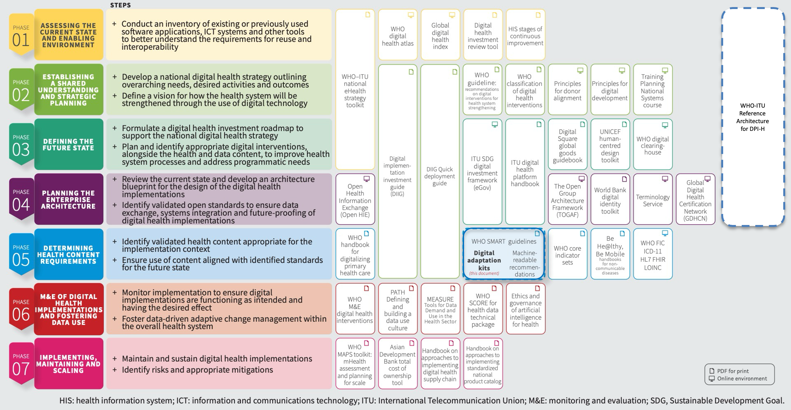
Figure 1: The Reference Architecture within planning and implementing a digital health enterprise
✎ edit📣 feedback Beyond the architecture itself, the guidance offers practical support for implementation. It describes how interoperability is realised as a cross-cutting property of the architecture rather than a single component; how a semantic governance infrastructure sustains the shared meaning of data over time; and how countries can approach conformance, coverage and progress, the roles and skills required, and the financing and partnership arrangements that make DPI-H sustainable. A dedicated treatment of emerging technologies positions artificial intelligence as a cross-cutting consideration that depends on — and raises the importance of — the trusted, well-governed data foundations the architecture establishes.
✎ edit📣 feedback This guidance was developed jointly by the World Health Organization and the International Telecommunication Union, working with a technical working group drawn from enterprise architecture, clinical, health informatics, public health and digital health backgrounds across low-, middle- and high-income settings. It applies established enterprise architecture methods — TOGAF® and ArchiMate® — and builds on existing frameworks, including the OpenHIE Architecture, the WHO-ITU Digital Health Platform Handbook and the WHO Digital Implementation Investment Guide. It was refined through successive rounds of drafting and expert review and released for public consultation ahead of publication.
✎ edit📣 feedback The following highlight the distinct contributions of the DPI-H Reference Architecture Guidance:
- Articulation of DPI-H and their value
- Articulation of DPI-F and DPI-H relationships
- An enterprise architecture approach anchored on seven priority health goals
- Systematic mapping of required capabilities to achieve each health goal
- Articulation of health-specific requirements that foundational DPI would need to satisfy
- Articulation of minimum capabilities for Resilient Essential Data and Digital Health Infrastructure (REDDHI)
- Introduction of additional components not previously described as part of a digital health architecture — Logical Information Model Repository (LIMR), Computable Decision Support Engine, Benefits Package Registry, Public Health Surveillance Platform, Supplier Registry
- Reconceptualisation of the shared health record as the Lifelong Health Record, a capability-based framing that reflects the person-centred, longitudinal nature of health information, without prescribing how countries implement it
- Introduction of a Semantic Governance Infrastructure
- Introduction of SMART Guidelines as a standard for computable clinical and health content that connect clinical guidelines to DPI-H
- A structured framework and methodology that countries can adopt and adapt to their context to make architecture decisions
- Detailed ArchiMate models to support technical teams’ implementation
- A testable architecture, whose structured, machine-readable elements enable conformance to the reference to be verified against published profiles rather than only described.
✎ edit📣 feedback Taken together, these contributions give countries a structured framework and a shared vocabulary that they can adopt and adapt to their own context — moving from strategic intent to coherent, standards-based technical implementation, whatever their starting point.
How to use this guidance
✎ edit📣 feedback Reading paths by audience
✎ edit📣 feedback This guidance is written so that no single reader needs to read all of it. The cards below describe what each audience will get most from, and roughly how many pages that core path runs to. The matrix that follows shows, section by section, what is essential, useful, or optional for you. Find your column and follow it down the table.
✎ edit📣 feedback Table.
| Policy Makers, Health Ministries & Programme Managers Understand the purpose, the health sector goals, and the decisions you own. See how health infrastructure connects to your government's broader DPI, and which health DPIs to invest in to serve multiple programmes, disease areas, and levels of care. |
DPI Authorities See how DPI-H fits within wider cross-sector DPI, governance, and standards. Understand how the health sector becomes a major user of your foundational DPI services, and what health-specific requirements build on top of your infrastructure. |
Enterprise Architects & Technical Teams Work through the full architecture, application components, requirements, and models. Use the TOGAF-based methodology, architecture patterns, and standards-based blueprint to guide coherent design, integration, and validation at scale. |
Development Partners & Donors Grasp the value case, country adoption, and sustainability rationale. Find a shared framework to coordinate investments, reduce duplication, and ensure funded solutions are interoperable, accountable, and aligned with country priorities |
Procurement Teams Find what to specify and evaluate: components, requirements, and standards. Draw on common specifications and conformance requirements that support transparent procurement, vendor neutrality, and informed evaluation of solutions. |
|---|
✎ edit📣 feedback Key
✎ edit📣 feedback Table.
| ● | Essential — core reading for this audience | ◐ | Recommended — adds useful depth | ○ | Optional — reference only | – | Not intended for this audience |
|---|
✎ edit📣 feedback Table.
| Section | Policy Makers, Ministries & Programme Managers | DPI Authorities | Enterprise Architects & Technical Teams | Development Partners & Donors | Procurement Teams |
|---|---|---|---|---|---|
| Executive Summary | ● | ● | ◐ | ● | ◐ |
| How to Use This Guidance | ● | ● | ● | ● | ● |
| Section 1: Introduction | |||||
| 1.1 About the DPI-H Guidance | ● | ● | ◐ | ● | ○ |
| 1.2 Why Health Needs More Than Foundational DPI | ● | ● | ● | ◐ | ○ |
| 1.3 Value of DPI-H | ● | ● | ◐ | ● | ◐ |
| 1.4 DPI-H Principles | ◐ | ● | ● | ◐ | ◐ |
| 1.5 The Seven Priority Health Sector Goals | ● | ◐ | ● | ● | ○ |
| Section 2: DPI-H Reference Architecture Framework | |||||
| 2.1 The Reference Architecture Scope | ◐ | ◐ | ● | ○ | ◐ |
| 2.2 Resilient Essential Data and Digital Health Infrastructure (REDDHI) | ● | ● | ● | ◐ | ○ |
| 2.3 DPI-H Reference Architecture Design Principles | ◐ | ● | ● | ◐ | ◐ |
| 2.4 Methodology: Mapping Health Goals to DPI-H | ◐ | ◐ | ● | ◐ | ◐ |
| Section 3: The Reference Architecture for DPI-H | |||||
| 3.1 The Architecture Description Approach | ○ | ◐ | ● | ○ | ○ |
| 3.2 Reading and Navigating the Reference Architecture | ◐ | ◐ | ● | ○ | ◐ |
| 3.3 The Reference Architecture in Practice | ◐ | ◐ | ● | ○ | ◐ |
| 3.4 Governance of Architectures and DPI-H | ◐ | ● | ● | ○ | ○ |
| 3.5 DPI-H Application Components | ◐ | ◐ | ● | ○ | ● |
| 3.6 Interoperability Architecture | ○ | ◐ | ● | – | ◐ |
| 3.7 Conformance and Testing | ○ | ◐ | ● | ○ | ● |
| Section 4: Implementing a National Digital Health Architecture | |||||
| 4.1 Understanding the Starting Point | ● | ◐ | ● | ◐ | ○ |
| 4.2 Charting a Path to REDDHI | ● | ◐ | ● | ◐ | ◐ |
| 4.3 Profiles and Specifications for Implementation | – | ○ | ● | – | ◐ |
| 4.4 Measuring Progress and Impact | ● | ◐ | ● | ● | ○ |
| 4.5 Roles, Skills, and Capacity | ● | ◐ | ◐ | ● | ○ |
| 4.6 Financing and Partnerships | ● | ◐ | ○ | ● | ◐ |
| Section 5: Future-Proofing the Architecture | |||||
| 5.1 Emerging Technologies and Foundations They Depend On | ◐ | ◐ | ● | ◐ | ○ |
| 5.2 Why Data Foundations Determine What AI Can Deliver | ◐ | ◐ | ● | ◐ | ○ |
| 5.3 Where AI Can Support the Health System | ● | ◐ | ● | ◐ | ○ |
| 5.4 Readiness, Oversight and Responsible Adoption | ● | ● | ● | ◐ | ◐ |
| 5.5 Keeping Architecture Open and Adaptable | ◐ | ◐ | ● | ◐ | ◐ |
| References & Appendices | |||||
| References | ○ | ○ | ◐ | ○ | ◐ |
| Appendix A: DPI-H Stakeholders Table | ◐ | ◐ | ◐ | ◐ | ○ |
| Appendix B: Health Sector Goals to WHO Building Blocks Mapping | ◐ | ○ | ◐ | ◐ | ○ |
| Appendix C: DPI-H Application Component Descriptions & Functional Requirements | ○ | ◐ | ● | – | ● |
| Appendix D: Country Implementation Experiences | ◐ | ◐ | ◐ | ● | ○ |
| Appendix E: Health Goals to DPI-H Mapping | ◐ | ◐ | ● | ○ | ◐ |
| Appendix F: Semantic Governance Infrastructure Capability Details | – | ◐ | ● | – | ○ |
✎ edit📣 feedback Key
✎ edit📣 feedback Table.
| ● | Essential — core reading for this audience | ◐ | Recommended — adds useful depth | ○ | Optional — reference only | – | Not intended for this audience |
|---|
✎ edit📣 feedback For the component articulations, Health Ministries and Development Partners may be best served by the summary rather than reading every individual component entry.
Introduction
1.1 About the Reference Architecture for health Digital Public Infrastructure (DPI-H) Guidance
✎ edit📣 feedback Most countries are no longer starting from nothing: by 2025, 129 countries1 had developed national digital health strategies aligned with universal health coverage and the Sustainable Development Goals. Yet implementation often remains fragmented, with countries lacking a systematic way to move from high-level health goals to coherent infrastructure decisions. WHO's Global Strategy on Digital Health 2020-20272 calls on Member States to develop digital health architectures using enterprise architecture approaches, but guidance at the level of specificity countries need has not, until now, been widely available. This guidance responds to that gap.
1.1.1 What is a reference architecture, and why does it matter for the health sector?
✎ edit📣 feedback A reference architecture is a technology-neutral blueprint that captures the common building blocks, relationships, and design principles of a technical environment, so that organisations do not have to start from a blank page. Drawing on established enterprise architecture practice, it serves as an authoritative reference point that guides the development of more specific architectures and solutions, while offering a structured framework of reusable building blocks.3,4 Its value lies in giving diverse stakeholders a shared frame of reference — a common vocabulary and structure that aligns decisions, reduces duplication, and makes application components easier to connect and sustain over time. In health, where services are delivered across many programmes, institutions, and levels of care, this is especially important. A reference architecture provides countries with a coherent way to translate high-level health policy goals into digital infrastructure that is interoperable, governable, and adaptable to their own context.
1.1.2 Understanding Digital Public Infrastructure (DPI) and health Digital Public Infrastructure (DPI-H)
✎ edit📣 feedback In 2020, WHO and ITU established the concept of digital health platforms to serve as the underlying information infrastructure, or ‘infostructure’, for interoperable and integrated national digital health systems that support the delivery of a broad range of public health and care services.5 Since then, digital public infrastructure (DPI) has emerged as a cross-sectoral approach adopted by governments worldwide and has become a defining concept in how governments and international bodies approach the design and deployment of foundational digital systems.
✎ edit📣 feedback According to the World Bank Group6, DPI is an approach to digitalization focused on creating “foundational, digital building blocks designed for the public benefit.” They comprise a variety of digital software, platforms, APIs, and services, along with their related legal and regulatory frameworks, standards, policies, and processes.7 Critically, by providing essential digital functions at society scale that can be reused across sectors, DPIs enable public and private service providers to build on these systems, innovate, and roll out new services more quickly and efficiently.
✎ edit📣 feedback Building on this understanding, the G207 described DPI as a set of shared digital systems that should be secure and interoperable, and can be built on open standards and specifications to deliver and provide equitable access to public and/or private services at societal scale and are governed by applicable legal frameworks and enabling rules to drive development, inclusion, innovation, trust, and competition, while respecting human rights and fundamental freedoms. Taken together, these definitions establish foundational characteristics of DPI: that it is shared infrastructure operating at societal scale, and that its value derives not from any single system but from its open, interoperable nature upon which both public and private actors can build. The G20 itself recognises that DPI is an evolving concept, not necessarily limited to systems with these characteristics, and one that may be tailored to specific country contexts and referred to using different terminologies.7 This provides the basis for articulating a health-specific understanding of DPI, adapted to the needs of the health sector while remaining consistent with the broader consensus. It is from this cross-sectoral understanding that health-specific digital public infrastructure is derived.
Health Digital Public Infrastructure (DPI-H) refers to digital resources that are built as a shared means for fulfilling multiple health agency functions.
✎ edit📣 feedback These digital resources for health — encompassing both systems and specifications — leverage foundational DPI, are interoperable, reusable, publicly governed and built on open standards. They enable countries to autonomously manage the secure processing, collection, exchange, and use of health-related data to deliver essential health services and fulfil core health sector functions, while upholding individual data rights and ensuring equitable access.
✎ edit📣 feedback Two dimensions of this definition warrant particular attention. The first is the emphasis on shared means. DPI-H is not a collection of programme-specific tools or point-of-service applications; it is infrastructure that is shared, reusable, and available to all actors within the health system without requiring each to build equivalent capabilities independently. The second is the relationship between DPI-H and foundational DPI. DPI-H does not seek to replicate what foundational DPI provides; rather, it extends and complements them with the domain-specific capabilities that the health sector requires but that general-purpose DPI cannot accommodate. Where foundational DPI exists and is accessible, DPI-H builds upon it. Where it does not, DPI-H provides the essential capabilities the health system needs to function while remaining architecturally open to integration as the broader digital ecosystem matures.
✎ edit📣 feedback Together, these two dimensions — shared infrastructure and purposeful extension of foundational DPI — define what distinguishes DPI-H from the vertical, programme-driven systems, functional applications, and point-of-service solutions that have historically characterised health sector digitalisation. Where those approaches have delivered value within their individual contexts, they have done so at the cost of fragmentation, duplication, and limited interoperability across the health system as a whole. DPI-H establishes a different foundation: shared, reusable, and governed infrastructure upon which programmes, applications, and services can be built to fulfil multiple health agency functions, without recreating the capabilities that should be common to all. It is this architectural logic that underpins the reference architecture presented in this guidance document.
1.1.3 Building on existing foundations
✎ edit📣 feedback The DPI-H reference architecture guidance builds substantively upon and extends the foundational work of the 2020 WHO-ITU Digital Health Platform (DHP) Handbook and the OpenHIE Architecture Specification and draws on standard architectural guidance from The Open Group Architectural Framework (TOGAF).
✎ edit📣 feedback The reference architecture guidance addresses the maturation of national digital ecosystems where health is one sector leveraging common DPI rather than building parallel systems exclusively for health and advances the field's understanding of how health-specific DPI (DPI-H) integrates with and leverages broader DPI. While previous work established the value of shared components within health systems, DPI-H extends this thinking to cross-sectoral integration. Although the DHP Handbook and OpenHIE Architecture do not specifically reference the DPI concept, the fundamental challenges those resources sought to address remain the same. These include:
- Fragmented, siloed digital health applications
- Redundant investments in common capabilities
- Limited interoperability across systems
- Need for reusable components and shared infrastructure
- Importance of avoiding vendor lock-in
- Sustainability concerns with vertical approaches — standalone systems built for a single programme or disease area, which duplicate effort and are costly to sustain
✎ edit📣 feedback DPI has demonstrated impact in countries and catalysed ecosystem innovation across sectors. Foundational DPI for identity, data exchange and digital payments — exemplified by India's Aadhaar digital identity, Brazil's Pix instant payments, and Estonia's X-Road data exchange layer — have shown tremendous value as shared infrastructure that can be leveraged by multiple sectors8. The health sector has been a direct beneficiary in some countries; for example, in India, the COVID-19 vaccination platform CoWIN was built on the existing Aadhaar identity infrastructure for beneficiary verification, helping deliver over one billion vaccine doses within nine months and reaching more than 940 million registered users9. In Estonia, the national health information system — which since 2008 has maintained a longitudinal electronic health record for every resident — runs on the same X-Road data exchange layer used across all public services, while citizens access their records through the national digital identity (ID-card or Mobile-ID) rather than a health-specific credential10. Together these cases show how health-specific capabilities can be delivered at population scale by leveraging foundational DPI, rather than building parallel identity, data-exchange or payment systems for health alone. The health sector however, while not being unique in its ability to leverage foundational DPI, possesses some unique requirements that have not yet been articulated to enable it to effectively leverage these foundational components. This guidance articulates the explicit health-sector requirements that foundational DPIs would need to satisfy in order to contribute to health sector goals. Additionally, this reference architecture recognises that the health sector possesses some components that can be shared and reused across different programmes in the health sector, components that can be described as health DPIs (DPI-H). It also articulates the explicit requirements that the “health DPIs” would need to satisfy in order to contribute to health sector goals.
✎ edit📣 feedback Using TOGAF-based enterprise architecture methodology, this guidance introduces a structured approach to articulating the reference architecture, anchored in seven priority health sector goals (Box 1). These goals are examined in further detail in a subsequent section and broken down to describe the value that different health sector stakeholders derive from technology implementations.
Box 1.1: The Seven Priority Health Sector Goals
Build Trusted Data Foundations – “Capture once, use many times.”
Support a Capable, Well-Distributed Health Workforce – “Proven Skills, Right Place, Timely Pay, Continuous Growth.”
Ensure Quality and Continuity of Care – “Care that connects, protocols that guide.”
Establish Trusted Personal Health Records – “Every person has a right to their own health record.”
Optimize Supply Chain Management – “Safe health products and services delivered when and where they are needed”
Advance Efficient and Equitable Health Financing – “Smarter spending, stronger protection.”
Strengthen Climate and Epidemic Resilience – “Predict early, timely action.”
✎ edit📣 feedback This guidance is the product of an extensive collaborative process drawing on the experiences, expertise, and country learnings of a diverse global community of practitioners. It reflects contributions from digital health architects, clinical informaticians, health financing specialists, supply chain experts, country implementers, and development partners spanning low, middle, and high-income countries across multiple regions — ensuring that the architecture it describes is grounded in the realities of implementation rather than abstract concepts.
1.1.4 Who can benefit from this guidance?
✎ edit📣 feedback This document provides guidance for health-sector and related stakeholders to support national planning and implementation of capabilities that strengthen health service delivery, deliver measurable population-level impact and contribute to a country’s economic growth.
- Health Ministries and Programme Managers: This reference architecture helps you understand how your health-specific infrastructure connects to your government's broader DPI initiatives, ensuring your investments align with and leverage national digital infrastructure. It also highlights health DPIs that your country should invest in and how they interoperate to support multiple programmes, disease areas and levels of care.
- DPI Authorities: This reference architecture shows how the health sector can become major users of your foundational DPI services while explaining what health-specific requirements they need to build on top of your infrastructure.
- Enterprise Architects and Technical Teams: This reference architecture provides TOGAF-based methodology, formal architecture patterns, and systematic requirements frameworks to support coherent planning and long-term scalability across the health ecosystem. It also provides a clear, standards-based blueprint that guides system design, integration, and validation, enabling interoperable and scalable implementations.
- Development Partners and Donors: This reference architecture provides a shared framework to guide coordinated investments, reduce duplication, and ensure funded solutions are interoperable, scalable, and aligned with country priorities. It demonstrates how DPI can strengthen transparency and accountability by being embedded into health financing and public financial management processes. It also highlights how health-specific capabilities integrate with broader DPI to support multiple health goals simultaneously, enabling more strategic investments and avoiding siloed, unsustainable approaches.
- Procurement Teams: The reference architecture defines common specifications and conformance requirements that support transparent procurement, vendor neutrality, and informed evaluation of solutions.
- Policy Makers: This reference architecture helps translate policy intent into technically coherent and implementable direction. It clarifies the decisions digital health policy needs to resolve — governance, standards, data protection and consent, country ownership, and sustainable financing — and situates health within the wider digital public infrastructure agenda, helping align health digital policy with national digital strategy.
1.2 Why health needs more than foundational DPI
✎ edit📣 feedback A recurring theme in digital public infrastructure discourse is that sectors should leverage foundational DPIs — identity, payments, and data exchange — rather than build parallel, sector-specific equivalents that reinforce fragmentation of a country’s digital architecture. This is sound guidance where foundational DPIs exist, are trustworthy, and are accessible, and the health sector should build on them wherever it can. Foundational DPIs are, by design, general-purpose: they provide broadly reusable capabilities and deliberately leave sector-specific logic to the sectors that use them. Health, however, presents conditions that require more than foundational DPI can currently provide — in some cases because foundational DPI is genuinely absent or incomplete, and in others because the capability belongs with health-specific components by design. The aim is not to create permanent parallel infrastructure, but to leverage foundational DPI where it serves, add health-specific components where it does not, and ensure that gaps in foundational DPI do not become a barrier to delivering care.
✎ edit📣 feedback For a significant number of low- and middle-income countries, foundational DPIs are either nascent or absent. This means that in some cases, even where a country has foundational DPIs, health may require specific capabilities, exchange standards, and governance arrangements that go beyond what a general-purpose DPI can provide. Where foundational DPIs do not yet exist — as is the case in many low- and middle-income countries — health systems cannot wait. Care delivery, disease surveillance, health financing and supply chain management need to function in the present.
1.2.1 Identity DPI and Identification in Healthcare
✎ edit📣 feedback Consider identity. A national ID system establishes who a person is, but health requires knowing what a person is eligible for, what treatments they are receiving, what medications have been dispensed, and whether they have consented to share specific data with specific actors. Foundational identity DPI also has genuine coverage gaps for populations the health sector is obligated to serve; it does not typically cover newborns prior to civil registration, refugees, undocumented migrants, or other marginalised groups. Clinical settings also routinely encounter patients who present without documentation, requiring probabilistic matching, duplicate detection, and family linkage capabilities that are simply outside the scope of general-purpose identity DPI. These represent routine operational requirements in health systems worldwide, rather than edge cases. Box 2 sets out where foundational identity DPI, on its own, does not meet health-sector needs.
Box 1.2: Why foundational identity DPI is not sufficient for health on its own
Foundational digital identity provides authoritative identification and authentication of individuals. The health requirements below reflect genuine gaps, others reflect capabilities that belong with health components by design — in both cases, foundational identity is necessary but not sufficient on its own:
Coverage Gaps: Foundational identity systems may not cover vulnerable populations who need health services—newborns (before civil registration), refugees, undocumented migrants, and marginalized communities. The health sector is required to provide universal access regardless of legal identity status. These gaps have downstream consequences: where individuals are missing from or inconsistently identified in the population base, it becomes harder to establish reliable denominators for disease surveillance and population health monitoring, and continuity of care is weakened when a person cannot be consistently recognised across visits, providers, or over time.
Purpose Limitations: National ID proves who you are but not what you're eligible for. Health services require additional context: health coverage schemes, programme enrollment (e.g., for HIV treatment, TB medication), service entitlements, and consent status—which are not provided by foundational identity systems.
Privacy and Consent Granularity: Health data demands more stringent privacy protections and granular consent management than general identity systems typically provide. Patients may consent to sharing data with their physician but not with researchers, or allow access to vaccination records but not mental health records—nuances foundational identity systems don't address.
Clinical Matching Requirements: Healthcare requires probabilistic matching algorithms for patients presenting without identification, duplicate detection across misspelled names or missing data, and family relationship linkages—capabilities beyond simple identity verification.
Multiple Health Identifiers: Health ecosystems often have context-specific identifiers—patient medical record numbers, health coverage scheme member IDs, clinical trial participant IDs—that serve different purposes than national identity and these cannot be simply replaced by a single foundational ID.
Cross-Border Care: National identity systems are country-specific, but health services increasingly require cross-border recognition for migrants, travelers, and regional health initiatives—a gap foundational identity DPI doesn't inherently solve.
These highlight the need for a health-specific DPI component that bridges foundational identity (when available) with health-specific requirements. It provides universal coverage including those without legal ID, manages health-specific attributes and consents, enables clinical matching algorithms, and maintains health system identifiers while linking to national ID where it exists. The reference architecture positions Client Registry as the health sector's identity DPI that integrates with but doesn't depend entirely on foundational DPI identity systems.
1.2.2 Data exchange DPI and Interoperability in the health sector
✎ edit📣 feedback A similar pattern emerges when examining foundational data exchange DPI. Health systems involve a wide range of actors — ministries, facilities, clinicians, programme managers, health coverage schemes, supply chain operators, researchers, and patients themselves — each with different informational needs that no single system can meet alone. General-purpose data exchange DPI are designed to move data securely between systems, and they are agnostic to the content they carry. This content-neutrality keeps the exchange layer simple, broadly reusable across sectors, and free of any single sector's business logic, while keeping accountability for that business logic with the institutions that own it.
✎ edit📣 feedback However, the health sector has requirements that foundational data exchange, on its own, does not address — both in how data must be understood when it moves and in how far it must travel. Box 3 sets out where foundational data exchange DPI does not, by itself, meet health-sector needs, and the gaps the health sector aims to bridge.
Box 1.3: Why foundational data exchange DPI is not sufficient for health on its own
Foundational data exchange DPI provides secure, authenticated, logged, reliable transport between registered parties. Like a postal service that delivers a sealed envelope without opening it, the data exchange DPI carries data between systems without reading or interpreting its contents. The capabilities below are health-sector requirements essential to health data exchange that this transport, on its own, does not provide.
1. Structural, semantic, and message-format interoperability: Clinical and health-related data need to be structurally consistent, semantically unambiguous, and exchanged in recognised health message formats — such as HL7 FHIR — so that they are interpreted consistently across systems, including where systems use differing or older formats. General-purpose data exchange DPI is designed to move data securely (encrypted end to end) but is agnostic to its structure, meaning, and format, carrying messages between systems without reading or reconciling their contents.
2. Cross-Border and Multi-Jurisdiction Exchange
Health increasingly requires the exchange of information across borders — for migrants, travellers, regional disease surveillance, and emergency response. Foundational data exchange DPI is typically national in scope; cross-border health data exchange depends on shared information standards, such as the International Patient Summary, and on legal and governance frameworks for health data that extend beyond any single national data exchange DPI.
1.2.3 Payments DPI and financial transactions in the health sector
✎ edit📣 feedback Foundational payments DPI provides the rails for moving money securely and at scale between parties — for example, instant payment systems, mobile money platforms, and government-to-person (G2P) transfer mechanisms.8
✎ edit📣 feedback For the health sector, these rails offer genuine value, supporting provider payment and collection of health insurance contributions, at scale. Health financing, however, is concerned with far more than moving money. Its goals are efficient and equitable use of resources and protection of people from financial hardship, pursued through three core functions: revenue raising, pooling, and purchasing. The funds involved come from several sources — government budget appropriations through Ministries of Finance, development partner financing, social health insurance contributions from workers and employers, private insurance, and direct contributions from patients. Achieving financing goals depends on aligning these flows with a range of health-specific data and events, including eligibility and benefit entitlement, clinical coding, verification of service delivery, provider and facility credentials, and budget and expenditure rules. Foundational payments DPI can execute the movement of funds once these determinations have been made — a useful capability — but it does not itself capture, evaluate, or align this information.
✎ edit📣 feedback The nature of a health financial transaction compounds this. Such a transaction is rarely a simple bilateral transfer; it is typically contingent on health-specific determinations — benefit entitlement, clinical coding, prior authorisation, service delivery verification — and becomes meaningful as financing data only when linked to the records that establish those conditions: the person, the encounter, the provider, the entitlement, and the relevant budget line. Many flows also operate within public financial management (PFM) frameworks — budget appropriations, treasury controls, expenditure reporting, and fiscal accountability mechanisms — that sit outside both health systems and foundational payments DPI, requiring integration with government-wide PFM systems as well as sector-specific health financing processes. Box 4 sets out where general-purpose payments DPI falls short of these requirements, and why health-specific financing capabilities would need to extend or complement foundational DPI.
Box 1.4: Why foundational payments DPI is not sufficient for health on its own
Foundational payments DPI provides secure, reliable movement and settlement of funds between parties. Its limitation for health centres on a specific requirement: that health sector payments hinge on determinations the foundational payments DPI cannot make.
1. Agnostic to health-specific determinations. The payment rails move funds once a decision to pay has been made, but they are agnostic to the determinations that decide whether, what, and to whom to pay. In health, those determinations are relevant because a payment may depend on adjudicating a claim against a benefit package; coordinating several payers — government schemes, public and private insurance, donor programmes, and patient contributions — across a single encounter; confirming the payee is a licensed provider or facility; verifying that a clinical event, service delivery, or supply-chain condition has actually occurred; or calculating amounts from enrolled populations or measured performance. Foundational payments DPI can execute a disbursement once these determinations have been made, but it does not make these determinations, assess them, or maintain the underlying records and rules over time.
These determinations are the work of health-specific financing components rather than the payment rails. The reference architecture provides for a shared component that defines coverage, entitlements, and the rules against which claims and payments are assessed (the Benefits Package Registry), drawing on health registries for the person, product, and provider information involved — establishing what a payment should be before foundational payments DPI moves the funds.
1.3 Value of DPI-H
✎ edit📣 feedback The case for health-specific DPI rests on more than the limitations of foundational DPI. DPI-H represents a fundamentally different philosophy of investment — one that shifts attention away from procuring discrete technology products and towards building shared, reusable capabilities that serve the entire health system simultaneously. These benefits are not theoretical: as noted earlier, countries have already demonstrated them in practice — leveraging foundational identity infrastructure to deliver vaccination at population scale, and shared data exchange to sustain longitudinal health records nationwide.
1.3.1 The Cost of Fragmentation
✎ edit📣 feedback The dominant pattern in health system digital transformation to date has been vertical and programme-driven, and its costs are now well understood. HIV programmes have built their own patient tracking systems, immunisation programmes have built their own registries, maternal health, TB, and malaria programmes have each acquired dedicated platforms, each with their own patient identification logic, their own facility lists, their own data formats, and their own integration requirements. The result in a lot of LMICs is a fragmented landscape of parallel systems that are expensive to maintain, difficult to interconnect, and that place a compounding burden on the health workers and facilities that need to operate them in parallel.
✎ edit📣 feedback The economic cost of this fragmentation is not linear — it grows quadratically. Without shared infrastructure, every programme that needs to exchange data with another would be required to build and maintain its own direct connection to each of the others. Adding a single new programme means adding a new connection to every existing one and each integration would have to be built, tested, funded, and maintained. The cost of keeping a fragmented ecosystem connected compounds with every system added and in a health system with many active programmes, the cumulative number of connections that have to be built, funded, and maintained becomes unmanageable — and every time any one system is updated, every connection to it is at risk.
✎ edit📣 feedback However, understanding why fragmentation persists is as important as understanding its costs. This was elaborated in a recent report from a high-level dialogue that sought to understand how countries can sustainably leverage DPI to transform health systems11. The report highlighted that the dominant pattern of vertical, programme-driven digitisation is not simply the result of poor planning or lack of awareness, rather it reflects a set of structural incentives that actively work against shared infrastructure. The report outlined issues like career trajectories within health programmes rewarding delivery against programme-specific targets, procurement systems being designed around discrete project cycles with defined outputs, and donor funding structures creating accountability to individual programme results rather than to the health system as a whole. In this environment, departments and programmes are consistently better rewarded for protecting and developing their own systems than for contributing to shared infrastructure that benefits others. Therefore, coordination is at its core, a political economy problem as much as a technical one.
✎ edit📣 feedback Nevertheless, this does not diminish the case for DPI-H but rather clarifies the nature of the challenge. Countries and their partners that choose to pursue shared infrastructure are not simply making a technical decision; they are choosing to work against incentive structures that favour the status quo. The value of DPI-H is therefore not only the efficiency and interoperability it delivers once in place, but the deliberate political and institutional commitment it represents — a choice to prioritise long-term health system coherence over the short-term convenience of vertical approaches, accepting a larger upfront investment in exchange for compounding, system-wide returns.
1.3.2 What DPI-H Makes Possible
✎ edit📣 feedback DPI-H addresses fragmentation directly. By investing in shared core capabilities, countries create infrastructure that every programme can draw upon without rebuilding. The savings in development cost, maintenance burden, and operational complexity are substantial, and they grow more valuable as the health system expands.
✎ edit📣 feedback This shift from product procurement to capability investment also changes the nature of what countries own. Vertical technology procurement tends to lock health systems into vendor-specific solutions, with significant switching costs if a product is discontinued, becomes unaffordable, or fails to evolve with changing requirements. DPI-H, built on open standards and modular architecture, creates infrastructure that countries can govern, extend, and adapt — and upon which local innovators, both public and private, can develop new services without recreating the foundational layer.
1.3.3 Value Across Stakeholders
✎ edit📣 feedback The value of DPI-H is also distributed across a broad range of stakeholders, each of whom benefits differently from the same shared infrastructure. For example:
- Patients benefit from continuity of care with their clinical history, identity, and entitlements following them across facilities and programmes rather than being reconstructed at each encounter.
- Health workers benefit from reduced administrative burden, fewer duplicate data entry tasks, and access to more complete and reliable information at the point of care.
- Health programme managers gain a consistent, cross-cutting data foundation that supports monitoring, evaluation, and resource planning across programmes rather than within silos — and, as data is aggregated across programmes and sectors, a basis for the intelligence that informs sector objectives, financing decisions, and operational guidelines.
- Ministries of Health gain visibility and governance over a coherent national digital health ecosystem rather than a patchwork of disconnected systems.
- Ministries of Finance and cross-sector counterparts benefit from the transparency and accountability that shared DPI-H makes possible; with visibility into health expenditure, fraud detection, supply chain efficiency, and whether health financing schemes are paying providers correctly and on time and reaching intended beneficiaries, providing the evidence base for informed resource allocation decisions.
- Development partners and donors benefit from infrastructure that outlasts individual funding cycles; with their investments building upon a shared foundation, rather than duplicating it.
- Researchers benefit from access to more complete and consistent health data — under appropriate consent and governance — supporting studies, evaluation, and evidence generation, which is more difficult to support when data is fragmented.
- The commercial sector can innovate on top of the shared infrastructure, building new value-added services and applications rather than recreating core components.
- DPI Authorities can leverage DPI-H to extend the utility of foundational DPI into contexts it was not designed to handle independently.
- The health system as a whole benefits from the compounding returns of interoperability and shared DPI, rather than degrading under the weight of fragmentation.
✎ edit📣 feedback DPI-H does not eliminate the need for programme-specific and point-of-service applications. It provides the foundation upon which they can be built more efficiently, connected more reliably, and sustained more affordably — making every subsequent investment in the health system more productive than it would otherwise be.
1.4 DPI-H Principles
✎ edit📣 feedback The design and implementation of Digital Public Infrastructure for Health is guided by a set of principles that reflect the technical requirements of shared digital infrastructure and the responsibilities inherent in managing health data at population scale. At its foundation, DPI-H promotes the use of open standards and interoperable design, enabling systems to exchange data reliably and evolve without vendor lock-in. The principles below should inform every aspect of how DPI-H is conceived, built, governed, and sustained.
✎ edit📣 feedback Interoperability: DPI-H should support both data and system interoperability, enabling the exchange and use of information across platforms, providers, and potentially, sectors. It is designed to accommodate domain-specific extensions without disrupting other users or systems, ensuring that as the health digital ecosystem grows, continuity and scalability are preserved rather than compromised.
✎ edit📣 feedback Reusability: DPI-H components should be designed for reuse across programmes and use cases, allowing shared functionality and data to serve multiple purposes without duplication. This reduces cost, lowers implementation burden, and provides a stable foundation upon which additional solutions — public and private — can be built and iterated.
✎ edit📣 feedback Open Standards and Specifications: DPI-H should be built on open standards, specifications, and APIs developed through recognised Standards Development Organisations (SDOs) and open governance processes that are inclusive in participation and accessible in their outputs. Open standards promote interoperability, portability, and transparency, enable consistent data structures, and support the long-term sustainability of national digital health investments by removing dependency on proprietary technology.
✎ edit📣 feedback Public Governance: DPI-H should be governed in the public interest under clear legal and regulatory frameworks that protect privacy, security, and individual rights. Public governance refers to accountable stewardship under public mandate — ensuring the infrastructure fulfils the functions the health sector needs to meet health and health-related needs, and remains subject to institutional oversight — rather than requiring that every component be publicly owned or operated. Components may be built or operated by public, private, or non-governmental actors, provided they remain accountable to public oversight. Such governance structures provide the accountability and trust that are prerequisite to the widespread adoption of shared health infrastructure.
✎ edit📣 feedback Security and Privacy: DPI-H embeds security and privacy protections by design, treating them not as compliance requirements but as foundational architectural properties. Protection encompasses both dimensions — security against unauthorised access, and privacy as a right — ensuring that access to personal health data is controlled, lawful, and appropriate. DPI-H applies zero-trust principles and rights-enhancing measures by default, while also ensuring resilience and continuity of essential health services against evolving cyber and operational risks.
✎ edit📣 feedback Autonomy and Sovereignty: DPI-H supports national ownership and control of digital health systems, enabling countries to implement solutions aligned with their own priorities, policies, and governance structures. Countries should not be dependent on actors outside their jurisdiction for the continued operation or evolution of their core digital health infrastructure, and the capabilities, standards, and governance of DPI-H should remain under national control.
✎ edit📣 feedback These principles establish the foundational character of DPI-H as shared digital infrastructure. The reference architecture that gives effect to these principles is further shaped by a set of architectural principles that govern how DPI-H is designed, structured, and applied in practice — addressed in the Architecture Principles sub-chapter of the Reference Architecture Framework.
1.5 The Seven Priority Health Sector Goals
✎ edit📣 feedback The reference architecture is organised around seven priority health sector goals12* that represent the areas where digital infrastructure can most meaningfully improve health system performance. These goals are not isolated ambitions but mutually reinforcing outcomes that compound in value as the underlying infrastructure matures.
✎ edit📣 feedback At the heart of the architecture is a simple but consequential principle: that data about a person, a facility, a product, or a transaction should be captured once, governed well, and made available — with appropriate consent and permissions — wherever it is needed across the health system. "Governed well" carries as much weight here as "captured once": the value of shared data depends on its trustworthiness, quality, and security, which in turn rest on sound data governance — consistent standards applied across the entire data journey, from capture through to use. In practice, this principle reshapes everyday work. A health worker would no longer be required to re-enter the same patient demographics at every encounter; a clinical finding from one visit would inform the next; a prescription recorded at a clinic can be verified at a pharmacy.
✎ edit📣 feedback Beyond the point of care, health workers in many settings carry a significant and often invisible administrative burden — completing multiple returns, registers, and reports for different programmes, each drawing on the same underlying data but compiled separately by hand. Where data is captured digitally into shared infrastructure, programme reporting can be generated from data that already exists rather than extracted through additional effort from the people delivering care. This reduces redundant data entry and duplicated reporting, freeing capacity that can be put to better use — though realising that benefit depends on how the freed time is managed. The data itself also becomes more reliable, because it flows from the point of care rather than being reconstructed at the point of reporting.
✎ edit📣 feedback The same well-governed foundation compounds in value as it is reused. It allows a health authority to see, close to real time, where its workforce is and what it is qualified to do; it lets a patient's clinical context follow them from a community health worker to a clinic to a hospital, so that care is coordinated rather than repeated; it enables medicines to be directed to where demand and capacity confirm they are needed; and it allows financing to be verified against real service delivery and directed toward the populations that need it most. When a disease outbreak emerges or a climate event strains the system, the same surveillance and data exchange capabilities provide early signals. Each of these is reflected in the seven goals set out below — but their common thread is that none requires a separate, parallel system. They draw on the same shared foundation, which is precisely what allows their value to accumulate.
1.5.1 The Health Sector Goals
✎ edit📣 feedback The first goal is building trusted data foundations. The core principle is that health data should be "captured once and used many times”. Countries currently invest heavily in reporting systems where the same data is re-entered at multiple levels of the system, leading to high burden, low quality, and limited comparability. The architecture defines the shared infrastructure that enables a single, high-quality data capture to support clinical care, facility management, population analytics including CRVS and mortality, public health monitoring, and domestic AI development simultaneously.
✎ edit📣 feedback The second goal is supporting a capable, well-distributed health workforce. Health workers should receive timely and accurate pay, their qualifications should be verifiable, and their career development should be supported. This requires an authoritative health workforce registry that is continuously maintained, linked to payroll systems, connected to professional licensing authorities, and able to support analytics on workforce distribution and retention.
✎ edit📣 feedback The third goal is ensuring quality and continuity of care. Clinicians need access to a patient's relevant history at the point of care, and their clinical decisions should be supported by evidence-based protocols that are current and computable. This requires longitudinal health record infrastructure that is captured across an individual’s lifetime, a computable clinical decision support capability, and the interoperability to make both accessible across facilities and over time.
✎ edit📣 feedback The fourth goal is establishing trusted personal health records with every person having a right to their own health record. The architecture supports individuals having access to secure, portable, and verifiable records of their health encounters, vaccinations, diagnoses, and treatments — records that follow them across providers and that they control through meaningful consent mechanisms.
✎ edit📣 feedback The fifth goal is optimised supply chain management. Health products need to reach the right place at the right time. Real-time visibility into inventory, consumption, and logistics — supported by standardised product catalogues and interoperable data exchange between supply chain actors — prevents stock-outs and wastage and ensures that essential medicines and commodities are available where they are needed.
✎ edit📣 feedback The sixth goal is advancing efficient and equitable health financing. Health financing systems need to be transparent, efficient, sustainable and ensure financial protection as well as service coverage . Digital tools that link service delivery data to financing flows, validate claims, and support provider payments can substantially reduce leakage and delay while improving health coverage scheme management.
✎ edit📣 feedback The seventh goal is strengthening climate and epidemic resilience. Countries need to detect outbreaks early and respond fast, and they need to anticipate and manage the health impacts of climate change. This requires standardised environmental and disease surveillance data, analytical tools that can identify signals in that data, and coordination mechanisms that can trigger and track response activities.
✎ edit📣 feedback The outcomes these goals describe are not automatic. The extent to which they are realised depends on the quality of implementation and the context in which it takes place; evidence to date shows that benefits anticipated in design are not always borne out in practice. For this reason, the implementation of DPI-H should be evaluated as it proceeds — to evidence the benefits actually delivered, identify and mitigate risks, and share learning across programmes and countries. Together, these goals point towards a health system that has moved beyond digitisation as an end in itself — toward a system that is more equitable in who it reaches, more efficient in how it operates, more responsive to the people who deliver care, and more resilient in the face of the challenges that are increasingly certain to come.
DPI-H Reference Architecture Framework
✎ edit📣 feedback The reference architecture for health Digital Public Infrastructure (DPI-H) guidance provides countries with a structured architectural framework for designing national digital health infrastructure that is organised around the health goals countries are pursuing, governed by clear principles, and built on shared, reusable components. It is not a prescriptive blueprint that mandates specific products or solutions. It is an adaptive framework — one that countries can engage with at the level that is relevant to them, using it to assess gaps, sequence investments, and make design decisions that are coherent with both their immediate context and their long-term aspirations. In doing so, it gives countries a coherent way to see how the parts of their digital health environment relate to one another and how individual investments contribute to the whole.
✎ edit📣 feedback Its contribution is to organise national infrastructure around shared, governed components — core registries and semantic and terminology services — connected through a standards-based means of exchange, so that the data health systems depend on become more consistent, trustworthy, and secure, and can be reused across programmes rather than rebuilt for each one. Better-governed data is the proximate benefit; it is what allows countries to plan, finance, and deliver health services with greater confidence.
✎ edit📣 feedback The reference architecture framework was developed using The Open Group® Architecture Framework (TOGAF®) as its methodological foundation13. TOGAF® provides a structured, established approach to enterprise architecture that works from business goals through capabilities and application services that support them, to the technical components, so that architectural decisions remain traceable to the health goals they are intended to support. In practice this means a country can follow the chain in both directions: from any component or capability back to the health goal it serves, and forward to the specifications that govern its implementation. Where established frameworks and existing resources already cover part of this ground, they are referenced rather than duplicated.
2.1 The Reference Architecture Scope
✎ edit📣 feedback The reference architecture is set at the level of detail of a national health system. It describes the shared capabilities a national health system requires and the DPI-H components that deliver them. These components build on foundational DPI where it exists and are leveraged by the health programmes and point-of-service applications operating across the health system. What the architecture does not describe is the point-of-service applications and operational systems those programmes use to deliver their specific functions — electronic medical records, order-management platforms, warehouse-management tools, forecasting applications, and disease-specific programme tools. Such applications are important parts of a functioning digital health ecosystem, but they consume shared infrastructure rather than constitute it, and the architecture defines what DPI-H would need to provide so that they can be built, connected, and operated effectively. Anything it describes as a component should therefore be read as shared infrastructure that delivers one or more capabilities, not as a prescription to procure a specific digital system.
✎ edit📣 feedback Within this scope, the architecture organises DPI-H across two distinct but related layers.
- Metadata registries and foundational components.
- Business services layer
2.1.1 Metadata registries and foundational components
✎ edit📣 feedback The first layer comprises the shared components that are reusable not only across health programmes but potentially across sectors. These establish authoritative, shared references for the people, places, products and services, and workers within the health system; maintain the longitudinal record of an individual's health and care; and provide the semantic and structural foundations that make data consistently meaningful across the ecosystem. The core registries — for clients (health service users), health facilities, health workers, and products — sit in this layer, alongside the lifelong health record, terminology services, and the logical information model repository. A practical test for whether a component belongs in this layer asks whether it can be reused across many health domains, exposes a clean and stable interface, avoids locking countries into domain-specific implementations, and supports a foundational capability rather than programme-specific logic. Components that meet these criteria belong here; those that do not, belong at the application layer, and the description of their functional requirements falls outside the scope of this reference architecture.
2.1.2 Business services layer
✎ edit📣 feedback The second layer describes a grouping of health capabilities that national health systems strive to deliver across their principal domains — clinical care, public health, the health supply chain, and health financing — together with the shared components that enable them. It sets out what countries need to achieve through the lens of the capabilities required for each business service first and then describes the shared components that the health system uses to realise those capabilities. Clinical care, for instance, draws on a computable decision support engine that evaluates a patient's health record against computable clinical guidelines to deliver recommendations, alerts, and risk assessments at the point of care; health financing draws on the Benefits Package Registry to support benefit design, eligibility, and claims; supply chain draws on a supplier registry to verify supplier credentials, inform procurement, and anchor product traceability; and public health and analytics services draw on health management information systems for programme monitoring and on public health surveillance platforms for outbreak detection and response. These business-service components build on the metadata registries and shared foundational components, and several serve more than one domain — health management information systems, for instance, support clinical quality monitoring, programme oversight, and financial accountability alike — which is what distinguishes shared infrastructure from a programme-specific tool.
✎ edit📣 feedback Beyond the two layers, there are certain capabilities that are properties of DPI-H as a whole rather than features of any single component, layer, or business service. Interoperability is not a component to be built once but a property that should pervade the architecture through shared standards, common data models, and defined exchange patterns. Governance is cross-cutting in the same way: it applies to every component and capability the architecture describes and is treated as an architecture design principle below and elaborated on in the governance sub-chapter.
2.1.3 Relationship to foundational DPI
✎ edit📣 feedback The architecture does not redefine or duplicate what foundational DPI — digital identity, payments infrastructure, and general data exchange — provides. Where foundational DPI capabilities exist and are accessible, the architecture defines how DPI-H integrates with and builds upon them. Where they do not yet exist, it ensures that health systems can still function effectively in the present without being constrained by the absence of foundational DPI. This relationship is addressed in detail in the sub-chapters on DPI-H interoperability.
✎ edit📣 feedback Not all countries will implement the full scope of DPI-H at once, nor should they. Some capabilities and components form an essential foundation that every country should put in place first, from which the broader architecture can be progressively realised. Which capabilities make up that foundation, and how countries sequence their investments toward it, is the focus of the next chapter.
2.2 Resilient Essential Data and Digital Health Infrastructure (REDDHI)
2.2.1 What REDDHI is and its foundational core
✎ edit📣 feedback Most countries embarking on digital health transformation do not start from a blank slate. They inherit vertical, often disease-specific programme systems, donor-funded tools, and legacy platforms, each designed to serve a specific function without reference to what else exists. Data is captured repeatedly across systems that cannot communicate, people and facilities are identified differently in each, and lists are rarely reconciled. The consequence is a fragmented ecosystem that burdens health workers, weakens the quality, trust, and security of the data available for use, and makes every new investment less productive than it should be.
✎ edit📣 feedback REDDHI — Resilient Essential Data and Digital Health Infrastructure — describes the direction of travel that addresses this fragmentation: a governed, interoperable digital health infrastructure built on open standards and trusted, secure, quality data, within which local and regional innovation can flourish, investments can be mobilised and absorbed at scale, and the health system can sustain itself technically and financially over time. It is not a fixed destination to be reached and signed off, and it is not a set of systems to procure. It is a condition of self-sustaining national digital health maturity that continues to evolve as needs and technology change — one in which the foundational capabilities every health programme depends upon are shared, interoperable, and governed in the public interest rather than duplicated in silos.
✎ edit📣 feedback A country does not need the whole of REDDHI in place to begin. The starting point can be a core set of metadata registries, the (lifelong) health record, and the means to exchange data between them; These registries are interdependent: a longitudinal record carries little weight without the means to establish where and by whom each entry was made, so the facility and health workforce registries are what allow the provenance of records to be established, just as the client registry is what allows them to be reliably attributed to the right individual. REDDHI is the broader, maturing state those foundations make possible. Countries do not become “REDDHI-compliant” at a point in time; rather, they can gauge progress through observable markers — whether authoritative registries exist and are reused across programmes, whether data is exchanged through governed, standards-based means, and whether the quality and stewardship of that data are actively managed. Framed this way, REDDHI gives countries a way to assess their current state, identify gaps, and ground architectural choices in health-system requirements rather than in whatever technology happens to be available.
✎ edit📣 feedback This interdependence is what defines the essential core: the capabilities whose absence imposes the greatest cost on the rest of the ecosystem, and which, once in place, make every other investment more connectable and more sustainable. The table below summarises these foundational capabilities and the DPI-H components that deliver them. Most of these capabilities form the minimum viable foundation that countries should prioritise regardless of starting point; other capabilities such as having consistent data structures across systems are typically built up from that foundation as maturity grows. The full mapping of capabilities to components across all seven priority health goals is set out in the methodology section that follows and the defining characteristics of DPI-H application components are described in the DPI-H application components sub-chapter.
✎ edit📣 feedback Table.
Table 2.2: REDDHI — foundational capabilities and the components that deliver them
| Foundational capability | Components that deliver it |
|---|---|
| Unique identification of people, facilities, health workers, and products | Client Registry, Health Facility Registry, Health Workforce Registry, Product Registry |
| Authentication and access management | Foundational Identity DPI and national trust infrastructure (authentication, PKI, digital signatures, verifiable credentials), drawing on the Health Workforce Registry and Client Registry for roles and identity resolution |
| Longitudinal health records, with provenance and attribution | Lifelong Health Record, anchored by the Client, Health Facility, and Health Workforce registries |
| Standards-based data exchange across systems | Shared registries and Terminology Service as common references, exchanged through open standards and agreed exchange patterns |
| Consistent meaning across systems (terminology and coding) | Terminology Service |
| Consistent data structure across systems (information models) | Logical Information Model Repository* *An enabler that can be built up as maturity grows, rather than part of the minimum foundation |
| Data governance, quality, and audit | The registries, Terminology Service, and LIMR*, supported by a semantic governance infrastructure |
| Consent, authorisation, and privacy | Health-sector consent service, with consent enforced at the point of data exchange; or national/ foundational consent infrastructure where available |
2.2.2 The enabling conditions for REDDHI
✎ edit📣 feedback Achieving REDDHI requires more than selecting the right capabilities; it depends on those capabilities being built and governed in a way that keeps them trustworthy, sustainable, and genuinely open as needs and technology change. These enabling conditions, taken together, make this possible.
- Open Standards: grounding implementation in open standards — most notably HL7 FHIR as the primary framework for health data exchange, alongside established clinical classifications and terminologies such as ICD, LOINC, and SNOMED CT14*, which give data consistent meaning across systems and borders.
- Open Technologies: adopting open technologies that prevent vendor lock-in and allow local developers and implementing partners to build on a common codebase.
- Open Architectures: designing around open architectures that are modular and extensible, with openly published specifications and documented architectural patterns through which stakeholders can understand how components are connected and governed, how the system works, and how to extend and build new services on top of it.
- Open Content — such as the WHO SMART Guidelines15 — that represent trusted clinical guidelines and health specifications with computable decision support, digitally.
✎ edit📣 feedback Together, these four dimensions — open Standards, open Technologies, open Architectures, and open Content — form the full-STAC approach16: the enabling conditions for REDDHI that countries can adapt, share, and build upon without starting from scratch. They are what would allow a country's digital health investment to outlast any single funding cycle, allow local innovators to develop new services on a stable foundation, and allow the health system to keep evolving with changing needs and technologies rather than being locked into the decisions of the moment.
✎ edit📣 feedback REDDHI is, in this sense, both a practical direction and a strategic commitment. As a practical direction it describes what countries work to put in place to move beyond fragmentation. As a strategic commitment it describes how — through governance, open standards, and shared infrastructure — countries can position themselves to mobilise, manage, and absorb large-scale investment in ways that build lasting capability rather than new dependencies. The reference architecture that follows sets out the components, relationships, and design decisions through which countries can pursue this continuously evolving goal.
✎ edit📣 feedback Figure.
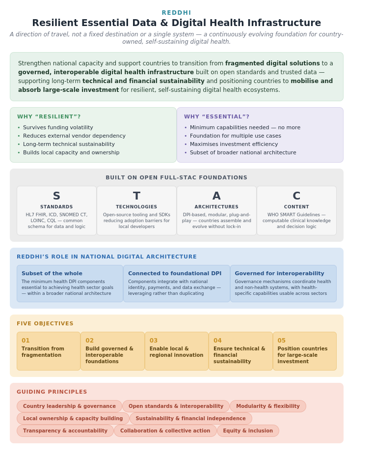
2.3 DPI-H Reference Architecture Design Principles
✎ edit📣 feedback Figure 2.2: REDDHI: resilient and essential dimensions, the full-STAC foundations, and REDDHI's role within national digital architecture.
✎ edit📣 feedback The DPI-H reference architecture is guided by a set of principles intended to ensure that national digital health architectures are sustainable, interoperable, and responsive to country needs. The architecture is context-adaptive, recognising variations in digital readiness, institutional capacity, and resource availability, and it acknowledges differing policy, legislative, and governance models without favouring a single approach.
✎ edit📣 feedback Whereas the DPI-H principles established earlier define the character of health digital public infrastructure, the architecture design principles below translate those commitments into the design decisions and structural choices that shape how the architecture should be built and implemented in practice. The two are intended to be read together: each architectural design principle translates a DPI-H principle into the design decisions and constraints that put it into practice, and together providing the criteria against which design decisions should be tested.
- Governance
✎ edit📣 feedback Countries should ensure that architectural decisions reflect and reinforce clear governance frameworks at every level — from the stewardship of individual DPI-H components to the oversight of the broader health digital ecosystem— with defined accountability structures, clear ownership of shared infrastructure, and arrangements proportionate to the sensitivity and criticality of the capabilities they oversee. Governance is a foundational architectural activity that precedes and shapes technical decisions rather than a project-level concern addressed after implementation, and it should not be assumed to be inherited from the frameworks or reference architectures a country adopts.
✎ edit📣 feedback A critical dimension of governance is the stewardship of data quality within shared components. Data quality is not only a top-down control mechanism but also a matter of relevance, accuracy, and fitness for purpose, sustained by the stakeholders who contribute to and rely on the data. The value of shared health infrastructure depends on the accuracy, completeness, timeliness, and consistency of the data it holds, and weaknesses cascade across clinical data exchange, public health surveillance, supply chain management, health financing, and workforce planning. Those who bear the data-entry burden often do not see the benefit of the resulting quality, so countries should design feedback such that contributors gain value from the data they enter, and should set minimum data-quality requirements as a governance prerequisite before a shared component is declared operational.
✎ edit📣 feedback As a design principle, this means governance arrangements shape architectural choices rather than follow them: components are designed with clear ownership and accountability built in, with access and decision rights that can be enforced technically and set proportionate to the sensitivity of the data, and with the stewardship of data quality described above designed into each shared component from the outset. The institutional and semantic governance arrangements through which countries exercise this oversight are set out in the governance chapter (Section 3.4).
- Open Standards
✎ edit📣 feedback Countries should ground their DPI-H implementations in open standards and specifications developed through recognised Standards Development Organisations and open governance processes. Open standards promote interoperability, portability, and transparency, and reduce dependency on proprietary technology. In applying this principle, countries should distinguish between recommending open standards and requiring every setting to implement them in the same way and to the same degree regardless of local readiness. The architecture points to FHIR-based approaches as the direction of travel, while accommodating countries at different stages of readiness: distribution of terminology, information models, and registry data can use APIs, subscription mechanisms, or lighter-weight formats in lower-readiness contexts, provided a clear progression path toward open-standards compliance is established and maintained.
- Interoperability
✎ edit📣 feedback Countries should treat interoperability as a structural property of their architecture, not an integration challenge to be solved after systems are built. The ability to exchange and use data meaningfully — across health sector systems and with foundational DPI — should be designed in from the outset through shared standards, common data models, and defined integration patterns. Interoperability should not be architected solely around a single centralised mediator: centralised middleware can create bottlenecks, single points of failure, and concentrations of control that undermine resilience and governance. Countries should be open to decentralised models in which each system carries its own interoperability capability, with the interoperability layer defined as a distributed architectural capability rather than a monolithic central component. Federated implementations, in which data remains where it is generated and is accessed or aggregated on demand, are a natural expression of this approach and are supported by the reference architecture — and they are particularly useful in environments where continuous central connectivity cannot be assumed, allowing systems to operate and exchange data without depending on a permanent connection to a central point.
✎ edit📣 feedback Architectural decisions that defer interoperability to a later phase, or that create centralised dependencies as the only integration mechanism, can generate technical and political debt that becomes increasingly costly to resolve as the ecosystem grows. Designing for interoperability therefore means treating its requirements as something that evolves rather than is fixed once; as needs on the ground change, the architecture should accommodate proactive change management rather than locking countries into the integration decisions of the moment.
- Sustainability
✎ edit📣 feedback Countries should make architectural choices that can be sustained over the long term, both financially and technically. As a design principle, this means evaluating options against their whole-of-life cost and viability — to build, operate, maintain, and evolve — rather than the cost to stand them up; an approach that is inexpensive to deploy but cannot be maintained, or that goes unused, is not a sustainable choice however low its initial cost. Design decisions should be weighed against whether they continue to deliver value across the changes of government, funding, and priorities that any national system will pass through.
✎ edit📣 feedback Financially, this means designing a national architecture for shared investment rather than duplicated effort — favouring components that can be reused across programmes over ones procured separately for each — and designing shared infrastructure so that its short-, medium-, and long-term value can be demonstrated to those whose continued commitment sustains it. Technically, it means favouring standards, technologies, and implementation approaches that in-country teams can maintain, extend, and evolve without prohibitive cost or reliance on scarce external expertise — a consideration that weighs more heavily where national digital infrastructure is still developing.
- Modularity
✎ edit📣 feedback Countries should adopt a modular approach, building capabilities incrementally from their current state rather than treating full implementation as a prerequisite for value. As a design principle, this means giving each component clear boundaries and a well-defined interface, so that components are loosely coupled — able to be developed, deployed, replaced, or upgraded independently, without requiring changes to the others that rely on them. A component whose internal workings are entangled with those around it cannot be adopted, adapted, or evolved on its own, which is what modularity is intended to make possible.
✎ edit📣 feedback Designed this way, the reference architecture is aspirational in direction but pragmatic in entry point – countries can see themselves in it regardless of where they start, and can adopt the components relevant to them without implementing the whole architecture first. The minimum viable foundation for DPI-H provides a clear, bounded starting point from which capabilities are extended over time, and individual components can be piloted, evaluated, and iterated without disrupting the wider architecture.
- Local Capacity
✎ edit📣 feedback Countries should treat the development and retention of in-country technical capacity as an explicit architectural consideration, not a training matter addressed after the architecture is built. As a design principle, this means selecting standards, technologies, and implementation approaches that local teams can realistically understand, operate, and extend — favouring widely supported, well-documented technologies over specialised or closed technologies whose inner workings are not visible to the teams expected to run them — and designing the architecture to be transparent in how it is structured and governed, through documentation and openly published specifications, so that the people who run it can reason about it and build on it. Design choices that expose how components work, rather than hiding them behind proprietary boundaries, are what allow capability to take root and remain in-country.
✎ edit📣 feedback An architecture that a country cannot understand, operate, and evolve with its own people is not genuinely owned by it, whatever the formal arrangements say, and reliance on external expertise that cannot be substituted locally is a standing risk to continuity. Technology selection, documentation, and the design of operational tooling should therefore be weighed for local operability, so that capability is built and retained rather than perpetually contracted in.
- Equity and Inclusion
✎ edit📣 feedback Countries should design their DPI-H architecture to serve all populations equitably, including those in remote, under-resourced, or marginalised settings. At the level of the architecture, this is a structural concern and it shapes how the architecture as a whole is arranged so that the populations and settings least well served are not designed out of it.
✎ edit📣 feedback The following design decisions give this effect:
- The architecture should scale to context — designed so that the capability required to participate matches the resources of different settings, allowing it to be implemented and operated where infrastructure, connectivity, and institutional capacity are limited, not only where they are abundant.
- It should degrade gracefully rather than exclude. The absence of a given foundational layer — continuous connectivity, a mature national identity system, particular infrastructure — should reduce what is available rather than lock a setting or a population out entirely, so that participation does not depend on prerequisites that the least-served cannot meet.
✎ edit📣 feedback The architecture's responsibility is to be structured so that serving the least-served is possible and coherent across the system rather than exceptional.
- Data Ownership, Access, and Control
✎ edit📣 feedback Countries should ensure that their architectural choices give concrete expression to the rights of individuals over their personal health data, and to the rights of public entities over the infrastructure and data they depend on. Consent management, access controls, and data governance should be enforceable, transparent, and meaningful in practice. Architectural decisions around storage, exchange, and access should default to data minimisation, purpose limitation, and individual agency, with any departure justified within the applicable legal framework.
✎ edit📣 feedback Consent is the primary mechanism through which individuals exercise these rights — the ability to give, withhold, and withdraw permission for health information to be accessed and shared. As health information becomes increasingly digital and longitudinal — held in personal health records and exchanged across facilities and programmes — a shared means of recording and acting on an individual's consent preferences grows more important. Without it, the broader aims of individual access to health information and meaningful control over its use are difficult to realise in practice.
✎ edit📣 feedback As a design principle, this means designing the architecture so that consent, where it is captured, can be represented in a common, standards-based form and carried with the data it governs as that data moves between systems. Whether and how that consent is then enforced rests with the systems that hold and exchange the data and with the legal and governance framework that applies to them. The architecture does not set the rules that govern consent — what constitutes a valid consent, who is entitled to grant or withdraw it, or what rights of access apply — which are matters for each country's law and policy and vary considerably between settings. Where a country has consent infrastructure that operates across sectors, the health sector should consider building on it rather than creating a parallel capability, in keeping with the architecture's approach of leveraging foundational digital public infrastructure where it exists. Cross-sector consent infrastructure remains uncommon, however, and the sensitivity of health data and the governance arrangements around it often give rise to health-specific requirements. Where this is so, a health-sector consent capability may be needed, designed to interoperate with national infrastructure should it later become available. Established references such as the IHE privacy and consent profiles and the HL7 FHIR Consent resource offer a starting point for how consent can be represented and exchanged.
✎ edit📣 feedback Public health infrastructure is increasingly built and operated through a mix of public, private, donor, and partner arrangements, and a government can hold formal ownership of a system while lacking the practical ability to access its data, modify it, or move away from the supplier that runs it. The architecture should be designed so that this practical control sits with the public entity by default — through open standards, documented interfaces, data portability, and clear separation between the data a country owns and the systems that process it — so that a country can exercise genuine control over its essential infrastructure and data, rather than that control being constrained by the arrangements through which those systems are funded and operated.
- Trust and Security
✎ edit📣 feedback A health system that shares data across many systems and institutions can only do so on the basis of trust: participants exchange information when they can be confident that the systems they exchange it with are what they claim to be, that the data is genuine and unaltered, and that sensitive information will be protected. Trust is a property the architecture has to be designed to establish and sustain across every component and exchange, and it underpins the trusted, secure data on which every other capability depends.
✎ edit📣 feedback As a design principle, this means designing the architecture so that data is accessed and exchanged only between participants whose identity and authorisation can be verified. Authorisation in this sense being the right to access or act under the applicable rules is distinct from an individual's consent, which is addressed under the data ownership principle. It means designing so that the origin and authenticity of data and documents can be established; and so that confidentiality is preserved in transit and at rest. And it means designing the architecture so that the compromise of any single component is contained rather than able to cascade across the wider system.
✎ edit📣 feedback Security cannot be expressed as a single fixed standard, because countries differ widely in their security regulations, skills, and infrastructure. Countries should design for graduated levels of assurance, adopting security measures matched to their context — beginning, where necessary, with simpler or manual checks and strengthening toward digital signatures and cryptographic provenance as capability grows — rather than treating a single level of security as a precondition for progress. Where a country has national trust infrastructure, such as public key infrastructure, certificate authorities, and digital signature or verifiable-credential services, the health sector can build on it rather than establish a parallel basis for trust. Where such infrastructure is not yet in place, the architecture should allow countries to proceed with the assurance available to them, while being clear about the risks that operating without a foundational basis for trust entails. In all cases, the strength of security measures should be proportionate to the sensitivity and criticality of the data and the capability they protect.
✎ edit📣 feedback Trust and security are also conditions of resilience: infrastructure that cannot protect itself, or that fails entirely when one part is compromised, cannot be relied upon. The specific controls, configurations, and operational practices through which these design decisions are realised rest with implementation and with each country's security policy.
- Ethics
✎ edit📣 feedback Countries should treat the ethical implications of their architectural choices as design considerations in their own right, not as matters to be settled separately from how the infrastructure is built. Health data is among the most sensitive information a person generates, and the way the architecture is designed shapes what can be done with that data, by whom, and to whose benefit or harm.
✎ edit📣 feedback As a design principle, this means designing the architecture to prevent misuse of health and health-related data, with use confined to defined and legitimate purposes and sensitive information protected from exposure. Where data is put to secondary use — for analytics, research, or training AI models — the architecture should be designed so that this rests on appropriately de-identified or privacy-protected data, remains bound to defined and transparent purposes, and does not expose individuals or communities to harm or disadvantage, including at the level of groups and populations rather than individuals alone. Transparency about what data is collected, how it is used, and who has access should be designed into the architecture, since accountability can only be exercised where that record exists.
✎ edit📣 feedback Figure.
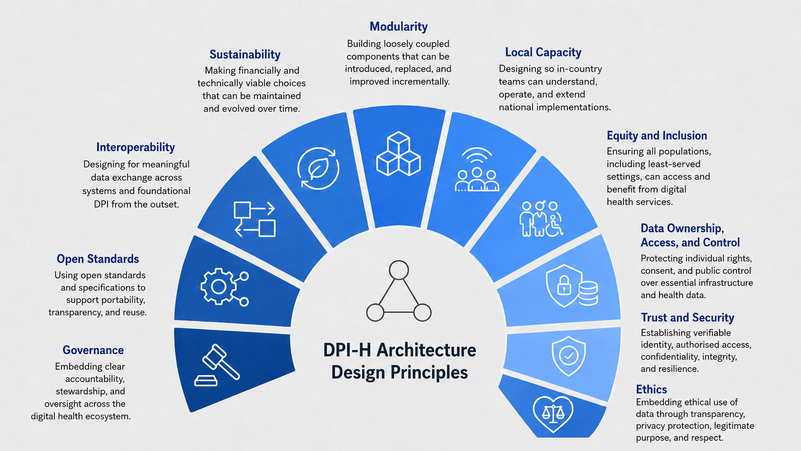
2.4 Methodology: Mapping Health Goals to DPI-H
✎ edit📣 feedback Figure 2.3: DPI-H Architecture Design Principles
✎ edit📣 feedback The seven priority health goals that underpin this reference architecture were systematically mapped to the digital capabilities and foundational components required to achieve them. This mapping is the methodological backbone of the architecture, and it provides the consolidated account of how goals translate into component choices.
✎ edit📣 feedback The architecture was designed from the perspective of what the health system needs to achieve, rather than from the perspective of what technologies exist. This matters because a goals-first approach differs from technology-led design. Technology-led design begins with the technologies or components available and works outward to what they enable; a goals-first approach begins from the health outcomes a country is accountable for and works toward the shared infrastructure those goals require. While capability-based, goals-driven approaches are established in enterprise architecture, their rigorous application to national-scale digital health infrastructure — deriving components from health-system goals rather than from a catalogue of technologies — is a meaningful departure from how such architectures have often been designed.
✎ edit📣 feedback The mapping was conducted using a TOGAF-based approach, working top-down from health goals through stakeholder value, business capabilities, application services, and application components, while simultaneously working bottom-up from known DPI-H components and existing digital health infrastructure. The convergence of these two directions produced a requirements picture grounded in both what countries need to achieve and what is implementable through shared infrastructure, keeping the architecture simultaneously aspirational and realistic.
✎ edit📣 feedback A consistent finding across all seven goals is that the same foundational components recur. The client registry, for example, is required across trusted personal health records, quality and continuity of care, public health and disease surveillance, and health financing; the facility registry is equally cross-cutting. This convergence is what distinguishes DPI-H components from programme-specific tools, and it confirms not just which components belong in shared infrastructure but why they warrant investment as such.
✎ edit📣 feedback Equally consistent is that these shared components do not, on their own, deliver the outcome. The outcome is delivered when point-of-service and functional applications — the systems clinicians, programme managers, and administrators actually use — draw on that shared infrastructure to do the work. The architecture defines and governs the shared components; it enables the applications that consume them rather than defining those applications. Each goal therefore depends on both: shared infrastructure for consistency and reuse, and the applications that turn it into delivered services.
2.4.1 How each health goal is articulated
✎ edit📣 feedback Each of the seven priority health goals is articulated using the same structure, so that the mapping is consistent and comparable across goals:
- the goal, stated as an outcome the health system is accountable for;
- what the health system should be able to do to achieve it, described in technology-neutral terms;
- the capabilities this requires, mapped to the DPI-H components that deliver them and any foundational-DPI dependencies; and
- how those components are reused across other goals, reinforcing the case for shared infrastructure.
✎ edit📣 feedback To show how this structure works in practice, the health financing goal — Advance Efficient and Equitable Health Financing — is set out below as a worked example. The same structure has been applied to each of the seven priority health goals; the goal-by-goal framings and their detailed mappings are provided in Appendix E.
2.4.2 Worked example: Advance Efficient and Equitable Health Financing
✎ edit📣 feedback Health financing determines whether funds reach providers in sufficient volume, are allocated equitably, are accounted for transparently, and protect people from hardship when they seek care. Digital infrastructure does not change what health financing has to achieve; it allows those functions to be carried out with greater accuracy, transparency, and efficiency.
✎ edit📣 feedback Whether a country finances health through taxation, insurance contributions, or a combination of these, the underlying capabilities are broadly consistent: planning, executing, and monitoring health budgets; raising and tracking revenue; determining who is covered and what they are entitled to; pooling and allocating funds; purchasing services and paying providers; defining the benefit package; and safeguarding funds and data against fraud and misuse. Mapped to the architecture, these capabilities draw very largely on shared infrastructure that already exists for other purposes:
✎ edit📣 feedback Table.
Table 2.4: Health financing capabilities and the DPI-H components that supports them
| Financing capability | Supported by |
|---|---|
| Identifying and confirming who is covered | Client Registry (with foundational digital identity where available) |
| Empanelling, accrediting, and credentialing providers | Facility Registry, Health Workforce Registry |
| Defining covered services, schemes, and entitlement rules | Benefits Package Registry |
| Pricing and reimbursing accurately | Product Registry, Terminology Services |
| Moving funds and reconciling payments | Foundational payments DPI (consumed by claims and scheme systems) |
| Exchanging financial and clinical data for payment | Shared exchange standards (interoperability) |
✎ edit📣 feedback The notable finding is how few new components health financing introduces. Almost everything it needs is met by shared infrastructure that other goals already require — the client registry to identify beneficiaries, the facility and workforce registries to empanel and credential providers, the product registry and terminology services to make reimbursement accurate. Only one genuinely new DPI-H component emerges from the financing analysis: the Benefits Package Registry, an authoritative reference for covered services, schemes, and entitlement rules that eligibility and purchasing functions across the system rely on.
✎ edit📣 feedback These shared components do not, by themselves, run a financing system. The work is carried out by the operational and functional applications that consume them — claims engines, scheme administration platforms, government financial management systems — which draw on the shared infrastructure to enrol people, adjudicate claims, and pay providers. These applications sit outside DPI-H: the architecture enables them rather than defining them, and the shared components reduce the duplication and fragmentation they would otherwise carry. This is the pattern the mapping is designed to surface, and it holds across all seven health goals.
✎ edit📣 feedback Countries are encouraged to use the mapping spreadsheets in Appendix E as a reference when assessing their own capability gaps, sequencing investments, and making the case for shared infrastructure to financing authorities and development partners. Section 3.3 illustrates the architecture in practice with a worked example, and the complete set of formal architecture models is published as navigable views for readers who wish to engage with the architecture at that level of detail.
The Reference Architecture for DPI-H
✎ edit📣 feedback The reference architecture translates the analytical work of the health goals mapping into a structured description that countries can use to design, assess, and sequence their digital health infrastructure investments. It is intended to help national teams and implementers plan, build, and evaluate health information systems that are interoperable, scalable, and aligned with established practice. By offering a common vocabulary and a shared structural model, it supports consistent description, comparison, and assessment of digital health architectures across different contexts and implementations. Its purpose is to connect health goals to the capabilities that serve them and the shared infrastructure that realises them, keeping investment decisions anchored to health outcomes rather than to the solutions that happen to be available.
✎ edit📣 feedback It is a reference model to be adapted, not a prescriptive architecture that countries must adhere to. It offers a common vocabulary and a set of elements from which each country composes an architecture suited to its own context — adopting, extending, or setting aside elements as local priorities and constraints require.
✎ edit📣 feedback This chapter is organised as follows:
- Section 3.1 describes the modelling approach and the shared language used to express the architecture.
- Section 3.2 explains how to read and navigate the reference architecture, which is maintained as a living model rather than a fixed picture.
- Section 3.3 illustrates the approach through worked examples for some health goals.
- Section 3.4 sets out the governance arrangements that surround the architecture.
- Section 3.5 introduces the DPI-H application components, whose full descriptions are provided in appendix C.
- Section 3.6 describes the interoperability architecture within DPI-H, through which these components work together as a coherent ecosystem
3.1 The architecture description approach
✎ edit📣 feedback An architecture describes a system in terms of its elements, the relationships among them, and the principles guiding its design and evolution. For architectures to be compared or assessed against one another, they need a shared way of describing these things: agreed types of elements, agreed types of relationship between them, and consistent rules for how they fit together. Where such a shared description is absent, familiar terms such as “component”, “service”, and “capability” can carry different meanings in different settings, which makes systematic comparison difficult and limits the value of cross-country analysis.
✎ edit📣 feedback Rather than define a new vocabulary, the reference architecture is expressed using ArchiMate®, an open modelling language for enterprise architecture maintained by The Open Group.2 ArchiMate® provides defined types of element — among them goals, capabilities, services, application components, and data objects — and defined types of relationship between them, organised across business, application, and technology layers — broadly aligning with the architecture domains of established enterprise-architecture practice1 — together with motivation elements that capture why an element matters and to whom. Drawing on an established language brings several practical benefits. Each element has a defined type with clear meaning, so that a capability, a component, and a service are not confused with one another. The architecture can be authored, checked, and published using widely available tools. Because the language is broadly adopted, descriptions expressed in it can be read and compared across organisations and countries without translation. And the typed relationships make it possible to trace from goals, through the capabilities that serve them, to the components that realise them — a property that matters for governance and for assessing whether the architecture is delivering on its goals.
✎ edit📣 feedback On that note, it is worth drawing out the following points, because they shape how the rest of the chapter should be read:
- First, the architecture is more than a set of concepts: it is the way those concepts are articulated. An element is defined in part by what it depends on and what depends on it, and much of the value of the description comes from these relationships being made explicit and kept consistent. Expressing the architecture in a formal language in this way turns it into a set of criteria against which a candidate architecture can, in time, be checked for completeness and consistency, and from which a country-specific architecture can be derived rather than assembled from scratch.
- Second, only a subset of the available element and relationship types is used here — those relevant to the scope of DPI-H. The remainder of the modelling language is not required for this purpose and is not used.
✎ edit📣 feedback The element types used in the reference architecture are summarised in table 3.1 below, each with a short health-sector example. Fuller definitions, and the complete catalogue of elements and relationships, are maintained with the models themselves — authored in Archi®17 and published as navigable views — as described in Section 3.2.
✎ edit📣 feedback Table.
Table 3.1: The element types used in the DPI-H reference architecture and what they represent
| ArchiMate element | Element type | What it represents | Example in the health sector |
|---|---|---|---|
| Stakeholder | An individual, role, or organisation with an interest in the architecture and its outcomes. | A patient/ health service user, a health worker, a public-health agency, a regulator. | |
| Goal | A statement of intent, direction or desired state. | Universal access to a trusted personal health record. | |
| Outcome | An achieved, and often measurable, result that signals progress towards a goal. | A defined share of citizens issued with a verifiable health record. | |
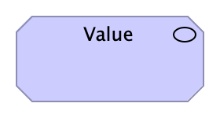 |
Value | The benefit or utility a stakeholder gains from using a service, product, or capability. | A clinician’s access to a complete clinical history at the point of care. |
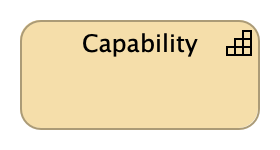 |
Capability | An ability the health system possesses or needs, expressed independently of how it is implemented. | Medication prescribing and dispensing; clinical decision support. |
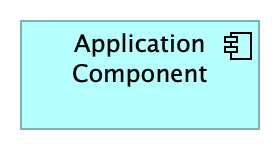 |
Application component | A deployable, modular piece of software that provides functionality and holds data, exposing both through services. | The Client Registry; a terminology service. |
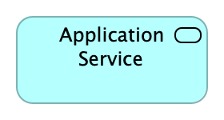 |
Application service | The functionality an application component exposes to its environment, as a unit of useful behaviour. | Resolving and matching a person’s identity across systems. |
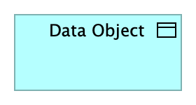 |
Data object | A defined unit of structured data used or produced by an application component. | A client identity record; a coded entry in the lifelong health record. |
| Product | A coherent offering that bundles services and data for use by stakeholders. | A digital health wallet. |
✎ edit📣 feedback The relationships among these elements are themselves of defined types. Such as:
- Realises — a capability is realised by the components and services that provide it;
- Composes — a component is composed of the functions and data objects it contains;
- Serves — a service serves the stakeholders and other elements that use it; and
- Accesses — a component accesses the data objects it reads or writes.
✎ edit📣 feedback Table.
Table 3.2: The relationship types used in the DPI-H reference architecture and what they represent
| ArchiMate relationship | Relationship type | What it represents |
|---|---|---|
| Realises | A capability is realised by the components and services that provide it | |
| Composes | A component is composed of the functions and data objects it contains | |
| Serves | A service serves the stakeholders and other elements that use it | |
| Accesses | A component accesses the data objects it reads or writes |
✎ edit📣 feedback It is this network of typed relationships — not the elements in isolation — that allows the architecture to be traced from health goals to the infrastructure that supports them.
✎ edit📣 feedback Figure.
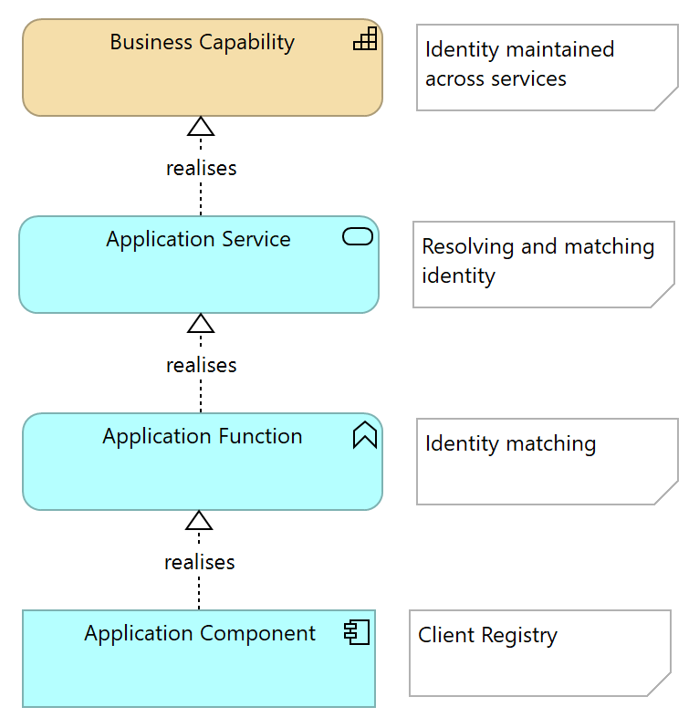
Each lower element realises the one above
✎ edit📣 feedback Figure 3.1: Realisation relationships among architectural elements
✎ edit📣 feedback The comprehensive list of standard relationships is below:
✎ edit📣 feedback Table.
Table 3.3: List of standard relationships used in the reference architecture
| Source | Relationship | Target | Note |
|---|---|---|---|
| Application Service | Realisation | Capability | A service realises (provides) a capability |
| Application Component | Realisation | Application Service | A component realises a service it offers |
| Application Function | Realisation | Application Service | A function realises the service it provides |
| Application Component | Realisation | Application Component | A concrete system realises an actor (role) |
| Outcome | Realisation | Goal | An outcome signals achievement of a goal |
| Application Service | Serving | Application Component | A required service serves the component that consumes it |
| Application Service | Serving | Stakeholder | A service serves the stakeholders that use it |
| Capability | Serving | Goal | A capability serves the goal it supports |
| Goal | Composition | Goal | A goal is composed of sub-goals |
| Product | Composition | Application Service | A product bundles the services it offers |
| Product | Composition | Data Object | A product bundles the data it carries |
| Application Component | Access | Data Object | A component reads/writes the data it holds |
| Application Function | Access | Data Object | A function reads/writes data objects |
| Application Component | Assignment | Application Interaction | An actor performs the interaction it participates in. |
| Application Component | Assignment | Application Function | A component performs its internal function |
| Application Interaction | Triggering | Application Function | A transaction triggers the function that handles it |
3.2 Reading and navigating the reference architecture
✎ edit📣 feedback The reference architecture is expressed through complementary, linked outputs, each suited to a different need. This guidance provides a stable narrative — the concepts, the structure, and the reasoning behind them. The detailed model is maintained separately as a set of navigable views that architects and implementers can explore directly, and that continue to evolve as the work matures and as countries contribute experience. Simplified, non-technical views summarise each health goal for readers who do not work with the modelling language. A linked online reference brings these together and carries the model's evolving detail over time. The narrative explains what the architecture means, what it is intended to achieve, and the value it offers; the model provides the current, navigable detail. Readers are encouraged to treat the narrative as an entry point and the model as the authoritative source for element-level detail.
✎ edit📣 feedback Different readers come to the architecture with different concerns, and established practice describes an architecture through views, each meaningful to a particular audience.18
- A reader concerned with health-system function — for example, which capabilities a given goal depends on — will look first to the goal and capability views.
- A reader concerned with realisation — how a capability is provided, by which components, and over which data — will look to the layered views that connect capabilities to services, components, and data.
- A reader concerned with motivation — who benefits, and why a goal matters — will look to the views that relate stakeholders, goals, outcomes, and value.19
✎ edit📣 feedback The same elements appear across these views: a registry referenced in one view is the same registry referenced in another, so that the architecture presents a single, consistent picture rather than a set of disconnected diagrams.
✎ edit📣 feedback The model is also intended to be a practical starting point. Countries can adapt and adopt the reference architecture to their own context rather than apply it unchanged; it offers a common structure and vocabulary, not a prescription. To support this, the model is made available in a form that national teams can take as a baseline and tailor — adjusting, extending, or setting aside elements to reflect local priorities and constraints — so that a country begins from an established structure rather than from a blank page.
✎ edit📣 feedback Adopting the architecture also depends on factors that sit beyond its structural description, among them the legal and institutional governance, workforce capabilities, organisational practices, and change-management arrangements needed to put new systems into use. These considerations are important to successful implementation and are addressed separately in the guidance rather than within the architecture itself.
✎ edit📣 feedback A note on reading the views: an element shown in a view represents a capability or a type of component and the role it plays, not an instruction to procure a particular system. A country may realise several elements within a single platform (one deployed software system), or one element across several systems. The architecture describes what needs to be present and how the parts relate and leaves the choice of implementation — including whether a function is held centrally, federated across systems, or distributed — to the country.
3.3 The reference architecture in practice
✎ edit📣 feedback Figure.
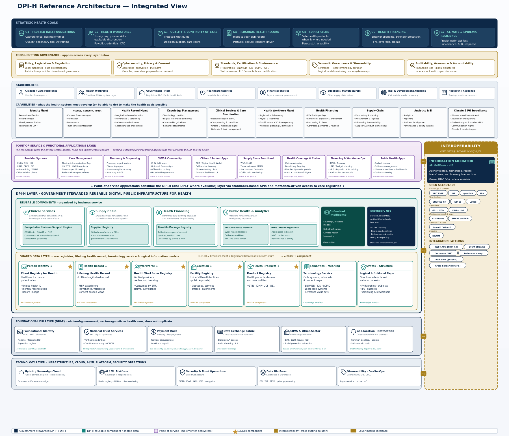
✎ edit📣 feedback Figure 3.2: The DPI-H reference architecture — a layered view showing the health goals and the cross-cutting governance that frames them; the capabilities that serve the goals; the point-of-care and other functional applications through which services are delivered; the digital public infrastructure for health, comprising the core registries, the shared clinical foundation, the semantic and structural components, and the shared reusable services; the cross-cutting enablers; the foundational digital public infrastructure on which health builds; and the underlying technology.
✎ edit📣 feedback A single layered view brings the whole picture together. Reading from the top, the health goals and the governance that frames them sit above the capabilities they depend on; below these are the functional applications through which care is delivered, and beneath them the digital public infrastructure for health — the shared components on which many goals draw. Cross-cutting enablers apply across the whole, and the foundational digital public infrastructure and technology layers provide what health builds upon. This comprehensive view is necessarily dense; the simplified per-goal views, and the worked example that follows, are the easier way in for most readers.
✎ edit📣 feedback The clearest way to understand the reference architecture is to follow a single health goal through it. This section provides examples for some health goals; the same pattern applies to the others, each of which can be navigated in the same way in the model.
✎ edit📣 feedback For a given health goal, the architecture begins with the goal itself and the sub-goals that compose it. Each sub-goal is associated with the outcomes that indicate progress towards it and with the capabilities the health system needs in order to achieve it. Those capabilities are then connected to the elements that realise them — the services exposed by application components, and the shared data those components hold and exchange. Read from top to bottom, a single view connects a health objective to the specific infrastructure that supports it; read from bottom to top, it shows what each component contributes to the architecture.
✎ edit📣 feedback The goal of establishing a trusted personal health record serves as an illustration. It resolves into sub-goals such as establishing a secure, universally accessible, verifiable health record for every individual and enabling patient control and consent-based sharing of health information. These depend on capabilities — for example, identity and authentication, longitudinal health record management, and consent management — and those capabilities are realised by foundational components such as the Client Registry and the lifelong health record, supported by shared terminology and exchange services and surfaced to the person through a digital health wallet. A simplified view of the goal shows these relationships at a glance and suits readers who need the overall picture; a layered view of a single sub-goal shows the same relationships in full detail and suits those designing the supporting systems.
✎ edit📣 feedback Figure.
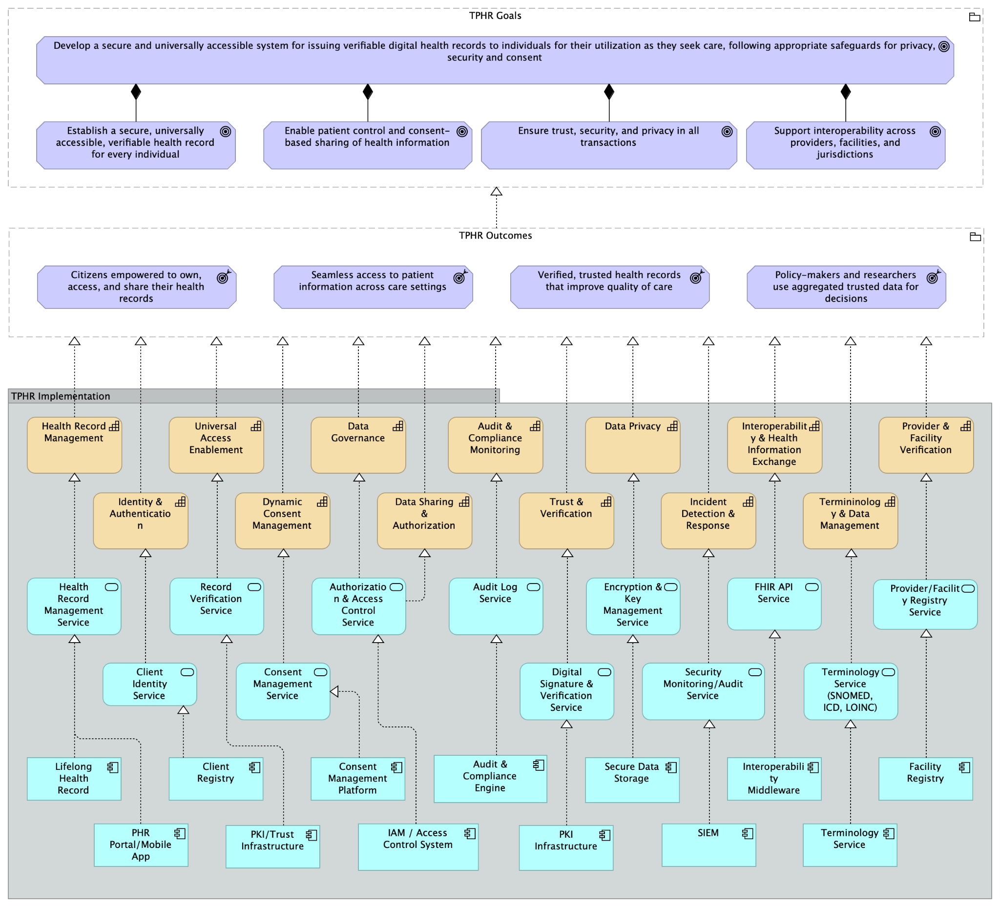
✎ edit📣 feedback Figure.
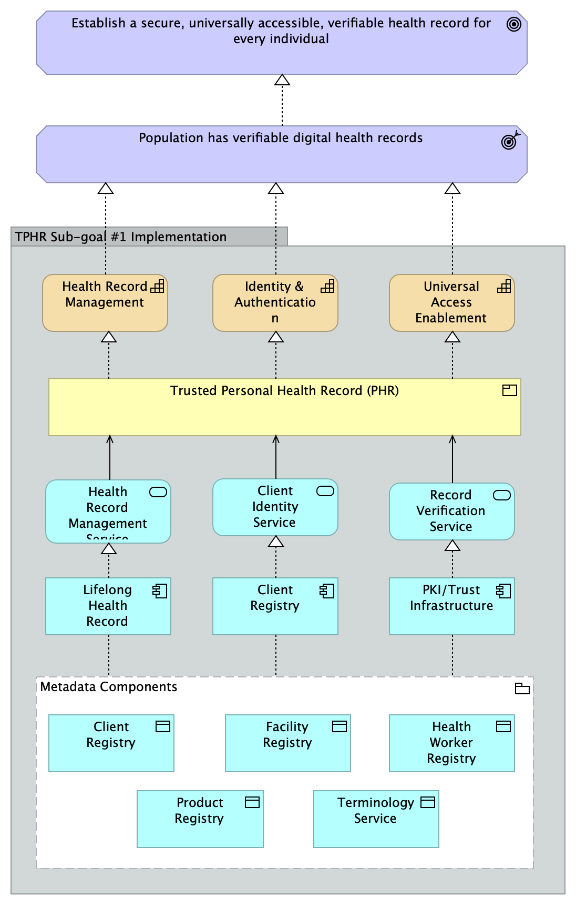
*Figure 3.3: Simplified view of a single health goal *(Establish Trusted Personal Health Records) — its sub-goals, the capabilities that enable them, the DPI-H components that support them, and the cross-cutting enablers
✎ edit📣 feedback Figure 3.4: Layered view for one sub-goal relating to Establish Trusted Personal Health Records — from sub-goal and outcome, through capabilities and services, to metadata components
✎ edit📣 feedback The goal of ensuring quality and continuity of care serves as another illustration. It resolves into sub-goals such as comprehensive needs assessment — the systematic evaluation of a person's health status, risks, and care requirements — and shared care planning. These depend on capabilities — for example, patient history integration, care protocol management, and decision support — and those capabilities are realised by foundational components such as the Client Registry and the lifelong health record, supported by shared terminology and exchange services and by computable decision support, and surfaced to health workers through the point-of-care clinical applications they already use. A simplified view of the goal shows these relationships at a glance and suits readers who need the overall picture; a layered view of a single sub-goal — here, comprehensive needs assessment — shows the same relationships in full detail and suits those designing the supporting systems.
✎ edit📣 feedback Figure.
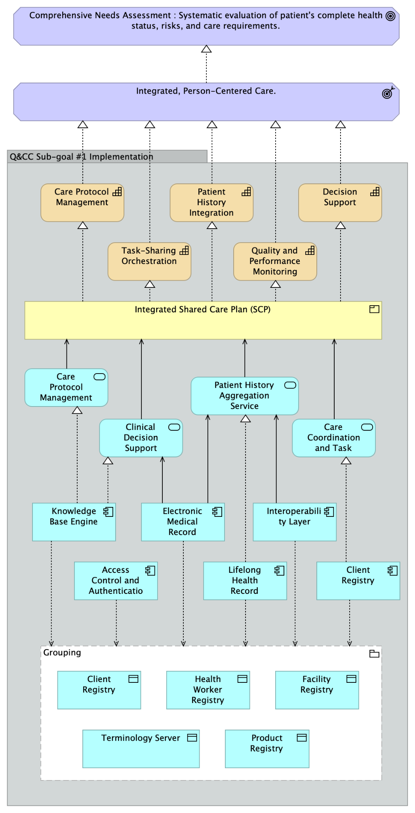
✎ edit📣 feedback Figure 3.5: Layered view for one sub-goal relating to ensuring Quality and Continuity of Care — from sub-goal and outcome, through capabilities and services, to components and data
✎ edit📣 feedback The following features should be highlighted as they carry practical weight for countries. First, a small number of foundational components appear again and again across goals — among them the registries for clients, facilities, health workforce, and products. Because these components are shared across many goals, investment in them tends to yield benefit broadly rather than for a single programme, which is a reason to prioritise establishing them early. Second, the architecture distinguishes the foundational digital public infrastructure that is not specific to health from the infrastructure that is health-specific, and keeps both separate from the functional applications that sit on top of them.
✎ edit📣 feedback The reference architecture deliberately concentrates on the digital public infrastructure for health — the shared, reusable components on which many programmes depend. It does not present every application component a country needs for the health sector. Achieving a health goal generally also calls for functional applications and point-of-care clinical applications — for example, the systems clinicians use to record and act on care — which draw on the shared infrastructure but are not themselves part of it. The architecture also relies on a set of cross-cutting enablers that apply across all goals rather than belonging to any single component: interoperability, treated as a capability that spans the architecture, together with the governance, legal, and policy arrangements that allow data to be shared and trusted. These enablers are shown alongside the components in each view, so that their role is visible without being mistaken for infrastructure in its own right.
✎ edit📣 feedback In terms of consistency, the worked examples and the views in the model are kept aligned with the underlying mapping of goals, capabilities, and components, and with one another. Where a country’s own architecture diverges from the reference — as it may, in adapting to context — the value of the shared structure is that the divergence is visible and can be reasoned about.
3.4 Governance of Digital Health Architectures and DPI-H
3.4.1 Purpose and framing
✎ edit📣 feedback Governance is the set of arrangements through which decision authority is distributed, exercised and accounted for across all those who depend upon, contribute to, or are served by the shared infrastructure. It is not principally an administrative function but rather the means by which shared infrastructure remains trustworthy, financially sustainable and equitable over time, and through which the architecture continues to deliver the semantic consistency and reliability the rest of this guidance depends upon.
✎ edit📣 feedback Because DPI-H is shared infrastructure — relied upon and contributed to by many actors, and serving the health system as a whole rather than any single programme or institution — governance attends both to the strategic direction of the shared infrastructure and to its day-to-day operational integrity. These are distinct responsibilities calling for distinct structures, though they operate in close coordination. A consistent theme across the development of this architecture is that this coordination, and the institutional arrangements behind it, come before technology rather than after it: countries that establish authoritative registries, harmonise their core data, and agree who decides what tend to progress, while those that begin from application components without these arrangements tend to fragment.
✎ edit📣 feedback This section describes governance principles and structural characteristics applicable to national and regional DPI-H deployments. The specific structures — the composition of bodies, decision procedures and accountability mechanisms — are determined by each country or regional implementation in accordance with its legal, institutional and political context. Where examples are provided, they are illustrative rather than prescriptive. The same separation holds for the shared data assets the architecture defines: the registries are described elsewhere in this guidance as authoritative, canonical constructs governed by a single accountable source, while the question of whether they are realised centrally, in a federated manner, or as a hybrid remains a national implementation choice. Governance, in this sense, is a policy matter; implementation pattern is not.
3.4.2 Governance principles
✎ edit📣 feedback The following principles should guide the governance design of any national DPI-H deployment:
- Subsidiarity. Decision authority should sit at the lowest level at which it can be exercised effectively. Operational decisions should not require strategic deliberation, and strategic decisions should not be delegated to operational bodies.
- Separation of mandate and execution. Strategic governance sets direction, defines scope boundaries and safeguards the long-term viability of the infrastructure; operational governance executes within those boundaries and has defined pathways to escalate when matters fall outside them.
- Inclusive representation. Governance structures should actively represent the communities most dependent on the infrastructure and least able to advocate for themselves through conventional political or market processes — including rural populations, women, displaced persons, and those served by under-resourced health systems. Representation of this kind should be more than advisory; governance design should give the interests of these communities genuine weight in strategic decisions, not nominal inclusion only. Translating nominal representation into real influence is a persistent challenge, and the mechanisms for pursuing it are set out in 3.4.3.
- Financial sustainability as a governance mandate. Digital health experience shows that technically promising systems often fail to sustain or scale when they remain dependent on short-term project funding, underestimated operating costs, weak institutional ownership, or insufficient integration into routine health system operations.20,21,22 Governance should therefore treat the financial continuity of shared infrastructure not as a downstream implementation concern but as a core strategic mandate, with defined accountability, monitoring and response mechanisms.
- Prevention of resource overuse. Shared digital infrastructure should be governed so that no single programme, institution, vendor, or user group can place disproportionate demand on shared capacity, support resources, or operating budgets in ways that reduce service quality for others. Governance should establish usage policies, contribution expectations, monitoring, and enforcement mechanisms proportionate to the scale and diversity of its users.23,24
- Transparency and accountability. Governance decisions — including resource allocation, prioritisation and enforcement — should be documented, disclosed to the appropriate stakeholders, and open to review. Accountability without transparency is not accountability.
- Adaptability and learning. Governance structures should evolve as the infrastructure matures, as the ecosystem of actors changes, and as new risks and opportunities emerge. Static governance in a dynamic environment produces fragility. The purpose of this adaptability is to remain responsive to needs on the ground and to manage change well, rather than to control or prevent it. Since many risks and constraints become apparent only once a system is in use, governance should include ongoing evaluation of systems in operation, surfacing unintended consequences and emerging governance challenges so they can be addressed.25
3.4.3 Strategic governance
✎ edit📣 feedback Strategic governance provides the authoritative direction for the shared infrastructure. It defines what the infrastructure exists to achieve, who it serves, what is within and outside its scope, and how resources are secured and allocated to sustain it. It does not manage operations; it creates the mandate within which operations function. Its responsibilities include:
- establishing and maintaining the infrastructure's mission, scope and core values;
- safeguarding financial and institutional sustainability across funding cycles;
- approving major architectural or strategic changes that cross organisational boundaries or affect multiple stakeholders;
- ensuring that underserved and underrepresented communities have genuine voice in its direction;
- monitoring for systemic risks such as resource overuse, inequitable access and dependency concentration; and
- defining the escalation triggers and response protocols for issues that exceed the operational mandate.
✎ edit📣 feedback Safeguarding the shared resource
✎ edit📣 feedback Three of the principles in 3.4.2 are substantive rather than procedural: they concern what the shared infrastructure should remain — adequately funded, equitable in whom it serves, and protected from overuse. These are the ways shared public infrastructure most characteristically fails, and stating them as principles does not secure them; a principle does not fund the infrastructure, give underserved groups a place in governance, or cap anyone's usage.
✎ edit📣 feedback Securing financial continuity. Strategic bodies should define a multi-stakeholder funding model that identifies who benefits from the infrastructure and in what ways, and what contribution is appropriate for each category of beneficiary; establish reserve and contingency mechanisms that maintain continuity through funding gaps and transitions; monitor utilisation against capacity and hold the authority to adjust access, contribution requirements or fee structures to preserve the integrity of the infrastructure; and engage proactively with national health financing mechanisms, development partners and multilateral institutions so that DPI-H is positioned within sustainable funding frameworks rather than project-based cycles.
✎ edit📣 feedback Operationalising equity in governance bodies. Design considerations include formal representation of civil society and community health advocates with a demonstrated constituency in underserved populations; geographic representation across subnational regions, particularly where health system capacity varies; gender and linguistic inclusion in the composition of governance bodies; mechanisms for soliciting and incorporating feedback from communities that lack organised representation; and explicit criteria by which equity impacts are assessed when major decisions are made.
✎ edit📣 feedback Managing demand on shared capacity. Strategic governance should establish usage tiers or policies calibrated to an actor's capacity and benefit; monitoring and reporting that makes utilisation patterns visible to governance bodies on a regular basis; defined response protocols ranging from engagement and negotiation to access restrictions; contribution requirements — financial, technical or in-kind — scaled to the benefit derived; and periodic review of whether the distribution of costs and benefits remains equitable and sustainable.
3.4.4 Operational governance
✎ edit📣 feedback Operational governance manages the day-to-day integrity and performance of the shared infrastructure within the mandate established by strategic governance. It is accountable for ensuring that the infrastructure operates reliably, that data quality is maintained, that changes are managed safely, and that technical and operational decisions are made transparently and consistently. Its responsibilities include:
- Master data management — maintaining the quality, currency and authority of the core registries (client, health facility, health workforce, product, terminology) through defined stewardship roles and processes. Responsibility for this data is frequently distributed rather than held by a single body: different authorities are the custodians of different parts of the data — a medicines regulatory authority for product master data, for example — and a clear, documented assignment of who owns and stewards which data helps avoid both governance paralysis and the fragmentation that arises when several bodies maintain their own versions of the same data.
- Release management — governing the introduction of changes to the infrastructure (new versions, configurations, integrations and extensions) through structured review, testing and deployment.
- Change management — coordinating the implementation of changes across stakeholder communities with appropriate communication, documentation and rollback provisions.
- Service levels and incident management — defining and monitoring availability, response and recovery standards, and managing incidents and their resolution.
- Interoperability and semantic governance — maintaining and enforcing conformance with the infrastructure's technical and semantic standards, including the registration and lifecycle management of terminologies, value sets and information models through the Semantic Governance Infrastructure described in 3.4.5.
✎ edit📣 feedback Operational governance is also where the evaluation of systems in use is exercised in practice: monitoring is not only of availability but of how the infrastructure is actually used and where unintended consequences emerge, feeding what is learned back into both operational adjustment and strategic review.
✎ edit📣 feedback Escalation pathways. Operational governance works within a defined mandate. When issues arise that cross scope boundaries, carry equity or sustainability implications, or exceed operational authority, structured escalation to strategic governance is essential. Escalation triggers should be defined explicitly — for example, requested changes that significantly expand or contract the infrastructure's scope or user base; utilisation that approaches the thresholds for resource-overuse response; conflicts between stakeholder needs that cannot be resolved within operational authority; security incidents or data breaches with potential systemic consequences; and funding or resource constraints that threaten continuity. Escalation should be documented, time-bound, and resolved with a clear decision communicated back to the operational body, so that escalated issues are not left unresolved.
3.4.5 Semantic Governance Infrastructure
✎ edit📣 feedback The metadata registries that form the foundation of DPI-H — the client, health facility, health workforce and product registries, the Terminology Service, and the Logical Information Model Repository — are only as reliable as the governance that maintains them. A Terminology Service can be deployed and operational, and a Logical Information Model Repository can hold a rich catalogue of national data structures, yet without sustained, structured governance over how these assets are created, versioned, reviewed, published and distributed, the infrastructure they provide becomes progressively unreliable. In real implementations, countries have encountered concepts deprecated without notice, version conflicts between systems, and national implementation guides drifting from the models they were derived from. The reference architecture introduces the Semantic Governance Infrastructure (SGI) to address these failures: it is the cross-cutting capability that keeps the metadata registry components accurate, consistent and trustworthy, so that the semantic consistency they are intended to provide does not degrade as the health digital ecosystem grows.
✎ edit📣 feedback A governance capability, not a technical component
✎ edit📣 feedback Before describing how it works, it is important to be clear about what SGI is and is not. It is not a new software product or a centralised technical component, and it is not an information-technology concern to be delegated to a systems team. It is a cross-cutting capability — predominantly a matter of institutions, roles and processes — through which a health system governs the meaning of its data. The stakeholders who submit change requests, review and approve content, maintain national extensions of global standards, and ensure that local clinical reality is reflected in nationally governed models are as essential to SGI as any software. Experience in comparable settings shows that governance often runs on tools that were not purpose-built for it, and that the quality of the process depends far more on the clarity of roles, decision rights and workflows than on the sophistication of the technology. Countries should therefore invest first in the committees, roles, decision rights and community processes of governance, and only afterwards in tooling.
✎ edit📣 feedback SGI is distinct from runtime services
✎ edit📣 feedback This governance capability is distinct from the runtime services that operate alongside it. A Terminology Service deployed to support clinical data capture performs a runtime function — vocabulary lookups, validation of coded entries, and distribution of value sets to consuming systems. SGI operates at a different level: it determines what content those services hold, how it is reviewed and approved, when it is published, how change is managed, and how consuming systems are notified. The two are complementary and mutually necessary: runtime services without governance produce content that cannot be trusted, while governance without runtime services produces decisions that cannot be operationalised. This integrated, cross-registry governance layer is a new aspect that DPI-H introduces. Existing health information architecture specifications, including OpenHIE, specify the runtime terminology service but not the cross-registry semantic-governance described here — the coordinated review workflows, multi-stakeholder curation, release management and harmonisation flows between global, national and local content that span the Terminology Service, the Logical Information Model Repository and national data models together. SGI is therefore presented as cross-cutting rather than a component of any single registry, because its scope spans all of the metadata registry components and because its processes need to be coherent across them rather than managed independently for each.
✎ edit📣 feedback How SGI relates to runtime and content
✎ edit📣 feedback It is helpful to see this capability in relation to the services around it. Three layers can be distinguished.
- The governance layer comprises the policies, roles, decision rights and workflows through which registry content is managed across its lifecycle — how requests for new terms or model changes are submitted, how they are reviewed by the relevant stakeholders, how approved changes are packaged and published, and how the ongoing quality and currency of content is assessed.
✎ edit📣 feedback 2. The runtime layer comprises the operational terminology servers, repository deployments and national data model infrastructure through which governed content is made available to consuming systems.
✎ edit📣 feedback 3. The content and application layer comprises the clinical systems, analytics platforms and applications that consume governed content and, in doing so, generate the feedback that informs the next governance cycle.
✎ edit📣 feedback Figure.
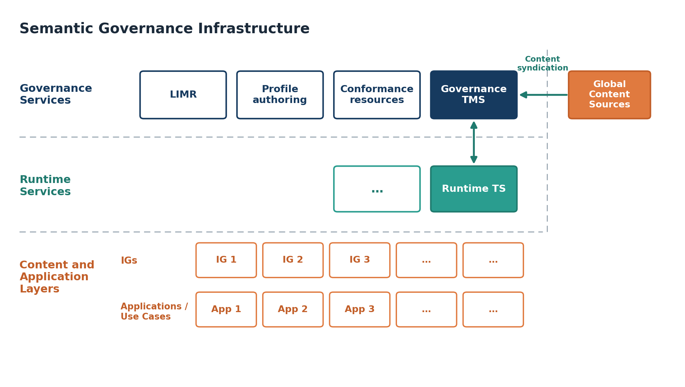
✎ edit📣 feedback Figure 3.4.1*:* Semantic Governance Infrastructure: the governance, runtime, and content-and-application layers, and the flow of content between them
✎ edit📣 feedback What SGI does: five capability categories
✎ edit📣 feedback Where the three layers describe where governance sits, the next question is what it does. Within the governance layer, five categories of capability recur across the metadata registry components. They are described here at the level of capability clusters; a fuller breakdown of the individual capabilities within each is provided in Appendix F, and the detailed specification of any one of them is a matter for dedicated standards efforts and national programmes rather than for this architecture.
✎ edit📣 feedback Table.
| SGI Capability category | What it covers | Why it matters |
|---|---|---|
| Intake | Receiving and registering change requests from stakeholders, ingesting new releases from upstream standards bodies, and handling deprecation notices, with triage and a transparent, auditable queue | Keeps national standards current with global updates and local needs without ad-hoc, error-prone processes |
| Authoring and publication | Coordinating the review, approval, versioning and controlled release of new and changed content according to defined business rules, with audit trail and provenance | Ensures that only vetted, traceable changes reach the health system, reducing costly downstream errors |
| Monitoring | Tracking adherence to governance rules and content quality, and, as a separate concern, tracking field-level use and adoption of published standards | Reveals whether published standards are conformant and whether they are actually being used, surfacing drift before it causes harm |
| Distribution | Providing reliable, access-controlled delivery of content across a range of consumption modalities within a defined architecture | Makes national standards practically retrievable by all implementers — a standard no one can retrieve is a standard no one follows |
| Consumption | Enabling downstream stakeholders to discover, retrieve and integrate published content, and enabling maintainers to consume content from standards bodies and capture feedback from the field | Lowers the barrier for systems to align with national standards, accelerating interoperability across the ecosystem |
✎ edit📣 feedback Two points qualify this model. First, monitoring should be understood as two related but separate activities: monitoring of the publication process and content quality on the one hand, and monitoring of use and adoption in the field on the other; the two answer different questions and both are needed. Second, the definition and maintenance of policy is not confined to any one category — it cuts across all of them, and is the connective tissue that makes the capabilities function as a coherent whole rather than as isolated workflows.
✎ edit📣 feedback Approaches to implementation
✎ edit📣 feedback Countries need not achieve full semantic governance maturity before deploying metadata registries, and the appropriate starting point varies considerably by context. In highly regulated settings — where data structures may be encoded in legislation — a comprehensive governance framework may need to be established before deployment proceeds. In many lower-resource settings, deployment can and should precede full governance maturity, with governance capabilities built incrementally as the ecosystem develops. A maturity-spectrum approach is therefore appropriate, progressing from minimal reference-list management, through structured versioning and change workflows, to fully governed, multi-stakeholder terminology and information-model ecosystems. What matters from the outset is that early deployment decisions do not close off the path to stronger governance later, and that a clear direction of travel is established even where immediate capacity is limited. Established terminology-governance maturity models can be applied, with some abstraction, across the metadata registry components.
✎ edit📣 feedback Figure.
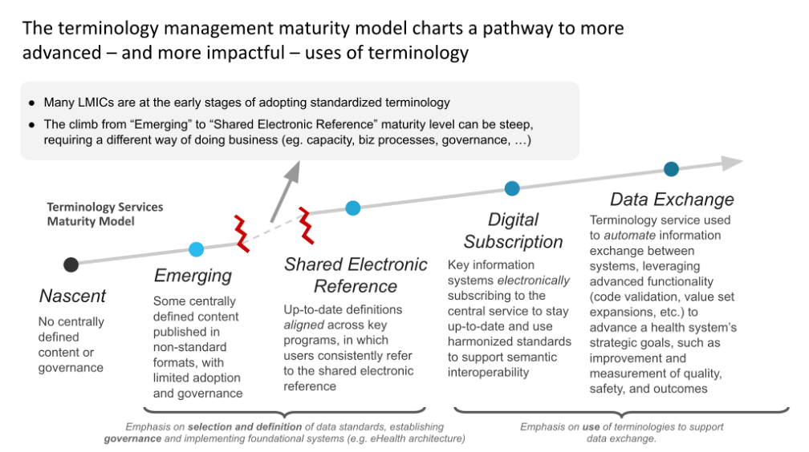
✎ edit📣 feedback *Figure 3.4.*2 A terminology maturity spectrum, from minimal reference-list management to a fully governed, multi-stakeholder ecosystem. Adapted from the OpenHIE Terminology Service maturity model26
✎ edit📣 feedback Global, national and local content
✎ edit📣 feedback SGI also mediates the relationship between global, national and local content. A maximalist global model imposed on countries without local adaptation mechanisms will not be adopted; equally, uncoordinated national models that cannot speak to one another reproduce the fragmentation the architecture seeks to resolve. The governance framework should therefore support both top-down harmonisation — keeping national models coherent with global standards — and upward sensing — capturing local experience, term requests and adaptation needs so they can inform models at higher levels. It should also help countries manage their interfaces with the standards development organisations on whose content they depend, including the lag that arises when an external standard updates and national implementations have to respond. Grounding national arrangements in established governance frameworks gives countries a tested starting point. Several exist to draw on, such as HL7's Unified Terminology Governance (UTG) process for consensus-based authoring and release of terminology artefacts, and SNOMED International's National Release Centre model, through which member countries govern their national editions of clinical terminology; the OpenHIE Architecture Specification is also relevant, though it specifies the runtime terminology service rather than the cross-registry governance. Each of these governs a single standard or service; what SGI adds is the coordination of such arrangements across registries at national level.
✎ edit📣 feedback Figure.
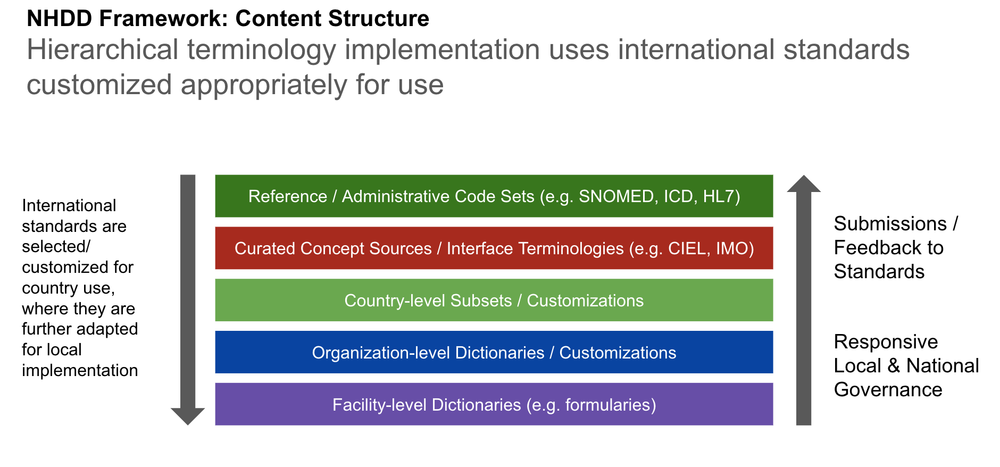
✎ edit📣 feedback Figure 3.4.3 — Hierarchical terminology content, from global reference standards to facility-level dictionaries, with top-down customisation and upward feedback. Adapted from the OpenHIE National Health Data Dictionary (NHDD) framework.27
✎ edit📣 feedback Countries implementing DPI-H should treat SGI not as an optional enhancement to their metadata registries but as foundational for those registries to deliver the semantic consistency that DPI-H depends upon.
3.4.6 Regional governance considerations
✎ edit📣 feedback Where DPI-H supports multi-country or regional health coordination, governance design requires considerations beyond the national model.
✎ edit📣 feedback Jurisdictional complexity. Regional deployments span multiple national legal and regulatory frameworks. Governance structures should define which body holds decision authority for shared as opposed to country-specific components; how national sovereignty over health data and digital systems is preserved within a regionally shared architecture; what dispute-resolution mechanisms apply when national interests conflict; and how differing regulatory obligations are reconciled in the design and operation of the infrastructure.
✎ edit📣 feedback Regional strategic governance. Regional deployments should establish a regional strategic governance body with explicit authority over shared components. Such a body would include representation from each participating country at the appropriate ministerial or institutional level; hold defined authority to make binding decisions on shared infrastructure within the scope of agreed regional commitments; operate with its own financial sustainability mandate for the shared regional layer, distinct from national obligations; and maintain explicit coordination with national strategic governance bodies.
✎ edit📣 feedback Layered governance. Regional DPI-H governance is best understood as a layered structure: regional governance addresses what is shared across borders, national governance addresses what is country-specific, and defined handoff points determine which body has authority over which decision. This structure should be documented explicitly, including a catalogue of shared versus country-specific components, the governance body with authority over each, and protocols for decisions that affect components at more than one layer.
3.4.7 Governance maturity considerations
✎ edit📣 feedback Governance cannot be designed as though all implementing countries begin from the same point. Countries vary significantly in institutional capacity, legal frameworks for digital health, existing governance structures and financial resources, and the guidance needs to be applicable across that range.
✎ edit📣 feedback As an illustration, a country in an early stage of DPI-H development may lack the institutional infrastructure to stand up fully separated strategic and operational governance bodies at once. In such a setting it may be appropriate for a single ministerial steering committee to hold both strategic and senior operational authority in the near term, with a defined roadmap to separate these functions as capacity develops. The principles in this section — particularly the separation of mandate from execution, and the equity-representation and financial-sustainability mandates — remain applicable regardless of institutional maturity; what varies is the structural form through which they are realised.
✎ edit📣 feedback Countries and regional bodies should use governance maturity assessment as part of DPI-H readiness evaluation, identifying which governance capacities already exist, which need to be built, and in what sequence governance functions should be formalised as the infrastructure develops.
3.5 DPI-H Application Components
✎ edit📣 feedback This section introduces the application components that make up the digital public infrastructure for health: the shared, reusable digital resources that a country establishes once and that many programmes and points of care draw on. It describes what distinguishes such a component from the functional applications that sit on top of it, the consistent structure used to describe each one, and how the components are organised across the layers of the reference architecture. Full descriptions of every component — with their attributes, requirements, and governance considerations — are provided in Appendix C.
3.5.1 What Distinguishes a DPI-H Application Component
✎ edit📣 feedback Not every digital system in a national health ecosystem qualifies as DPI-H. An application component earns that designation by meeting a specific set of criteria that distinguish shared public infrastructure from programme-specific tools or functional applications. The design of a DPI-H component satisfies the core DPI-H principles, and the following defining characteristics further distinguish them from other digital health applications and services:
- Reusability across multiple health programmes and use cases without modification to its core design.
- Ability to expose stable, standards-based interfaces that allow any conformant system to connect to it without requiring bespoke integration.
- Ability to support foundational health system functions rather than programme-specific logic and serve the ecosystem as a whole rather than a single programme's needs.
- They should be publicly governed, ensuring that no single programme, donor, or vendor controls access to or evolution of the capability it provides.
- They should be governed across their lifecycle — backed by clear governance arrangements for its deployment, operation, and evolution, distinct from the question of who controls it.
- They should be non-transactional — not point-of-care workflow engines or clinical transaction processors, but enabling infrastructure that orchestrates national-level data and makes it available to the systems that do perform those functions.
- They should be functionally stable. In essence, their core function and interface specifications should be designed to remain consistent over time, providing a reliable foundation that operational applications and clinical systems can depend upon without being disrupted by changes in those systems.
- They should be technology-neutral. Meaning that they should be specified at the level of function and capability rather than implementation, so that countries can choose the technology through which a component is delivered without being constrained to a particular product or vendor.
✎ edit📣 feedback These characteristics have practical consequences for what countries invest in and govern collectively. An application component that meets them justifies shared investment and shared governance. One that does not — however useful — belongs at the functional application layer, drawing on shared infrastructure rather than constituting it.
Box 3.1: Criteria for DPI-H Application Components
DPI-H should serve as a shared layer upon which multiple functional applications, point-of-service and programme-specific systems depend. DPI-H application components should:
Be reusable across multiple health programmes and use cases without modification to its core design
Expose stable, standards-based interfaces that allow any conformant system to connect without bespoke integration
Support foundational health system functions rather than programme-specific logic
Be publicly governed — no single programme, donor, or vendor controls access or evolution
Be governed across its lifecycle — have clear governance frameworks that guide deployment, operation, and evolution
Be non-transactional — not a point-of-care workflow engine, but enabling infrastructure that orchestrates national-level data
Be functionally stable — core function and interface specifications remain consistent, providing a reliable foundation for operational systems
Be technology-neutral — specified at the level of function and capability, not implementation
✎ edit📣 feedback This boundary places several familiar systems outside the DPI-H:
- Point-of-care clinical applications — the systems clinicians use to record and act on care — and other functional applications such as supply-chain operations depend on the infrastructure but are not part of it.
- Interoperability is treated as a cross-cutting capability rather than a component, and is addressed in Section 3.6.
- Foundational, cross-sectoral infrastructure — such as civil registration and vital statistics systems, or a national geospatial (common geo) registry — belongs to the foundational digital public infrastructure on which health builds; the health components state how they integrate with it, such as the Health Facility Registry’s integration with a national geospatial registry, rather than reproducing it.
✎ edit📣 feedback A defining feature of the core health registries is that they are described as authoritative, canonical sources, governed at national level. The guidance describes them at two levels. At the policy and governance level, a registry is the single authoritative source for its domain. At the implementation level, a country may hold it centrally, federate it across systems, or combine the two; the architecture does not prescribe a centralised implementation. The same distinction separates a metadata component from an operational system: the Benefits Package Registry, for example, is the authoritative record of the benefits and schemes a health system offers — a DPI-H component — while the claims and payment systems that act on that record are functional applications outside the DPI-H.
✎ edit📣 feedback Where established terms are in wide use, the guidance retains them and notes the alternatives, so that countries can map their existing systems. The Client Registry, for instance, is known in some settings as a master patient index; and the term registry is preferred over catalogue for the product component, because it reflects governance and lifecycle management rather than a simple list.
3.5.2 How each component is described
✎ edit📣 feedback Each component in Appendix C follows a consistent structure, so that the descriptions can be compared and used in planning, procurement, and conformance. For each component, the appendix sets out:
- its placement within the architecture;
- a definition and description;
- why it matters for health outcomes;
- its core attributes and capabilities;
- its connections to other DPI-H components and to foundational DPIs;
- its functional requirements, referencing established specifications where they exist;
- the status of each requirement, expressed on a tiered model (SHALL, SHOULD, MAY);
- its data requirements, where applicable; and
- its governance considerations.
3.5.3 How the components are organised
✎ edit📣 feedback The components are organised across two layers of the reference architecture, shown together in this integrated view (Figure 3.5).
✎ edit📣 feedback Figure.
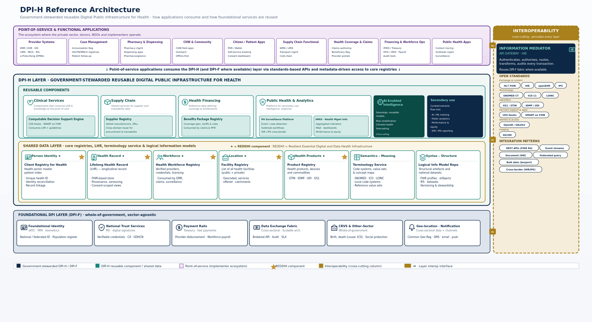
✎ edit📣 feedback Figure 3.5: The DPI-H reference architecture — a layered view showing the point-of-care and other functional applications through which services are delivered; the digital public infrastructure for health, comprising the core registries, the shared clinical foundation, the semantic and structural components, and the shared reusable services; the cross-cutting enablers; the foundational digital public infrastructure on which health builds; and the underlying technology.
3.5.3.1 The foundational shared data layer
✎ edit📣 feedback The foundational shared data layer holds the components on which the rest of the ecosystem depends. At its core are the metadata registries and the lifelong health record that make up REDDHI — Resilient Essential Data and Digital Health Infrastructure — the essential, resilient foundation that a country would do well to prioritise for sustainable digital health transformation:
- Client Registry for Health — the authoritative index of the people a health system serves, supporting a unique health identity, identity reconciliation, and record linkage across systems.
- Health Facility Registry — the authoritative list of health facilities and service-delivery points, integrating with a national geospatial registry where one exists.
- Health Workforce Registry — the authoritative record of health workers, their roles, credentials, and facility assignments.
- Product Registry — the authoritative source for health products and their attributes, supporting supply-chain, regulatory, and clinical use.
- Lifelong Health Record — the governed, person-centred capability that maintains a longitudinal record of an individual's health and healthcare encounters across providers, programmes, and time. It is defined to allow centralised, federated, or hybrid implementation, rather than implying a single central store. person-centred that
✎ edit📣 feedback The Client Registry, Health Facility Registry, Health Workforce Registry, and Lifelong Health Record are closely interdependent. A way to identify a person and a governed place to hold their health information gain their full value when each entry can be attributed to a known person, recorded by a known health worker, at a known facility — hence the facility and workforce registries supply this provenance. The Product Registry connects in turn, as products recur across almost every health goal. Countries adopt and strengthen these registries in the sequence that fits their priorities and resources, rather than treating any one configuration as a precondition for the others.
✎ edit📣 feedback The shared data layer also includes two components that give data its meaning and structure. Both are foundational to quality interoperability, and countries typically adopt them as the foundation matures:
- Terminology Service — manages the codes, value sets, and vocabularies that define what data means, supporting semantic interoperability across systems.
- Logical Information Model Repository (LIMR) — governs how data is structured and contextualised, providing a nationally governed anchor that keeps information models consistent and constrains uncontrolled local variation.
✎ edit📣 feedback Because the distinction between these two components is a frequent source of confusion, the table below compares them across the dimensions that matter in practice.
✎ edit📣 feedback A Comparative view of the LIMR and TS
✎ edit📣 feedback The Logical Information Model Repository (LIMR) and the Terminology Service (TS) are distinct but tightly coupled components necessary for semantic governance. Both address different dimensions of the same underlying problem: how to ensure that health data means the same thing wherever it is created, exchanged, or used. Whilst they are interdependent, the boundary is not always intuitive; and whilst one controls syntax (the structure and hierarchy of the language), the other controls semantics (meaning). The table below draws the distinction:
✎ edit📣 feedback Table.
Table 3.5: Comparison of the Logical Information Model Repository and the Terminology Service
| Logical Information Model Repository (LIMR) | Terminology Service (TS) | |
|---|---|---|
| Core question answered The fundamental problem each component exists to solve |
How should health data be structured — what fields exist, what constraints apply, and how do they relate to each other? Example: "What is a blood pressure reading — what data elements does it contain, what are their types, which are mandatory, and what value set should be used for the method of measurement?" |
What do the coded values in those fields mean — what concept does a code represent, and are codes equivalent across systems? Example: "What does code 271649006 mean — it is the SNOMED CT concept for Systolic blood pressure — and how does it relate to the LOINC code 8480-6 for the same concept?" |
| What it manages The artefacts each component stores, governs, and publishes |
Logical information models: structural definitions of clinical and administrative data objects (e.g., blood pressure measurement, medication order, referral request), including the context in which the data is captured or used, data elements, data types, cardinalities, relationships, and bindings to terminology value sets. The definitions are precise and unambiguous, leaving no room for reinterpretation by consuming systems. Example: For a blood pressure observation, the LIMR holds the logical model specifying that the record must contain a systolic value (decimal, mmHg, mandatory), a diastolic value (decimal, mmHg, mandatory), a measurement method (coded, optional, bound to the Blood Pressure Method value set), and a body position at time of measurement (coded, optional). It defines the structural rules — not what the codes mean. |
Code systems, value sets, and concept maps: the coded vocabularies and their meanings (e.g., SNOMED CT, ICD-11, LOINC, ATC), including concept properties, hierarchical relationships, and mappings between code systems. Example: For the same blood pressure observation, the TS holds the Blood Pressure Method value set — containing codes such as SNOMED 37931006 (Auscultation) and 113011001 (Palpation) with their definitions and relationships — and the concept 271649006 (Systolic blood pressure), including its LOINC equivalent (8480-6) via a concept map. It defines what the codes mean — not how the record is structured. |
| What it defines about data elements The specific properties each component controls — what it can assert about a field that the other component cannot |
Which elements are mandatory or optional, their data types, cardinalities (how many times an element may or must appear), and their relationships to other elements. A logical model specifies the rules of data structure independently of what the values in those structures mean. Example: The blood pressure model states that systolic value is mandatory (cardinality 1..1), diastolic is mandatory (1..1), measurement method is optional (0..1), and only one primary blood pressure reading is permitted per encounter. These rules are entirely about structure — the LIMR does not define what "auscultation" means or which methods are clinically valid. |
What concepts mean and what values are permitted — not whether a field is mandatory or how many times it appears. The TS has no concept of cardinality or element optionality; it only defines the meaning and permitted values within a field, once the LIMR has established that the field exists and is required. Example: The TS knows that the Blood Pressure Method value set contains permitted codes (e.g., auscultation, palpation, oscillometric*), and it knows what each code means and how they relate to one another in the SNOMED CT hierarchy. It has no knowledge of whether recording the method is required — that rule lives in the LIMR.* |
| When it is used Whether the component is consulted at design time (when building systems), at runtime (when systems are operating), or both |
Primarily a design-time asset: consulted when building or procuring systems, defining data specifications, authoring FHIR implementation guides, or generating data entry forms. May also be invoked at runtime for validation. Example: A developer building a blood pressure data entry screen consults the LIMR to determine which fields to include, which to mark as required, and which value set to bind to the measurement method drop-down. This happens once, at build time — not each time a clinician records a reading. |
Both design-time and runtime: consulted when defining value set bindings, and invoked at runtime whenever a system needs to validate a code, expand a value set, look up a concept, or translate between code systems. Example: Each time a clinician opens the blood pressure entry screen, the system calls the TS to expand the Blood Pressure Method value set and populate the drop-down options. When the clinician saves the record, the system calls the TS again to validate that the selected code exists in the value set before committing the data. Both calls happen at runtime, for every consultation. |
| Relationship to each other How each component depends on, feeds into, and is affected by the other — including the direction of that dependency |
The LIMR declares value set bindings — specifying which terminology value set applies to a given data element. It depends on the TS to hold and serve those value sets. The dependency is bidirectional: when a value set in the TS is deprecated, restructured, or its concepts change, the logical models that bind to it are affected and may require review and update. Changes in the TS should therefore trigger impact analysis in the LIMR. | The TS holds the value sets that the LIMR references. It does not define data structure; it provides the meaning of the coded values that populate data structures. Because logical models bind to terminology value sets, changes in the TS propagate into the LIMR — a terminology update may require corresponding model updates, meaning the two components share a joint change management obligation. |
| Risk if absent The specific data quality or interoperability failure that results if each component is not in place |
Semantic fragmentation: every system defines its own data structures for the same clinical concepts, making data incomparable across systems even when the same codes are used. Example: Facility A records blood pressure as a single combined string ("120/80 mmHg"). Facility B records systolic and diastolic as separate numeric fields. Both may correctly use SNOMED codes for the measurement method, but the data cannot be aggregated for hypertension surveillance because the underlying structures are incompatible. |
Semantic drift: the same coded value is interpreted differently by different systems, or systems maintain inconsistent local copies of code systems, making aggregation and comparison unreliable. Example: Facility A uses the local code "AUSC" for auscultatory measurement; Facility B uses SNOMED 37931006. Both systems record blood pressure with identically structured fields, but their measurement method values cannot be compared or aggregated in national reporting without a concept map to reconcile the two — a map the TS would have managed centrally if it were in place |
| Primary users The roles and functions that interact directly with each component in the course of their work |
Clinical informaticians, health data architects, standards bodies, implementation guide authors, procurement officers specifying what systems must support. | Clinical systems (at design time and runtime), analytics platforms, clinical decision support engines, interoperability services, and any system that captures or exchanges coded clinical data. |
| Standards it uses or produces The technical specifications and content standards each component is built on or expected to publish (Examples of standards provided are not exhaustive) |
FHIR StructureDefinitions, Implementation Guides, and Profiles; openEHR archetypes and templates; SMART Guidelines data dictionaries. Example: The blood pressure model might be published as a FHIR StructureDefinition profiling the FHIR Observation resource, constraining it to the national blood pressure specification — or as an openEHR archetype (openEHR-EHR-OBSERVATION.blood_pressure.v2) for implementations using that platform. |
FHIR CodeSystem, ValueSet, and ConceptMap resources; FHIR Terminology Service operations ($lookup, $validate-code, $expand, $translate); SNOMED CT, ICD-11, LOINC, ATC, ICF, ICPC. Example: The Blood Pressure Method value set would be published as a FHIR ValueSet resource and served via a standard API call such as GET /ValueSet/blood-pressure-method/$expand, returning the full list of permitted codes. A concept map translating local auscultation codes to SNOMED 37931006 would be published as a FHIR ConceptMap resource and invoked via $translate. |
| Practical analogy A non-technical comparison to make the distinction intuitively clear for policy and leadership audiences |
The blueprint for a data form: defines what fields the form contains, their order, their rules, and which vocabulary list each field draws from. | The vocabulary list itself: defines what each term on a drop-down list means, which other terms are equivalent, and how terms translate across languages or standards. |
3.5.3.2 The business services layer
✎ edit📣 feedback The business services layer holds the shared, reusable components that draw on and extend the foundational shared data layer for health (the core registries, the Lifelong Health Record, the Terminology Service, and the LIMR) to enable the more complex capabilities a health system delivers across clinical care, public health, analytics and governance, the health supply chain, and health financing. Like the foundational components, these are shared infrastructure rather than systems owned by or designed for a single programme:
- Computable Decision Support Engine — delivers computable clinical guidance to point-of-care systems, drawing on terminology, the lifelong health record, and other shared data.
- Public Health Surveillance Platform — supports the detection, monitoring, and reporting of conditions and events across populations.
- Health Management Information System — supports aggregate and population-level reporting, dashboards, and indicator monitoring for planning, performance management, and governance, drawing on the shared data layer. It addresses cohort- and population-level analytical questions, complementing the Computable Decision Support Engine, which acts at the level of the individual person and encounter.
- Supplier Registry — the authoritative source of identity, classification, and regulatory status of the suppliers engaged in the health supply chain, reusable across procurement, contract management, vendor performance, and traceability. It sits in this layer as a health supply chain domain component, that other business — health financing, for example — can also draw on.
- Benefits Package Registry — the authoritative record of the benefits and schemes that define what is covered, for whom, and under what conditions, reusable across health financing, clinical, and supply-chain functions.
✎ edit📣 feedback Countries typically build toward the business services layer progressively, as their foundational registries mature. It is no less essential to a complete, sustainable, and well-governed architecture.
✎ edit📣 feedback Together, these two layers describe the full scope of DPI-H application components: the shared data and semantic foundations, and the shared services that build on them.
✎ edit📣 feedback Full descriptions of all DPI-H application components, with their core attributes, functional and data requirements, and governance considerations, are provided in Appendix C.
3.6 Interoperability Architecture within DPI-H
✎ edit📣 feedback The delivery of healthcare involves many actors — ministries and their programmes, public and private facilities, clinicians and community health workers, laboratories and pharmacies, supply chain operators, health coverage schemes, researchers, and the people receiving care — each holding part of the information another needs, and each with its own informational requirements. No single system can hold all of this, and none should attempt to. Interoperability is the property that allows these distinct systems to share information through common standards and agreed exchange mechanisms, so that data, wherever it is accessed across the health ecosystem, is timely, secure, clinically meaningful and usable for the purpose at hand.28
✎ edit📣 feedback Interoperability, therefore, is a cross-cutting capability of the reference architecture as a whole, rather than a single component a country procures or a discrete layer it installs. It is realised through several complementary things working together: shared content and terminology standards; governed information models; agreed exchange patterns; and the foundational trust and transport services on which exchange depends. It is helpful to distinguish the recognised dimensions along which interoperability is achieved in healthcare — the technical ability to move data between systems; the structural consistency of how that data is organised; the semantic preservation of what the data means; and the organisational and governance arrangements, including legal basis, consent and data-sharing agreements, that make exchange lawful and trusted.29 Technical exchange without structural, semantic and organisational interoperability moves data that the receiving system is unable to interpret or act upon safely. This section therefore addresses all of these dimensions rather than transport alone.
3.6.1 Interoperability as a capability, not just a component
✎ edit📣 feedback Earlier health information exchange architectures, including the widely adopted OpenHIE specification, describe an interoperability layer that acts as the single point of entry to the exchange — orchestrating transactions, routing messages, authenticating the application components that connect, and maintaining a central audit trail.30 These remain valuable functions. Experience across countries has shown, however, that depicting interoperability as one box in an architectural diagram is frequently read by ministries and implementing teams as a single piece of software that has to be bought, hosted and operated centrally; and that this tends to produce exactly the concentration of control, single points of failure and procurement bottlenecks that a digital public-infrastructure approach seeks to avoid. This guidance accordingly presents interoperability as a capability that pervades the architecture, expressed as a single capability in the architecture, and realised in implementation through whatever combination of mechanisms a country's context requires.
✎ edit📣 feedback A related distinction matters for clarity. Connecting two digital applications directly through an agreed message format achieves integration, but not necessarily interoperability. Interoperability, in its true sense, rests on open, publicly governed specifications that any conforming application component can implement, enabling one-to-many reuse and economies of scale rather than a proliferation of bilateral connections that accumulate technical debt and do not scale nationally. The objective of the architecture is interoperability in this stronger sense: shared specifications, openly governed, to which systems conform at their boundaries.
✎ edit📣 feedback Mediation is a role, not a topology. The connective functions that earlier architectures gather into an interoperability layer — routing a message to its destination, translating between representations, authenticating the parties, orchestrating a multi-step transaction, and logging the exchange for audit — describe a role: the mediation of exchange between systems. A central service bus, through which all traffic is routed, is one topology — one arrangement of the connections — for performing that role. The two are frequently spoken of as though they were the same, so that "an interoperability mediator" is heard as "a single bus that everything flows through". They are not the same: mediation is what is done, while a central bus is one way of arranging where it is done.
✎ edit📣 feedback Once the role is separated from the topology, it is clear that the same mediation functions can be delivered through any of the exchange patterns a country might adopt — distributed across access points that each participant operates, concentrated in a shared bus, placed in gateways that front individual components, or carried by the conforming endpoints themselves — and, in practice, through several of these at once. The foundational data-exchange capability on which the health sector draws is therefore best understood by the function it provides to the ecosystem, not by a topology it imposes upon it. Treating it as necessarily a single central bus would recreate the single point of control, the single point of failure and the procurement bottleneck that a public-infrastructure approach is meant to prevent. Mediation, in this architecture, is a capability realised at the endpoints of an exchange over a neutral transport; whether a country delivers it centrally, in a distributed fashion, or in some combination is an implementation choice suited to its context and is not prescribed by this architecture.
3.6.2 Data and health content standards
✎ edit📣 feedback Moving data reliably is necessary but not sufficient; the data also needs to carry its meaning intact. Two complementary concerns determine whether it does: the structure of the data — how clinical facts are organised, qualified and related to one another — and the meaning of the coded values that the structure contains. A single code for "blood pressure", for example, conveys little without the structure that situates it: systolic and diastolic components, the body site, and the patient's state at the time of measurement. Structure without governed meaning, and meaning without governed structure, each leave data that a receiving system is unable to interpret reliably.
✎ edit📣 feedback The architecture locates these two concerns in two foundational DPI-H components described elsewhere in this guidance. The Terminology Service governs meaning: the codes, value sets and classifications — drawn from, and mapped across, international vocabularies — by which clinical and administrative concepts are represented and interpreted consistently. The Logical Information Model Repository governs structure: the logical information models that define how data is organised and contextualised, maintained as governed, versioned national assets. The two are often summarised by analogy as the dictionary and the grammar of health data; both are required for data to be exchanged with its meaning preserved.
✎ edit📣 feedback Health content standards supply the shared vocabulary and structure on which this depends. The architecture references, rather than reinvents, established and openly governed standards — among them HL7 FHIR for the exchange-oriented representation of health data; SNOMED CT (and SNOMED GPS), ICD-11 and LOINC for clinical terminology and classification; GS1 and IDMP-family identifiers for products; DICOM for imaging; integration profiles such as those maintained by IHE; and content specifications such as the international patient summary, which defines the meaningful minimum that a given exchange should carry. The selection and binding of standards is made nationally and recorded in the information model and terminology components, so that systems implement a common national specification rather than divergent local interpretations.
✎ edit📣 feedback A widely used exchange standard does not by itself guarantee semantic interoperability. Standards designed primarily for data in motion are highly extensible, and uncoordinated extension produces what are sometimes described as interoperable silos: systems that each conform to the same standard yet are unable to exchange meaning because they have extended it differently. A nationally governed information model constrains and harmonises these extensions, providing the anchor against which conformance can be defined and tested. The benefit holds whichever representational paradigm a country adopts; aligning information models at the outset improves interoperability regardless of the underlying exchange or persistence technology.
✎ edit📣 feedback Because existing components cannot all adopt a single representation at once, the architecture provides for adaptation at the boundary. Where a connecting component does not natively speak the agreed specification, an adapter translates between its local representation and the national standard. Following established practice, the consuming side should provide the adapter it requires; this keeps the number of translations manageable and avoids the unscalable situation in which every component maps to every other. Adapters should perform representational translation only and should not become a place where clinical meaning is silently altered.
3.6.3 Interoperability between DPI-H and foundational DPI
✎ edit📣 feedback Earlier in this guidance it is observed that general-purpose data exchange DPI are designed to move data securely between application components, and that health requires more than secure transport. The additional properties the health sector requires — that exchanged data be clinically meaningful, structurally consistent, and governed by consent rules granular enough to reflect the sensitivity of individual health encounters — are not properties that the transport itself should supply. These are properties of the digital health systems that communicate, the shared specifications those systems conform to, and the governance arrangements around them — exercised at the endpoints of an exchange over a neutral transport.
✎ edit📣 feedback Foundational data-exchange DPI provides secure, auditable, non-repudiable transport between authenticated endpoints, and the health-specific requirements are met by the communicating components and by the shared content, terminology and information-model specifications those components implement.
✎ edit📣 feedback This is important for governance because if the transport were to embed clinical semantics, adjudicate consent, or correlate records, then whoever operates the transport would become accountable for clinical governance decisions that properly belong to health authorities and to the custodians of health data. That would concentrate control inappropriately and create the single points of failure and political bottlenecks the architecture warns against. The foundational exchange substrate should therefore move and log health data faithfully without transforming or interpreting its clinical content; semantic alignment should take place at the source.
✎ edit📣 feedback Foundational data exchange DPI of the kind described in cross-sector specifications provides this substrate: a gateway through which authenticated participants publish and consume services and event notifications over open, REST-based interfaces; standardised data formats at the boundary between systems; signed and timestamped transaction logs that support audit and non-repudiation; and the data-sharing agreements that govern who may access which service.31 Such exchange is recommended for communication across networks and is not required between co-located systems — a further reason not to treat it as a mandatory central component. Where a country already operates mature foundational data exchange DPI, the health sector can reuse it rather than build a parallel capability. Where foundational DPI is not yet in place, the health sector may need to implement exchange capability of its own in the interim, designed so that it can align with national DPI as that matures. The health sector's legitimate extension of foundational exchange is therefore semantic and clinical; it is not a duplication of transport.
✎ edit📣 feedback Exchange patterns are an implementation choice, and the architecture does not prescribe one. Countries variously achieve exchange through a distributed model, in which each participating organisation operates its own access point and a central authority provides registration, logging and oversight; through a centralised service bus that mediates all traffic; through gateways that protect and mediate the interfaces of individual components; or through direct, standards-conforming connections between systems. These patterns can coexist within a single country, each applied where it is most appropriate — for example, centralised handling of demographic look-ups alongside distributed exchange of clinical documents between facilities. What the reference architecture describes is not a particular pattern, but that exchange, however it is implemented, conforms to open specifications, authenticates and audits its participants, and avoids the accumulation of unmanaged bilateral connections. Asynchronous, store-and-forward exchange — including publish-and-subscribe eventing — additionally allows endpoints to continue operating where connectivity is intermittent and to synchronise when it is restored, a common requirement in lower-resource settings. A health facility that registers a birth, for example, can publish that event once, allowing the civil registration system and the electronic immunisation registry each to act on it without the facility maintaining a separate connection to either.
✎ edit📣 feedback Figure.
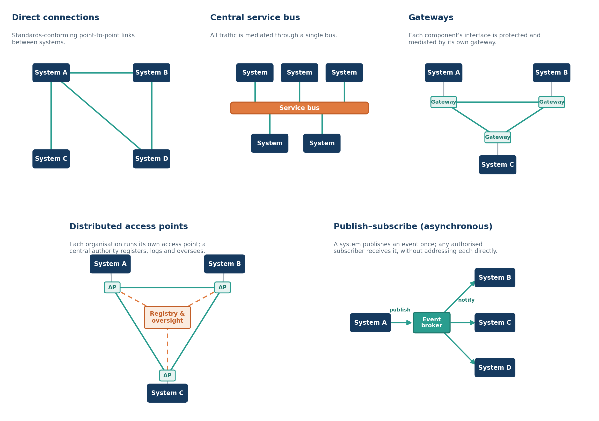
✎ edit📣 feedback Table.
Figure 3.6 — Exchange patterns that can coexist within a single country. The same set of systems may be connected through any of these mechanisms, chosen according to context; the architecture does not prescribe one.
| Legend System (navy) — a participating system or component that sends or receives data. Access point (AP) — a participating organisation's own connection point in a distributed model. Gateway — a component-specific interface that protects and mediates access to that component. Service bus — shared infrastructure through which all traffic is routed. Event broker — shared infrastructure that distributes a published event to its subscribers. Solid line — exchange of data between endpoints. Dashed line — registration, logging and oversight, carrying no data content. Arrow — direction of event flow in the publish–subscribe model. The exchange pattern a country adopts is an implementation choice. Direct connections link systems point-to-point, conforming to open national specifications. A central service bus instead mediates all traffic through a single shared channel. Gateways place a protective, mediating interface in front of each component. In the distributed access-point model, each participating organisation (administrative unit of participation) operates its own access point and a central authority provides registration, logging and oversight without sitting in the path of the data itself. Publish–subscribe exchange is asynchronous: a system publishes an event once, and any authorised subscriber receives it without the publisher addressing each recipient directly; because it is store-and-forward, it also allows endpoints to continue operating where connectivity is intermittent and to synchronise when it is restored. These patterns are not mutually exclusive. A single country may use several at once — for example, centralised handling of demographic look-ups alongside distributed exchange of clinical documents between facilities, and publish–subscribe eventing where a facility that registers a birth publishes that event once for a civil registration system and an immunisation registry each to act upon. What the architecture asks is not a particular pattern, but that exchange, however it is implemented, conforms to open national specifications, authenticates and audits its participants, and avoids the accumulation of unmanaged bilateral connections. |
|---|
3.6.4 Cross-border health data flows
✎ edit📣 feedback People, and the care they need, cross borders — migrant and mobile workers, displaced populations, those seeking care abroad, and populations served by regional health initiatives — and infectious-disease events and other emergencies require information to move between jurisdictions quickly and reliably. Cross-border exchange rests on the same principles as national exchange: shared content standards, preserved meaning, and federated exchange through national gateways rather than a central supranational store of personal health data.
✎ edit📣 feedback Regional experience illustrates the pattern. In the European cross-border health services infrastructure, each participating country connects through a national contact point, and a set of shared core services provides common terminology, translation and interoperability functions; on this basis countries exchange a patient summary — covering information such as allergies, current medications and significant history — together with electronic prescriptions that a traveller can have dispensed in another country, with imaging, laboratory results and discharge reports planned to follow.32,33,34 The personal data remains held nationally and is exchanged on demand between contact points, so that continuity of care is achieved without centralising records. The accompanying legal framework distinguishes the use of health data for direct care from its governed secondary use for research, policy and planning, each with its own access and oversight arrangements.35
✎ edit📣 feedback The Global Digital Health Certification Network (GDHCN)
✎ edit📣 feedback Where the European infrastructure illustrates federated exchange of clinical content within a region, a complementary global initiative addresses the trust on which any cross-border exchange depends. WHO’s Global Digital Health Certification Network (GDHCN) is an openly governed trust network through which participating authorities verify the authenticity and provenance of verifiable health documents issued by one another — confirming, through a shared public-key infrastructure, that a document was genuinely issued by a trusted authority and has not been altered.36 It establishes trust without centralising data: the personal content of a document remains with the issuing authority, and the network conveys only the means to verify it. And it applies the same trust mechanism across many document types, keeping the trust layer separate from — and reusable across — the clinical content it secures, in the same way that, within a country, trust and transport are kept separate from the data they carry.
✎ edit📣 feedback For countries and regions designing cross-border exchange, several requirements follow:
- A shared, internationally aligned patient summary specification, such as the International Patient Summary (IPS), should define the meaningful minimum exchanged for care.
- Terminology and language translation services should allow a receiving clinician to interpret content in their own working language.
- A cross-jurisdiction trust framework — mutual recognition of identities, credentials and digital signatures, underpinned by appropriate public-key infrastructure — shall establish that participants, and the data they exchange, can be trusted.
- The legal basis and consent arrangements for cross-border processing shall be explicit.
- These cross-border arrangements should build on foundational cross-border identity and trust DPI where it exists, extending it with the health-specific content and consent considerations rather than duplicating it.
3.6.5 Conformance
✎ edit📣 feedback Because interoperability is realised through conformance to shared specifications, it can be tested. The requirements expressed in the content, terminology and information-model components, together with the exchange behaviours described in this section, should be made testable, so that countries can validate conformance — including the claims of vendors — before and during procurement. Approaches to conformance testing are addressed in section 3.7.
3.7 Conformance and Testing across Architecture and Components
3.7.1 Purpose
✎ edit📣 feedback When a country or organisation defines its digital health architecture, it does so in the context of its own health priorities, existing infrastructure, and regulatory environment. The reference architecture offers a common benchmark against which such architectures — and the systems that realise them — can be assessed, whether they were developed with the reference architecture in mind or independently.
✎ edit📣 feedback What makes this possible is that the reference architecture is not merely a narrative: its elements and the relationships between them (Tables 3.1 and 3.2) are structured and machine-readable. An architecture expressed in this way can be tested, not only described — and testing applies at two complementary levels:
- Conformance of the systems — whether the components that realise the architecture correctly implement the capabilities, services, and standards expected of them.
- Conformance of the architecture itself — whether an architecture is well-formed and aligned with the reference: its elements defined with sufficient rigour, its relationships complete and traceable, and any deviations or gaps made explicit (whether the architecture adopts, adapts, or maps to the reference).
✎ edit📣 feedback A third, related question — whether the architecture is actually achieving its goals — is assessed by monitoring the outcomes those goals define, traced back through the capabilities and components meant to deliver them.
✎ edit📣 feedback The rest of this section sets out the small, structured model that makes these assessments possible: how a system's conformance to its role is defined and tested, and how the same typed structure lets a whole architecture be checked for alignment, completeness, and gaps.
3.7.2 The model
✎ edit📣 feedback Each construct is bound to one ArchiMate element type. Section 3.1 establishes the core of the modelling language: the Application Component and Application Service element types, together with the four structural relationships — Realises, Composes, Serves, Accesses — that carry most of the model. Describing conformance and testing calls for a small, self-contained extension to that core — two further element types and two further relationships, used only in modelling behaviour and its evaluation — which this section introduces where they are needed and summarises in Table 3.7.1.
✎ edit📣 feedback Table.
Table 3.7.1: Element and relationship types used for conformance and testing
| Type | What it represents | Example |
|---|---|---|
| Application Interaction (element) | Collective application behaviour performed by two or more components | A transaction such as Provide and Register between a Document Source and a Document Repository |
| Application Function (element) | Internal automated behaviour of a component | The document-registration behaviour that realises a registration service |
| Assignment (relationship) | Allocates an active structure element to the behaviour it performs | An actor performs the interaction it takes part in; a component performs its function |
| Triggering (relationship) | A causal "leads to" between behaviours | A user's create-and-submit action triggers the transaction |
✎ edit📣 feedback These constructs extend the section 3.1 palette for the purposes of conformance and testing. The additions are:
- Application Interaction and Application Function — the two element types above;
- Assignment and Triggering — the two relationship types above. (Realisation, already declared, also carries the country-to-reference mapping.)
✎ edit📣 feedback A further set — Application Interface, Business Process, Business Role, and Requirement/Constraint — is needed only by the UI-testing and explicit-criteria views and would be added when those views are adopted. The verdict of an evaluation is left implicit for now; in ArchiMate it would be recorded as an Assessment.
✎ edit📣 feedback Actors as Application Components
✎ edit📣 feedback An actor is an abstract information-processing role — for example a Document Source or a Patient Demographics Consumer. It names a set of responsibilities, independently of any product that fulfils them. An actor is modelled as an Application Component. A concrete system — a vendor product, a national service — is also an Application Component, bound to the actor by a realisation relationship: the system realises the actor. One system may realise several actors; one actor may be realised by many systems.
✎ edit📣 feedback Offered and required Application Services
✎ edit📣 feedback What an actor does is expressed as Application Services, related to the actor by two different relationship types according to whether the service is offered or required:
- A service the actor offers is one it realises — a service it exposes, which in turn serves its consumers. This is the responder role in an interaction.
- A service the actor requires is one that serves the actor — a capability it depends on. This is the initiator role in an interaction.
✎ edit📣 feedback A component thus realises the services it provides and is served by the services it consumes; it does not serve its own service. These offered and required services are the contractually meaningful surface of the actor — the externally observable behaviour against which conformance is declared.
✎ edit📣 feedback Each actor–service association additionally carries a support qualifier: the service may be mandatory or optional for that actor. A mandatory service is supported by any system claiming the actor; an optional service may be supported or not, and where it is, behaves as specified. This is independent of the offered/required direction, and corresponds to the required/optional (R/O) designation an IHE profile gives each transaction. ArchiMate has no native qualifier for it, so it is recorded as a Property on the serving relationship, or — where normative and testable — as a motivation-layer Constraint. (Note the two senses of "required": a required service is one the actor depends on; a mandatory service is one whose support is obligatory. This document reserves offered/required for the direction and mandatory/optional for support.)
✎ edit📣 feedback Interactions and transactions
✎ edit📣 feedback The architecture models the exchange between two actors as an Application Interaction — collective application behaviour performed by two or more cooperating components. The interaction is the shared behaviour the initiator and responder jointly perform; each actor owns its side, and each is assigned to the interaction. (Application Interaction is a new element type being added to the reference architecture, together with the Assignment relationship it depends on — see 3.7.2 – The model, above.)
✎ edit📣 feedback A transaction — a fully specified machine-to-machine protocol exchange, with defined trigger events, message semantics, and expected actions — is one kind of Application Interaction: its precise, specifiable subset. The architecture works at the broader level of interaction, because the same service is often reached by interactions that are not machine-to-machine transactions (see Multiple access patterns to a single service) and by exchanges not yet specified to transaction level. Where an interaction is specified as a transaction, that specification may be supplied by a framework such as IHE rather than restated here (see Alignment with IHE profiles).
✎ edit📣 feedback Crucially, the interaction is not the unit of conformance. It describes an exchange — useful for documentation, sequence diagrams, and message specification — but a product is not certified as "conformant to an interaction" in isolation; it is certified as correctly playing an actor's role in that interaction. Figure 3.7.1 brings these pieces together.
✎ edit📣 feedback Figure 3.7.1. A system realising an actor with its offered and required services, and the two actors connected by a transaction. The concrete system (Vendor EHR Product) realises the Document Source actor; the actor realises the service it offers (Provide Documents) and is served by the service it requires; and both actors are assigned to the Provide and Register [ITI-41] interaction, each owning its side. A component realises the services it provides and is served by the services it consumes — it does not serve its own service.
✎ edit📣 feedback Figure.
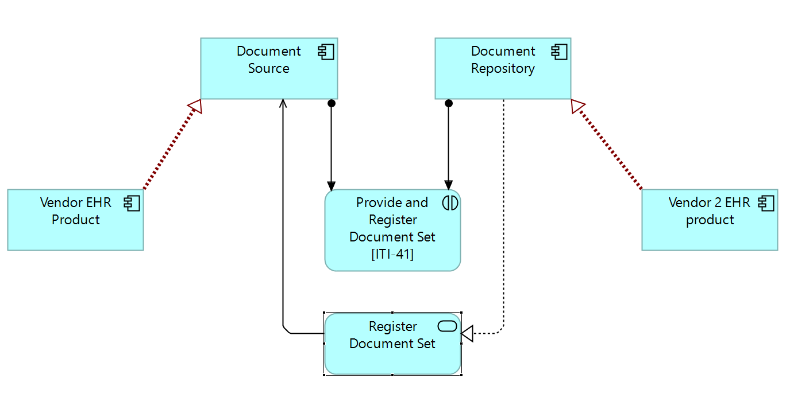
✎ edit📣 feedback Multiple access patterns to a single service
✎ edit📣 feedback The architecture treats the Application Service as the stable unit of capability and the Application Interaction as one way of reaching it. A single service can be reached through more than one interaction — a machine-to-machine transaction is one access pattern; a human-initiated UI workflow is another — and both reach the same Application Service. This matters for conformance: conformance is asserted about the service the component provides, not about any one channel through which it is invoked.
✎ edit📣 feedback Conformance at the Application Component level
✎ edit📣 feedback Conformance is a statement about a system, expressed in terms of the actors it claims to realise and the options it supports:
✎ edit📣 feedback Conformance is the assertion that a given Application Component correctly realises the Application Services associated with a named actor role — as initiator, as responder, or both.
✎ edit📣 feedback It follows that:
- The unit of conformance is the Application Component (the system realising the actor), not the Application Interaction.
- Conformance is role-directional. A system may conform as the responder without conforming as the initiator, and vice versa, because these are distinct services.
- Testing exercises one side of an interaction at a time. The component under test plays one actor role; a simulator — itself an Application Component realising the opposite actor — plays the other side. The test verifies that the system-under-test's services behave as specified.
- The support qualifier determines what is tested. Every mandatory service is tested; an optional service is tested only where the system declares support for it.
✎ edit📣 feedback Figure 3.7.2 shows this arrangement, including the alternative of driving the test through the system's user interface.
✎ edit📣 feedback Figure 3.7.2. Conformance testing view. The System Under Test realises one actor role (here Document Source, the initiator) while a Simulator realises the opposite actor (Document Repository); both are assigned to the Provide and Register [ITI-41] interaction, so the test exercises one side at a time. The same system can also be driven through its UI: a Test Operator who creates and submits a document through the Document Capture UI triggers the same transaction — verifying the system end-to-end, as a user would, rather than by invoking the machine interface directly.
✎ edit📣 feedback Figure.
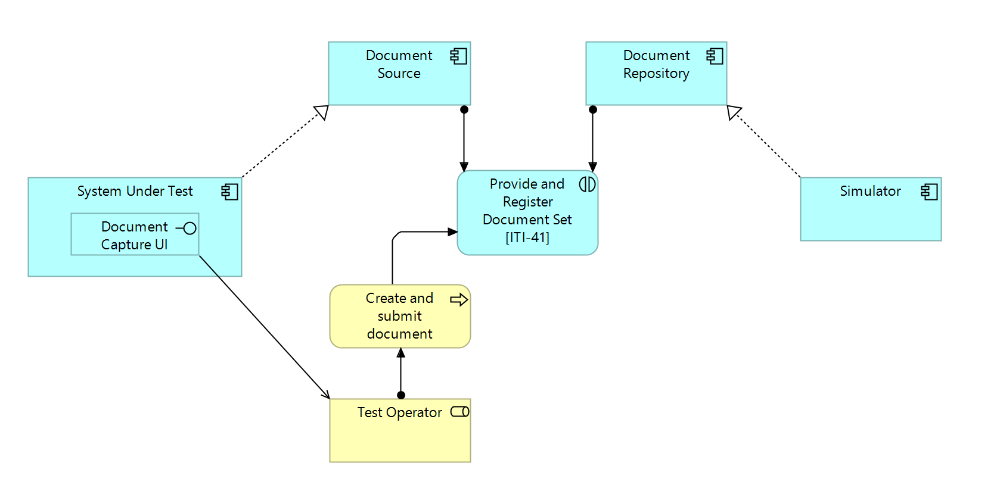
3.7.3 Alignment with IHE profiles
✎ edit📣 feedback IHE is the principal example of a framework accommodated within this model, and the correspondence is close enough that the reference architecture may adopt IHE specifications directly. The consequence is deferral: where an interaction corresponds to an IHE transaction, the architecture names the actor and the transaction and defers to the IHE specification for the protocol detail, and to IHE conformance tooling for testing that side of the interaction. The architecture keeps ownership of the model — which actors exist, which services they offer and require, which interactions connect them — while the specification of a transaction may be drawn from IHE or, where no profile exists, supplied by another standard or specified afresh.
✎ edit📣 feedback The correspondence also marks a boundary: the model covers interactions that IHE does not — the human-initiated paths of Multiple access patterns to a single service, or exchanges not yet specified to transaction level — for which there is nothing to defer to, and which the architecture specifies by other means.
3.7.4 Planning testing from the architecture
✎ edit📣 feedback The same decomposition that makes the architecture legible makes the testing work plannable. Because conformance is declared component by component, against the services of an actor role, the architecture is in effect a map of what is to be tested: each component carries a defined test scope, and each test exercises one side of an interaction at a time. The structure also distinguishes the testing an adopter can reuse from the testing it needs to build:
- Standard components arrive tested. Where a component realises a standardised actor — one governed by an IHE profile, say — the conformance tests already exist: the published test plans, simulators, and reference data that accompany the standard. The adopter reuses them, deferring testing to the framework just as it defers the specification.
- Non-standard components are tested by the adopter. Where a component, service, or interaction is bespoke, or is an interaction not yet specified to transaction level (for instance a human-initiated UI workflow), no ready-made tests exist. The architecture still bounds the task: it names the services to satisfy, the role being claimed, and the side of the interaction to exercise, with a simulator or operator playing the other side.
✎ edit📣 feedback The effect is that conformance testing can be planned as part of the architecture work, not retrofitted afterwards: walking the components and their services yields, early, a test plan that separates what comes tested from what needs to be built, sizes each, and identifies the simulators, drivers, and test data needed.
✎ edit📣 feedback These distinctions can also be expressed as measures, so that progress in testing is quantifiable rather than impressionistic. Three ratios are useful: requirements coverage — the requirements tested and confirmed satisfied, against the total stated for a component; standards conformance — the applicable standards for which conformance has been demonstrated, against the total identified; and capability completeness — the expected capabilities delivered and verified, against the total the architecture expects. Each counts confirmed results against the full set of expectations, and together they complement the realisation-based coverage measure described below.
✎ edit📣 feedback This is an instance of a more general property. Because the elements and their relationships are structured and machine-readable, an architecture expressed in this way can be assessed, not merely described. When a country adapts the reference architecture, or adopts only selected parts of it, the model makes gaps explicit and checkable — for example a capability with no component realising it, an actor whose required service nothing provides, or an interaction with no conforming implementation. Completeness and consistency thereby become properties that can be checked against the model itself, informing decisions about what to adopt, extend, or build.
3.7.5 Validating goals and adoption
✎ edit📣 feedback The same structure makes two further things checkable: whether the architecture's goals are being met, and whether a country's architecture adopts the reference. Both reuse constructs already introduced, shifted to the appropriate elements.
✎ edit📣 feedback Validating goals
✎ edit📣 feedback A goal is validated in the same way as a component, with the parts shifted up to the motivation layer. A goal carries its criteria as Outcomes — measurable results that, when achieved, signal it (an Outcome realises the Goal it satisfies). Where a component is checked against the Requirements its services are expected to satisfy, a goal is checked against its Outcomes; both checks yield the same kind of verdict.
✎ edit📣 feedback The criterion is the Outcome (or a Requirement); the mechanism that checks it — an indicator or measure — is modelled, where it needs to be shown, as a behaviour (an Application Function or Business Process) that evaluates the outcome, just as a conformance test is the behaviour that evaluates a component. The verdict of that check — whether the criterion is met — is left implicit for now: it is not modelled as a distinct element. (ArchiMate has no "control" type; the verdict would naturally be recorded as an Assessment if the model is later made to carry evaluation results explicitly.) The pattern is the same at both levels — criterion → evaluating mechanism → (implicit) verdict — whether the criterion is a service Requirement or a goal Outcome.
✎ edit📣 feedback Evaluating adoption by mapping
✎ edit📣 feedback When a country expresses its architecture in the same formal language, adoption becomes measurable by mapping each country element to the reference element it corresponds to. The mapping is a realisation relationship — a country component realises a reference component (or actor) — the very relationship already used for "a system realises an actor", now applied between a country's architecture and the reference.
✎ edit📣 feedback A country relates its architecture to the reference in one of three ways, and the mapping records which. Under adoption, the national architecture uses the reference elements directly, without modification — the strongest form of alignment, and the most straightforward to assess. Under adaptation, it modifies or extends reference elements to suit local context, health system structure, or regulatory requirements — the most common path — and assessment then turns on whether those modifications are explicitly documented and the rationale for deviation is clear. Under mapping, a country that already has an established architecture keeps its own terminology and structure and provides an explicit correspondence to the reference elements, with assessment focused on the completeness and correctness of that correspondence. In each case the correspondence is expressed as a realisation relationship, and it is this that makes adoption measurable.
✎ edit📣 feedback Coverage and gaps then fall out mechanically:
- A reference element is covered when at least one country element realises it. The country architecture inherits that element's criteria — the Requirements, Constraints, and conformance expectations attached to it — which are then tested as in Conformance at the Application Component level.
- A single country system may realise several reference components; it covers all of them and is subject to each one's criteria.
- A reference element that no country element realises is treated as absent — a gap, surfaced exactly as under Planning testing from the architecture.
✎ edit📣 feedback Adoption is thereby quantifiable: coverage is the proportion of reference elements realised by the country architecture, while the conformance of those covered elements is tested through their inherited criteria. This holds whether the country adopts the reference elements directly, adapts them (realisation with documented modification), or maps its own elements onto them. Realisation is the strongest mapping — it asserts that the country element fulfils the reference element's intent and so inherits its criteria; looser correspondences may use an Association or Specialisation, but only realisation carries that inheritance.
3.7.6 Constructs and their counterparts
✎ edit📣 feedback The stable, conformance-bearing elements are the Application Service (capability) and the Application Component (system in an actor role); the Application Interaction is the descriptive connection between them, and where it is a transaction its specification may be deferred to IHE.
✎ edit📣 feedback Table.
Table 3.7.2: Architectural constructs and their ArchiMate and IHE counterparts
| Architectural concept | ArchiMate 3.2 element | Bound by | IHE counterpart |
|---|---|---|---|
| Actor (abstract role) | Application Component | — | Actor |
| System realising an actor | Application Component | Realisation (system → actor) | a product claiming an actor (IHE Integration Statement) |
| Service an actor offers (responder) | Application Service | Realisation (actor → service); service then serves consumers | responder side of a transaction |
| Service an actor requires (initiator) | Application Service | Serving (service → actor) | initiator side of a transaction |
| Support qualifier (mandatory / optional) | Property on the serving relationship (or Constraint) | — | the R/O designation in the profile's actor/transaction table |
| Interaction (transaction = one kind) | Application Interaction | Assignment (actors → interaction) | transaction (machine-to-machine subset) |
| Conformance (per actor role) | assertion over a component's services | — | conformance to an actor within a profile |
| Simulator | Application Component realising the opposite actor | Realisation (simulator → opposite actor) | an IHE-supplied simulator / test tool |
| Goal criterion | Outcome | Realisation (outcome → goal) | — |
| Country-to-reference mapping | Application Component (country) | Realisation (country element → reference element) | — |
Implementing a National Digital Health Architecture
✎ edit📣 feedback The preceding chapters describe a reference architecture. This chapter addresses how countries move toward it: how to assess the starting point, sequence investment, specify the profiles that make the architecture implementable, verify conformance and progress, and put in place the people, skills, and financing that sustain it. It is written for the range of actors a national effort depends on — the ministries and agencies that govern it, the architects and modellers who design it, the implementers who build it, and the development partners who support it — and it is explicit, throughout, about who is accountable for each of these responsibilities.
4.1 Understanding the Starting Point
4.1.1 No Country Starts from Zero
✎ edit📣 feedback No country designing or implementing DPI-H begins from a blank slate. Every health system carries a legacy, including programme-specific applications built around particular funding priorities, national health information systems of varying capability, patient registries that sit in silos, and data still maintained in spreadsheets for reporting. The reference architecture, while ideal in outlook, recognises this legacy and aims to help countries understand which existing investments can be preserved, which should be upgraded to conform to open standards, which can be integrated into shared infrastructure, and which should be retired in favour of shared components that serve the whole system more efficiently.
✎ edit📣 feedback This chapter provides practical guidance for moving from the current state toward REDDHI — described in the preceding chapter not as a fixed destination to be reached and completed but as a continuously maturing direction of travel — through a structured, phased approach adapted to each country’s context, capability, and starting conditions.
4.1.2 Assessing Where You Are
✎ edit📣 feedback The most consequential investment a country can make before implementation begins is an honest assessment of its current digital health landscape. Countries that skip this step tend to build on unstable foundations — replicating fragmentation in new infrastructure, integrating with systems already scheduled for replacement, or investing in capabilities they already hold in another form.
✎ edit📣 feedback A national digital health architecture assessment should answer four questions.
✎ edit📣 feedback What do we already have? Inventory all existing health information systems, registries, and digital tools, including those funded by development partners and individual programmes. For each, assess whether it performs a function that aligns with a REDDHI component, whether it is based on open standards, what population or geography it covers, and who owns and operates it.
✎ edit📣 feedback What is the state of our foundational DPI? Assess the reach and accessibility of national identity, payments, and data-exchange infrastructure. Understand which populations are covered, whether health use cases are legally and technically supported, and what integration mechanisms exist or need to be established.
✎ edit📣 feedback What are our governance and institutional conditions? Assess whether a legal and regulatory framework exists for health data, whether there is a designated institutional home for digital health architecture decisions, whether procurement mechanisms are aligned with open-standards requirements, and whether the capacity to design, implement, and sustain shared infrastructure exists in government.
✎ edit📣 feedback What are our priority health goals? Identify two to three high-value health goals — drawn from the seven priority goals that underpin this architecture — that have political support, a willing implementation community, and the potential to demonstrate tangible value quickly. Within each, identify the specific high-value use cases that will drive the first implementations. These goals, and the use cases within them, can anchor the initial implementation and provide the evidence base for broader investment.
✎ edit📣 feedback The outputs of this assessment form the foundation of a national digital health architecture roadmap: a living document that maps the current state, the target direction, the gap between them, and the sequenced investments required to close it. The roadmap is strengthened where it also sets out a benefits case and a simple logic model — connecting each investment to the capabilities it enables and the health outcomes it is expected to support — and where it draws on recognised digital-readiness and capability assessment frameworks, to establish a baseline against which progress can later be measured.
4.2 Charting a Path to REDDHI
4.2.1 Different Entry Points toward REDDHI
✎ edit📣 feedback Countries arrive at DPI-H implementation from different starting positions. Rather than prescribing a single implementation sequence, this guidance identifies four common entry points and describes how each advance toward REDDHI (Resilient Essential Data and Digital Health Infrastructure). Countries should identify which entry point most closely reflects their current reality and adapt the guidance accordingly.
✎ edit📣 feedback Entry point 1 — Building from the ground up.
✎ edit📣 feedback Countries with limited existing digital health infrastructure and early-stage foundational DPI face the challenge of establishing shared foundations from scratch. The risk here is that donor-funded projects move faster than national governance, creating new silos before shared infrastructure is in place. The priority for these countries is to establish governance and architectural standards before major technology investments are made, so that every subsequent investment conforms to a coherent national architecture rather than fragmenting it further. The REDDHI minimum viable layer then provides the sequenced starting point. Countries at this entry point should resist the pressure to deploy complex capabilities before the foundations are stable.
✎ edit📣 feedback Entry point 2 — Integrating existing systems.
✎ edit📣 feedback Countries with significant existing investment in programme-specific systems — disease-specific registries, immunisation systems, maternal and child health tools — face the challenge of connecting what they have without replacing it prematurely. The priority here is not replacement but integration: establishing the shared infrastructure layer alongside existing systems and progressively migrating functions as legacy systems reach end of life or require upgrade. For example, a client registry deployed as a shared identification layer, connected to existing systems through defined APIs, can immediately reduce duplication without disrupting ongoing programme delivery; and an interoperability capability that standardises data exchange between existing systems buys time for a more orderly transition to shared components.
✎ edit📣 feedback Entry point 3 — Upgrading existing infrastructure.
✎ edit📣 feedback Countries that have already invested in shared health information infrastructure — but where those systems are not built on open standards, are not interoperable with foundational DPI, or are controlled by a single supplier — face a different challenge. The priority here is conformance and openness; assessing existing systems against open-standards requirements, negotiating with suppliers to expose standard APIs, and introducing governance frameworks that prevent future lock-in. Countries at this entry point should treat the right to move — the ability to replace, upgrade, or migrate to a different system in future — as a non-negotiable condition of any technology relationship.
✎ edit📣 feedback Entry point 4 — Scaling and deepening.
✎ edit📣 feedback Countries with established shared infrastructure, strong governance, and advanced digital health capability face the challenge of deepening capability rather than establishing it: moving from foundational registries toward the business services layer, implementing semantic governance infrastructure, extending coverage to the last mile, and demonstrating the value of shared infrastructure through measurable health outcomes. The priority here is the sustainability of domestically financed national infrastructure, building the enterprise architecture capacity within government that can evolve the architecture over time, and engaging Ministries of Finance as strategic partners in the long-term financing of shared services.
4.2.2 A Phased Implementation Approach
✎ edit📣 feedback Regardless of entry point, implementation follows a broadly consistent phased progression. The phases are not strictly sequential — activities overlap and iterate — but they provide a practical structure for planning and sequencing investments, and the activities within each phase vary with a country's entry point. The indicative timeframes given below describe a typical sequence rather than a fixed schedule; actual durations depend heavily on starting conditions, governance readiness, and financing, and evaluation continues across all phases rather than only at the end. Several threads are not confined to a single phase but run throughout: governance, financing, partnership engagement, capacity development, and evaluation begin in Phase 1 and continue as the architecture matures. They appear below at the phase where they become most prominent, not the phase where they start.
✎ edit📣 feedback This phased approach is consistent with, and complements, the WHO Digital Implementation Investment Guide (DIIG),37 which sets out a step-by-step, needs-based process for planning and costing digital health interventions within a health programme. Where the DIIG guides the programme-level investment decision — from health need through costed implementation to monitoring — this guidance describes the shared infrastructure those investments align to and reuse, so that each programme deployment strengthens the national digital health enterprise rather than adding a parallel system.
✎ edit📣 feedback Phase 1 — Assess, align, and plan (indicative: the first few months).
- Conduct the national architecture assessment described above, capturing baseline values for the outcomes the architecture is expected to influence.
- Establish or strengthen the governance body responsible for digital health architecture decisions.
- Engage stakeholders across health programmes, finance, identity, and ICT ministries.
- Select two to three priority health goals, and the specific high-value use cases within them that will drive the first implementations and develop the business case and evaluation plan to track them.
- Align procurement mechanisms with open-standards and conformance requirements.
- Produce a national digital health architecture roadmap and an initial implementation plan, referring to recognised digital-readiness/ capability assessment frameworks.
- Begin the financing and partnership conversation early — engaging Ministries of Finance and development partners around the business case, and setting the direction for sustainable financing (see section 4.6)
✎ edit📣 feedback The investment in this phase is modest but the returns are disproportionately large: countries that plan well, position themselves to implement faster and waste less.
✎ edit📣 feedback Phase 2 — Establish the foundation (indicative: the following year to approximately eighteen months).
✎ edit📣 feedback The intent of this phase is common to every entry point, but the work differs by starting point. Where a component is absent, it is deployed; where a country already has an equivalent, the task is to assess it against open standards, rationalise duplication, expose standard interfaces, and fill gaps rather than rebuild. The activities below apply to whichever of these a country faces.
- Establish the components of the foundational shared data layer — the core registries, the lifelong health record, and basic terminology services — that the priority health goals and use cases selected earlier require. Countries need not implement all of these at once, nor in a fixed order: a country focusing on a single goal establishes the components that goal depends on first — commonly the client registry, as the means to identify a person across interactions — and extends the layer as further goals are taken on. Where a component is absent it is deployed; where an equivalent already exists, it is assessed against open standards, consolidated, and brought into the shared foundation.
- Establish or strengthen integration agreements and technical connectivity with foundational DPI, particularly national identity.
- Establish the interoperability capability — deploying it where absent or aligning existing exchange mechanisms to it — as a distributed capability or, where a country chooses, as a centralised service.
- Connect two to three priority programme-specific systems, through the use cases selected in Phase 1, to demonstrate the value of shared infrastructure without disrupting ongoing delivery.
✎ edit📣 feedback This phase should produce a functioning, standards-conformant foundation that real health programmes are using — not a pilot that would require reconstruction before it can scale.
✎ edit📣 feedback Phase 3 — Connect and expand (indicative, and strongly context-dependent).
- Progressively connect additional programme systems to the shared foundation.
- Establish semantic governance infrastructure so that terminology and information model components remain governed and trustworthy.
- Extend coverage geographically — to subnational levels, to primary care and community health, and to offline and low-connectivity environments.
- Begin transitioning functions from legacy systems to shared components as those systems reach end of life.
- Develop and deploy the business services layer — clinical decision support, health management information and analytics, and public-health surveillance — drawing on the foundational shared data layer established earlier.
✎ edit📣 feedback Phase 4 — Sustain and evolve (ongoing).
- Transition from externally funded implementation to domestically financed national infrastructure.
- Build in-country enterprise architecture capacity within government.
- Consolidate the financing models that sustain shared infrastructure beyond project cycles — including cost-recovery and shared-benefit arrangements — building on the business case and Ministry of Finance engagement begun in Phase 1.
- Deepen development-partner engagement so that partners contribute to shared infrastructure rather than building parallel systems, continuing the alignment sought from the outset.
- Continuously assess and evolve the architecture against changing health system needs, emerging technologies, and updated standards.
4.2.3 Navigating Legacy Systems
✎ edit📣 feedback Legacy systems are not the enemy of DPI-H — unplanned legacy systems are. Countries that approach legacy systems with a clear framework can make principled decisions about what to preserve, what to integrate, and what to retire.
✎ edit📣 feedback Assess before you act. Do not assume a legacy system should be replaced because it predates the reference architecture. Assess whether it performs a function aligned with REDDHI, whether it can be made conformant through API exposure or standards adoption, and whether replacement would deliver sufficient value to justify the disruption.
✎ edit📣 feedback Integrate before you replace. Where a legacy system holds data that the health system depends on and could not easily recreate, integration is almost always preferable to replacement in the near term. Expose the system’s data through standard APIs, connect it to an interoperability capability where that is the most viable approach, and plan for an orderly transition rather than a disruptive replacement.
✎ edit📣 feedback Replace at natural transition points. Procurement cycles, system end-of-life events, and major upgrade decisions are natural moments to shift from a legacy system to shared, interoperable infrastructure aligned with REDDHI. Countries should plan for these moments in advance, ensuring that replacement systems are selected and procured against open-standards requirements and that the data held in legacy systems is migrated into the shared foundation.
✎ edit📣 feedback Stop creating new silos. The most important principle for managing legacy systems is to stop adding to them. Every new system procured without conformance to open standards and integration with shared infrastructure adds to the legacy debt the country eventually has to address. Countries should treat architectural conformance as a mandatory procurement requirement, not an optional enhancement.
4.2.4 The Role of the National Digital Architect
✎ edit📣 feedback A recurring finding from country experience and global dialogue is that implementation fails not for lack of technology but for lack of someone accountable for the architecture as a whole. The Wilton Park dialogue on digital public infrastructure for health38 identified the national digital architect — an individual or small team embedded in government, with the authority to define architectural standards, evaluate conformance, and enforce coordination across programmes and ministries — as one of the most urgent and actionable priorities for countries pursuing DPI-H. This role is not an IT manager, a project coordinator, or a donor-funded consultant. It is the accountable designer of the health system’s digital infrastructure — the person who holds the architectural blueprint, ensures every investment conforms to it, and has the authority to say no, or to escalate, when a proposed investment would undermine it.
✎ edit📣 feedback Because architectural coherence has to be maintained well beyond any single project, this should be established as an enduring function — part of business-as-usual governance — rather than a time-limited role, and put in place before major implementation begins, not after fragmentation has already set in, whether within the Ministry of Health, a dedicated digital health agency, or a whole-of-government digital authority. Countries need not face this in isolation: regional and global networks of national architects provide a means to share plans, compare approaches, and learn from one another’s experience. Progress along the path described here can then be tracked using the conformance and progress measures set out in section 4.4.
4.3 Profiles and Specifications for Implementation
✎ edit📣 feedback A reference architecture describes what a system needs to do and how it should behave — but for countries to translate architectural intent into implemented systems, they need a more concrete layer of specification: profiles that define the data structures, roles, transaction patterns, and integration interfaces that give the architecture its practical form. This section addresses that need, providing guidance on the minimum level of specification that countries should establish regardless of the technology choices they make in implementation.
4.3.1 Design Data Structures and Data Models First
✎ edit📣 feedback The most consequential implementation decision a country makes is not which software to procure but what data to capture and how to structure it. Data models define the shape of information across the entire digital health ecosystem — what fields are recorded for a client, how a facility is described, what attributes constitute a health worker record, how a product is catalogued. These decisions propagate into every system that stores, exchanges, or uses that data. Getting them right at the outset — and governing them through the semantic governance infrastructure described elsewhere in this chapter — is essential to achieving semantic interoperability across the ecosystem.
✎ edit📣 feedback Countries should define and standardise a minimum set of data models for each DPI-H component before implementation begins, regardless of the technology through which those components will be delivered. These minimum data models should specify the mandatory data elements that every implementation supports — the irreducible set of attributes without which a registry, record, or service could not function as shared infrastructure — while allowing national extensions that accommodate country-specific requirements without breaking interoperability with the core. The logical information model repository is the designated home for these national data models, and its governance processes are the mechanism through which they are maintained, versioned, and distributed.
✎ edit📣 feedback For the core registries, minimum data models should address at least the following: for the client registry, the minimum demographic and identity attributes required to uniquely identify a person across health system interactions; for the facility registry, the minimum attributes required to describe a health service delivery point, including its location, service capabilities, and operational status; for the health workforce registry, the minimum attributes required to describe a licensed health worker, including their credentials, specialisation, and deployment; and for the product registry, the minimum attributes required to describe a regulated health product, including its identity, classification, and regulatory status. For terminology services and the logical information model repository, minimum profiles should address the metadata requirements for versioning, validity periods, and content integrity described in the semantic governance infrastructure section.
4.3.2 Actors and Roles: Defining Who Participates
✎ edit📣 feedback Data models describe the information a system holds; they do not, on their own, describe who acts on that information. An implementable specification also defines the actors — both human and system — that participate in each transaction, and the roles they play. This matters for several reasons that recur across DPI-H components: access to data and functions has to be granted by role; actions recorded in a shared record have to be attributed to an identifiable actor; workflows have to express which actor performs each step; and the capability statements that govern conformance are written from the perspective of a defined actor.
✎ edit📣 feedback WHO SMART Guidelines offer a worked example of this practice.39 The operational layer — the digital adaptation kit — defines a set of generic personas: depersonalised, context-free descriptions of the human and system actors involved in delivering a health service, set out alongside the data elements, workflows, and decision logic for a given domain. In the corresponding implementation guide, these personas are expressed as computable actor definitions against which workflows, capability statements, and access rules are anchored. The same discipline applies to shared infrastructure. For each DPI-H component, countries should define the minimum set of actors and roles that participate in its transactions — for a registry, for example, the registrant, the verifying authority, and the consuming system — and govern these role schemas through the same mechanisms used for data models and terminology. Defining actors explicitly, and reusing a common set across components, keeps access control, attribution, and workflow consistent across the ecosystem rather than re-invented for each system.
4.3.3 Services and Transactions: FHIR as the Recommended Framework
✎ edit📣 feedback Once data structures and the actors that use them are defined, the next layer of specification concerns how systems exchange data — the services they expose and the transactions they support. The reference architecture recommends HL7 FHIR40 as the framework for specifying and implementing health data exchange services and transactions. FHIR provides a comprehensive, widely adopted, and actively maintained set of specifications for health data resources, RESTful APIs, and transaction patterns. It delivers the syntactic and structural layer of interoperability — a common way to represent and exchange data — together with the mechanisms, through profiles and terminology bindings, by which semantic interoperability is carried. Those mechanisms do not by themselves guarantee shared meaning: semantic interoperability also depends on governed terminology and a governed logical information model. The terminology service supplies the agreed codes and value sets; the logical information model repository holds the authoritative, technology-independent definition of the data, from which FHIR profiles are derived and against which they are validated. A FHIR profile is a representation of that logical model, not a replacement for it — two systems can each be valid FHIR and still diverge in meaning unless both conform to the same governed information model. Its alignment with modern web standards makes it accessible to a broad ecosystem of implementers, and its active global community ensures that it evolves with emerging health system needs.
✎ edit📣 feedback For each DPI-H component, FHIR-based profiles should define the minimum set of FHIR resources the component supports, the API operations it exposes, the search parameters it enables, and the transaction patterns through which consuming systems interact with it. Together with the actor definitions described above, these profiles constitute the technical specification that suppliers, implementers, and governments use to build conformant systems and to assess whether existing systems meet DPI-H requirements.
✎ edit📣 feedback Countries earlier in their implementation journey may not be able to achieve full FHIR conformance immediately. The reference architecture accommodates this through a progressive approach — countries can begin with simpler exchange mechanisms and evolve toward FHIR conformance over time — provided that the data models and semantic standards underlying their implementations are aligned from the outset. FHIR compatibility is hardest to retrofit where the underlying data structures are not conformant; it is far more straightforward where data models are already aligned to FHIR resource structures, even if the API layer is not yet fully FHIR-compliant.
4.3.4 Integration Interfaces with Foundational DPI
✎ edit📣 feedback DPI-H components do not operate in isolation from the broader digital ecosystem. They may depend on and integrate with foundational DPI — national identity systems, digital payments infrastructure, civil registration and vital statistics systems, and national data exchange — and should specify the integration interfaces through which those dependencies are realised. Countries should define and document two categories of integration interface for each DPI-H component.
✎ edit📣 feedback General APIs that foundational DPI should enable for health sector use. These include identity verification APIs that allow the client registry to validate a person’s identity against the national identity system and retrieve a verified national identifier; civil registration APIs that allow birth and death events to trigger updates in the client registry and health workforce registry; payment gateway APIs that allow health financing systems to initiate, verify, and reconcile payments through the national payments infrastructure; and data exchange APIs that allow health information to be shared securely through the national data exchange backbone where one exists.
✎ edit📣 feedback Health-sector-specific APIs that foundational DPI authorities could synchronise with. These include the client registry’s patient matching and identity resolution APIs, which foundational identity authorities may need to consume when resolving health-related identity queries; the facility registry’s location and service capability APIs, which geographic information systems and emergency response services may consume; the health workforce registry’s credentialing verification APIs, which payment systems use to confirm provider eligibility before releasing funds; and the terminology services APIs, which any system exchanging coded health data — including those outside the health sector — needs to access to ensure consistent semantic interpretation.
✎ edit📣 feedback Where foundational DPI does not yet expose the APIs that health requires, countries should document these as requirements to be communicated to the relevant foundational DPI authorities — maintaining the principle established throughout this architecture that health should express its needs to foundational DPIs rather than duplicate them. Where foundational DPI is absent entirely, health should implement minimum interim capabilities with documented transition plans as the broader digital ecosystem develops.
4.3.4 Interoperability Implementation Pathways
✎ edit📣 feedback Several architectural pathways exist for implementing interoperability for DPI-H. The pathway a country takes depends on its existing governance context (including legislative or administrative requirements), the availability of foundational DPI for interoperability, system capability, and the legacy landscape. The architecture recommends prioritising the logical decoupling of core functions — such as clinical data exchange, health financing, and shared registries — during implementation.
✎ edit📣 feedback Anchoring interoperability on open standards and specifications allows diverse systems to be integrated without lock-in — as seen, for example, where a country’s point-of-care clinical application integration requirements are expressed against open profiles. The modular structure this logical decoupling enables allows countries to adopt capabilities incrementally, without redesigning the entire ecosystem. The physical implementation can then be centralised, distributed, or hybrid:
- Centralised models. National shared infrastructure orchestrates data exchange and provides stronger public governance, standards enforcement, security oversight, and accountability.
- Federated models. Systems exchange data directly, rather than through a central hub, anchored on shared standards and shared reference data — common identifiers from the core registries and agreed terminology. This preserves institutional autonomy while maintaining interoperability.
- Hybrid models. Centralised functions, such as master registries and policy enforcement, coexist with decentralised data exchange, aiming to balance national coordination with localised needs across specific use cases.
✎ edit📣 feedback Several countries with large populations have, for example, implemented a hybrid model in which health records are shared through a health information exchange component while health financing claims are orchestrated through a claims exchange component. This provides a centralised mechanism for sharing health records while addressing localised needs for orchestrating claims transactions, such as membership and benefits confirmation, pre-authorisation, and claims settlement.
4.3.5 Minimum Conformance and Testing
✎ edit📣 feedback Profiles and specifications are useful only if compliance with them can be verified. Countries should establish minimum conformance requirements for each DPI-H component and define the testing mechanisms through which conformance is assessed. An interoperability test bed41 — an openly available, standards-based testing environment offering validators, simulators, and test-management tooling — supports FHIR conformance testing and can be adapted to country-specific implementation profiles, giving countries a shared means of verification rather than one rebuilt from scratch for each procurement. Countries should consider requiring conformance certification against published profiles as a condition of approval for procurement of DPI-H components, so that every system entering the national digital health ecosystem contributes to interoperability rather than undermining it.
4.4 Measuring Progress and Impact
✎ edit📣 feedback Section 3.7 sets out how the reference architecture — because its elements and relationships are structured and machine-readable — can be tested rather than only described: how a system's conformance to an actor role is defined and verified, how a national architecture's adoption of the reference is measured by mapping, and how coverage and gaps fall out of that mapping. This section turns to how countries use those assessments in the course of implementation — to establish baselines, judge whether the architecture is achieving its goals, and track progress over time in a form that informs the roadmap and the case for continued investment.
✎ edit📣 feedback Three of those uses connect directly to earlier sections. Conformance certification against published profiles can be made a condition of procurement (section 4.3), so that each system entering the ecosystem is verified against the role it claims. Coverage — the proportion of reference elements a national architecture realises, as defined in section 3.7 — gives a simple, repeatable measure of how much of the target architecture is in place. And the same mapping that establishes coverage surfaces gaps, which feed directly into the roadmap's gap analysis (section 4.1).
4.4.1 Assessing impact: Are goals being achieved?
✎ edit📣 feedback Whether the architecture is achieving its goals is assessed by monitoring the outcomes those goals define, traced back through the capabilities and components meant to deliver them — the goal-validation structure described in section 3.7. Two points strengthen that assessment in practice:
- Impact depends on baselines captured at the outset: the current-state assessment in section 4.1 should record not only what exists but the starting values of the outcomes the architecture is expected to influence, so that change can later be attributed with confidence.
- Alongside outcome measurement, a process evaluation — how faithfully plans translate into practice, what unintended effects, positive and negative, emerge, and what the implications are for organisations and ways of working — gives a fuller picture than outcome indicators alone.
✎ edit📣 feedback And because the reference architecture provides a canonical decomposition of goals into capabilities and components, impact assessment does not start from scratch in each context, and results can be compared across implementations and aggregated — nationally and, ideally, internationally — to support shared learning.
4.4.2 Tracking progress over time
✎ edit📣 feedback The assessments above are most useful when repeated at regular intervals and read together as a view of national progress. Four dimensions provide a practical summary:
- Component coverage — which REDDHI components are in place, at what level of functionality, and with what geographic and population reach (the realisation-based coverage measure of section 3.7, applied over time).
- Standards conformance — the extent to which deployed components and existing systems conform to open standards, expose standard APIs, and use governed terminology and data models.
- Governance maturity — how developed the institutional, legal, and process foundations are that keep shared infrastructure maintained, governed, and sustainably evolved.
- Outcome linkage — whether there is evidence that shared digital infrastructure is contributing to improved health outcomes, reduced administrative burden, and more efficient resource allocation, framed where possible against the explicit aims a country has adopted for its health system.
✎ edit📣 feedback Assessed annually or biannually, these dimensions help countries track progress, identify bottlenecks, and adjust the roadmap. They also provide the evidence base needed to make the case for continued investment to Ministries of Finance and development partners.
4.5 Roles, Skills, and Capacity
✎ edit📣 feedback A reference architecture is only as useful as the people and institutions that apply it. This section sets out how different actors use the architecture, the roles and skills a national effort depends on, and how countries build and sustain that capacity over time.
4.5.1 How to Use This Architecture
✎ edit📣 feedback This reference architecture is a shared resource rather than a fixed blueprint, and different actors use it in different ways.
- Governments and policymakers can use it as a planning and investment framework — to prioritise among the seven health goals, sequence investment along the phased path, and hold programmes and partners to a common architectural standard.
- Architects can use it as a reference model to adopt, adapt, or map a national architecture (as described in section 4.4), and as the source of the component definitions and design principles a national design should respect.
- Implementers and suppliers can use it as a specification source — the data models, actor definitions, exchange profiles, and conformance criteria against which conformant systems are built and existing systems assessed.
- Development partners can use it to align their contributions with national shared infrastructure rather than building parallel systems, expressing support in terms of the components and capabilities the country has prioritised.
- Reviewers and assessors can use it as a benchmark for coverage and conformance, and as the canonical decomposition of goals into capabilities and components that makes comparison across contexts possible.
✎ edit📣 feedback Using the architecture well is less about adopting every element verbatim than about adopting its discipline: a common vocabulary of components and capabilities, a shared set of open standards, and an explicit, testable relationship between national choices and the reference model.
4.5.2 The Roles and Skills Needed to Build and Govern the Architecture
✎ edit📣 feedback Implementation fails more often for want of people than for want of technology. Beyond the national digital architect described in section 4.2 — the single point of architectural accountability — a national effort depends on a small set of specialist roles and skills, whether resident in government, drawn from a national digital health agency, or accessed through partners. Countries should plan deliberately for how these capabilities are sourced and, over time, brought in-house. The core roles include:
- Enterprise and solution architects, who maintain the national architecture and translate it into specific solution designs.
- Information and FHIR modellers, who design the data models, FHIR profiles, and actor definitions that make the architecture implementable, and keep them aligned with the reference profiles.
- Terminology and semantic specialists, who curate value sets, code systems, and mappings (for example to SNOMED CT/GPS, ICD-11, and LOINC) and operate the semantic governance processes.
- Standards and interoperability specialists, who specify exchange patterns, integration interfaces, and conformance tests.
- Security and privacy architects, who design the protection, consent, and access-control mechanisms that shared health data depends on.
- Integration and implementation engineers, who build and connect components and migrate data from legacy systems.
- Data governance and stewardship roles, who oversee data quality, access, and accountability.
- Clinical and public-health informaticians, who keep the architecture grounded in the realities of care delivery and programme need.
- Change and programme managers, who carry the organisational and workflow changes that new infrastructure requires.
✎ edit📣 feedback Few countries have all of these in place at the outset, and not every role needs a dedicated post; what matters is that each responsibility is named, resourced, and accountable. The mix shifts across the phased path — modelling, terminology, and security skills are most intensive while foundations are being established, while governance, stewardship, and change-management capacity grow in importance as the architecture is sustained and evolved.
4.5.3 Building and Sustaining National Capacity
✎ edit📣 feedback Sustaining these roles is a national capability question, not a series of individual hires. National programmes that deliberately build digital health leadership and technical skills — of the kind several countries have established to train architects, modellers, and informaticians at scale42 — are an effective way to develop and retain this capacity within the public sector rather than depending indefinitely on external consultants. Regional and global networks of national architects and implementers complement these programmes, providing a means to share plans, compare approaches, and learn from one another’s experience.
✎ edit📣 feedback Capacity is not only technical. Introducing shared infrastructure changes how programmes work, how data is shared, and where decisions are made, and these changes are sustained only where the accompanying change management — stakeholder engagement, training, workflow redesign, and clear communication of benefit — is planned and resourced as deliberately as the technology itself.
4.6 Financing and Partnerships
✎ edit📣 feedback Shared infrastructure outlives the projects that establish it, and its value depends on being financed beyond them. The phased path culminates not in a completed project but in a sustained national capability, and the financing and partnership arrangements that support it deserve explicit attention from the outset.
4.6.1 The Investment Case
✎ edit📣 feedback The case for that investment has to be made in terms legible to Ministries of Finance and development partners, not only to health ministries. This means keeping clear a distinction that is easily blurred: how DPI for health is financed — the infrastructure, human capital, and operational costs that sustain shared components over time — is a different question from what DPI for health financing can deliver — measurable improvements in revenue collection, fund pooling, resource allocation, fraud detection, and accountability.43 Both arguments are compelling, but they address different audiences and call for different narratives.
✎ edit📣 feedback For Ministries of Finance, the most persuasive case is grounded in outcomes they already track: improved budget execution, reduced leakage, timely provider payments, traceable health expenditure, and the efficiency gains that follow from replacing fragmented administrative systems with shared infrastructure. Framed this way, DPI-H reads as capital investment in health system infrastructure rather than a technology modernisation project — and that reframing is what justifies financing it as infrastructure: through multi-year, recurrent budget lines and domestic cost-recovery mechanisms, rather than the project-based donor cycles that treat digital infrastructure as a passing line item.42 Ministries of Finance are best engaged not as a final approval step but as strategic partners in the long-term financing of shared services.
4.6.2 Sustainability by Design
✎ edit📣 feedback Sustained financing is one dimension of a broader sustainability that countries do well to design for deliberately. Five dimensions reinforce one another:
- a clear value proposition;
- sound technical architecture and standards;
- the organisational structures that operate and govern the infrastructure;
- financial resilience; and
- the legislation that gives shared infrastructure and its data a durable legal basis.
✎ edit📣 feedback The architecture's design principles already address the technical and organisational dimensions; the legal dimension deserves equal weight, since the right to operate shared infrastructure, to share data across programmes, and to require conformance all rest on it.
4.6.3 Approaches to Financing
✎ edit📣 feedback No single financing approach suits every country, and most combine several.
- A recurrent line in the national health budget gives the most predictable basis and signals government ownership.
- Blended arrangements — a domestic base with development-partner co-financing — can ease the early fiscal burden, provided they carry an explicit transition plan that increases the government share over time.
- Where health coverage schemes are mature, a contribution from the scheme toward the registries and services it relies on can tie financing to use.
- Efficiency dividends — savings from reduced fraud, leaner procurement, and less manual processing — can help fund operation where they are captured and reinvested rather than absorbed elsewhere.
- Private-sector arrangements can supply hosting or application development, bounded so that government retains ownership of core registries and the data they hold.
- And because shared components serve many programmes at once, pooling investment across programmes — rather than each funding its own registries — converts duplicated spending into cumulative national capability.
✎ edit📣 feedback Whatever the mix, the value case has to be evidenced. The benefits case set out in the roadmap (section 4.1) and the progress measures in section 4.4 — coverage, standards conformance, governance maturity, and outcome linkage — provide the basis for showing Ministries of Finance and partners what shared infrastructure is delivering in return for its recurrent cost, and for sustaining the case for continued investment.
4.6.4 Partnerships
✎ edit📣 feedback Partnerships extend well beyond financing. Sustainable DPI-H rests on relationships across government — with the authorities responsible for identity, payments, public financial management, and interoperability governance, many of which sit outside the health sector — and with regional bodies, standards organisations, and the wider implementer community. Development partners have a particular responsibility to align their contributions with the national architecture and roadmap rather than building parallel systems, and to express support in terms of the components and capabilities the country has prioritised. The national digital architect and the governance arrangements described earlier in this chapter are the means through which these relationships are coordinated in service of a coherent national architecture.
Future proofing the Architecture
✎ edit📣 feedback Artificial intelligence and other emerging technologies are reshaping expectations of what digital health systems can achieve. Machine learning is being applied to diagnostic and decision support, risk prediction, image interpretation, the detection and forecasting of outbreaks, operational planning, and resource allocation. Large language and multi-modal models are changing how clinical knowledge is summarised, retrieved, and acted upon. Beyond these current applications, advances in AI agents, remote monitoring, wearable sensors, genomics, edge computing, and verifiable digital credentials each carry implications for how health data is generated, exchanged, and used. The pace of this change is unlikely to slow.
✎ edit📣 feedback This guidance does not attempt to catalogue emerging technologies or to predict their trajectories, both of which would date quickly. Its purpose is to set out the relationship between emerging technologies and the shared digital infrastructure described in this document, and to offer practical orientation for countries weighing where and how to adopt them. For artificial intelligence in particular, that orientation matters: implementers consistently report that the difficulty is less whether to adopt AI than knowing what, specifically, to adopt and on what foundations. General encouragement to adopt AI offers little to a ministry deciding where to invest.
✎ edit📣 feedback Artificial intelligence is understood here broadly, as machine-based systems that, for a given set of objectives, infer from the data they receive how to generate outputs such as predictions, recommendations, classifications, or decisions. This spans rule-based systems, statistical and machine learning models, and the large language and multi-modal models whose rapid public adoption from the early 2020s brought AI to the centre of health-sector attention. Several jurisdictions are now establishing legal definitions and governance frameworks for these systems44, and WHO has issued guidance on the ethics and governance of AI for health45 and, more recently, on large multi-modal models specifically46.
5.1 Emerging technologies and the foundations they depend on
✎ edit📣 feedback Emerging technologies do not substitute for the foundational work of building trusted registries, governed terminology, structured information models, and reliable interoperability. More often they depend on that work and integrate with it. Artificial intelligence, in particular, operates on top of existing digital infrastructure; where that infrastructure is weak, fragmented, or poorly governed, AI is less likely to perform as intended, with consequences for quality and patient safety.
✎ edit📣 feedback It is also relevant that not all emerging technologies draw on data held in the shared infrastructure. Some consumer-facing applications operate independently of health-system data, using information entered by individuals or collected through personal devices to offer self-management support or lifestyle advice, and these can deliver value without accessing shared records or interoperating with wider health information systems. The architecture described here concerns those technologies that depend on, or contribute to, the shared health data foundation, and it is for these that the relationship set out below is decisive.
5.2 Why data foundations determine what AI can deliver
✎ edit📣 feedback The performance of an AI model depends on the data it can access, and in health that data is generated across many systems, providers, and points of care over a person's lifetime. Where data is fragmented, inconsistently coded, attributed to the wrong individual, or held in systems that do not exchange it, a model inherits and amplifies those weaknesses rather than overcoming them, and it does so at a scale and speed that can make the resulting errors difficult to detect and correct. A model used to identify patients at high risk of deterioration, for example, produces unreliable predictions if it draws only on records from a single facility while earlier admissions, laboratory results, and medication histories sit elsewhere and are not linked. The trusted data foundation that this architecture describes — captured once and reused many times — is what allows a model to be trained, validated, and deployed reliably, safely, and equitably.
✎ edit📣 feedback Several elements of the shared infrastructure are particularly important to the reliable performance of AI and other data-dependent technologies:
- terminology services, which provide the semantic consistency that allows an algorithm to operate on data that means the same thing across the systems that produced it. Governed terminology also reduces the complexity a model has to contend with and improves the reliability with which it connects concepts;
- the logical information model repository, which governs a shared, structured representation of data so that it is machine-processable rather than locked in free text or local formats;
- the client registry, which enables the longitudinal records on which both training and inference depend to be assembled correctly for the right individual;
- interoperability, a cross-cutting property realised through the information mediator and shared terminology rather than a component in its own right, which allows data to be linked across care settings and organisations, so that it can flow to where models are developed and recommendations can flow back to the point of care; and
- the governance, consent, and privacy capabilities embedded throughout the architecture, which support the lawful and ethical use of data on which AI depends, and which retain public trust. Weaknesses in data quality cascade directly into the reliability of any analytical or AI capability built upon them.
✎ edit📣 feedback Two points deserve emphasis because they are easily overlooked. First, governance does not become less important as models become more capable; if anything it becomes more so. Large language and multi-modal models have well-documented limits in handling complex, inconsistent data, and consistent terminology and information models reduce that burden directly — making semantic governance an increasingly practical determinant of whether AI performs reliably, not only an ethical one. Second, grounding models in authoritative, governed reference data also bears on how far their outputs can be trusted. A model that draws on curated registries — a client registry, a facility registry, a terminology service, or a common geo-registry — rather than on ungoverned general-purpose sources can have its outputs traced back to source and audited before they inform a decision. Where an output would influence resource allocation, eligibility, or care, the discipline of auditing the data a model used, before acting on what it produced, is a meaningful safeguard. Models drawing only on ungoverned sources offer no comparable traceability, and an authoritative-looking answer is then hard to distinguish from an unfounded one.
✎ edit📣 feedback A related and rapidly developing pattern is to give models access to trusted, well-defined units of functionality rather than expecting the model to perform every task itself. Where a calculation should be identical everywhere — a coverage indicator, an eligibility rule, a conversion between units — it is more reliable to have the model call an authoritative service that performs that calculation deterministically than to have the model reproduce it, because the same input then yields the same result every time and the logic can be governed in one place. Emerging conventions describe these units in different ways:
- as skills (discrete, reusable capabilities),
- as agents (components that orchestrate a task and that may in turn call a model, which itself calls deterministic services), and
- as shared interfaces — for example, servers implementing the Model Context Protocol (MCP) — through which a model can discover and invoke such capabilities.
✎ edit📣 feedback Designed well, this keeps models pointed at governed sources of truth for the parts of a task that need to be exact, while reserving the model's own inference for the parts that benefit from it. The registries, terminology services, and logical information model repository described in this guidance are what make such services trustworthy in the first place: a service that calculates an indicator is only authoritative if the records it draws on and the definition it applies — the numerator, denominator, and coded terms — are themselves governed.
✎ edit📣 feedback A related, forward-looking practice is to publish specifications and metadata in machine-readable form — for example, alongside published implementation guides — so that automated systems can discover and interpret the capabilities of a component reliably. As this practice matures it may become a useful readiness criterion for shared digital resources and metadata registries.
5.3 Where artificial intelligence can support the health system
✎ edit📣 feedback Across the priority health goals, the most credible near-term applications tend to be assistive rather than autonomous, and they fall broadly into two kinds: operational uses embedded in routine workflows, and analytical uses that support planning, monitoring, and decision-making. Illustrative examples, drawn from the domains examined in developing this architecture, include:
- in health financing, support for claims adjudication and for the detection of fraud, waste, and abuse. It is useful to distinguish the two: detecting fraud relies on pattern analysis across large volumes of claims, whereas adjudication support concerns the evaluation of individual claims. Different techniques apply, from rule-based systems to machine learning, and current use of large language models in this area remains limited;
- in the supply chain, demand forecasting, product classification and mapping to reference catalogues, quality control, and the detection of diversion or other anomalies;
- in clinical services, diagnostic and decision support, image interpretation, risk prediction, and the detection and forecasting of outbreaks. These are functions of point-of-care clinical applications and analytical capabilities, supported by the shared foundation, rather than functions of any single shared component;
- in planning and reach, estimating settlement patterns and population distribution from imagery to support microplanning and last-mile delivery. The limits here are instructive: a model may identify that a structure exists without determining its function, and a residential dwelling, a school, and an unoccupied structure carry very different implications for population estimates. Associated, governed reference data is what allows such a distinction to be drawn; and
- across domains, extracting structured data from unstructured or scanned documents — for example, reading a scanned invoice, form, or report and converting it into coded, structured records that can be stored and reused — together with assistance in coding and in navigating complex guidance for different kinds of user.
✎ edit📣 feedback In each case, current good practice favours starting with assistive tools under human oversight rather than full automation, and combining automated analysis with human review at the points where consequences are significant. Framing adoption this way also helps decision-makers assess the broad benefit claims that frequently accompany AI offerings, by anchoring the question in a specific use case, the data it depends on, and the oversight it requires.
5.4 Readiness, oversight, and responsible adoption
5.4.1 What AI readiness means
✎ edit📣 feedback AI readiness describes how well placed a country is to adopt AI safely, effectively, and sustainably; it is less a property of any particular model than of the environment into which a model would be introduced. It can be understood across three dimensions:
- the quality and governance of the data a model would use;
- the legal and policy framework governing its use; and
- the institutional capacity to deploy, evaluate, monitor, and maintain it.
✎ edit📣 feedback Country-level legislation and organisational policies governing AI — covering data protection, the configuration of input and output safeguards, the quality and representativeness of training data, and the monitoring of model drift over time — are practical prerequisites for moving from pilots to routine use. WHO's guidance on the ethics and governance of AI for health44, and its guidance on large multi-modal models45, set out principles and recommendations that countries can draw on, and several jurisdictions are establishing legal frameworks of their own.43,47,48,49
5.4.2 Trustworthy AI in a health setting
✎ edit📣 feedback Closely related to readiness is the question of what makes AI trustworthy in a health setting. Trustworthy AI is not a quality a product can assert for itself; it is earned through evidence that a system is effective for its stated purpose, safe, transparent about its limitations, accountable to identifiable people, fair across the populations it serves, and subject to meaningful human oversight. WHO's guidance on the ethics and governance of AI for health sets out consensus principles along these lines44, and its guidance on large multi-modal models extends them to generative systems45. A note of caution is warranted. Organisations are frequently approached with AI offerings that promise broad benefits, and this guidance is intended to help decision-makers interrogate such claims — asking what specific task a system performs, what data it depends on, how it was evaluated, who is accountable when it errs, and how its use is to be governed — rather than to encourage adoption for its own sake. More concretely, before a capability is relied upon, and at intervals thereafter, it should be evaluated against representative cases and explicit criteria, a discipline increasingly referred to as evaluation, or evals, so that its behaviour is understood and monitored rather than assumed. WHO maintains further resources on the responsible use of AI for health that countries can draw on50.
5.4.3 Equity and safety
✎ edit📣 feedback Equity and safety warrant particular attention. A model trained on data that is poorly governed or unrepresentative of the population it serves can reproduce and magnify existing inequities, and because it does so consistently and at scale, the effect can be harder to notice than an individual error. Attention to the representativeness and quality of the underlying data is therefore not a separate ethical exercise but part of the same data-foundation discipline on which performance depends.
5.4.4 Cost, sustainability, and commercial pressure
✎ edit📣 feedback Cost and sustainability are practical constraints rather than afterthoughts. Models differ markedly in the computing resources they require, pricing for commercial offerings can be volatile, and dependence on a single provider carries a risk of lock-in. Architectural choices that preserve the ability to substitute one model for another, and that separate the orchestration of a service from any particular model, reduce this exposure and keep options open as the technology and its economics evolve. Some countries are, in addition, exploring sovereign models — models hosted and governed within national or regional control — to keep sensitive data and critical capabilities under domestic authority; this can support data sovereignty and reduce dependence on a single external provider, though it carries its own cost and capacity implications.
✎ edit📣 feedback It is also worth being explicit about the commercial, economic, and political pressures that accompany emerging technologies. The visibility of AI can generate pressure — from vendors, donors, and political expectation — to invest in advanced capabilities before the foundations that make them viable are in place. A country that builds AI on fragmented foundations does not leapfrog the foundational work; it defers it at a higher eventual cost, and risks isolated pilots that perform well in controlled conditions but prove difficult to scale, generalise, or govern in routine practice. A more considered sequence — foundations first, capabilities as their value is demonstrated — tends to serve both better.
5.5 Keeping the architecture open and adaptable
✎ edit📣 feedback Building and maintaining the shared digital infrastructure for health is therefore itself central to preparing for emerging technologies. The same infrastructure that delivers value across the seven priority health goals is what makes AI and other innovations viable, safe, and sustainable. A country that has established trusted registries, governed semantics, and reliable interoperability is positioned to adopt new technologies as they mature, integrating them into a coherent ecosystem rather than attaching them to a fragmented one. The same principle applies to genomics, remote monitoring, and decentralised identity alike: the strength of the underlying infrastructure determines whether each new technology compounds the value of what already exists or simply adds another silo.
✎ edit📣 feedback The reference architecture is accordingly designed to remain open and adaptable. Flexibility at the interfaces between components, and in how those components are implemented, allows emerging technologies — including those not yet foreseeable — to be incorporated and scaled as they prove their worth, without the foundations having to be rebuilt. The foundations themselves, however, should not be regarded as static; they require ongoing stewardship, maintenance, and incremental evolution to sustain data quality, respond to changing needs, and absorb new technologies as they emerge.
✎ edit📣 feedback The definition of digital public infrastructure is itself evolving, and it is plausible that capabilities now treated as supporting technologies, including aspects of AI, may in time be recognised as reusable shared components in their own right. For the present, the architecture treats AI as a cross-cutting consideration rather than a defined component or a single platform, reflecting both how quickly the field is moving and the fact that analytical needs differ across health goals. The architecture remains open to revisiting that position as the technology and the surrounding consensus settle.
✎ edit📣 feedback Countries are therefore encouraged to view AI and other emerging technologies not as an alternative to the foundational investments described in this guidance, but as a compelling reason to make and sustain them. Strong digital and data foundations are what allow health systems to meet current needs while adopting new technologies safely, effectively, and at scale, both now and as the field continues to change.
References
✎ edit📣 feedback [Reference list to be included before publication]
Appendix
A Appendix A
✎ edit📣 feedback Table A: DPI-H Stakeholders
✎ edit📣 feedback Table.
| Stakeholder Category | Stakeholders |
|---|---|
| Individuals and Communities | Individuals & care recipients Caregivers Families |
| Health Workforce | Healthcare providers51 |
| Health Facilities and Institutions | Healthcare Facilities - Hospitals, Primary Healthcare Institutions |
| Health management personnel | Health System Managers |
| Leadership and Governance | Ministries of Health Ministries of Finance Public Health Authorities Policy Makers and Regulators Other Governmental agencies that own and govern DPI-F |
| Health Financing Actors | Financial entities e.g. purchasing agencies and health coverage scheme managers |
| Supply Chain Actors | Procurement Specialists Suppliers Warehouse operatives Logistics coordinators |
| Academic, Research, and Training Bodies | Academic, Research, and Training Institutions |
| Support and Implementation Partners | Civil Society Media and Advocacy Organizations International and Development Agencies Donor Organizations |
B Appendix B
✎ edit📣 feedback Table B: Mapping of health sector goals to WHO health system building blocks
✎ edit📣 feedback Table.
| Health sector goal | Related WHO building block(s) |
|---|---|
| Build trusted data foundations | Health information systems |
| Support a capable, well-distributed health workforce | Health workforce |
| Ensure quality and continuity of care | Service delivery |
| Establish trusted personal health records | Health information systems; person-centred dimension (the "People" focus proposed as a seventh block) |
| Optimise supply chain management | Medical products, vaccines and technologies |
| Advance efficient and equitable health financing | Health financing |
| Strengthen climate and epidemic resilience | Cross-cutting; extends the framework toward resilience |
| (Addressed as a principle, not a goal) | Leadership and governance |
C Appendix C: DPI-H Application Component Descriptions
Metadata registries and foundational components
- Client Registry
- Health Facility Registry
- Health Workforce Registry
- Product Registry
- Lifelong Health Record
- Terminology Service
- Logical Information Model Repository
✎ edit📣 feedback DPI-H Reference Architecture | Component Articulation
Client Registry
✎ edit📣 feedback Core Registries for Health · DPI-H Foundational Layer
✎ edit📣 feedback Table.
| ARCHITECTURE PLACEMENT | The Client Registry is a core DPI-H foundational component — the shared identity anchor for the entire health ecosystem. It does not duplicate or replace national foundational identification systems (civil registries, national IDs). Where a foundational ID system exists, the Client Registry references and leverages it. Where one does not, the Client Registry provides the health sector's own identity resolution capability. In both cases, it is the single authoritative source of health-specific person identity and identifier cross-referencing within the DPI-H architecture. |
|---|
1 WHAT IT IS
✎ edit📣 feedback The Client Registry is the national authoritative source of health-specific person identity. It is the foundational health-sector component that maintains a unique, verifiable identity record for every person who accesses health services and provides the identity resolution services that allow other systems to consistently identify that same person across the fragmented landscape of health information systems. It holds the minimum set of demographic attributes needed to uniquely identify a person, assigns and manages health-specific unique identifiers, links multiple local or system-specific identifiers to a single person record, and resolves ambiguous matches through deduplication and probabilistic matching.
✎ edit📣 feedback The Client Registry is not a clinical record. It holds identity data — who a person is — not health data that describes what has happened to them. Its purpose is to ensure that every other system that records, stores, or exchanges health data about a person can be certain it is referring to the same individual. Without that assurance, person-centred care, longitudinal health records, and cross-programme data aggregation cannot be achieved with the reliability or integrity that health system decision-making requires.
✎ edit📣 feedback In the DPI-H reference architecture, the Client Registry may also be described as a Master Patient Index (MPI) or Enterprise Master Patient Index (EMPI), particularly in contexts where the scope spans multiple health care organisations or information systems. The term 'Client Registry' is used here in preference to 'patient registry' to reflect the broad range of interactions a person has with the health system — as a patient, a carer, a health service user, or a community member — none of which are fully captured by the clinical connotations of 'patient'.
2 WHY IT MATTERS FOR HEALTH OUTCOMES
✎ edit📣 feedback Person-centred care depends on knowing who the person is. A clinician ordering a test, dispensing a medicine, or reviewing a referral needs confidence that the record they are looking at belongs to the person in front of them — not a near-duplicate created by a different facility, a name variant, or a data entry error. When that confidence is absent, the integrity of every clinical decision that depends on it is at risk. At scale, fragmented identity produces fragmented data: disease surveillance is unreliable, population health indicators are inflated by duplicates, and programme performance cannot be measured with integrity.
✎ edit📣 feedback The stakes are higher for vulnerable populations. People who access services under different names — due to stigma, discrimination, or transient living circumstances — are especially susceptible to identity fragmentation. Migrants and refugees without foundational identification documents risk being invisible to the health system entirely. Children born outside formal registration systems may be denied services. A well-designed Client Registry, drawing on inclusive identity approaches and supporting multiple identifier types, is itself a health equity instrument.
✎ edit📣 feedback When a Client Registry is in place and functioning, every system it connects to gains the ability to produce a longitudinal view of an individual's health encounters — across facilities, programmes, and time periods. This is the enabling condition for a Lifelong Health Record, for cross-programme care coordination, for financial protection through accurate beneficiary identification, and for trustworthy public health surveillance. The Client Registry does not deliver these outcomes directly; it makes them structurally achievable.
3 CORE ATTRIBUTES
- Person identity record management. Creation, maintenance, and lifecycle management of demographic records for individuals accessing health services, including support for newborns, minors, and persons with incomplete or provisional demographic information.
- Health Unique Identifier (HUID) assignment and management. Assignment of a nationally unique, non-intelligent health identifier to each registered person, and management of that identifier throughout the person's engagement with the health system — including across name changes, demographic updates, and administrative boundary changes.
- Multi-identifier management and cross-referencing. Storage and management of multiple identifiers per person — including the HUID, foundational identifiers (national ID, CRVS number), and local facility or programme identifiers — and the cross-referencing mappings that allow any one of these to resolve to the person's canonical record.
- Identity resolution and deduplication. Application of configurable matching algorithms — both probabilistic and deterministic — to detect and resolve duplicate records, link records representing the same person, and maintain deduplication at scale as new records are submitted from multiple sources.
- Identity verification and assurance. Support for verification of a person's identity against external authoritative sources, including foundational ID systems, biometric services, and civil registration, providing differentiated assurance levels to consuming systems.
- Relationship and household management. Persistence of defined relationships between registered persons — parent-child, household membership, spousal — supporting family-based care coordination, child health linkage, and household-level eligibility assessment for health financing schemes.
- Privacy-preserving and inclusive identity services. Support for pseudo-anonymisation of person identifiers for population-level analysis and research; inclusive registration pathways for persons without foundational documentation; and compliance with applicable data protection frameworks including right-to-be-forgotten and data correction rights.
- Standards-based identity APIs. Exposure of machine-readable, standards-based APIs supporting identity creation, query, cross-referencing, and subscription, enabling any conformant system to resolve and exchange person identity data consistently.
4 HOW IT CONNECTS
✎ edit📣 feedback Relationship with foundational identification systems
✎ edit📣 feedback The relationship between the Client Registry and foundational identification infrastructure is the most architecturally significant dependency in the health identity domain, and the one most frequently misunderstood. It is therefore given dedicated treatment here.
✎ edit📣 feedback Foundational ID systems — civil registration and vital statistics (CRVS) systems, national ID systems, and population registers — exist to provide legal identity to the general population for a wide range of civic, administrative, and social transactions. They are owned and governed outside the health sector. They are the authoritative source for a person's legal identity: name, date of birth, sex, and nationality. They are not owned by the health sector, and the Client Registry does not replicate them.
✎ edit📣 feedback Functional health ID systems, including the Health Unique Identifier (HUID), are created to manage identification for the specific use cases of health service delivery. They may or may not be linked to foundational ID, depending on a country's context. The WHO HUID Guidance (2023) identifies three primary implementation models that countries have adopted:
- Model A — HUID linked to national ID or CRVS. Where a robust foundational ID system exists, the HUID is derived from or permanently linked to the foundational identifier. The Client Registry stores the linkage and uses the foundational ID as the primary identity proofing source. This reduces duplication and strengthens the accuracy of identity resolution.
- Model B — HUID not linked to national ID. Where a foundational ID system is absent, unreliable, or inaccessible to the health sector, the health system creates its own functional identifier independently. The Client Registry is the authoritative source for this health-specific identifier and manages its own identity proofing processes.
- Model C — Multiple local health IDs linked through an EMPI. Where multiple facilities or programmes have each assigned their own local identifiers to the same population, the Client Registry functions as an Enterprise Master Patient Index — maintaining a cross-reference map that links these local identifiers to a single canonical person record.
✎ edit📣 feedback In all three models, the Client Registry does not duplicate foundational ID data or attempt to replicate civil registration. Where a foundational ID exists, the Client Registry stores the identifier as a reference attribute and may query the foundational system to verify identity at registration; it does not absorb or maintain the authoritative record. Where foundational ID is absent, the Client Registry is the health sector's fallback, not a substitute for foundational infrastructure.
✎ edit📣 feedback Countries should be aware that linking a health identifier to a national ID or social protection registry creates both opportunities and risks. The opportunity is stronger identity assurance and more accurate cross-programme coordination. The risk is that health data becomes accessible to actors outside the health sector, or that individuals in vulnerable circumstances — undocumented migrants, people accessing stigmatised services, stateless persons — may be deterred from seeking care if health identity is tied to civic registration. The reference architecture does not prescribe which model a country should adopt; it requires that whichever model is chosen, the linkage decisions and their implications are governed explicitly and transparently.
✎ edit📣 feedback Relationship with other DPI-H components
✎ edit📣 feedback Within the DPI-H reference architecture, the Client Registry is a dependency for almost every other component, because nearly every health transaction involves a person whose identity must be resolved. The Lifelong Health Record depends on the Client Registry to anchor clinical data to a verified person record. The Benefits Package Registry depend on it to confirm the identity of individuals being enrolled in health financing schemes. The Facility Registry cross-references it to record which facilities a person has attended. Public health surveillance systems use it for deduplication of case reports. Consent management services reference it to record which person has granted or withdrawn consent for specific data uses.
✎ edit📣 feedback The Health Workforce Registry is an analogous component in the provider domain — it does for health workers what the Client Registry does for health service users. The two are architecturally parallel and share many functional patterns, including multi-identifier management, deduplication, and standards-based API conventions.
✎ edit📣 feedback The Client Registry schema — the logical structure defining which demographic attributes are stored and how they are typed, constrained, and related — is a concern of the Logical Information Model Repository. The LIMR holds the canonical model; the Client Registry implements it. Changes to the schema should be proposed, reviewed, and approved through the LIMR's governance process before being implemented. The Terminology Service provides the coded value sets for key attributes such as sex, gender, administrative territory, language, and relationship type.
✎ edit📣 feedback Public Key Infrastructure (PKI) supports identity verification and credential management — particularly where biometric verification or digital identity credentials are used for high-assurance authentication at point of care. The Client Registry may consume PKI services to validate identity credentials presented at registration or service access, but PKI is a foundational DPI component that sits outside the health sector.
5 FUNCTIONAL REQUIREMENTS
✎ edit📣 feedback These requirements are consistent with and extend the OpenHIE Client Registry specification. They incorporate the WHO HUID Guidance principles, and IHE PMIR and PIX profile requirements (Patient Master Identity Registry — PMIR; Patient Identifier Cross-referencing — PIX). The four OpenHIE workflow requirements (CRWF-1 to CRWF-4) are treated as foundational and are incorporated into the relevant groups below. Where a requirement extends or elevates beyond the OpenHIE specification, this is noted.
✎ edit📣 feedback Table.
| # | Business process | Functional requirement | Status |
|---|---|---|---|
| Identity Creation and Registration | |||
| 1 | Person registration · CRWF-1 | Person demographic record creation. The Client Registry shall support the creation of a demographic record for a new person, capturing the minimum dataset of identity attributes, assigning a Health Unique Identifier, and publishing the record for consumption by connected systems. The system shall support registration of persons with incomplete demographic data, including newborns and persons without foundational documentation. | Required |
| 2 | Person registration · Identifier management | Multi-identifier capture. The Client Registry shall support the capture of multiple identifiers per person at registration, including the HUID, foundational ID numbers (national ID, CRVS registration number, passport), and local facility or programme identifiers, storing all as cross-referenced attributes on the same canonical person record. | Required |
| 3 | Person registration | Configurable demographic schema. The Client Registry shall support a configurable demographic schema, allowing countries to define and extend the attributes captured per person record, add context-specific attributes, and reference the canonical schema definition maintained in the Logical Information Model Repository. (OpenHIE CRF-6) | Recommended |
| 4 | Person registration · Inclusive identity | Registration without foundational documentation. The Client Registry shall support identity registration for persons who cannot present foundational identification documents, including undocumented migrants, stateless persons, newborns, and persons accessing stigmatised services, using alternative identity proofing methods appropriate to the country context. | Required |
| Identity Update and Lifecycle Management | |||
| 5 | Identity update · CRWF-2 | Demographic record update. The Client Registry shall support the update of a person's demographic record, capturing the change with attribution (source system or user, date, and reason for change) and propagating updates to subscribed consuming systems. | Required |
| 6 | Identity update · Right to erasure | Record deactivation and data rights management. The Client Registry shall support the deactivation, suppression, and — where legally required — deletion of person records, including mechanisms to implement data subject rights such as right to correction and right to erasure in accordance with applicable data protection legislation (e.g., GDPR-equivalent frameworks). | Required |
| Identity Query and Retrieval | |||
| 7 | Identity resolution · CRWF-3 | Query by identifier. The Client Registry shall support the retrieval of a person's demographic record and associated identifiers by submitting any known identifier — HUID, foundational ID, or local identifier — and receiving the canonical record and full cross-reference map in response. | Required |
| 8 | Identity resolution · CRWF-4 | Query by demographics. The Client Registry shall support the retrieval of candidate person records by submitting demographic attributes (name, date of birth, address, or combinations thereof), returning ranked candidate matches to support identity resolution at point of registration or service access. | Required |
| 9 | Identity resolution | External ID verification. The Client Registry shall support the verification of a person's identity against external authoritative sources, including foundational ID systems, civil registration authorities, and biometric verification services, returning a verification outcome and assurance level to the requesting system. | Recommended |
| Identity Resolution and Deduplication | |||
| 10 | Deduplication · CRF-2 | Person linking and deduplication. The Client Registry shall implement accurate and efficient person linking and deduplication, detecting records representing the same person across systems and merging or linking them into a single canonical record. Merge and link operations shall be distinct: linking preserves both records with a cross-reference; merging combines them into one. (OpenHIE CRF-2 — Required; elevated from OpenHIE status) | Required |
| 11 | Deduplication · CRF-1 | Configurable entity matching. The Client Registry shall support configurable matching rules for identity resolution, allowing both probabilistic (statistical) and deterministic (rule-based) approaches, with configurable blocking strategies, a default implementation, and the ability for advanced users to provide custom matching implementations. (OpenHIE CRF-1) | Recommended |
| 12 | Deduplication · CRF-5 | Manual match adjudication. The Client Registry shall provide a mechanism for authorised reviewers to inspect uncertain or potential matches, manually accept or reject merge or link suggestions, and override incorrect automated decisions. (OpenHIE CRF-5) | Recommended |
| 13 | Deduplication | Unlinkage and merge reversal. The Client Registry shall support the reversal of merge and link operations, restoring records to their prior state where an incorrect deduplication decision is identified. A full history of merge and link operations shall be retained. | Recommended |
| Relationship Management | |||
| 14 | Care coordination · Financing · CRF-10 | Parent-child and birth relationship management. The Client Registry shall support the persistence of parent-child relationships, birth order, and multi-birth indicators, linking child records to the mother's or guardian's canonical record and maintaining the relationship over time. (OpenHIE CRF-10) | Recommended |
| 15 | Care coordination · Financing | Household and spousal relationship management. The Client Registry shall support the persistence of household membership and spousal relationships between registered persons, enabling family-based care coordination, benefit eligibility determination, and household-level health programme management. | Recommended |
| Privacy, Security, and Access Control | |||
| 16 | Governance · Data protection · CRF-8 | Audit logging. The Client Registry shall maintain a comprehensive audit log of all changes to person records, identifier cross-references, merge and link operations, configuration changes, and user access events, including the actor, timestamp, and nature of each action. (OpenHIE CRF-8 — Required) | Required |
| 17 | Governance · Data protection · CRF-9 | Role-based access control. The Client Registry shall enforce role-based access control, defining and enforcing distinct permissions for record creation, update, query, merge, deletion, and administration, and restricting access to sensitive identity attributes (such as foundational ID linkages or biometric data) to authorised roles. (OpenHIE CRF-9 — elevated to Required) | Required |
| 18 | Population analytics · Privacy | Pseudo-anonymisation for population-based use. The Client Registry shall support the generation of pseudo-anonymised person identifiers for population-level analysis, risk stratification, and research use cases, enabling secondary use of identity-linked health data without exposing personally identifiable information to analytical consumers. | Recommended |
| 19 | Data protection | Data protection regulatory compliance. The Client Registry shall be designed in conformance with applicable data protection legislation and principles, including purpose limitation, data minimisation, accuracy, storage limitation, and the individual rights to access, correct, and erase personal data. | Required |
| Interoperability and Integration | |||
| 20 | System integration | Standards-based identity APIs. The Client Registry shall expose machine-readable, standards-based APIs for person identity creation, query, update, and cross-referencing, conformant with applicable IHE profiles (PMIR; PIX) and FHIR Patient resource conventions. | Required |
| 21 | System integration · CRF-3 | Transaction monitoring. The Client Registry shall support the tracking and monitoring of inbound and outbound identity transactions, recording the source, destination, timestamp, and outcome of each transaction to support operational oversight and troubleshooting. (OpenHIE CRF-3) | Recommended |
| 22 | System integration · CRF-4 | Shared Health Record ID synchronisation. The Client Registry shall support synchronisation of person identifiers with the Lifelong Health Record (or Shared Health Record), ensuring that the canonical HUID is consistently used as the person anchor across clinical and identity systems. (OpenHIE CRF-4) | Recommended |
| Cross-Cutting | |||
| 23 | Governance · Error management · CRF-7 | Error management. The Client Registry shall implement comprehensive error handling that captures and logs all system exceptions, records relationships between exceptions, and provides actionable error information to source systems in response to failed transactions. (OpenHIE CRF-7) | Recommended |
| 24 | System integration | Subscription and notification. The Client Registry shall support subscription-based notification for consuming systems and users, enabling notification of record creation, update, deduplication events, demographic changes, and identifier additions or retirements, for both DPI-H and functional application layer consumers. | Recommended |
| 25 | Performance · Availability | Performance and availability. The Client Registry shall be designed for high availability and low-latency response, given that identity resolution is invoked synchronously by point-of-care, scheduling, claims, and surveillance systems across all levels of the health system. | Required |
✎ edit📣 feedback Note: Requirements CRF-1 through CRF-10 align with the OpenHIE Client Registry specification. The DPI-H reference architecture extends OpenHIE in five respects: (1) multi-identifier management is elevated to Required; (2) access control (CRF-9) is elevated from Recommended to Required; (3) unlinkage *and merge reversal are explicitly added; (4) inclusive registration for persons without foundational documentation is made an explicit requirement; and (5) pseudo-*anonymisation and data protection regulatory compliance are introduced as new requirements reflecting the broader DPI-H governance context.
6 DATA REQUIREMENTS
✎ edit📣 feedback The following table defines the minimum dataset for a person record in the Client Registry. It draws on the WHO HUID Guidance (2023), the HL7 FHIR Patient resource and the IHE PMIR profile minimum attribute set. Requirement status reflects the minimum requirement for a record to support identity resolution and cross-system use.
✎ edit📣 feedback Note: This is illustrative rather than an exhaustive list and countries can extend based on needs.
✎ edit📣 feedback Table.
| Data element | Description | Requirement Status |
|---|---|---|
| Health Unique Identifier (HUID) | The nationally assigned alphanumeric identifier that uniquely identifies a person across health services, independent of facility-specific identifiers. | Mandatory |
| First / given name | The person's first or given name as recorded. | Mandatory |
| Family / surname | The person's family name or surname. | Mandatory |
| Date of birth | Full date of birth (year, month, day) or estimated date where exact date is unknown. | Mandatory |
| Sex at birth | Biological sex recorded at birth, using standardised coded values. | Mandatory |
| Gender | Self-reported gender identity, captured separately from sex at birth to support inclusive care. | Recommended |
| Nationality / citizenship | The country of which the person is a national or resident, including stateless or refugee status where applicable. | Mandatory |
| Current address | Physical residential address at the time of registration, including administrative unit hierarchy. | Mandatory |
| Contact information | Telephone number(s) and/or email address for the person or a designated contact. | Mandatory |
| Language preference | Primary language for communication and care delivery. | Recommended |
| Foundational identifier(s) | National ID number, CRVS registration number, or equivalent government-issued foundational identifier, where available and consented. May be multiple. | Recommended |
| Local / facility identifiers | Facility-specific or programme-specific patient identifiers, maintained as cross-references to support identity resolution across systems. | Mandatory |
| Mother's / guardian's name | Full name of mother or legal guardian, used for newborn identification and household linkage. | Mandatory |
| Household / family relationships | Relationships to other registered persons (parent-child, household member, spouse), supporting family-based care coordination and benefit eligibility. | Recommended |
| Photo | A photograph of the person to support identity verification at point of care. | Recommended |
| Biometric data | Biometric attributes (fingerprint, iris, facial image) where legally permitted and technically supported, for high-assurance identity verification. | Optional |
| Record creation and update metadata | Dates of record creation, last update, and the source system or user who made the change. | Mandatory |
✎ edit📣 feedback Notes: (1) 'Biometric data' is listed as Optional rather than Recommended. Its use requires a formal privacy impact assessment, an explicit legal basis, and an equity analysis to confirm it does not create access barriers for populations with unreadable biometrics (elderly, manual workers, persons with disabilities). (2) Countries should not embed personally identifiable attributes — name, date of birth, location — within the HUID code itself. The HUID should be an opaque, non-intelligent identifier. (3) The minimum dataset above reflects the nationally held Client Registry record; facility-level systems may collect additional clinical demographic attributes that do not need to be federated to the national registry.
✎ edit📣 feedback Table.
| GOVERNANCE | Governance of the Client Registry follows the cross-cutting governance framework in Section 3.4 of the guidance document. Component-specific considerations include: (1) The Client Registry sits at the intersection of health, civil registration, social protection, and potentially financial services. Its governance should be explicitly multi-sectoral: a single Ministry of Health cannot unilaterally govern a component whose data is referenced across government. A formal governance body with mandated participation from health, civil registration, and data protection authorities is required. (2) The decision of whether to link the HUID to a foundational identifier — and to which one — is a policy decision with significant privacy, equity, and institutional implications. This decision should be taken at the highest appropriate level of government, supported by a privacy impact assessment and a legal framework, before technical implementation proceeds. (3) The right to be registered should be universal. Governance should ensure that absence of foundational documentation never becomes grounds for denial of health identity or service access. (4) Merge and link decisions that affect a person's health record should be reviewable by the person themselves where technically and legally feasible, consistent with data subject rights under applicable frameworks. |
|---|
✎ edit📣 feedback DPI-H Reference Architecture | Component Articulation
Health Facility Registry
✎ edit📣 feedback Core Registries for Health · DPI-H Foundational Layer
✎ edit📣 feedback Table.
| ARCHITECTURE PLACEMENT AND KEY DISTINCTION | The Health Facility Registry is a core DPI-H foundational component — the national authoritative source of identity, location, and classification data for health facilities. It is closely related to two other concepts that warrants distinction. The Master Facility List (MFL) is the standardised dataset that the Health Facility Registry produces and governs — the registry is the technology; the MFL is the data. The Common Geo-Registry (CGR) is a cross-sectoral foundational component that manages geographic objects (administrative units, settlements, boundaries) with temporal integrity. The Health Facility Registry would depend on a CGR (where it exists) for its geographic reference data but is not the same thing: the CGR governs geography; the Health Facility Registry governs health facilities positioned within that geography. |
|---|
1 WHAT IT IS
✎ edit📣 feedback The Health Facility Registry is the national authoritative source of identity, location, and classification data for all facilities, locations, and organisations through which health services are delivered or that are of direct relevance to the Ministry of Health’s mandate. This scope is intentionally broader than a list of permanent clinical facilities. It encompasses: permanent clinical facilities such as hospitals, health centres, clinics, pharmacies, and laboratories; logistics facilities such as warehouses and distribution centres; community health posts and outreach sites; temporary and campaign facilities such as vaccination posts, emergency field hospitals, and mobile clinics established for specific programmes or emergencies; and, where nationally defined, other locations whose activities intersect with public health responsibilities. The registry covers facilities across all sectors: public, private, faith-based, and NGO. A single standardised, uniquely identified, and centrally governed record is maintained for each facility, providing the common reference against which clinical, financial, logistical, and administrative systems can consistently identify and locate the places where health services are delivered.
✎ edit📣 feedback The registry and the Master Facility List are closely related but architecturally distinct. The Health Facility Registry is the system — the technology, governance processes, and workflows that collect, validate, maintain, and publish facility data. The Master Facility List (MFL) is the output of that system: the standardised, uniquely coded list of all active facilities that the registry produces and keeps current. A country may have an MFL without having a formal Health Facility Registry; the DPI-H reference architecture calls for the registry infrastructure that makes the MFL reliable, interoperable, and sustainably maintained.
✎ edit📣 feedback An important architectural principle underlies the design of the Health Facility Registry: facilities, buildings, locations, and organisations are distinct entities that should not be conflated. A facility is a defined health service delivery unit — it has a scope of services, an operator, and a governance status. A building is a physical structure: a facility may operate across multiple buildings, or multiple facilities may share one building. A location is a geographic reference: a facility may have a primary location and satellite locations or move entirely. An organisation is the legal entity that operates the facility. Keeping these distinctions clear matters for practical registry design. A facility that relocates to a new building retains its identity and service history. A temporary vaccination post is a distinct facility record with its own lifecycle, linked to the organising entity but not absorbed into a permanent facility’s record. An organisation that operates multiple facilities appears in a separate organisational register but is linked to many facility records. These distinctions also underpin the principle of referential integrity: each entity should be managed in one authoritative place and referenced everywhere else, not duplicated across systems.
✎ edit📣 feedback The geographic dimension of the Health Facility Registry deserves particular attention. Facilities exist at specific geographic locations within administrative and reporting hierarchies that change over time — districts split, boundaries are redrawn, new administrative levels are created. A Health Facility Registry that treats geographic location as a static attribute quickly becomes unreliable for aggregate reporting, particularly when data from different periods needs to be compared across changing administrative boundaries. Managing this temporal dimension — knowing not just where a facility is now but which administrative unit it belonged to on a given date — is one of the most technically and institutionally demanding aspects of facility data governance.
2 WHY IT MATTERS FOR HEALTH OUTCOMES
✎ edit📣 feedback Effective health service delivery, financing, and planning all depend on knowing where health facilities are, what they do, and whether they are operational. Without a reliable, interoperable health facility registry, every system in the health ecosystem maintains its own local version of the facility list — and those lists may diverge. For example, a logistics management system may route supplies to facilities that may not always match to the claims system's provider identifiers; there may be difficulty in attributing a case report to the correct administrative unit because its facility list references a district that was divided in a prior period; and health system managers may face challenges with reimbursing services at facilities whose operational status have not been updated since the last manual audit.
✎ edit📣 feedback These examples reflect conditions of health systems that lack a governed health facility registry. The consequences, not merely administrative inconvenience, result in reduced ability to allocate resources equitably, reduced visibility of where the health system is and is not functioning, and reduced capacity to respond to health emergencies. During the COVID-19 pandemic, the absence of geolocated, current facility data in many countries made it materially harder to plan vaccine delivery, identify capacity gaps, and route supplies. This gap was a key motivation for the WHO Geolocated Health Facilities Data initiative, which notes that the pandemic exposed urgent gaps in countries’ ability to locate health facilities, impeding equitable access to diagnostics, therapeutics, and vaccines (WHO, Geolocated Health Facilities Data initiative, 2022; https://www.who.int/data/GIS/GHFD ).
✎ edit📣 feedback When a Health Facility Registry is in place, current and maintained, the entire health information infrastructure gains a stable geographic anchor with benefits to health service users and health systems stakeholders alike; and while it does not deliver these outcomes directly, it provides the stable reference on which they become possible. For example:
- Accurate attribution of health workers to their deployed facilities, supporting workforce planning and accountability.
- Routing and delivery of health products and commodities to verified locations.
- Validation of health coverage scheme claims against known, empanelled providers.
- Modelling of service coverage by planners against population distribution.
- Aggregation of case data across administrative hierarchies for public health surveillance, with confidence that the boundaries used are consistent over time.
3 CORE ATTRIBUTES
- Facility identity and master record management. Creation, maintenance, and publication of authoritative identity records for all facilities within the scope of the Ministry of Health's mandate — including permanent clinical facilities, logistics facilities, temporary and campaign facilities, and other locations nationally designated as relevant to public health oversight — across all sectors and facility types, with a unique, persistent, nationally assigned facility identifier as the canonical cross-system reference key.
- Multi-axial hierarchy management. Definition and maintenance of three distinct types of location hierarchy, each of which should be managed independently because they frequently differ: (1) the administrative hierarchy, reflecting political and health administrative divisions used for reporting and resource allocation; (2) the operational or health-specific hierarchy, reflecting operational districts, programme reporting structures, and health system management units that may not align with political boundaries; and (3) the referral and catchment hierarchy, reflecting the referral chains and population catchment areas that define how patients flow between facilities. Hierarchical relationships should be defined as explicit linkages with periods of validity, not as intrinsic attributes of the facility record, to accommodate boundary and restructuring changes over time.
- Catchment area management. Capture and maintenance of each facility's catchment area, either as an enumeration of communities or villages served or as a geographic boundary, enabling equity analysis and population-based coverage measurement.
- Geographic location management with temporal integrity. Maintenance of precise geographic coordinates for each facility and their linkage to the relevant administrative units in each hierarchy, with full period-of-validity records so that any system can determine which administrative unit a facility was assigned to on any given historical date. This attribute depends on — and may be synchronised with — a Common Geo-Registry or equivalent geospatial reference source where available at the foundational DPI level.
- Facility status and service change management. Management of facility operational status changes (opening, closure, temporary closure, service additions or removals) with effective dates, enabling consuming systems to reflect current service availability and enabling retrospective analysis of service history.
- Configurable attribute schema and data dictionary governance. Ability to define, extend, and evolve the set of attributes captured per facility record, referenced against the canonical schema maintained in a Logical Information Model Repository, and governed through a defined change management process.
- Multi-identifier cross-referencing. Maintenance of all known identifiers assigned to a facility across different systems — including location codes assigned by aggregate reporting and surveillance platforms, Global Location Numbers (GLNs), supply chain location codes, provider codes for health coverage schemes, and others — as cross-references to the canonical facility identifier, enabling identity resolution across systems that use different local identifier schemes.
- Standards-based access and interoperability.
- Mobile and temporary facility management. Support for facilities that operate temporarily, move location, or are established for specific campaigns or emergencies — including vaccination posts, emergency field hospitals, and mobile clinics — with full lifecycle management (activation, relocation, deactivation) and explicit linkage to the permanent facilities or organising entities responsible for them. Temporary facility records are distinct from permanent records and should be managed accordingly, including retrospective preservation of the services delivered and populations served during their active period.
- Standards-based access and interoperability. Exposure of facility data through standards-based APIs enabling any conformant system to query, retrieve, and receive updates on facility records in a consistent and portable manner.
4 HOW IT CONNECTS
✎ edit📣 feedback Relationship with a Common Geo-Registry
✎ edit📣 feedback The most architecturally significant dependency of the Health Facility Registry is on geospatial infrastructure — specifically a Common Geo-Registry (CGR); a cross-sectoral foundational component that sits outside the health sector and serves the whole of government52. A CGR would manage geographic objects — administrative units, settlements, boundaries, and their hierarchical relationships — with full temporal integrity: it would record not just current geographies but historical changes, enabling any system to query the state of a geography on any given date.
✎ edit📣 feedback The Health Facility Registry would depend on the CGR for two things:
- First, it would use CGR-assigned administrative unit identifiers as the geographic anchors for its hierarchy linkages — the facility would not be assigned to a named district by the registry itself, but to the CGR's persistent identifier for that district, which resolves correctly even after boundaries change.
- Second, when the CGR records a boundary change such as a district splitting, merging of counties or creation of a new administrative level, it would notify dependent registries, including the Health Facility Registry, so that affected facility linkages can be reviewed and updated. This notification and propagation model, consistent with the approach described in the Health GeoLab Collaborative Common Geo-Registry Guidance Version 21, is the mechanism that would prevent geographic reference data from silently becoming stale.
✎ edit📣 feedback This embodies the principle of authoritative sources and referential integrity: geographic data should be maintained once in a CGR and referenced by the Health Facility Registry — not duplicated — so that a change in one place propagates correctly to all dependent systems rather than creating divergent copies that need to be manually reconciled.
✎ edit📣 feedback Where a functioning CGR is not available at the foundational level — as is the case in many countries today — it is important that the Health Facility Registry manages its geographic reference data internally, accepting the limitations this creates for multi-system geographic consistency. This is a common practical situation that the reference architecture acknowledges, as in many cases, the health sector is unable to wait for foundational geospatial DPI to be fully developed, but its implementations should be designed with the expectation of eventual integration with a CGR as that foundational layer matures.
✎ edit📣 feedback Relationship with other DPI-H components
- The Health Facility Registry is one of the three master data pillars — product, facility, provider — that together support all supply chain transactions. The Health Facility Registry provides the location data, the Product Registry provides the commodity data, and the Health Workforce Registry provides the provider data. Together they enable end-to-end attribution. The supply chain also depends on it for delivery routing and cold chain facility classification
- The Health Workforce Registry is the Health Facility Registry's most direct operational peer. Health workers are affiliated with facilities; facilities are served by health workers. The IHE Mobile Care Services Discovery (mCSD) profile is designed to be queried across both components simultaneously, enabling a system to ask 'which doctors are currently deployed at facilities in this district?' through a single standards-based query. Implementations of both components should be designed for compliance to standards such as mCSD to enable this joint query capability.
- Clinical and administrative systems all depend on the Health Facility Registry to attribute health events to verified facility locations. For example, a clinical record is associated with the facility that created it and a consent record notes which facilities have access to a patient's data. In each case the facility identifier used should trace to a canonical record in the Health Facility Registry, not to a local code that may be inconsistent with other systems.
- The Benefits Package Registry depends on the Health Facility Registry for provider empanelment — determining which facilities are contracted to deliver services under a given benefit package, and at what tier. Health coverage scheme claims systems, as functional/operational systems that consume DPI-H components, similarly rely on verified facility data for claims validation.
- Financial management systems also depend on the Health Facility Registry for budget attribution and payment routing.
- The Terminology Service provides the standardised codes used for facility type, ownership category, and service classification — ensuring that the same facility type means the same thing across all systems that consume facility data.
5 FUNCTIONAL REQUIREMENTS
✎ edit📣 feedback Requirements are grouped by business process and draw on the OpenHIE Facility Registry specification (FRF-1 to FRF-14; FRWF-1), expert feedback, the WHO/USAID MFL Resource Package, the UNICEF Health Facility Registry Toolkit (2024), and WHO Geolocated Health Facilities Data initiative. Where requirements extend or elevate beyond OpenHIE, this is noted. Several OpenHIE requirements are adjusted: FRF-3 (minimum dataset) is elevated to Required given the WHO GHFD initiative's alignment; FRF-6 (standards-based APIs) is elevated to Required; and versioning is elevated to Required to reflect the expert consensus on its criticality for temporal data integrity.
✎ edit📣 feedback Table.
| # | Business process | Functional requirement | Status |
|---|---|---|---|
| Facility Record Management | |||
| 1 | Facility registration · MFL maintenance | Facility record creation and maintenance. The Health Facility Registry shall support the creation, update, and maintenance of authoritative identity records for all health facilities, capturing the minimum dataset defined in Section 6 and assigning a unique, persistent, nationally assigned facility identifier at registration. (Extends FRF-3) | Required |
| 2 | Data dictionary governance · FRF-1 | Configurable attribute schema. The Health Facility Registry shall support the ability to create, define, and evolve the attributes and associated data dictionary for facility records, allowing countries to extend the schema to meet national context requirements. (FRF-1 — Required) Where a Logical Information Model Repository is in place, the facility schema should be referenced against and governed through the canonical schema maintained therein. (Recommended) |
Required |
| 3 | MFL maintenance · FRF-3 | Minimum dataset capture. The Health Facility Registry shall support the collection of data covering a nationally defined minimum facility attributes dataset, including at minimum the signature domain (facility name, type, ownership, address, geographic coordinates, operational status, administrative linkage, unique identifier, contact information, and record date) and the service domain (services offered, HRH by cadre, operating hours, infrastructure attributes, and mapped identifiers). Countries should refer to internationally recognised guidance on minimum facility data requirements when defining their national dataset (see WHO/USAID Master Facility List Resource Package, 2018). (FRF-3 — elevated to Required in alignment with WHO GHFD initiative) | Required |
| 4 | Status management · FRF-12 | Facility status and service change management. The Health Facility Registry shall support the curation of facility operational status changes — openings, closures, temporary closures, and changes to services offered — with effective dates, enabling consuming systems to reflect current service availability and enabling retrospective analysis of service history. (FRF-12) | Required |
| 5 | MFL maintenance | Multi-identifier cross-referencing. The Health Facility Registry shall maintain cross-references between the canonical facility identifier and all known identifiers assigned to the facility by other systems, including but not limited to Global Location Numbers (GLNs — the GS1 standard identifier for physical locations used in supply chain and cold chain systems), supply chain location codes, and health coverage scheme provider codes, enabling identity resolution across systems with different local identifier schemes. | Required |
| Hierarchy and Geographic Management | |||
| 6 | Hierarchy management · FRF-2 | Multi-axial hierarchy management. The Health Facility Registry shall support the creation, definition, and maintenance of three distinct types of location hierarchy, each managed independently: (1) the administrative hierarchy, reflecting political and health administrative divisions used for reporting and resource allocation; (2) the operational or health-specific hierarchy, reflecting operational districts and programme reporting structures that may not align with political boundaries; and (3) the referral and catchment hierarchy, reflecting referral chains and catchment area assignments between facilities. The same facility shall be assignable to different positions in different concurrent hierarchies, and all hierarchy linkages shall carry periods of validity. (FRF-2 — Required; extended to name three hierarchy types explicitly) |
Required |
| 7 | Hierarchy management | Hierarchy linkage with period of validity. The Health Facility Registry shall define hierarchical relationships as explicit linkages between entities with defined periods of validity — start date and end date — rather than as intrinsic attributes of the facility record, so that the registry can correctly report which administrative unit a facility belonged to on any historical date. This is required for accurate aggregate reporting across changing geographic boundaries. | Required |
| 8 | Hierarchy management | Catchment area management. The Health Facility Registry shall support the capture and maintenance of each facility's catchment area, either as an enumeration of communities or settlements served or as a geographic boundary reference, enabling population-based service coverage analysis and equity mapping. | Recommended |
| 9 | Geospatial management | Geographic coordinate management. The Health Facility Registry shall store and maintain verified geographic coordinates (latitude and longitude) for each facility to a defined precision standard, with the source and date of the coordinate record. Where a Common Geo-Registry or equivalent authoritative geospatial source is available, coordinate data shall be sourced from or cross-validated against it. | Required |
| 10 | Geospatial management | Common Geo-Registry integration. The Health Facility Registry shall support integration with a Common Geo-Registry (CGR) or equivalent authoritative geospatial reference, consuming standardised administrative unit identifiers and receiving notifications when geographic boundaries or administrative unit assignments change, so that affected facility hierarchy linkages can be reviewed and updated. (Health GeoLab Collaborative CGR Guidance, Version 2) | Recommended |
| Query and Access | |||
| 11 | Facility discovery · FRWF-1 | Query facility records. The Health Facility Registry shall support querying and retrieval of facility records by identifier, name, type, ownership, administrative unit, geographic area, service type, and operational status, conformant with standards such as the IHE mCSD profile. (FRWF-1 — Required) | Required |
| 12 | Facility discovery · FRF-9 | Search by attribute. The Health Facility Registry shall support the ability to search for facilities by any combination of attributes captured in the registry, returning ranked results and supporting partial-match queries on name and location fields. (FRF-9) | Required |
| 13 | Transparency · FRF-11 | Public access to facility information. The Health Facility Registry shall support configurable public access to facility data relevant to the general population — including facility name, type, location, services offered, and operating hours — to enable patients, other health service users and communities to locate services. (FRF-11) | Recommended |
| Data Versioning and Audit | |||
| 14 | Versioning · Data integrity | Full version history. The Health Facility Registry shall maintain full version history for all facility records, including the history of attribute changes, operational status changes, hierarchy linkage changes, and geographic coordinate updates, with timestamps and attribution to the source system or user responsible for each change. Versioning is critical for running aggregate data correctly across changing hierarchies. (Extends OpenHIE; elevated to Required from implied status in FRF-1 and FRF-12) | Required |
| 15 | Governance · Audit | Audit logging. The Health Facility Registry shall maintain a comprehensive audit log of all authoring actions, publication events, bulk import operations, access control changes, and status updates. | Required |
| Governance and Access Control | |||
| 16 | Governance · FRF-4 | Role-based access control. The Health Facility Registry shall enforce role-based access control, supporting for example the roles of Master Administrator, Data Curator, and Health Officer, with distinct permissions for reading, writing, validation, publishing, and system administration. (FRF-4 — Required; FRF-5) | Required |
| 17 | MFL governance · FR-14 | Master Facility List alignment. The Health Facility Registry shall align with or serve as the primary source for the national Master Facility List, ensuring that the registry's canonical records are the authoritative reference for all systems that consume facility identity data, and that any separately maintained MFL is either derived from or updated by the registry. (FR-14) | Required |
| Integration and Interoperability | |||
| 18 | System integration · FRF-6 | Standards-based APIs. The Health Facility Registry shall expose flexible, standards-based machine-readable APIs, preferably conformant with standards such as the IHE mCSD profile, enabling any conformant system to query, retrieve, and exchange facility data. APIs shall support joint queries combining facility and health worker data. (FRF-6 — elevated to Required) | Required |
| 19 | Data exchange · FRF-7 | Data push and pull to other systems. The Health Facility Registry shall support the ability to push and pull facility data to and from other systems based on defined criteria, including bulk export in standard formats and event-driven synchronisation. (FRF-7) | Recommended |
| 20 | Data onboarding · FRF-8 | Bulk import. The Health Facility Registry shall support bulk import of facility data from external sources, including ministry survey data, and other national data systems, with insert-or-update capability and import reporting. (FRF-8 — Required) | Required |
| Cross-Cutting | |||
| 21 | System integration | Subscription and notification. The Health Facility Registry shall support subscription-based notification for consuming systems, enabling notification of facility record creation, attribute changes, operational status changes, hierarchy reassignments, and identifier additions or retirements. This is particularly important for downstream supply chain, health coverage schemes and surveillance systems that need to maintain current facility data. | Recommended |
| 22 | Performance · Availability | Performance and availability. The Health Facility Registry shall be designed for high availability, given that facility identity and location data are referenced by operational systems across supply chain, clinical, financial, and surveillance domains. | Required |
✎ edit📣 feedback Note: These requirements are consistent with and extend the OpenHIE Facility Registry specification (FRF-1 to FRF-14; FRWF-1). The DPI-H reference architecture extends OpenHIE in six respects: (1) multi-axial hierarchy management is made explicit; (2) hierarchy linkages with period of validity are introduced as a distinct requirement; (3) versioning is elevated to Required; (4) standards-based APIs (FRF-6) are elevated to Required; (5) Common Geo-Registry integration is introduced as a new requirement; and (6) minimum dataset capture (FRF-3) is elevated to Required in alignment with the WHO GHFD initiative. Sources: OpenHIE FR Specification; WHO/USAID MFL Resource Package; WHO Geolocated Health Facilities Data initiative; UNICEF Health Facility Registry Toolkit (2024); Health GeoLab Collaborative Common Geo-Registry Guidance Version 2.
6 DATA REQUIREMENTS
✎ edit📣 feedback The following table defines the minimum dataset for a facility record in the Health Facility Registry. It draws on the WHO/USAID Master Facility List Resource Package (WHO, 2019)53, the WHO Geolocated Health Facilities Data initiative minimum data elements (Name, Type, Location, Unique ID)54, and expert feedback. The dataset is divided into a signature domain (core identity attributes) and a service domain (operational and service attributes). All signature domain elements marked Mandatory should be present for a record to be published as active.
✎ edit📣 feedback Note: This is illustrative rather than an exhaustive list and countries can extend based on needs.
✎ edit📣 feedback Table.
| Data element | Description | Status |
|---|---|---|
| Facility unique identifier | Nationally assigned unique, persistent, non-intelligent identifier for the facility, used as the canonical cross-system reference key. | Mandatory |
| Facility name | Official registered name of the facility and common/local name where different. | Mandatory |
| Facility type | Classification of the facility by service level and type (e.g., national hospital, district hospital, health centre, dispensary, pharmacy, laboratory, mobile clinic), and for supply chain purposes by logistics facility type (warehouse, distribution centre, wholesaler), using a nationally defined and terminologically governed typology. The facility type classification shall cover both clinical and logistics facility types to support end-to-end supply chain management. | Mandatory |
| Facility ownership and managing authority | Legal ownership category (public, private for-profit, private not-for-profit, faith-based, NGO, community) and name of the managing authority. | Mandatory |
| Physical address | Physical location address including administrative unit hierarchy from national to facility level. | Mandatory |
| Geographic coordinates | Latitude and longitude of the facility to a defined precision standard, enabling geospatial analysis and routing. Sourced or verified against a Common Geo-Registry or equivalent authoritative geospatial source where available. | Mandatory |
| Administrative hierarchy linkage | Explicit linkage of the facility to its position in the relevant administrative hierarchy (health administrative, supply chain, political) at each applicable level, with period of validity for each linkage. | Mandatory |
| Facility catchment area | Definition of the population served by the facility, either as a list of communities or villages, or as a geographic boundary polygon. Critical for equity analysis and service coverage mapping. | Recommended |
| Catchment area population size | Estimated total population residing within the facility’s catchment area, sourced from the most recent census or population projection. Used for campaign planning, product quantification, and service coverage analysis. | Recommended |
| Operational status | Current operational status (open, closed, temporarily closed, under construction) with effective date of current status. | Mandatory |
| Record date | Date the record was created and date of last update. | Mandatory |
| Contact information | Telephone number(s), email address, and where applicable postal address. | Mandatory |
| Common and mapped identifiers | All known identifiers assigned to the facility by other systems, maintained as cross-references to the canonical identifier. | Mandatory |
| Type of services offered | Services available at the facility (e.g., emergency care, ANC, laboratory, HIV treatment, TB, surgery, pharmacy), using standardised service classification codes from the Terminology Service. | Recommended |
| Human resources for health — numbers by cadre | Count of health workers deployed at the facility by cadre, linked to the Health Workforce Registry. Supports workforce distribution analysis. | Recommended |
| Infrastructure attributes | Key infrastructure indicators including availability of electricity, water, sanitation, and internet connectivity. Relevant for cold chain siting, telemedicine eligibility, and service readiness assessments. | Recommended |
| Opening and closing times | Regular operating hours, including any service-specific hours that differ from general hours. | Recommended |
✎ edit📣 feedback Notes: (1) The WHO GHFD initiative identifies four minimum data elements for any global health facility record: Name, Type, Location (geographic coordinates), and Unique ID. These four are the minimum for international comparability. All other elements in the signature domain are required for full national registry functionality. (2) Facility type classification should be governed through the Terminology Service, not as a free-text field, to ensure cross-system comparability. (3) Administrative hierarchy linkages should reference the canonical identifiers from the Common Geo-Registry (where available) or national administrative unit register, not locally assigned text names. (4) The service domain elements are marked Recommended; their completeness depends on country capacity and use case requirements.
✎ edit📣 feedback Table.
| GOVERNANCE | Governance of the Health Facility Registry follows the cross-cutting governance framework in Section 3.4 of the guidance document. Component-specific considerations include: (1) The Health Facility Registry typically has multiple institutional data contributors — Ministries of Health, subnational health administrations, professional councils, and faith-based and NGO facility networks — each with legitimate authority over different subsets of facility data. The governance framework should clearly define which institution is the steward for each facility type, what verification is required before a new facility can be published, and what approval is needed before a closure is recorded. Faith-based and private sector facility data is a particular challenge in many countries. In several sub-Saharan African and South Asian countries, a substantial proportion of health services — in some cases exceeding 30% of total service delivery — is provided by faith-based or private sector facilities that maintain their own administrative hierarchies (WHO/USAID MFL Resource Package, 2019). A national Health Facility Registry that covers only public sector facilities would not fulfil its full function. (2) Hierarchy changes require coordinated cross-institutional governance. When a district is divided, every system that aggregates data by district — surveillance, HMIS, supply chain — is affected. The governance framework should specify who has authority to update hierarchy linkages, what notification is required before a change is implemented, and what retrospective recalculation obligations apply for historical indicators. (3) The distinction between provenance and ownership of facility data should be defined. A facility may be owned by a faith-based organisation but listed in a national public registry; the data custodian (the Ministry of Health) and the data owner (the facility operator) have different governance roles and rights. The governance framework should address this explicitly. (4) The Health Facility Registry should be designed as a public good: facility identity and location data, at minimum, should be publicly accessible in alignment with the WHO GHFD initiative's open data objectives and the principle that patients and communities have a right to know where health services are available. |
|---|
✎ edit📣 feedback DPI-H Reference Architecture | Component Articulation
Health Workforce Registry
✎ edit📣 feedback Core Registries for Health · DPI-H Foundational Layer
✎ edit📣 feedback Table.
| ARCHITECTURE PLACEMENT | The Health Workforce Registry is a core DPI-H foundational component — the shared identity and credential anchor for health workers across the health ecosystem. It is architecturally distinct from two operational systems: the Human Resources Information System (HRIS), which manages employment transactions, payroll processing, leave management, and workforce scheduling; and the Learning Management System (LMS), which manages training delivery, course enrolment, and assessment. The Health Workforce Registry holds the authoritative master record of who a health worker is and what they are qualified and licensed to do. The HRIS and LMS consume this registry as their reference source; neither replaces it. |
|---|
1 WHAT IT IS
✎ edit📣 feedback The Health Workforce Registry is the national authoritative record of identity, credential, and classification data for all health workers recognised as part of the national health workforce — including licensed or certified professionals employed in both public and private sectors and, where nationally defined and registered, community health workers and other cadres operating in informal or semi-formal capacities. It maintains a standardised, uniquely identified record for each health worker, providing the common reference point against which clinical, administrative, financing, and regulatory systems can consistently identify, verify, and classify the people delivering health services.
✎ edit📣 feedback The registry holds two interlocking categories of information:
- The first is identity: who the health worker is — their demographics, unique identifier, and may cross-reference to foundational identification systems.
- The second is credentials: what the health worker is qualified and authorised to do — their occupational classification, professional registration, licensing status, and qualifications.
✎ edit📣 feedback Together, these form the data foundation for a health system that can assure the quality and accountability of its workforce at scale.
✎ edit📣 feedback The WHO National Health Workforce Accounts (NHWA) handbook (Second Edition, 2023) defines 29 indicators that underpin health workforce monitoring, planning, and policy — covering stock, flow, education, migration, and expenditure. The national health workforce registry is a key data source for 12 of these indicators, notably those measuring stock and flow – critical to workforce planning and equitable distribution. The Health Workforce Registry, as defined in the DPI-H reference architecture, provides the foundational data infrastructure from which these indicators can be derived.
2 WHY IT MATTERS FOR HEALTH OUTCOMES
✎ edit📣 feedback Health systems deliver care through people. The quality, safety, and equity of that care depend on knowing who those people are, what they are qualified to do, and where they are deployed. Ministries of Health need to determine whether a health worker is legitimately registered, where workforce shortages are emerging, or whether payroll rolls include inactive or unqualified personnel. Without a reliable national registry, health worker data can be fragmented across professional councils, employer HR systems, facility registers, and paper-based records and these can sometimes be inconsistent, incomplete, and may not always be current.
✎ edit📣 feedback Other considerations are that patients want to be assured that they are receiving care from practitioners whose registration status or licence can be verified at the point of service, health system managers want to know that fraud in payroll and insurance claims can be detected when provider identity can be confirmed, and ministries of health want to be able to make workforce planning decisions on reliable data, to address shortages and ensure distribution of the health workforce relative to population need. The WHO reports that the lack of sufficient health workers was consistently the most common cause of disruptions to essential health services, including during health emergencies like COVID-19 — a finding that depends on the kind of reliable workforce data that a functioning registry can provide (WHO NHWA handbook, Second Edition, 2023).
✎ edit📣 feedback When a Health Workforce Registry is in place, systems that employ, pay, deploy, or regulate health workers can orient around a shared authoritative record, thus providing the enabling conditions for a health system that is both safe for patients and accountable in its use of public resources.
3 CORE ATTRIBUTES
- Health worker identity and master record management. Creation, maintenance, and lifecycle management of authoritative identity records for all health workers, covering the full scope of the WHO health worker classification framework — health professionals, health associate professionals, personal care workers, health management and support personnel, and other health service providers (WHO, 2010).
- Unique health worker identifier assignment and management. Assignment of a nationally unique, non-intelligent identifier to each registered health worker, persistent across changes in name, employer, or administrative boundary, and cross-referenced to foundational identification systems where available.
- Occupational classification and multi-scheme coding. Classification of health workers using the ISCO-08 based WHO health worker classification framework, with support for concurrent national occupational codes, enabling consistent workforce data aggregation for national reporting and NHWA indicator production.
- Licensing and registration management. Storage and governance of professional registration and licensing data, including registration number, issuing licensing body, licence status (active, expired, suspended, revoked), and licence expiry date, with real-time or near-real-time updates from licensing authorities.
- Qualification and credential management. Maintenance of each health worker's qualifications — degree, certificate, issuing institution, and date of completion — and continuing professional development (CPD) status where national frameworks require it, supporting credential recognition and workforce development tracking.
- Deployment and facility affiliation management. Linkage of each health worker to their primary employer or facility and any secondary affiliations, cross-referenced to the Facility Registry, enabling workforce distribution analysis and payroll attribution by location.
- Verification service. Provision of standards-based identity and credential verification services enabling any consuming system — clinical, financial, or regulatory — to confirm a health worker's registration status, licence validity, and occupational classification in real or near-real time.
- Workforce analytics and NHWA reporting support. Support for the production of NHWA-aligned indicators on workforce stock, distribution, qualifications, and employment, enabling Ministries of Health to meet their national and international reporting obligations using registry data.
4 HOW IT CONNECTS
✎ edit📣 feedback Relationship with other DPI-H components
✎ edit📣 feedback The Health Workforce Registry is one of the Core Registries for Health within the DPI-H reference architecture. Its closest structural counterpart is the Client Registry with each providing a shared identity anchor — one for health service users, the other for health workers. Both follow similar patterns of unique identifier management, multi-identifier cross-referencing, and standards-based query APIs.
✎ edit📣 feedback The Health Facility Registry is the Health Workforce Registry's primary peer dependency. A health worker record without a facility affiliation has limited operational value; a facility record without linked workforce data cannot support staffing analysis. The two registries are designed to be jointly queried — through the IHE Mobile Care Services Discovery (mCSD) profile, which covers both health worker and facility data — to answer questions about workforce distribution, service availability, and facility capacity.
✎ edit📣 feedback The Terminology Service can host the standardised occupation codes, qualification categories, and specialisation taxonomies that give health worker classification data its semantic meaning. Without consistent coding anchored in a Terminology Service, it may prove difficult to reliably aggregate workforce data from different sources. The Logical Information Model Repository holds the canonical schema defining what attributes a health worker record should contain, their cardinalities, and their terminology bindings.
✎ edit📣 feedback Relationship with point of service and functional applications
✎ edit📣 feedback The Health Workforce Registry is consumed by a wide range of downstream systems. For example:
- Clinical systems can verify prescribing authority, referral eligibility, and facility-level staffing at point of care.
- Health coverage schemes and claims management systems can use the registry to confirm that a provider submitting a claim is legitimately registered and affiliated with the relevant facility.
- Payroll and incentive payment systems can use it to validate worker eligibility before disbursement.
- Health workforce planning and analytics systems can draw on it to produce supply-side workforce indicators.
- Learning management systems can reference it to track CPD completion and update qualification records.
✎ edit📣 feedback Relationship with foundational identification systems
✎ edit📣 feedback The relationship with foundational identification systems mirrors that of the Client Registry. Where a national ID system exists, the Health Workforce Registry can store the foundational identifier as a cross-reference and may verify identity against it at registration. Where it does not, the registry would provide the health sector's own identity anchor. Professional regulatory councils and licensing bodies are primary upstream data providers, as they hold the authoritative source for registration and licensing data, and the governance framework should specify how data from these sources is incorporated and which takes precedence in cases of conflict.
5 FUNCTIONAL REQUIREMENTS
✎ edit📣 feedback Requirements are grouped by the business process they support. OpenHIE Health Worker Registry (HWR) workflow and functional requirement references (HWWF-1 to HWWF-4; HWRF-1 to HWRF-12) are noted where applicable. The DPI-H reference architecture extends the OpenHIE specification in the following respects: licensing and credential management are made explicit as distinct requirement groups; NHWA reporting alignment is introduced; verification service requirements are elevated; and facility affiliation management is added to reflect the joint mCSD query model. Sources are cited where requirements extend beyond OpenHIE.
✎ edit📣 feedback Table.
| # | Business process | Functional requirement | Status |
|---|---|---|---|
| Record Management and Data Ingestion | |||
| 1 | Health worker registration | Health worker record creation. The Health Workforce Registry shall support the creation of an authoritative identity and credential record for each health worker, covering the minimum dataset defined in Section 6, and assigning a unique health worker identifier at registration. (Extends HWRF-8) | Required |
| 2 | Record update · HWRF-1 | Retention of updates from source systems. The Health Workforce Registry shall support the ability to retain updates received from source data systems — including professional licensing authorities, employers, and HR systems — incorporating changes to health worker records in accordance with the defined data governance policy. | Required |
| 3 | Record update | Configurable attribute schema. The Health Workforce Registry shall support a configurable schema, allowing countries to define and extend the attributes captured per health worker record to meet national context requirements, referenced against the canonical schema maintained in the Logical Information Model Repository. (HWRF-8) | Required |
| 4 | Data onboarding | Bulk data import. The Health Workforce Registry shall support bulk import of health worker data from external sources, including employer HR systems, professional councils, and training institutions, with insert-or-update capability and import reporting. (HWRF-12) | Recommended |
| Query and Verification | |||
| 5 | Identity resolution · HWRF-2 · HWWF-1 | Query health worker records. The Health Workforce Registry shall support retrieval of a health worker's record and associated identifiers by any known identifier — unique health worker identifier, professional registration number, or national ID — returning the canonical record and cross-reference map. (HWWF-1; HWRF-2) | Required |
| 6 | Care services discovery · HWWF-2 | Query care services records. The Health Workforce Registry shall support querying of care services records to retrieve information on health workers in combination with the facilities and services they are associated with, conformant with the IHE mCSD profile. (HWWF-2) | Required |
| 7 | Care services discovery · HWWF-3 | Search care services. The Health Workforce Registry shall support search of health worker and care services records by attribute, including name, cadre, location, facility affiliation, and specialisation, returning ranked results. (HWWF-3) | Recommended |
| 8 | Credential verification | Real-time verification service. The Health Workforce Registry shall expose a standards-based verification API enabling consuming systems — including clinical, claims, and payroll systems — to confirm a health worker's registration status, licence validity, occupational classification, and facility affiliation in real time or near-real time. | Required |
| Licensing and Credential Management | |||
| 9 | Licensing management | Licence status management. The Health Workforce Registry shall store and maintain licence status for each health worker — active, expired, suspended, or revoked — with the issuing licensing body and expiry date, updated by authorised licensing authorities. Status changes shall be propagated to consuming systems without delay. | Required |
| 10 | Licensing management | Licence expiry notification. The Health Workforce Registry shall support automated notification to the health worker, their employer, and relevant consuming systems when a professional licence is approaching expiry or has expired or been revoked, reducing the risk of unintentional practice with a lapsed licence. | Recommended |
| 11 | Credential management | Qualification record management. The Health Workforce Registry shall support the capture and maintenance of each health worker's educational qualifications, including degree or certificate title, issuing institution, country, and date of completion, aligned with the WHO minimum dataset for health workers (WHO, 2015; HWRF-7). | Required |
| 12 | Workforce development | Continuing professional development tracking. The Health Workforce Registry shall support recording of CPD activities and credits against each health worker's record where national CPD frameworks require it, enabling licence renewal decisions to reference verified CPD compliance status. | Recommended |
| Workforce Analytics and NHWA Reporting | |||
| 13 | Workforce planning · NHWA | Standard workforce reports. The Health Workforce Registry shall support the generation of standard reports aligned with NHWA core indicators — including workforce stock by cadre, qualification, employment type, facility, and administrative unit — supporting national reporting obligations and evidence-based workforce planning. (HWRF-10; WHO NHWA Second Edition, 2023) | Required |
| 14 | Workforce planning · HWRF-11 | Customisable workforce reports. The Health Workforce Registry shall support the generation of customisable reports and data exports, enabling Ministries of Health and subnational authorities to produce context-specific workforce analyses beyond standard NHWA reporting. (HWRF-11) | Recommended |
| 15 | Workforce distribution analytics | Workforce-to-facility deployment mapping. The Health Workforce Registry shall support queries that combine health worker and facility data to produce workforce distribution analyses — including staffing ratios by facility type, service category, and geographic unit — using the joint mCSD query model with the Facility Registry. | Recommended |
| Integration and Interoperability | |||
| 16 | System integration · HWRF-5 | Standards-based APIs. The Health Workforce Registry shall expose flexible, standards-based machine-readable APIs conformant with the IHE mCSD profile (preferred) or the IHE Care Services Directory (CSD) profile, enabling any conformant system to query, retrieve, and exchange health worker and care services data. (HWRF-5) | Required |
| 17 | System integration · HWWF-4 | Request care services updates. The Health Workforce Registry shall support the ability to request updates to care services records from upstream source systems, including professional councils, licensing bodies, and employer HR systems, enabling the registry to maintain current, accurate data from authoritative sources. (HWWF-4; HWRF-3) | Required |
| 18 | System integration · HWRF-4 | Upstream federation. The Health Workforce Registry shall support sending updates to upstream or federated repositories, including inter-linked national registries or regional health workforce data systems, enabling cross-border workforce monitoring and international reporting. (HWRF-4) | Recommended |
| Governance and Access Control | |||
| 19 | Governance · HWRF-9 | Role-based access control. The Health Workforce Registry shall enforce role-based access control with distinct permissions for record creation, update, query, verification, and administration — differentiating between licensing authorities, employers, health workers themselves, and consuming systems. (HWRF-9) | Required |
| 20 | Governance · HWRF-6 | Version history and audit logging. The Health Workforce Registry shall maintain a full audit log and version history for all changes to health worker records — including licence status changes, credential updates, and affiliation changes — with attribution to the source system or user and timestamp. Elevated to Required from OpenHIE Recommended status given the patient safety implications of licence status data. (HWRF-6) | Required |
| Cross-Cutting | |||
| 21 | System integration | Subscription and notification. The Health Workforce Registry shall support subscription-based notification for consuming systems, enabling notification of record creation, credential updates, licence status changes, and affiliation changes, for clinical, financial, and regulatory consumers. | Recommended |
| 22 | Performance · Availability | Performance and availability. The Health Workforce Registry shall be designed for high availability and low-latency response, given that licence verification, prescribing authority checks, and claims validation are invoked synchronously by clinical and financial systems at the point of care and adjudication. | Required |
✎ edit📣 feedback Note: Requirements align with the OpenHIE Health Worker Registry specification (HWWF-1 to HWWF-4; HWRF-1 to HWRF-12). The DPI-H reference architecture extends OpenHIE in five respects: (1) licensing and credential management are made explicit as a distinct requirement group; (2) NHWA reporting alignment is introduced as a new group; (3) the verification service is elevated to Required; (4) audit logging (HWRF-6) is elevated from Recommended to Required given patient safety implications; and (5) facility deployment and mCSD joint querying are made explicit requirements. Sources: OpenHIE HWR Specification (https://guides.ohie.org/arch-spec/openhie-component-specifications-1/openhie-health-worker-registry-hwr); WHO NHWA Second Edition (2023); WHO Minimum Dataset for Health Workers (2015); WHO Classifying Health Workers (2010).
6 DATA REQUIREMENTS
✎ edit📣 feedback The following table defines the minimum dataset for a health worker record in the Health Workforce Registry. It draws on the WHO Minimum Dataset for Health Workers (WHO, 2015), the WHO National Health Workforce Accounts handbook (WHO NHWA Second Edition, 2023), and the WHO health worker classification framework (WHO, 2010). Status reflects the minimum requirement for a record to support identity resolution, credential verification, and workforce analytics. Mandatory elements should be present for a record to be published as active.
✎ edit📣 feedback Note: This is illustrative rather than an exhaustive list and countries can extend based on needs.
✎ edit📣 feedback Table.
| Data element | Description | Status |
|---|---|---|
| Unique health worker identifier | Nationally assigned, non-intelligent alphanumeric identifier unique to each registered health worker, persistent across name changes, employer changes, and administrative boundary changes. | Mandatory |
| Full name | First/given name and family/surname, with support for other names, maiden names, and culturally relevant name formats. | Mandatory |
| Date of birth | Full date of birth or estimated date where exact date is unavailable. | Mandatory |
| Sex at birth | Biological sex recorded at birth, using standardised coded values. | Mandatory |
| Nationality / citizenship | Country of nationality, including for international health workers and those with dual nationality. | Mandatory |
| Place of birth (domestic/foreign) | Whether the health worker was born within the country (domestic) or outside it (foreign), supporting NHWA Module 1 indicators on health workforce migration, international recruitment patterns, and foreign-trained health worker stock. A binary categorisation is the minimum required for NHWA reporting; country of birth may be captured additionally where national policy requires more granular migration data. | Recommended |
| Physical address | Current residential address, including administrative unit hierarchy. | Mandatory |
| Contact information | Telephone number(s) and/or professional email address. | Mandatory |
| Occupation / cadre code | Standardised occupational classification using ISCO-08 codes, as mapped in the WHO health worker classification framework (WHO, 2010). Supports multi-classification where national codes are also used. | Mandatory |
| Specialisation | Clinical or technical specialisation where applicable (e.g., obstetrics, radiology, public health). | Recommended |
| Professional registration number | Registration or licence number issued by the relevant national licensing or regulatory authority, with issuing authority name. | Mandatory |
| Licensing body | Name of the professional regulatory or licensing body that issued the registration. | Mandatory |
| Licence status | Current status of the professional licence: active, expired, suspended, or revoked. Updated in real time or near-real time by the relevant licensing authority. | Mandatory |
| Licence expiry date | Date on which the current professional licence expires, enabling advance notification workflows. | Mandatory |
| Qualification details | Degree or certificate held, issuing educational institution, country, and date of completion. Based on WHO minimum dataset (WHO, 2015). | Mandatory |
| Employment status | Current employment status (active, inactive, retired, on leave), employment type (public, private, faith-based, NGO), and occupational category. | Mandatory |
| Contract type | The hours arrangement of the health worker’s primary employment contract classified as full-time or part-time. Used by the NHWA to support full-time equivalent (FTE) calculations that enable more accurate assessment of effective workforce capacity than headcount alone, and to inform analysis of workforce utilisation and retention across employment settings. | Recommended |
| Activity level | Classification of the health worker's current activity status in accordance with NHWA definitions: practising (providing health services directly to patients), professionally active (working in the health sector but not necessarily in direct patient care), or licensed to practise (holding a valid licence regardless of current working status). Used for disaggregation of NHWA workforce stock indicators. | Recommended |
| Type of exit | The nature of the departure from active health workforce status, recorded when a health worker transitions to inactive or retired status. Classified as voluntary (resignation, retirement, emigration) or involuntary (dismissal, death in service, licence revocation, incapacity). Supports NHWA Module 1 flow indicators on health workforce attrition and retention. | Recommended |
| Primary employer / facility affiliation | Identifier of the primary employer or facility where the health worker is currently deployed, linked to the Facility Registry. | Mandatory |
| Secondary facility affiliations | Additional facility affiliations for health workers practising in more than one location, each linked to the Facility Registry. | Recommended |
| Continuing professional development (CPD) status | Record of CPD activities, credits accrued, and compliance status against national CPD requirements, where applicable. | Recommended |
| Foundational identifier | National ID number or equivalent government-issued foundational identifier, where available and consented, stored as a cross-reference attribute. | Recommended |
| Record creation and update metadata | Dates of record creation, last update, source system, and user responsible for each change. | Mandatory |
✎ edit📣 feedback **Note: The occupation/cadre code field shall reference the WHO health worker classification framework based on ISCO-08. Countries that maintain their own national occupational classifications should store both the national code and the ISCO-08 mapping, enabling international comparability for NHWA reporting. Source: WHO, Classifying Health Workers (2010), available at: https://www.who.int/publications/m/item/classifying-health-workers
✎ edit📣 feedback Table.
| GOVERNANCE | Governance of the Health Workforce Registry follows the cross-cutting governance framework in Section 3.4 of the guidance document. Component-specific considerations include: (1) The Health Workforce Registry has a structurally complex multi-institutional governance context. Professional licensing authorities, Ministries of Health, employer HR systems, training institutions, and subnational health administrations are all authoritative sources for different attributes of a health worker record. The governance framework should specify which institution is the steward for each attribute type, and what verification is required before an attribute can be published. (2) Licence status data has direct patient safety implications: a system that publishes an incorrect licence status — particularly one that shows a revoked licence as active — can contribute to a patient safety incident. Governance should therefore specify the maximum permissible latency between a licensing authority revoking a licence and that change being reflected in the registry, and should define the incident response process for discovered discrepancies. (3) Health workers have a direct personal interest in their own registry record — their ability to practise depends on it. Governance should provide a defined process for health workers to review their own record, raise disputes, and have errors corrected within a specified timeframe. (4) For community health workers and cadres without formal professional regulation, the governance framework should specify which institution is responsible for maintaining their registry records, how their identity is verified at registration, and what attributes are required. |
|---|
✎ edit📣 feedback DPI-H Reference Architecture | Component Articulation
Product Registry
✎ edit📣 feedback Core Registries for Health · DPI-H Foundational Layer
✎ edit📣 feedback Table.
| ARCHITECTURE PLACEMENT | The Product Registry is a foundational DPI-H component holding core product master data — standardised, and cross-sectorally reusable. It is architecturally distinct from the Product Catalogue Management tool, which extends the registry with richer, operationally enriched attributes specific to health supply chain use cases (pricing, substitution rules, clinical interactions, adverse event linkage, volume metrics, label & registration information). The distinction between a domain-specific product list and a foundational registry lies not in the data it holds but in its scope of reuse: the Product Registry earns its foundational status because the same product identity data is needed across health, social protection, customs, regulatory authorities, and any other government function that transacts in health commodities. Countries should implement the Product Registry first; the Product Catalogue Management Tool builds on it. |
|---|
1 WHAT IT IS
✎ edit📣 feedback The Product Registry is the national authoritative source of core identity and classification data for health products — medicines, vaccines, medical devices, diagnostics, and health commodities — recognised for use within the national health system. It maintains a standardised, uniquely identified, and governed record for each product, providing the common reference point against which all supply chain, clinical, and regulatory systems can consistently identify and classify what they are ordering, storing, dispensing, or reporting on.
✎ edit📣 feedback Unlike the Product Catalogue Management Tool, which extends the registry with pricing, clinical enrichment, and procurement-specific attributes, the Product Registry holds the stable core attributes that are needed across sectors and systems — the minimum sufficient set to unambiguously identify a product and support interoperability. It is a foundational DPI-H component: reusable not only across health supply chain systems but potentially across any government function that transacts in health commodities.
✎ edit📣 feedback Implementing a Product Registry is as much a data management process as it is a technical deployment. The WHO Digital Transformation Handbook for Health Product Catalogue (2025) frames this as a stepwise process: assessing the current state of product data, standardising data structures and identifiers, standing up the registry capability, and continuously governing data quality over time. Countries should approach the Product Registry as an ongoing programme of product master data management, not a one-time system implementation. The functional and data requirements in this articulation should be interpreted in that context — some attributes are prerequisites for the first usable version; others represent the target state of a mature, well-governed implementation.
2 WHY IT MATTERS FOR HEALTH OUTCOMES
✎ edit📣 feedback Without a shared, authoritative product identity layer, it becomes significantly harder for systems to reliably order, track, or dispense medicines and health commodities, as each facility, warehouse, and ordering system tends to maintain its own local product list. The same medicine appears under different codes, descriptions, and unit definitions in different systems — making it difficult to consolidate demand, track stock across tiers, detect diversions, or produce credible national consumption data55. This fragmentation weakens the reliability of supply chain data at every level as forecasting is based on inconsistent product definitions, demand cannot be cleanly aggregated across systems, and shortage signals emerge later and less clearly than they should — reducing the time available to respond before service delivery is affected.
✎ edit📣 feedback When a Product Registry is in place, systems that participate in the health supply chain draw from the same product master. For example, forecasting systems can aggregate demand across facilities using consistent identifiers, and warehouse systems across different tiers of the supply chain can match incoming deliveries to orders without manual reconciliation, even when the delivering party and receiving system use different internal identifiers — because both resolve to the same canonical product record. These enabling conditions for a supply chain that reliably gets the right product to the right place in the right condition, also produce efficiency gains.
3 CORE ATTRIBUTES
- Product identity and master data management. Creation, maintenance, and publication of authoritative product records, covering the standardised core attributes that uniquely identify each product at both generic and item (brand/pack) level.
- Identifier management and cross-referencing. Management of multiple identifier schemes — including global trade identifiers (GTINs) and national product codes — and the mappings between them, enabling systems that use different identifiers to resolve to the same product.
- Multi-scheme product classification. Classification of products under applicable international and national coding schemes (e.g., UNSPSC for pharmaceuticals, GPC for medical devices, ATC for medicines), supporting simultaneous classification under multiple schemes where required.
- Packaging hierarchy and unit of measure management. Definition and maintenance of the packaging levels for each product (unit, inner pack, case, pallet) with the associated GTINs and quantity conversions across levels, enabling consistent unit-of-measure handling across ordering, warehousing, and dispensing.
- Generic-to-item mapping. Management of the relationship between a generic product definition (e.g., amoxicillin 500mg capsule) and the specific branded items that fulfil it, supporting therapeutic substitution, equivalence determination, and brand-agnostic procurement.
- Product lifecycle and change management. Maintenance of full version history for product records, including capture of all changes with timestamps and author attribution, and support for defined lifecycle states (draft, active, deprecated, retired).
- Access-controlled governance workflow. Role-based access management for product record authoring, review, approval, and publication, supporting the governance processes required to maintain master data quality and integrity.
- Bulk data onboarding and external source integration. Capability to receive product data from external authoritative sources — including manufacturers, the Global Data Synchronisation Network (GDSN), and regulatory bodies — via both bulk upload and system-to-system integration.
4 HOW IT CONNECTS
✎ edit📣 feedback The Product Registry is one of the Core Registries for Health within the DPI-H reference architecture. Its closest structural counterpart is the Product Catalogue Management Tool, which extends the registry with health-specific operational attributes — dosage guidance, substitution rules, adverse event linkage, procurement pricing, and clinical interaction data — that are too domain-specific and dynamically changing to belong in the foundational registry layer. The Product Catalogue Management Tool consumes the Product Registry as its master source: all items in the catalogue it produces should trace to a registry record, and the registry's identifiers are the canonical keys used throughout the supply chain.
✎ edit📣 feedback Within the supply chain domain, the Product Registry is consumed by every operational system – forecasting and planning systems use product identifiers to aggregate demand signals; order management and warehouse systems use GTINs and packaging hierarchy data to match orders to receipts and manage stock; procurement and supplier contract systems reference product identifiers when creating and evaluating tenders; cold chain and transportation systems apply storage requirements and volumetric data held in the registry to plan and monitor product movement; and dispensing systems use generic-to-item mappings to confirm brand equivalence.
✎ edit📣 feedback The Product Registry depends on the Terminology Service for the standardised codes used in classification (ATC, UNSPSC, GPC) and for the controlled vocabularies governing dosage form, route of administration, and unit of measure. The Logical Information Model Repository would hold the structural model defining which data elements the registry should capture, their cardinalities, and their terminology bindings. The Product Registry is also the foundational anchor for batch and serial traceability, as any system that tracks individual product batches, lot numbers, or serialised units requires a canonical product master record to give those tracking identifiers meaning. This relationship is described in both the GS1 Standards in the Medicines Supply Chain Implementation Guidance and the Center for Global Development's work on improving global health supply chains through traceability, both of which position product master data management as the prerequisite capability for any traceability programme56,57. The Health Facility Registry and Supplier Registry are co-dependencies in the supply chain domain — together, they provide the three master data pillars (product, location, supplier) on which all supply chain transactions depend.
5 FUNCTIONAL REQUIREMENTS
✎ edit📣 feedback Functional requirements are grouped by the business process they support. Requirements marked ‘Required’ are mandatory for conformance. Requirements marked ‘Recommended’ are strongly advised but represent capabilities that countries may implement incrementally depending on maturity and context.
✎ edit📣 feedback Table.
| # | Business process supported | Functional requirement | Status |
|---|---|---|---|
| Content Management | |||
| 1 | Product master data management | Product data management. The Product Registry shall support the capture, storage, and publication of standardised product information for medicines, vaccines, medical devices, diagnostics, and health commodities, including the ability to store product images and supporting documentation. | Required |
| 2 | Product master data management · Procurement & contracting | Multi-classification support. The Product Registry shall support the simultaneous classification of products under multiple international and national classification schemes, including UNSPSC, GPC, and ATC, and the WHODrug data dictionary (for medicinal products), and shall allow additional classification schemes to be configured without modification to the core data model. | Required |
| 3 | Inventory management · Order management · Distribution | Packaging hierarchy management. The Product Registry shall support the definition and maintenance of packaging hierarchies for each product, capturing the GTIN, unit of measure, and quantity conversion factor for each packaging level (unit, inner pack, case, pallet). | Required |
| 4 | Dispensing & point of care · Procurement | Generic-to-item mapping. The Product Registry shall support the explicit mapping of generic product definitions to the specific branded items that fulfil them, including the maintenance of brand name, manufacturer name, and country of origin for each item record. | Required |
| 5 | Product master data management · Regulatory compliance | Product history and versioning. The Product Registry shall capture and retain the full history of changes made to product records, including the nature of the change, the date and time, and the user who made it, supporting retrospective audit and impact analysis. | Required |
| Identifier Management | |||
| 6 | System integration · Order management | Multi-scheme identifier support. The Product Registry shall assign and manage product identifiers under multiple schemes, including Global Trade Item Numbers (GTINs) and nationally defined product codes, and shall maintain the mappings between them. | Required |
| 7 | System integration · Procurement | Identifier cross-referencing. The Product Registry shall provide the capability to link a national product identifier to its equivalent standardised global identifier (e.g., GTIN), enabling systems that use different identifier schemes to resolve to the same product record. | Required |
| Governance Workflow & Access Control | |||
| 8 | Governance & data stewardship | Role-based access control. The Product Registry shall enforce role-based access control, restricting the ability to create, update, and delete product records to users and systems with the appropriate authority, and providing read-only access to consuming systems. | Required |
| 9 | Governance & data stewardship | Governance workflow management. The Product Registry shall support configurable workflows for the review and approval of updates to product information, requiring designated approvers to accept or reject proposed changes before they are published to consuming systems. | Required |
| 10 | Product master data management · Governance | Activation and deactivation. The Product Registry shall support the activation, deactivation, deprecation, and retirement of product records, with appropriate notification to consuming systems when a product status changes. | Required |
| Data Onboarding & Integration | |||
| 11 | Data onboarding & migration | Bulk data import. The Product Registry shall support the bulk import of product master data from external sources, including manufacturer-supplied spreadsheets and structured data files, with the ability to perform insert-or-update operations and report on import results. | Recommended |
| 12 | Data onboarding · System integration | External source integration. The Product Registry shall support system-to-system integration with external authoritative data sources, including manufacturer systems and the Global Data Synchronisation Network (GDSN), the WHODrug data dictionary, and national IDMP implementations, to receive standardised product data at agreed intervals or on a triggered basis. Integration pathways shall not be limited to GDSN where countries use alternative authoritative sources. | Recommended |
| 13 | System integration · Supply chain operations | Downstream system integration. The Product Registry shall expose machine-readable APIs enabling consuming systems — including forecasting, order management, warehouse, procurement, cold chain, and dispensing systems — to retrieve product data in a consistent and portable manner. | Required |
| Cross-Cutting | |||
| 14 | Governance & data stewardship · Regulatory compliance | Audit logging. The Product Registry shall maintain a comprehensive audit log of all authoring actions, publication events, access control changes, and bulk import operations. | Required |
| 15 | System integration · Supply chain operations | Subscription and notification. The Product Registry shall provide a mechanism for consuming systems to subscribe to changes in specific product records or product categories and to receive notifications when records are created, updated, deprecated, or retired. | Recommended |
| 16 | System integration · Supply chain operations | Performance and availability. The Product Registry shall be designed for high availability, given that supply chain systems at all levels of the health system depend on access to product master data for operational transactions. | Required |
✎ edit📣 feedback Note: Cross-cutting requirements (audit logging, subscription and notification, performance and availability) apply consistently across all registry components. Where these appear in individual component specifications they are written for completeness.
6 DATA REQUIREMENTS
✎ edit📣 feedback The following table consolidates the data requirements drawn from all supply chain system components that consume the Product Registry. Status reflects the minimum requirement for a product record to be considered complete for interoperability purposes.
✎ edit📣 feedback Note: This is illustrative rather than an exhaustive list and countries can extend based on needs.
✎ edit📣 feedback Table.
| Data element | Description | Requirement Status |
|---|---|---|
| Generic product identifier | The canonical, system-independent identifier for a product at generic level (e.g., amoxicillin 500mg capsule), independent of brand or manufacturer. | Mandatory |
| Generic product description | Human-readable description of the generic product, including key clinical attributes in standardised form. | Mandatory |
| Item identifier (GTIN) | Global Trade Item Number or equivalent standardised trade item identifier assigned at the specific product/brand/pack level. | Mandatory |
| Brand name | Proprietary or trade name of the product as registered by the manufacturer. | Mandatory |
| Unit of measure | The base unit in which the product is counted, dispensed, or issued (e.g., tablet, vial, sachet). | Mandatory |
| Product classification | Classification of the product under applicable schemes such as UNSPSC (pharmaceuticals), GPC (medical devices), or ATC (medicines). For medicinal products, alignment with the WHODrug data dictionary is recommended. Supports multi-classification. | Mandatory |
| Dosage form | Physical form of the product (e.g., tablet, capsule, oral solution, injection). | Mandatory |
| Strength | Quantity of active ingredient per unit of the product (e.g., 500mg, 10mg/mL). | Mandatory |
| Manufacturer name | Name of the legal manufacturer responsible for production of the item. | Mandatory |
| Country of origin | Country in which the product is manufactured. | Mandatory |
| Route of administration | How the product is intended to be administered (e.g., oral, intravenous, topical). | Mandatory |
| Shelf life from production | The maximum shelf life of the product from date of manufacture, expressed in months. | Mandatory |
| Storage requirements | Conditions under which the product must be stored, particularly temperature range (min/max) and humidity where applicable. | Mandatory |
| Volumetrics | Physical dimensions and weight of the product and its packaging levels, used for transport and storage capacity planning. | Mandatory |
| Packaging hierarchy level | Definition of the packaging levels (unit, inner pack, case, pallet) with the applicable GTIN and quantity conversion for each level. | Mandatory |
| Generic product to item mapping | The relationship between the generic product definition and the specific branded item(s) that fulfil it, supporting substitution and equivalence management. | Mandatory |
| Brand mappings | Cross-references between a generic product identifier and all known brand/trade names under which it is marketed. | Recommended |
| Item registration details | Regulatory registration or marketing authorisation details for the product, including registration number, registering authority, and expiry date. | Recommended |
✎ edit📣 feedback Table.
| GOVERNANCE | Governance of the Product Registry follows the cross-cutting governance framework set out in Section 3.4 of the guidance document. Component-specific considerations include: (1) The Product Registry steward should maintain relationships with the relevant national regulatory authority to ensure that product approval status is reflected in registry records in a timely manner. (2) Where a national GDSN data pool exists or a manufacturer data synchronisation arrangement is in place, the governance framework should specify how authoritative data from those sources is incorporated, and which takes precedence in cases of conflict. (3) Lifecycle management for product records should be coordinated with the Product Catalogue steward, since deprecation of a registry record affects all catalogue entries that extend it. |
|---|
✎ edit📣 feedback A Comparative View of the Product Registry and the Product Catalogue Management Tool
✎ edit📣 feedback The Product Registry and the Product Catalogue Management Tool address different problems in the product data landscape. The registry provides the stable, cross-sectoral identity layer — the minimum sufficient description of what a product is. The Product Catalogue Management Tool provides the enriched, operationally specific information that health system actors need to use, procure, and prescribe products appropriately. Both are necessary; neither is a substitute for the other.
✎ edit📣 feedback Table.
| Product Registry Core Registries for Health · DPI-H foundational layer |
Product Catalogue Management Tool Functional Application · Health-specific operational layer |
|
|---|---|---|
| Architecture layer Where each component sits in the DPI-H framework |
Core Registries for Health — DPI-H foundational layer. Shared infrastructure whose master data is reusable across sectors: health, social protection, customs, and any government function transacting in health commodities. | Functional application — health-specific operational layer. Extends the Product Registry for health supply chain use cases. |
| Core question answered The fundamental problem each component exists to solve |
What is this product — what is its identity, classification, and the minimum attributes needed to unambiguously recognise it across any system that orders, stores, dispenses, or reports on it? Example: "Is this item amoxicillin 500mg capsule (ATC J01CA04), manufactured by Company X, with GTIN 12345678901234?" |
How do we create, validate, maintain, govern, and publish enriched product information for health supply chain use? The Product Catalogue Management Tool provides the workflows, processes, and operational capabilities through which a product catalogue — the enriched, health-specific output — is produced and kept current. |
| What it holds The specific attributes managed by each component |
Core identity attributes: product identifiers (GTIN, UDI, national codes), generic product description, brand name, manufacturer name, ATC/UNSPSC/GPC/WHODrug/IDMP classification, dosage form, strength, route of administration, packaging hierarchy, storage requirements, volumetrics, shelf life, generic-to-item mapping, and regulatory registration details. | The PCMT produces a product catalogue as its output. That catalogue holds operationally enriched attributes: formulary status and listing category, clinical indications and approved uses, therapeutic substitution rules, drug-drug interaction data, adverse drug reaction profiles, pricing and contract terms, minimum order quantities, preferred and alternative supplier information, and programme-specific configurations. The PCMT provides the workflows, approval processes, and governance mechanisms through which those attributes are created, validated, and kept current. |
| Data stability How frequently attributes change and why |
Stable. Core identity attributes change infrequently — typically on product launch, regulatory reclassification, packaging revision, or manufacturer change. The registry is designed for master data that is authoritative and slow-moving. | Dynamic. Operational attributes change regularly — prices are renegotiated seasonally or per procurement cycle, formulary decisions change with policy reviews, clinical guidance is updated with evidence. The catalogue is designed to accommodate this cadence. |
| Number of instances in a country How many of each a country typically has |
One per country. The Product Registry is a single national authoritative source. Multiple instances or fragmented national registries create the same identification problems the registry exists to solve. | Potentially multiple. A country may have separate management tools serving different operational contexts — a national formulary management tool, a procurement catalogue management system, a hospital-level medicines management application — each producing its own catalogue output. All should reference the single Product Registry as their canonical product identity source, ensuring that the different catalogues they produce can be reconciled against a common product master. |
| What it does NOT do The boundary of each component's scope |
Does not hold pricing, formulary status, therapeutic substitution rules, clinical indications, drug interaction data, procurement terms, or any attribute that is health-sector specific, operationally dynamic, or programme-dependent. | Does not assign or own product identifiers. Does not hold canonical product identity data. The catalogue it produces should trace every product entry to a Product Registry record — the management tool enriches and extends registry data, it does not replace or duplicate it. |
| Governance Who stewards each component and under what authority |
Single national steward — typically the national regulatory authority, Ministry of Health, or a designated product data agency. Governance is cross-sectoral because the registry is used beyond health. Change management is conservative: updates require formal approval and version control. | May have multiple stewards, each with authority over different aspects of the enriched product information the tool manages: a national formulary committee for clinical listing decisions, a procurement authority for pricing and contract data, clinical advisory bodies for therapeutic guidance. The tool's governance framework should accommodate this multi-stakeholder model, with change processes that are more frequent and more decentralised than those governing the registry |
| Relationship to each other How the two components depend on and interact with one another |
The Product Registry is the master source for all product identity data. The Product Catalogue Management Tool consumes registry records as its foundational anchor — every catalogue entry should reference a registry record by its canonical identifier. When a registry record is deprecated or retired, the Product Catalogue Management Tool should review and update all dependent catalogue entries accordingly. | The Product Catalogue Management Tool is always downstream of the Product Registry. It references registry records by canonical identifier rather than replicating their data and enriches them with health-specific operational attributes to produce the catalogue. A product cannot be published in any catalogue the tool manages before a corresponding record exists in the Product Registry. |
| Primary users The roles and systems that interact directly with each component |
Supply chain planners, procurement officers, warehouse and inventory management systems, order management systems, dispensing systems, cold chain systems, regulatory authorities, and any cross-sectoral system that needs to identify a health commodity. | Prescribers, pharmacists, formulary managers, clinical decision support systems, procurement and tender management systems, health insurance claims adjudication systems, and health technology assessment bodies. |
| Risk if absent The specific failure that results if each component is not in place |
Every system maintains its own product list with its own identifiers and classifications. The same product appears under different codes in different systems, making cross-system aggregation unreliable, duplicate orders undetectable, and national consumption data untrustworthy. | Clinical and procurement systems rely on manual, fragmented, or non-standardised processes to access enriched product information. Pricing and supplier data exist only in dispersed contract documents rather than a structured, queryable repository. Formulary guidance and therapeutic substitution rules are harder to maintain consistently across facilities, increasing the risk of variation in prescribing practice and procurement decisions at scale. |
| Relevant standards The technical and content standards each component draws on |
GS1 (GTIN, GS1 DataMatrix), ISO UDI (medical devices), ATC classification, UNSPSC, GPC, WHO Drug data dictionary, WHO Model List of Essential Medicines (for scope reference). | SNOMED CT/GPS and ICD (clinical indications), HL7 FHIR Medication and MedicationKnowledge resources, national formulary coding frameworks, EDQM standard terms (dosage forms and routes for clinical use), GS1 Healthcare for procurement interoperability. |
✎ edit📣 feedback Note: This table reflects a three-level distinction. A product catalogue is the structured collection and presentation of enriched product information and attributes. The Product Catalogue Management Tool is the system that provides the functions, workflows, and operational processes used to create, validate, maintain, govern, and publish that information — the catalogue is its output. The Product Registry is broader and more foundational: it serves as the authoritative reference source for uniquely identifying and maintaining core product information across systems, supporting interoperability, governance, and linkage across health and non-health sectors. The Product Catalogue Management Tool is not described in detail in this articulation; its full component description is a separate document. The table above is intended to establish the architectural boundary between the registry and the management tool so that each can be designed, procured, and governed without conflation.
✎ edit📣 feedback DPI-H Reference Architecture | Component Articulation
Lifelong Health Record
✎ edit📣 feedback DPI-H Foundational Layer · Shared Data Layer
✎ edit📣 feedback Table.
| TERMINOLOGY AND ARCHITECTURE PLACEMENT | The Lifelong Health Record (LHR) is the term used in this reference architecture in preference to the Shared Health Record (SHR) — the term used in the OpenHIE architecture specification — to reflect the longitudinal, person-centred nature of the capability: a record that spans a person's entire life and all their interactions with the health system, regardless of where or how it is implemented. In the DPI-H reference architecture, the LHR sits in the foundational shared data layer alongside the core metadata registries for health, the Terminology Service, and the LIMR. Together with the core registries, a health record constitutes an essential starting point for a health system to deliver digitally-enabled care. The LHR is the governed, person-centred DPI-H component that aggregates clinical and health-related data across those systems and makes it longitudinally available. |
|---|
1 WHAT IT IS
✎ edit📣 feedback The Lifelong Health Record (LHR) is one or more governed data repositories, whether physically consolidated or virtually federated, that collectively maintain a longitudinal, person-centred record of an individual's health and healthcare-related data in computable, standards-based format. It aggregates clinical data contributed from multiple source systems — including facility-based care, community health programmes, laboratories, pharmacies, and, where applicable, individuals themselves — into a coherent view that no single source system produces independently. It makes that view securely accessible to authorised health workers, systems, and individuals in accordance with the person's consent preferences and the applicable legal framework.
✎ edit📣 feedback The LHR is defined by its outcome, not by its implementation model. A centralised national health record, a federated architecture in which data remains at source and is assembled on demand, a hybrid approach, or a virtual record assembled through standardised query interfaces are all valid expressions of the LHR capability. What matters is that the outcome is achieved: a person's clinically relevant health information is governed, longitudinal, accessible to authorised actors when and where it is needed, and under the meaningful control of the individual to whom it belongs. As a foundational shared data component, the LHR is not an optional enrichment to the architecture — it is part of the minimum viable foundation. Without it, the continuity of care, clinical decision support, and person-centred capabilities that the DPI-H architecture is designed to enable cannot be delivered. The reference architecture defines the outcomes the LHR should achieve and the requirements any compliant implementation needs to satisfy, without constraining the architectural choices through which countries achieve them.
✎ edit📣 feedback The LHR is not a massive central data lake of every clinical fact ever generated by every system. It is a curated longitudinal view of a person's clinically relevant data — sufficient to support continuity of care across providers, but not intended to duplicate every source system's operational workload. Source systems retain their operational data; the LHR holds the governed, shared, person-attributed view that crosses institutional and system boundaries. This distinction has significant implications for what countries need to build, how data flows are governed, and what consuming applications can reasonably expect to retrieve.
✎ edit📣 feedback The terms Electronic Medical Record (EMR), Electronic Health Record (EHR), and Shared Health Record (SHR) are used across ISO standards, national regulations, and country implementations — sometimes interchangeably, sometimes with distinct meanings, and not always consistently with how they are used in this reference architecture. Some clarification of how these terms relate to the LHR is therefore necessary.
✎ edit📣 feedback The EMR is defined as an electronic record of health-related information that can be created, gathered, managed, and consulted by authorised clinicians and staff within one health care organisation58. It is a point-of-care tool — the system used by clinicians within a single facility or organisation to manage patient encounters.
✎ edit📣 feedback The EHR is described variously as an electronic version of a patient's medical history maintained by the provider over time59, and ISO 18308:2011 characterises an EHR architecture as one designed to support lifelong, effective, high-quality and safe integrated health care through repositories of health information that are accessible by multiple authorised users across care settings. Some definitions of the EHR therefore approach the scope of what this reference architecture calls the LHR, while others describe what is functionally a point-of-care application.
✎ edit📣 feedback In the DPI-H reference architecture, these point-of-care clinical applications — variously termed EMRs or EHRs across different country contexts — are functional applications that generate and manage clinical data at the point of service. They sit at the functional application layer, not the DPI-H layer. The LHR, by contrast, is the governed, person-centred foundational component that aggregates data across those systems and makes it longitudinally available. Countries that use EHR to refer to this longitudinal, cross-provider capability should read LHR and EHR as functionally equivalent in this context.
✎ edit📣 feedback The LHR is also distinct from the Personal Health Record application through which individuals access their data. The PHR application — of which a Digital Health Wallet is a prominent example — is a person-facing access layer that presents data from the LHR to the individual. The LHR provides the data foundation; the PHR application provides the interface. Neither replaces the other, and the PHR application depends on the LHR being in place.
2 WHY IT MATTERS FOR HEALTH OUTCOMES
✎ edit📣 feedback The dominant pattern of health system digitalization has produced a landscape in which a person's health information is distributed across the systems that generated it: a facility's electronic medical record, a disease-specific programme registry, a pharmacy's dispensing platform, and a laboratory information system each holding a fragment of a clinical picture that is not available as a consolidated view at the point of care. When a patient presents at a new facility, their history would need to be reconstructed from what they can recall or whatever records they have brought with them, and in many cases, a referral is made with the receiving provider having no access to the clinical context that prompted it. For conditions managed across multiple providers over many years, no single record connects the encounters — leaving the health system to repeatedly re-examine what it already knows, while the burden of continuity falls on the patient rather than the infrastructure
✎ edit📣 feedback This fragmentation is structural and without a shared, governed capability for maintaining a longitudinal person-centred record, every programme and facility that needs health information about an individual would need to either maintain its own copy, request it anew at each encounter, or proceed without it. The costs compound: duplicated assessments and investigations, avoidable adverse events, missed diagnoses, inefficient referrals, and a chronic inability to understand individual health trajectories at the population level.
✎ edit📣 feedback When a Lifelong Health Record is in place and functioning:
- It enables continuity of care so that a person's clinical history, diagnoses, medications, allergies, and care plans are accessible to authorised providers at the point of care regardless of where previous encounters took place.
- It supports informed clinical decision-making by providing the complete person-level context that clinicians need for safe, evidence-based decisions.
- It enables care coordination across providers and programmes, ensuring that transitions of care do not result in loss of information or duplication of effort.
- It gives individuals access to a portable, verifiable record of their health encounters that they can share and control through meaningful consent mechanisms.
- And it provides the person-level data foundation from which aggregate indicators, surveillance signals, and population health insights can be derived without requiring separate, parallel data collection.
✎ edit📣 feedback These outcomes are aspirational and require both technical and governance conditions that not all countries have yet established. The architecture acknowledges this explicitly. Countries at earlier stages of digitalization can pursue LHR capabilities incrementally — starting with shared identity infrastructure and exchange standards, progressively connecting programme-specific systems, and extending coverage and depth over time. The LHR is not an all-or-nothing proposition; it is a direction of travel, and the reference architecture is intended to guide that journey from wherever a country currently stands.
3 CORE ATTRIBUTES
- Longitudinal record aggregation and maintenance. Collection, integration, and ongoing maintenance of health data contributed from multiple sources across a person's lifetime — including facilities, community health programmes, laboratories, pharmacies, and individuals themselves — assembled into a coherent, person-centred record regardless of where data originated or which system captured it.
- Person identity linkage. Association of all health data with a verified individual identity using the unique identifier maintained in the Client Registry, ensuring that records from disparate sources and encounters across time are correctly and consistently attributed to the right person. The LHR does not maintain a parallel or independent person identification capability.
- Standards-based data storage and semantic consistency. Storage of health data in accordance with the logical information structures published through the LIMR and the coded terminologies governed by the Terminology Service, ensuring that data contributed from heterogeneous source systems is held in a semantically consistent and interoperable form.
- Consent-governed access control. Enforcement of the individual's expressed consent preferences regarding who may access their health data, for what purposes, and under what conditions, integrated with consent management services to ensure that access is lawful, purposeful, and traceable at all times.
- Secure, authorised retrieval. Provision of standardised query interfaces through which authorised point-of-care systems, analytics platforms, the Computable Decision Support Engine, and individuals themselves can retrieve relevant portions of the record based on clinical context, encounter type, data category, or time range.
- Data provenance and auditability. Recording of the source, authoring actor, contributing system, and timestamp for every data element held in the record, supporting clinical confidence in the data, accountability for its use, and the ability to trace the origin of any clinical finding or decision.
- Clinical document and discrete data support. Storage and retrieval of both structured clinical documents — discharge summaries, referral notes, laboratory reports, immunisation records — and discrete coded data elements, accommodating the varying levels of data granularity that exist across contributing systems and care settings.
- Data quality and reconciliation. Identification and management of duplicate, conflicting, or incomplete records through reconciliation workflows, ensuring that the longitudinal record remains clinically trustworthy over time and across contributing sources.
- Individual access and data portability. Provision of mechanisms for individuals to view their own health record and to request a portable, machine-readable export in a standardised format, giving concrete expression to the individual's right of access and data portability.
- Availability and resilience. Design for high availability and continuity of access, ensuring that authorised users can retrieve critical health information at the point of care even under conditions of intermittent connectivity or partial system failure, including support for offline operation and synchronisation where required.
4 HOW IT CONNECTS
✎ edit📣 feedback The Lifelong Health Record depends on foundational components for its integrity, serves as the primary data source for a range of consuming systems, and is architecturally distinct from both the point-of-care functional applications that generate its data and the person-facing access tools through which individuals interact with it.
✎ edit📣 feedback The Client Registry is the LHR's most critical dependency. It provides the unique person identifier that the LHR uses to link all health data to a verified individual. Without this linkage, records contributed from different facilities, programmes, and time periods cannot be reliably associated with the same person. The LHR should not maintain a parallel person identification capability; the Client Registry or other foundational identity component should be the authoritative identity reference, and person identity within the LHR should be derived from it.
✎ edit📣 feedback The Health Facility Registry and Health Workforce Registry provide authoritative references for the facilities at which health encounters occur and the health workers who author clinical records. The LHR uses these identifiers to record encounter provenance, support care coordination, and maintain a complete and accountable attribution trail. Point-of-care functional applications — electronic medical records, laboratory information systems, pharmacy dispensing platforms — are the primary contributors to the LHR. They are not DPI-H components; they are operational applications that sit at the functional application layer and connect to the LHR through interoperability infrastructure.
✎ edit📣 feedback The Logical Information Model Repository (LIMR) defines the logical structures against which the LHR validates and stores health data contributed from source systems. The Terminology Service ensures that codes recorded by contributing systems carry consistent meaning within the LHR. Together, these two components of the semantic governance infrastructure provide the structural and semantic consistency that makes LHR data clinically meaningful and interoperable across the ecosystem. Changes to data models or terminology standards must be propagated to the LHR's storage and validation functions, and this dependency must be managed through coordinated governance rather than unilateral update.
✎ edit📣 feedback The Computable Decision Support Engine (CDSE) consumes person-level clinical data from the LHR to evaluate decision logic, generate recommendations, and surface alerts at the point of care. The CDSE does not maintain its own copy of clinical data; it queries the LHR in context and at the point of invocation. The quality and completeness of the LHR directly determines the reliability of the outputs the CDSE can produce. This dependency means that clinical decision support cannot be meaningfully improved in isolation from the data quality and coverage of the LHR.
✎ edit📣 feedback The Health Management Information System draws on data held in the LHR as a primary source for aggregate indicators and programme performance monitoring, deriving population-level health information from person-level clinical data rather than requiring separate reporting from health facilities. The Public Health Surveillance Platform draws on LHR data for notifiable disease reporting, case investigation, and epidemiological analysis, enabling surveillance functions to be grounded in clinical data already captured at the point of care. Both relationships reduce the need for parallel data collection and support the architecture's principle of capturing data once and using it many times. The LHR provides person-level clinical data that these systems aggregate and, where appropriate, de-identify for secondary use.
✎ edit📣 feedback For individuals, the primary means of accessing their LHR data is through a Personal Health Record application — a functional application that may take the form of a patient portal, a mobile application, or a Digital Health Wallet. These applications depend on the LHR being governed and populated; they do not replace or duplicate it.
5 FUNCTIONAL REQUIREMENTS
✎ edit📣 feedback These requirements are consistent with and extend the OpenHIE Shared Health Record specification (SHRWF-1, SHRWF-2; SHRF-1 to SHRF-9). The DPI-H reference architecture adopts 'Lifelong Health Record' in preference to 'Shared Health Record' to reflect the longitudinal, federated, and person-centred scope of the capability. The DPI-H requirements extend OpenHIE in the following respects: consent management integration is made an explicit requirement; federated and distributed architecture support is introduced; individual access and portability is added; offline and low-connectivity operation is specified; and data quality and reconciliation is made explicit. Where OpenHIE marks requirements as Recommended, the DPI-H reference architecture has elevated several to Required given their centrality to the clinical safety and governance objectives of the LHR. All OpenHIE SHR requirements that apply are noted.
✎ edit📣 feedback Table.
| # | Business process | Functional requirement | Status |
|---|---|---|---|
| Longitudinal Record Management | |||
| 1 | Care continuity · SHRF-1 | Longitudinal data aggregation. The LHR shall aggregate and maintain health data contributed from multiple sources — including facilities, community health programmes, laboratories, pharmacies, and individuals — into a coherent, person-centred longitudinal record spanning the individual's lifetime, regardless of where data originated or which system captured it. (SHRF-1 — elevated to Required) | Required |
| 2 | Record management · SHRF-6 | Provenance and context maintenance. The LHR shall maintain the context in which each piece of data was submitted, including the contributing source system, the authoring clinician or system as referenced against the Health Workforce Registry, the originating facility as referenced against the Health Facility Registry, and the timestamp of contribution. (SHRF-6 — elevated to Required) | Required |
| 3 | Record management · SHRF-7 | Data immutability and versioning. The LHR shall record and version all updates to clinical data; records shall never be deleted, only marked as such; no previous version of a record shall be overwritten; all prior versions shall remain retrievable. (SHRF-7b — elevated to Required) | Required |
| 4 | Data quality | Data quality and reconciliation. The LHR shall provide mechanisms for identifying and flagging duplicate, conflicting, or incomplete records, and shall support reconciliation workflows through which authorised users can resolve data quality issues, with all reconciliation actions captured in the audit log. | Required |
| Data Contribution and Storage | |||
| 5 | Data contribution · SHRF-2 | Unstructured clinical data. The LHR shall support the receipt and storage of patient clinical data in unstructured form — including PDFs, narrative text, and binary files such as images — annotated with sufficient metadata to identify patient, provider, and encounter. (SHRF-2) | Recommended |
| 6 | Data contribution · SHRF-3 | Structured clinical data. The LHR shall support the receipt and storage of patient clinical data in structured form, including FHIR resources, CDA documents, and discrete coded observations compatible with the information models published through the LIMR and the terminologies governed by the Terminology Service. (SHRF-3) | Required |
| 7 | Data contribution · SHRF-4 | Mixed structured and unstructured data. The LHR shall support the receipt and storage of clinical data that contains both structured and unstructured elements, accommodating the varying levels of data granularity that exist across contributing systems and care settings. (SHRF-4) | Recommended |
| 8 | Data storage | Standards-based validation. The LHR shall validate incoming data contributions against the logical information structures published through the LIMR and the coded terminologies governed by the Terminology Service at the point of contribution, ensuring semantic consistency across heterogeneous source systems. | Required |
| Query, Retrieval and Notification | |||
| 9 | Clinical decision support · SHRF-5 | Query and retrieval services. The LHR shall expose standardised query interfaces — including FHIR-based APIs — enabling authorised point-of-care systems, analytics platforms, the CDSE, the PHSP, and individuals themselves to retrieve relevant portions of the record by patient identifier, time range, data category, contributing facility, encounter type, or specific document. (SHRF-5 — Required) | Required |
| 10 | Care coordination | Patient summary. The LHR shall support the retrieval of a patient summary — a structured overview of all clinically significant information known about a patient, with links to retrieve individual data items — enabling a provider encountering a patient for the first time to quickly establish clinical context. (SHRF-5d) | Required |
| 11 | Care coordination | Subscription and notification. The LHR shall provide a mechanism for authorised systems and users to subscribe to updates relevant to a specific individual's record and to receive notifications when new data is contributed, existing data is modified, or a clinically significant event is recorded, supporting timely awareness for care coordination and clinical decision-making. | Recommended |
| Identity, Access, and Consent | |||
| 12 | Identity linkage | Unique person linkage. The LHR shall link all records to a verified individual identity using the unique identifier maintained in the Client Registry, ensuring that data from disparate sources is correctly attributed to the right person. The LHR shall not maintain an independent person identification capability; the Client Registry is the authoritative identity reference. | Required |
| 13 | Access control | Secure, role-based access. The LHR shall enforce access controls restricting data retrieval and modification to authenticated and authorised users and systems, in accordance with national data protection regulations, the individual's consent preferences, and the professional role and credentials of the requesting actor as verified through the Health Workforce Registry. Access controls shall accommodate emergency access provisions and break-glass mechanisms, with full audit trail capture for any access granted outside normal consent conditions. | Required |
| 14 | Consent governance | Consent management integration. The LHR shall integrate with consent management services to enforce the individual's expressed preferences regarding who may access their data, for what purposes, and under what conditions — including the ability to restrict, modify, or revoke consent. Consent enforcement shall apply consistently across all access pathways, including those used by clinical systems, analytics platforms, and research applications. | Required |
| 15 | Individual rights | Individual access and data portability. The LHR shall provide mechanisms for individuals to view their own health record through an accessible interface and to request a portable, machine-readable export of their data in a standardised format, supporting the individual's right of access and data portability in accordance with the applicable legal and regulatory framework. (SHRF-9 — elevated to Required) | Required |
| Secondary Use and Integration | |||
| 16 | Secondary data use · SHRF-8 | Secondary use data export. The LHR shall support the ability to export data for secondary use — including for the HMIS, PHSP, research, and analytics purposes — in agreed formats and through agreed access governance mechanisms, without requiring parallel or duplicative data collection from source systems. (SHRF-8) | Recommended |
| 17 | System integration | Interoperability and data exchange. The LHR shall support standardised data exchange with other components of the digital health ecosystem, including the HMIS, PHSP, and CDSE, using agreed data standards and integration profiles, enabling the capture-once, use-many-times principle across the health information architecture. | Required |
| 18 | Architecture flexibility | Federated and distributed architecture support. The LHR shall support implementation as a centralised repository, a federated architecture in which data remains at source and is assembled on demand, a hybrid of the two, or a virtual record assembled through standardised query interfaces, ensuring that all functional requirements defined here are satisfied regardless of the implementation model a country adopts. | Required |
| Operational Requirements | |||
| 19 | Low-resource settings | Offline and low-connectivity operation. The LHR shall support data contribution and retrieval in low-connectivity and offline environments, with reliable synchronisation to the central or federated record when connectivity is restored, ensuring continuity of the longitudinal record in remote and under-resourced settings. | Recommended |
| 20 | Governance · SHRF-7 | Audit logging. The LHR shall maintain a comprehensive, tamper-evident audit log of all access, contribution, modification, deletion, and reconciliation events, recording the identity of the actor, the action performed, the data affected, the consent basis for the access, and the timestamp. (SHRF-7a — elevated to Required) | Required |
| 21 | Performance · Availability | Availability and resilience. The LHR shall be designed for high availability, ensuring that authorised users can access critical health information at the point of care under conditions of intermittent connectivity, partial system failure, or planned maintenance, with defined recovery time and recovery point objectives commensurate with the clinical criticality of the information held. | Required |
✎ edit📣 feedback Note: These requirements are consistent with and extend the OpenHIE SHR specification (https://guides.ohie.org/arch-spec/openhie-component-specifications-1/openhie-shared-health-record-shr ). The DPI-H reference architecture extends OpenHIE in five principal respects: (1) the term Lifelong Health Record replaces Shared Health Record to reflect longitudinal and federated scope; (2) consent management integration is elevated to Required; (3) federated and distributed architecture support is introduced as an explicit requirement; (4) individual access and portability is elevated to Required; and (5) data immutability and versioning is elevated to Required. Several OpenHIE Recommended requirements have been elevated to Required to reflect the clinical safety and governance context of a nationally governed LHR.
✎ edit📣 feedback Table.
| GOVERNANCE | Governance of the Lifelong Health Record follows the cross-cutting governance framework in Section 3.4 of the guidance document. Component-specific considerations include: (1) Institutional ownership and accountability: Stewardship of the LHR must be vested in a health authority with a clear legal mandate for health data governance — not delegated to a vendor, donor programme, or vertical health initiative. The LHR serves the health system as a whole and must be governed in the public interest. (2) Legal and regulatory framework: The LHR must operate within a clearly defined legal framework governing collection, storage, access, use, and retention of personal health data. Where such a framework does not yet exist, its development should be treated as a prerequisite for deploying the LHR at national scale. (3) Consent governance: Countries should define the consent model the LHR will operationalise — whether opt-in or opt-out, how granular consent can be, and how individuals exercise and revoke it. The consent model must be genuinely understandable to individuals and technically enforceable. (4) Access policy and role-based governance: The LHR should have a clearly defined and publicly documented access policy specifying who may access which categories of health data, under what conditions, and for what purposes. Access rights should be governed by the individual's consent preferences, the professional role and credentials of the requesting actor as verified through the Health Workforce Registry, the clinical or operational purpose of the request, and the applicable legal framework. Emergency access, break-glass mechanisms, and research access pathways each require explicit governance definition. (5) Data quality governance: Countries must establish minimum data quality requirements before the LHR is declared operational, with clear accountability for ongoing data quality management across contributing systems. (6) Federated governance. Where the LHR is federated, governance must address minimum conformance requirements for distributed nodes, audit and accountability mechanisms across the federation, and consistent consent enforcement regardless of where data physically resides. (7) Data retention and lifecycle management: Countries should define explicit retention policies specifying how long different categories of health data are held, what happens to records following a person's death, and how clinical utility, legal retention requirements, and data protection principles are reconciled. The process for correcting or removing erroneous records, and the exercise of data subject rights, should also be governed explicitly. (8) Openness and transparency. The governance framework, access policies, data models, and technical specifications of the LHR should be publicly documented. Transparency is a prerequisite for the trust that shared health infrastructure at this scale requires. (9) Cross-programme and cross-sector governance: The LHR serves multiple programmes simultaneously and may interface with actors beyond the health sector. Governance should define how data contributed by one programme may be accessed by another, what authorisation is required for cross-programme use, and how competing institutional interests are resolved in favour of the person-centred purpose the LHR is designed to serve. |
|---|
✎ edit📣 feedback DPI-H Reference Architecture | Component Articulation
Terminology Service
✎ edit📣 feedback DPI-H Foundational Layer · Shared Data Layer · Semantic Governance Infrastructure
✎ edit📣 feedback Table.
| ARCHITECTURE PLACEMENT AND RELATIONSHIP WITH THE LIMR | The Terminology Service (TS) sits in the shared data layer of the DPI-H foundational infrastructure, alongside the Logical Information Model Repository (LIMR), the Core Registries for Health and the Lifelong Health Record. It is a cross-cutting component: virtually every DPI-H component and every point-of-care system that exchanges health data depends on the TS for the consistent meaning of the coded values it uses. Together, the TS and the LIMR constitute the semantic governance infrastructure of the DPI-H ecosystem. The TS manages meaning — what coded concepts represent, how they relate to each other, and what values are permitted in a given field. The LIMR manages structure — what fields exist, what data types they hold, what cardinalities apply, and which value sets from the TS bind to them. Neither is sufficient without the other. For example, the TS does not know about cardinality or field optionality and the LIMR does not know what a code means. Both depend on the other, and changes in either component can affect the other — a relationship that requires coordinated governance. |
|---|
1 WHAT IT IS
✎ edit📣 feedback The Terminology Service is a governed, publicly accessible service that manages, publishes, and provides access to the standardised terminologies, code systems, value sets, and concept maps used across the digital health ecosystem. It hosts both internationally recognised terminologies — such as ICD-11, SNOMED CT (and SNOMED GPS), LOINC, International Classification of Primary Care (ICPC), Anatomical Therapeutic Chemical (ATC), and International Classification of Functioning, Disability and Health (ICF) — and nationally or locally defined code systems and value sets, exposing them through standards-based APIs that enable consuming systems to validate codes, expand value sets, look up concept properties, and translate between code systems. It provides the meaning layer of the digital health ecosystem, complementing the structural definitions held in the LIMR.
✎ edit📣 feedback An important distinction in the DPI-H context is the difference between a Terminology Service deployed at facility or programme level — which provides operational terminology capabilities for local use — and the national Terminology Service, which functions as semantic governance infrastructure for the whole country. The national TS is not just a technical service; it is the authoritative institutional source for what coded concepts mean across the health system, managing the lifecycle of terminologies from international adoption through national extension to local use, and governing the change processes that ensure updates are made consistently and transparently. This governance function is what distinguishes the national TS from a locally deployed terminology tool, and it is the capability the DPI-H reference architecture is describing when it specifies the TS as a foundational component.
✎ edit📣 feedback The TS is not limited to widely used clinical terminologies. It equally serves the need for locally defined code systems — including local laboratory codes, national drug codes, local procedure classifications, and programme-specific indicator codes — where no international standard yet covers the relevant clinical or administrative domain. Supporting local and national code systems, and governing the relationships between local codes and their international equivalents through concept maps, is as important a function of the national TS as managing internationally adopted terminologies.
2 WHY IT MATTERS FOR HEALTH OUTCOMES
✎ edit📣 feedback Health data exchange is only meaningful if the parties exchanging data share a common understanding of what each coded value represents. Without a centrally governed source of terminologies and value sets, every digital system tends to maintain its own local code lists. Digital systems accumulate local copies of code systems that diverge over time as updates are applied inconsistently; the same clinical concept receives different codes in different facilities; and aggregate data cannot be reliably compared across programmes, facilities, or time periods. The consequence is health information that is syntactically exchangeable but semantically incomparable — a health system that can move data between systems but cannot reliably understand what it means once it arrives.
✎ edit📣 feedback The incentives that produce this problem are strong. Individual systems have limited visibility of or interest in how their local code choices affect other systems' ability to interpret the same data. Without a shared infrastructure that makes the semantic consistent coding available as a service, the path of least resistance is to define codes locally and map to standards only when forced to by specific exchange requirements. A national Terminology Service makes the consistent choice the easy choice: consuming systems query the TS rather than maintaining their own code lists, and the meaning of coded values is determined once, centrally, rather than being independently interpreted by each consuming system.
✎ edit📣 feedback The governance dimension is equally important. International terminology standards — SNOMED CT/GPS, ICD-11, LOINC — are updated regularly. National extensions to those standards, and national value sets built on them, require expert clinical and informatics review before changes are adopted. Without governance infrastructure, changes to international standards propagate unevenly into national implementations, creating a patchwork of systems running different versions of the same terminology and unable to reliably compare data across the versions. The TS is the institutional mechanism through which this change is managed, reviewed, versioned and disseminated in a controlled and traceable way.
✎ edit📣 feedback When a governed Terminology Service is in place, there are potential cumulative effects on health outcomes:
- Clinicians and health systems can act on data that means the same thing across facilities, programmes, and borders — improving the reliability of clinical decisions, the accuracy of disease surveillance, and the integrity of the population-level information that guides resource allocation and health policy.
- Digital systems no longer need to maintain their own local copies of code systems and value sets, reducing duplicated effort and the risk of divergence that undermines data comparability over time.
- Compliance with licensing obligations for proprietary terminologies (such as SNOMED CT) is achieved through a single managed point of access rather than uncontrolled local copies, lowering the barrier to adoption of international standards and improving the quality and consistency of coded clinical data across the ecosystem.
3 CORE ATTRIBUTES
- Code system management. Storage and lifecycle management of code systems — including their concepts, designations, properties, hierarchical relationships, and versions — covering both internationally recognised terminologies and locally or nationally defined code systems. Local modifications of international terminologies, national extensions of SNOMED CT/GPS or ICD, and locally defined procedure or product codes are as important a scope of management as the international standards themselves.
- Value set management. Definition, storage, and publication of value sets using both intensional (rule-based selection of concepts from a code system) and extensional (explicitly enumerated list of codes) definitions, with full versioning and lifecycle states, enabling consuming systems to retrieve the exact set of permitted values for a given data element at any given point in time.
- Concept map management. Definition and publication of mappings between concepts in different code systems — establishing equivalence, broader-than, narrower-than, and related-to relationships — enabling translation between terminologies and crosswalk between local and international coding schemes.
- Standards-based runtime terminology services. Exposure of operations conformant to recognised terminology service specifications — including code validation, value set expansion, concept lookup, subsumption testing, and code translation — through machine-readable APIs, supporting both design-time configuration and runtime clinical and administrative transactions.
- Multilingual support. Management of language-specific designations and translations for concepts, enabling consuming systems to display terms in the language appropriate to users and patients across the country, and supporting the addition of national language translations to internationally defined code systems.
- Governance workflow and access control. Role-based access supporting editorial workflows — drafting, peer review, clinical validation, technical quality assurance, publication, and retirement — with full audit trails and provenance tracking, ensuring that terminology content is reviewed by authorised stewards with clinical and domain expertise before publication.
- Licensing management. Enforcement of licensing terms and access restrictions associated with proprietary terminologies, ensuring that consuming systems and users access content in compliance with applicable licence conditions, and providing a single managed point of access that satisfies licence compliance obligations rather than requiring each consuming system to hold its own licence.
- Federation and alignment with international sources. Synchronisation with or referencing of content published by international terminology authorities — including SNOMED International, WHO-FIC, and Regenstrief — enabling national extensions of globally curated content and establishing feedback mechanisms through which local change requests are submitted to global standards development organisations.
4 HOW IT CONNECTS
✎ edit📣 feedback The Terminology Service has a dependency relationship with virtually every component in the DPI-H ecosystem that stores, exchanges, or analyses coded health data. It is the semantic anchor that gives meaning to the codes used across the ecosystem, and its availability and reliability are prerequisites for the meaningful operation of all components that depend on it.
✎ edit📣 feedback The relationship with the Logical Information Model Repository is the most architecturally significant connection. The LIMR defines the structure of health data objects — what fields exist, what their cardinalities are, what data types they use. The TS defines the meaning of the coded values that populate those fields. Value set bindings declared in LIMR models reference value sets held in the TS, creating a bidirectional dependency: the LIMR depends on the TS to hold and serve the value sets it binds to, and changes in the TS — particularly the deprecation or restructuring of value sets — can affect the logical models in the LIMR that bind to them. This dependency must be managed through coordinated governance rather than unilateral update by either component.
✎ edit📣 feedback The Lifelong Health Record and the health information exchange infrastructure depend on the TS to ensure that clinical data contributed from heterogeneous source systems carries consistent meaning when stored and exchanged. A coded diagnosis contributed by one system should mean the same thing when retrieved by another, and the TS is the authoritative reference that mediates this consistency.
✎ edit📣 feedback The Computable Decision Support Engine resolves clinical concepts referenced in its decision logic against the TS, ensuring that rules operate on correctly coded data regardless of which source system contributed it. Changes in the TS — including the deprecation of codes used in clinical rules — should trigger impact analysis in the CDSE to ensure decision logic remains valid.
✎ edit📣 feedback The HMIS, the PHSP, and all analytical and reporting functions depend on the TS for semantic comparability of data drawn from multiple source systems. Aggregate indicators, case classifications, and cross-programme analyses are only reliable if the underlying data uses consistent codes; the TS is the infrastructure that makes that consistency achievable.
✎ edit📣 feedback The Product Registry uses the TS for product classification codes and all other Core Registries for Health use the TS for the controlled vocabularies governing coded attributes in their minimum datasets.
5 FUNCTIONAL REQUIREMENTS
✎ edit📣 feedback Requirements are grouped by business process and draw on the OpenHIE Terminology Service specification (TSWF-1 to TSWF-8; TSF-1 to TSF-13) and the IHE Infrastructure Technical Framework Supplement on Sharing Value Sets, Codes, and Maps (SVCM). The DPI-H reference architecture extends OpenHIE in the following principal respects: versioning of code systems and value sets is elevated from Recommendation to Required; governance workflow is made an explicit requirement; licensing management, multilingual support, search and discovery, subscription and notification, and LIMR integration are added; and standards neutrality is maintained — FHIR is referenced as the recommended but not the only conformant implementation path.
✎ edit📣 feedback Table.
| # | Business process | Functional requirement | Status |
|---|---|---|---|
| Code System Management | |||
| 1 | Code system management · TSF-1 | Code system import. The TS shall support the import of code systems, including both locally defined systems and internationally recognised standard terminologies, in formats ranging from structured text to FHIR CodeSystem resources in XML or JSON. Import should cover not only commonly used terminologies but also those requiring more flexibility, including local modifications of ICD and SNOMED CT, local procedure codes, and national drug classification codes. (TSF-1 — Required) | Required |
| 2 | Code system management · TSF-2 | Code system export. The TS shall support the export of code systems, including both locally defined systems and standard international terminologies, in formats ranging from structured text to FHIR CodeSystem resources in XML or JSON. (TSF-2 — Required) | Required |
| 3 | Code system management · TSF-3 | Code system versioning. The TS shall maintain full version history of code systems, supporting concurrent active versions, defined lifecycle states (draft, active, deprecated, retired), and consumer-specified version requests. Note: DPI-H elevates this to Required where OpenHIE treats it as a Recommendation; versioning is essential for a governance-grade national terminology service to honour backwards compatibility obligations. (TSF-3 — elevated to Required) | Required |
| Value Set Management | |||
| 4 | Value set management · TSF-5 | Value set definition import. The TS shall support the import of value set definitions, including both intensional (rule-based) and extensional (enumerated) definitions. Import formats may range from a structured text list of codes to a FHIR ValueSet resource in XML or JSON. The format requirements should be standards-neutral; countries not using FHIR should be able to import value set definitions in other standard formats. (TSF-5 — Required) | Required |
| 5 | Value set management · TSF-6 | Value set definition export. The TS shall support the export of value set definitions in formats ranging from structured text to FHIR ValueSet resources in XML or JSON. (TSF-6 — Required) | Required |
| 6 | Value set management · TSF-7 | Value set expansion import. The TS shall support the import of value set expansions — the enumerated set of codes a value set contains at a given point in time — in formats ranging from a simple code list to a FHIR ValueSet resource in XML or JSON. (TSF-7 — Required) | Required |
| 7 | Value set management · TSF-8 | Value set expansion export. The TS shall support the export of value set expansions in formats ranging from a simple code list to a FHIR ValueSet resource in XML or JSON. (TSF-8 — Required) | Required |
| 8 | Value set management · TSF-4 | Value set versioning. The TS shall maintain full version history of value sets, supporting concurrent active versions, defined lifecycle states, and consumer-specified version requests. Note: elevated to Required from OpenHIE Recommendation, for the same reasons as code system versioning. (TSF-4 — elevated to Required) | Required |
| Concept Map Management | |||
| 9 | Concept map management · TSF-9 | Concept map import. The TS shall support the import of concept maps defining relationships between codes across different code systems, in formats ranging from a structured source-target code list to a FHIR ConceptMap resource in XML or JSON. (TSF-9 — Required) | Required |
| 10 | Concept map management · TSF-10 | Concept map export. The TS shall support the export of concept maps in formats ranging from a structured source-target code list to a FHIR ConceptMap resource in XML or JSON. (TSF-10 — Required) | Required |
| Runtime Terminology Services | |||
| 11 | Clinical data validation · TSF-12 · TSWF-1 | Code validation. The TS shall validate codes submitted by consuming systems, confirming whether a given code exists in a specified code system or value set and returning the validation result with relevant concept details. Consuming systems should be able to specify the code system version for version-specific validation. (TSF-12; TSWF-1 Verify Code Existence; TSWF-2 Verify Code Membership — Required) | Required |
| 12 | Clinical data access · TSF-11 · TSWF-7 | Concept lookup and properties. The TS shall support the retrieval of concept details — including preferred terms, synonyms, definitions, language-specific designations, properties, and hierarchical relationships — in response to lookup requests from consuming systems, for a specified code system and optionally a specified version. (TSF-11; TSWF-7 Lookup Code — Required) | Required |
| 13 | Value set access · TSWF-3 | Value set expansion. The TS shall expand value sets into the explicit list of concepts they contain at a given point in time, accounting for the version of the underlying code systems and the expansion parameters supplied by the consumer. (TSWF-3 Expand Value Set — Required) | Required |
| 14 | Code translation · TSF-13 · TSWF-8 | Code translation using concept maps. The TS shall support the translation of codes from one code system to another using published concept maps, returning the target code, the equivalence relationship, and relevant context for the translation. (TSF-13; TSWF-8 Translate Code — Required) | Required |
| 15 | Terminology querying · TSWF-5 | Code system query. The TS shall support queries against code systems, enabling consuming systems to retrieve code system metadata, browse hierarchies, and search for concepts. (TSWF-5 Query Code System — Required) | Required |
| 16 | Value set querying · TSWF-4 · TSWF-6 | Value set and concept map query. The TS shall support queries against value sets and concept maps, enabling consuming systems to retrieve metadata, list contents, and inspect relationships. (TSWF-4 Query Concept Map; TSWF-6 Query Value Set — Required) | Required |
| 17 | Clinical data access | Multilingual concept display. The TS should support multilingual designations for concepts, enabling consuming systems to display terms in the language appropriate to the user, and should support the addition of national language translations to internationally defined code systems where countries have developed them. | Recommended |
| Governance and Access Control | |||
| 18 | Terminology governance | Governance workflow and access control. The TS shall enforce role-based access to author, review, approve, publish, deprecate, and retire terminology content, supporting a defined governance workflow that ensures content is reviewed by authorised stewards with clinical and domain expertise before activation, and that the lifecycle of each artefact is transparently documented. | Required |
| 19 | Terminology governance | Search and discovery. The TS shall provide search and browsing capabilities enabling users and consuming systems to locate code systems, value sets, concept maps, and individual concepts by name, identifier, keyword, domain, or associated standard. | Required |
| 20 | Terminology governance | Licensing enforcement. The TS shall manage licensing and access restrictions associated with proprietary terminologies, ensuring that consuming systems and users access content in compliance with applicable licence terms, including appropriate authentication and access controls for terminologies whose licences restrict access to authorised users or member nations. | Required |
| 21 | Terminology governance | Subscription and notification. The TS should provide a mechanism for consuming systems and users to subscribe to changes in specific code systems, value sets, or concept maps, and to receive notifications when those artefacts are updated, deprecated, or retired, enabling dependent systems and the LIMR to initiate timely impact analysis and updates. | Recommended |
| Integration and Interoperability | |||
| 22 | Semantic governance | LIMR integration. Where a Logical Information Model Repository is in place, the TS shall interoperate with it so that value set bindings declared in logical information models can be resolved against the value sets managed by the TS, and so that changes to value sets trigger notifications to the LIMR for impact assessment on dependent models, maintaining alignment between the structure of data and the meaning of its coded elements. Where a LIMR is not yet in place, this requirement does not apply. | Recommended |
| 23 | Terminology governance | Federation with international sources. The TS should support synchronisation with or referencing of content published by international terminology authorities, enabling receipt of new releases of international code systems, support for local extensions of globally curated content, and mechanisms for submitting local change requests back to global standards development organisations. | Recommended |
| Cross-Cutting | |||
| 24 | Performance · Availability | Performance and availability. The TS shall be designed for high availability and low-latency response, given that terminology operations — code validation, value set expansion, concept lookup — are invoked frequently and synchronously by point-of-care, analytics, and integration systems across the ecosystem. | Required |
| 25 | Governance · Audit | Audit logging. The TS shall maintain a comprehensive audit log of all authoring actions, publication events, access events for licensed content, and configuration changes, recording the actor, the action, the affected artefact and version, and the timestamp. | Required |
✎ edit📣 feedback Conformance note: Requirements are consistent with and extend the OpenHIE TS specification (https://guides.ohie.org/arch-spec/openhie-component-specifications-1/openhie-terminology-service-ts) and the IHE SVCM specification. The DPI-H reference architecture extends OpenHIE in seven respects: (1) code system and value set versioning are elevated from Recommendation to Required; (2) governance workflow is added as a Required capability; (3) licensing management is added as Required; (4) search and discovery is added as Required; (5) subscription and notification is added as Recommended; (6) LIMR integration is added as Recommended; and (7) standards neutrality is maintained throughout — FHIR is the recommended but not the only conformant implementation path. TSWF-1 to TSWF-8 and TSF-1 to TSF-13 are all incorporated; TSWF-1 (Verify Code Existence) maps to requirement 11; TSWF-2 (Verify Code Membership) also maps to requirement 11; TSWF-3 (Expand Value Set) to requirement 13; TSWF-4 (Query Concept Map) and TSWF-6 (Query Value Set) to requirement 16; TSWF-5 (Query Code System) to requirement 15; TSWF-7 (Lookup Code) to requirement 12; TSWF-8 (Translate Code) to requirement 14.
✎ edit📣 feedback Table.
| GOVERNANCE | Governance of the Terminology Service follows the cross-cutting governance framework in Section 3.4 of the guidance document. Component-specific considerations include: (1) Institutional ownership. Stewardship should be vested in a national health authority or a delegated standards body with a mandate spanning all health programmes and domains, not in a single vendor, project, or programme. The national TS is shared infrastructure and should be governed in the public interest. (2) Multi-disciplinary governance. Terminology governance requires active participation of clinical and public health domain experts, not only informaticians, to ensure that national value sets reflect local clinical practice, epidemiology, and reporting needs. Governance committees should include clinicians, public health professionals, pharmacists, and community health specialists alongside technical terminology experts. (3) Content lifecycle management. A clear content lifecycle — draft, review, approved, published, deprecated, retired — with explicit policies on backwards compatibility and version pinning is essential. Countries should define the minimum lead time for deprecating a code that is in active use in clinical systems, and the mechanism through which affected systems are notified. (4) Licensing obligations. Licensing of proprietary terminologies, notably SNOMED CT, should be planned as an institutional commitment including national member fees where applicable. The TS governance framework should define how licence compliance is monitored, how access credentials are managed for individual consuming systems, and what happens when a consumer's licence lapses. (5) International coordination. The Terminology Service governance framework should establish processes for monitoring upstream releases from international standards development organisations, for reviewing and testing new releases before national adoption, for managing the transition period during which multiple versions may be in active use, and for submitting local change requests and feedback to international bodies. (6) Relationship with Semantic Governance Infrastructure. The TS is a component of the broader semantic governance infrastructure that also includes the LIMR. Governance of the two components should be coordinated rather than managed in isolation, particularly regarding change management that crosses the boundary between terminology content and structural model definitions. |
|---|
✎ edit📣 feedback DPI-H Reference Architecture | Component Articulation
Logical Information Model Repository
✎ edit📣 feedback DPI-H Foundational Layer · Shared Data Layer · Semantic Governance Infrastructure
✎ edit📣 feedback Table.
| ARCHITECTURE PLACEMENT AND RELATIONSHIP WITH THE TERMINOLOGY SERVICE | The Logical Information Model Repository (LIMR) sits in the shared data layer of the DPI-H foundational infrastructure, alongside the Terminology Service (TS) and the Core Registries for Health. The LIMR is a DPI-H-specific component with no direct equivalent in the OpenHIE architecture specification, though it is anchored in internationally recognised standards including HL7 FHIR StructureDefinitions, openEHR archetypes, and WHO SMART Guidelines data dictionaries. Together with the TS, the LIMR constitutes the semantic governance infrastructure of the DPI-H ecosystem: the TS manages the meaning of coded values; the LIMR manages the structure within which those values appear. The LIMR is not a prerequisite for the minimum REDDHI components — countries can implement the foundational shared data layer, including the core registries and the Lifelong Health Record without an explicit LIMR — but it becomes increasingly essential as the health ecosystem matures and cross-sector interoperability requirements become more demanding. Countries should approach the LIMR as a progressive enabler, not an immediate prerequisite. |
|---|
1 WHAT IT IS
✎ edit📣 feedback The Logical Information Model Repository is a governed, publicly accessible repository and management platform for computable clinical and administrative information models that define the logical structure, semantics, and constraints of health data, independently of any specific technology implementation. These models serve as the canonical, shared definitions of how health concepts are structured — what a blood pressure measurement contains, what fields a medication order has, how a referral request is organised — that all actors in the health ecosystem use to produce, exchange, and consume interoperable data.
✎ edit📣 feedback The LIMR provides the structural layer of the semantic governance infrastructure, complementing the meaning layer provided by the Terminology Service. Where the TS answers the question 'what does this code mean?', the LIMR answers the question 'what fields does this data object contain, which are mandatory, what are their data types, and which terminology value sets bind to them?' A data element's cardinality, optionality, and relationships to other elements are properties of the LIMR; the permitted values within that element — and what those values mean — are properties of the TS. Neither is sufficient without the other.
✎ edit📣 feedback Even where a LIMR does not exist explicitly, logical information models are always implicitly present: every system that stores and exchanges health data embeds assumptions about structure in its database schemas, API definitions, and data entry forms. Without a governed LIMR, those implicit models diverge over time as different systems make different structural choices for the same clinical concepts. The consequence is semantic fragmentation at the structural level — systems can exchange data syntactically but interpret it differently because their underlying structural assumptions differ. The LIMR makes the implicit explicit, subjecting it to clinical governance and making it a shared public asset rather than an embedded private assumption of each individual system.
✎ edit📣 feedback The LIMR can also serve as the home for computable clinical guidelines developed in accordance with the WHO SMART Guidelines framework. The Computable Guideline Repository — the artefact repository for SMART Guidelines L3 computable content — can be incorporated into the LIMR rather than defined separately. This consolidation enables integrated governance and versioning of both structural information models and the computable guidelines that build on them.
2 WHY IT MATTERS FOR HEALTH OUTCOMES
✎ edit📣 feedback Health data interoperability ultimately depends not just on transport standards or API specifications, but on shared agreement about what the data means and how it is structured. Syntactic interoperability — the ability to exchange data between systems in a common format — is necessary but not sufficient. Two systems can exchange a message in HL7 FHIR and still fail to interoperate meaningfully if they have defined the blood pressure measurement, medication order, or patient demographic record differently. Semantic interoperability at the structural level — agreement about which fields exist, what they contain, and how they relate — is what enables data from different systems to be aggregated, compared, and acted on with confidence.
✎ edit📣 feedback Without a curated, governed repository of logical models, each system defines its own interpretation of clinical concepts, and those interpretations proliferate and diverge over time. A canonical example is the handling of administrative gender and social gender: without a shared logical model definition specifying how these two attributes relate and which value sets bind to each, different systems handle the distinction differently, making reliable cross-system analysis of gender-related health data significantly harder to achieve, regardless of whether both systems use FHIR or the same coding system. The LIMR is the infrastructure that establishes the shared structural agreement before systems are built, rather than attempting to reconcile differences after the fact.
✎ edit📣 feedback The LIMR also reduces duplicated modelling effort. When a national health authority publishes a governed logical model for a blood pressure observation, every system that needs to capture blood pressure data can implement against that model rather than independently defining the same concept, reducing variation in data capture across care settings and compounding the value of the initial modelling investment.
✎ edit📣 feedback When logical models are governed independently of software implementations, clinical and public health domain experts can update data definitions as evidence and priorities evolve, without depending on software vendors to make those changes. This enables health systems to respond to emerging needs – whether a new disease, a revised clinical guideline, or a change in reporting requirements – more effectively.
✎ edit📣 feedback Experience from countries that have attempted to build semantic interoperability infrastructure without this foundation shows that defining standards and exposing APIs is not sufficient for adoption. Even technical implementers struggle to understand, integrate, and use metadata effectively if the structural definitions they need to implement against are not clear, accessible, and well-governed. The LIMR addresses this by making structural definitions discoverable, computable, and governable as public goods rather than embedded in proprietary implementations.
3 CORE ATTRIBUTES
- Model authoring and lifecycle management. Support for creating, versioning, reviewing, approving, deprecating, and retiring logical information models through defined governance workflows involving both clinical and technical stakeholders, with full version history, lifecycle states (draft, active, deprecated, retired), and traceability of changes over time.
- Data element governance. Maintenance of a canonical registry of data elements — including their names, definitions, data types, cardinalities, relationships, and bindings to terminology codes or value sets managed by the TS — as a shared national asset that all systems implementing against the logical model can rely on as authoritative.
- Semantic binding to terminologies. Mechanisms to bind model elements to international terminologies and value sets managed by the Terminology Service, establishing the value set binding declarations that define which terminology codes are permitted in a given field. Management of the dependency relationship with the TS, including impact assessment when TS value sets change.
- Multi-formalism support. Ability to host and relate models expressed in different but complementary formalisms — including HL7 FHIR StructureDefinitions and Implementation Guides, openEHR archetypes and templates and WHO SMART Guidelines data dictionaries — supporting the reality that most health ecosystems operate with multiple standards and that a national LIMR should bridge between them rather than mandate one.
- Computable guideline repository. Storage, versioning, and publication of computable clinical guidelines and decision support artefacts developed in accordance with the WHO SMART Guidelines L3 content, integrated with the logical model management capability to enable coherent governance of both structural models and the clinical knowledge that builds on them.
- Discovery and search. A publicly accessible interface enabling implementers, clinicians, and policymakers to find, browse, and understand existing models before building or procuring systems, reducing duplicated modelling effort and enabling reuse of nationally governed definitions.
- Dependency and impact tracking. Recording of relationships and dependencies between models — including profiles extending base resources, logical models referencing value sets, and guidelines building on structural definitions — with support for impact analysis when a model or data element is proposed for change, enabling coordinated change management across the dependency graph.
- Computable export and artefact generation. Generation of implementation-ready artefacts from logical models — including FHIR profiles, validation schemas, API specifications, and form definitions — bridging the gap between logical design and technical deployment, and enabling consuming systems to automatically derive their technical implementation specifications from the national logical models.
- Federation and alignment with international repositories. Synchronisation with or referencing of models from international clinical knowledge repositories — including for example the HL7 FHIR registry, the openEHR Clinical Knowledge Manager, and the WHO SMART Guidelines — enabling local adaptation of globally curated models and the submission of national models and extensions back to global repositories.
4 HOW IT CONNECTS
✎ edit📣 feedback The LIMR's position in the DPI-H architecture is primarily as a design-time reference asset rather than an operational runtime service, though it is consulted at runtime for data validation and by the CDSE for decision logic evaluation. Its relationships define the semantic governance infrastructure of the ecosystem.
✎ edit📣 feedback The Terminology Service is the LIMR's most critical peer. The LIMR declares which value sets bind to which model elements; the TS holds and makes those value sets available to consuming systems. This dependency is bidirectional: the LIMR depends on the TS to resolve value set bindings at design time and runtime, and changes in the TS — particularly deprecation or restructuring of value sets — affect the logical models in the LIMR that reference them. Both components must be coordinated through a joint governance process that manages the propagation of changes across this dependency boundary. Changes in the TS should trigger impact analysis in the LIMR; changes in the LIMR should be communicated to the TS for any corresponding terminology implications.
✎ edit📣 feedback The Lifelong Health Record and the health information exchange infrastructure implement and validate their data storage and exchange structures against the logical models published in the LIMR. The LIMR provides the structural schema that defines how clinical data objects are organised, ensuring that data contributed from heterogeneous systems conforms to a shared structure rather than to each system's private interpretation of the same clinical concept. The Client Registry schema — the logical model defining which demographic attributes the Client Registry holds, their cardinalities, and their terminology bindings — is one example of a LIMR artefact that the Client Registry implements.
✎ edit📣 feedback The Computable Decision Support Engine consumes the LIMR as both a validation reference and a computable knowledge source. The CDSE validates the clinical context data it retrieves from the LHR against the structural definitions in the LIMR before evaluating decision logic against it. The computable guidelines held in the LIMR provide the logic artefacts — PlanDefinitions, ActivityDefinitions, Libraries, CQL expressions — that the CDSE evaluates at the point of care. Changes to computable guidelines in the LIMR must be coordinated with the CDSE's knowledge management processes to ensure clinical safety.
✎ edit📣 feedback All other DPI-H components that define structured data — the registries, the HMIS, the PHSP — reference the LIMR for their data element definitions. The LIMR's canonical registry of data elements is what enables the reference architecture to specify data requirements in a way that is structurally consistent across components. Without a LIMR, each component's data requirements exist in isolation; with a LIMR, they are part of a governed, coherent national health data model.
5 FUNCTIONAL REQUIREMENTS
✎ edit📣 feedback There is no direct equivalent of the LIMR in the OpenHIE architecture specification. Requirements draw on internationally recognised standards and frameworks including HL7 FHIR Clinical Reasoning and Terminology modules, openEHR formalism specifications, and the WHO SMART Guidelines L3 framework. Interaction models and service definitions for LIMR-equivalent capabilities remain an area where standards gaps exist and the reference architecture identifies this as a gap to be addressed through future standardisation work.
✎ edit📣 feedback Table.
| # | Business process | Functional requirement | Status |
|---|---|---|---|
| Model Storage and Lifecycle Management | |||
| 1 | Model governance | Model storage and versioning. The LIMR shall store logical information models with full version history, supporting concurrent versions, lifecycle states (draft, active, deprecated, retired), and traceability of all changes over time, including the actor, timestamp, and reason for each change. | Required |
| 2 | Model governance | Standards alignment. The LIMR shall support the representation of models conforming to recognised health data standards, including but not limited to HL7 FHIR StructureDefinitions and Implementation Guides, openEHR archetypes and templates, and WHO SMART Guidelines data dictionaries, supporting the coexistence of multiple formalisms within a single governed repository. | Required |
| 3 | Model governance | Computable guideline storage. The LIMR shall support the storage, versioning, and publication of computable clinical guidelines and decision support artefacts — including WHO SMART Guidelines L3 content expressed as PlanDefinitions, ActivityDefinitions, Libraries, and CQL expressions — integrated within the same lifecycle management and governance framework as structural logical models. | Required |
| Data Element Governance | |||
| 4 | Semantic governance | Canonical data element registry. The LIMR shall maintain a canonical registry of data elements, including their names, definitions, data types, cardinalities, and bindings to terminology codes or value sets managed by the Terminology Service, as a nationally governed reference that consuming systems can implement against with confidence in the authority and stability of the definitions. | Required |
| 5 | Semantic governance | Value set binding declaration. The LIMR shall support the declaration of value set bindings for coded data elements — specifying which value set in the Terminology Service governs the permitted values for a given element — and shall maintain these bindings with version specificity, enabling consuming systems to know both which value set applies and which version of that value set was in effect at any given time. | Required |
| 6 | Semantic governance | Dependency and impact tracking. The LIMR shall record relationships and dependencies between models — including profiles extending base resources, models referencing value sets, and guidelines building on structural definitions — and shall support impact analysis when a model, data element, or value set binding is proposed for change, enabling the governance process to assess the downstream consequences before a change is approved. | Required |
| 7 | Semantic governance | TS change notification handling. The LIMR shall subscribe to change notifications from the Terminology Service and shall initiate impact analysis workflows when value sets or code systems that are referenced by LIMR models are updated, deprecated, or retired, ensuring that affected models are reviewed and updated in coordination with terminology changes. | Required |
| Discovery and Access | |||
| 8 | Implementation support | Discovery and search. The LIMR shall expose publicly accessible search and browsing capabilities that allow users and consuming systems to locate models, data elements, and definitions by name, domain, version, status, or associated standard, enabling reuse of nationally governed definitions and reducing duplicated modelling effort. | Required |
| 9 | Implementation support | Programmatic access. The LIMR shall provide machine-readable APIs — including where applicable FHIR-conformant endpoints for StructureDefinition, ImplementationGuide, Library, PlanDefinition, and related resources — so that application components can retrieve published models at design time and validate data instances against them at runtime. | Required |
| 10 | Implementation support | Conformance and validation support. The LIMR should enable consuming systems to validate data instances against published models, either through downloadable validation artefacts or through an exposed validation service endpoint, supporting the shift from model-based specification to model-driven validation across the ecosystem. | Recommended |
| 11 | Implementation support | Computable artefact generation. The LIMR should support the generation of implementation-ready artefacts from logical models — including FHIR profiles, validation schemas, and API specifications — enabling consuming systems to derive their technical implementation specifications automatically from nationally governed logical models. | Recommended |
| Mapping and Federation | |||
| 12 | Interoperability | Mapping and crosswalk management. The LIMR shall support the storage and publication of mappings between different information models — including between local and international model definitions, between models expressed in different formalisms, and between national models and international standards — facilitating data transformation and interoperability across systems that use different structural conventions. | Required |
| 13 | International alignment | Federation with international repositories. The LIMR should support synchronisation with or referencing of models from international clinical knowledge repositories — including the openEHR Clinical Knowledge Manager and HL7 FHIR registries — enabling local adaptation of globally curated models and the submission of national models back to global repositories for broader review and adoption. | Recommended |
| Governance and Access Control | |||
| 14 | Model governance | Access control and governance workflow. The LIMR shall enforce role-based access to create, review, approve, publish, deprecate, and retire models, supporting a defined governance workflow that requires models to be reviewed by authorised stewards with both clinical and technical expertise before activation, and that ensures clinical governance is not subordinated to technical expediency. | Required |
| 15 | Model governance | Notification and subscription. The LIMR shall provide a mechanism for subscribing systems and users to be notified when models, data elements, or guidelines they depend on are updated, deprecated, or retired, enabling dependent systems and the CDSE to initiate timely impact analysis and updates. | Required |
| Cross-Cutting | |||
| 16 | Governance · Audit | Audit logging. The LIMR shall maintain a comprehensive audit log of all authoring actions, review and approval decisions, publication events, and configuration changes, recording the actor, the action, the affected artefact and version, and the timestamp, ensuring full traceability of the governance process for each model throughout its lifecycle. | Required |
| 17 | Performance · Availability | Availability and performance. The LIMR shall be available to consuming systems for design-time model retrieval and runtime validation with sufficient reliability and performance to support its use as a shared reference asset across the health ecosystem, accepting that design-time access will typically be less latency-sensitive than the runtime terminology operations served by the TS. | Required |
✎ edit📣 feedback Note: There is no direct equivalent of the LIMR in the OpenHIE architecture specification. The component was introduced to the DPI-H reference architecture as a relevant DPI-H component. Requirements draw on: HL7 FHIR R5/R6 StructureDefinition*,* ImplementationGuide*, Library,* PlanDefinition*, and related Clinical Reasoning resources;* openEHR archetype and template specifications; and the WHO SMART Guidelines L3 framework (https://www.who.int/teams/digital-health-and-innovation/smart-guidelines). The DPI-H Reference Architecture TWG noted that standard interaction models for LIMR-equivalent capabilities remain an active area of standards development, and the Reference Architecture should identify this as a gap to be addressed through future standardisation work.
✎ edit📣 feedback Table.
| GOVERNANCE | Governance of the LIMR follows the cross-cutting governance framework in Section 3.4 of the guidance document. Component-specific considerations include: (1) Institutional ownership. Stewardship should be vested in a national health authority or delegated standards body with a mandate spanning all health domains, not in a single vendor, project, or clinical programme. The LIMR is shared infrastructure for the whole health system. (2) Clinical and technical co-governance. Logical model governance requires active participation of clinical domain experts — clinicians, public health professionals, pharmacists, and patient representatives — not only informaticians. The clinical authority to determine how a clinical concept should be structured is distinct from the technical authority to implement that structure; both are needed. Models should be reviewed by clinical stewards for clinical validity and by technical stewards for structural quality and consistency before publication. (3) Content lifecycle and backwards compatibility. A clear model lifecycle — draft, review, approved, published, deprecated, retired — with explicit policies on backwards compatibility is essential. Countries should define the minimum lead time before a published model can be deprecated, the conditions under which a breaking change may be made, and the obligations of the LIMR to notify dependent systems of impending changes. (4) Openness and transparency. Models developed under national governance should be published under open licences wherever possible, to maximise adoption and avoid vendor lock-in. The investment made in national logical models should benefit the whole health system, not be a proprietary asset of the organisation or tool that was used to author them. (5) Relationship with Semantic Governance Infrastructure. The LIMR is one element of the broader semantic governance infrastructure that also includes the TS. Governance of the two components should be coordinated, with particular attention to the dependency boundary between model structure and terminology content, and to the change management processes that cross that boundary. (6) Relationship with WHO SMART Guidelines. Countries adopting WHO SMART Guidelines computable content should engage with WHO governance processes for that content, contributing national implementation experience and adaptation requirements back to the global process, ensuring that the LIMR's computable guideline holdings remain aligned with international developments rather than diverging through unilateral national modification. (7) Maturity and progressive adoption. Countries at earlier stages of digital health maturity should not feel that a fully operational LIMR is a prerequisite for adopting other DPI-H components. The LIMR can be developed progressively, starting with the most critical data element definitions and expanding coverage as the ecosystem matures. The Reference Architecture presents the LIMR as a progressive enabler with a maturity pathway, rather than a binary requirement. |
|---|
✎ edit📣 feedback DPI-H Application Component Descriptions
Business Services Components
- Computable Decision Support Engine
- Supplier Registry
- Benefits Package Registry
- Health Management Information System
- Public Health Surveillance Platform
✎ edit📣 feedback DPI-H Reference Architecture | Component Articulation
Computable Decision Support Engine
✎ edit📣 feedback Business Services Layer · Clinical and Operational Decision Support
✎ edit📣 feedback Table.
| ARCHITECTURE PLACEMENT AND SCOPE | The Computable Decision Support Engine (CDSE) provides decision support across multiple health system domains — including clinical care, supply chain management, public health surveillance, and health financing — reflecting a scope that extends beyond point-of-care clinical use cases. It sits as a DPI-H component within the business services layer. There is no equivalent component in the OpenHIE architecture specification. Given the significant data quality, longitudinal record completeness, and knowledge engineering capacity it requires, the CDSE should be treated as a progressive capability rather than a foundational requirement, particularly for countries at earlier stages of digital health maturity. |
|---|
1 WHAT IT IS
✎ edit📣 feedback The Computable Decision Support Engine is a governed, shared application component that delivers context-appropriate, evidence-based guidance at the point of clinical decision-making by applying computable clinical rules, algorithms, and logic to person-specific data drawn from the Lifelong Health Record and other relevant sources. It generates recommendations, alerts, reminders, risk assessments, and care pathway guidance that support safer, more consistent, and more effective health service delivery across the digital health ecosystem. The CDSE operates on computable representations of clinical guidelines, care protocols, and public health policies — including those expressed in the WHO SMART Guidelines and national clinical pathways — resolving clinical concepts against the Terminology Service and validating input data against logical information models published in the LIMR to ensure that decision logic operates on consistently coded and structured data regardless of the contributing source system.
✎ edit📣 feedback A defining architectural characteristic of the CDSE is the separation of decision logic from the applications that consume it. Clinical rules are authored, governed, and updated through the LIMR, while point-of-care systems invoke the CDSE through standardised interfaces such as CDS Hooks and SMART on FHIR, and present its outputs within their own workflows. This separation enables governed, system-wide updating of clinical guidance without requiring changes to every consuming application, and ensures that the most current, validated evidence is consistently available across all points of care without each application independently maintaining and updating the clinical knowledge it embeds.
✎ edit📣 feedback The CDSE is structured around three interdependent elements that parallel the components of any decision support system. The knowledge base — sourced from and governed through the LIMR — provides the computable rules, guidelines, algorithms, and care pathway logic that the engine evaluates. The inference engine is the CDSE itself: the computational service that retrieves patient and contextual data, evaluates it against the applicable rules, and produces a structured output. The communication mechanism is the interface through which the output is delivered to the consuming system; in standards-based implementations this is expressed through CDS Hooks or SMART on FHIR integration patterns embedded within point-of-care clinical applications.
✎ edit📣 feedback The CDSE does not replace clinical judgement. It supports it, by making the relevant evidence base consistently available through digital infrastructure at the point of care, applied to the individual's specific circumstances, and communicated transparently in a way that the health worker can evaluate, accept, or override with documented justification.
2 WHY IT MATTERS FOR HEALTH OUTCOMES
✎ edit📣 feedback Clinical guidelines represent the distillation of the best available evidence about how health conditions should be prevented, diagnosed, and treated. The gap between what clinical guidelines recommend and what is consistently delivered at the point of care remains one of the most persistent and consequential failures of health systems. Health workers are expected to remain current with a growing body of clinical guidance, apply it accurately to the specific circumstances of each patient encounter, and do so under conditions of time pressure, incomplete information, and competing demands. In most health systems, the tools available to support this are a printed or downloaded guideline document, an occasional training session, and the health worker's own memory and judgement. The result is significant variation in care quality, preventable adverse events, and systematic underuse of effective interventions.
✎ edit📣 feedback This gap is not primarily a problem of health worker competence or motivation. It reflects a structural problem of how clinical knowledge is produced, distributed, and made available at the moment of decision. Narrative clinical guidelines are lengthy and written for a general clinical audience rather than for the specific context of each encounter. A community health worker conducting a maternal health visit, a clinician managing a chronic condition in a busy primary care setting, and a pharmacist verifying a prescription each need different subsets of the same evidence base, presented in a way that is immediately actionable within their specific workflow. Narrative guidelines alone are not well suited to providing this level of contextual, role-specific guidance consistently and at scale.
✎ edit📣 feedback The challenge is compounded by how clinical knowledge is typically embedded in health systems. Where digital tools exist, clinical guidance is frequently hard-coded into individual point-of-care applications rather than governed centrally as a shared resource. When a guideline is updated, every application that contains a hard-coded version must be independently updated — a process that is slow, expensive, and frequently incomplete. The consequence is a health system in which different facilities, programmes, and systems simultaneously operate on different versions of the same clinical guidance, with no mechanism for ensuring consistency or currency across the ecosystem.
✎ edit📣 feedback A governed CDSE addresses these failures by:
- Delivering consistent application of evidence-based guidance across the health system, so that the same clinical rules, thresholds, and recommendations are available at every point of care regardless of the application used, the facility visited, or the health worker consulted.
- Enabling timely ecosystem-wide updating of clinical guidance, so that when a guideline is revised the updated logic is available to all consuming applications without requiring each to be individually updated.
- Separating clinical knowledge governance from application development, enabling clinical experts and guideline developers to govern the content of decision support logic independently of the technical teams that build and maintain point-of-care applications.
- Surfacing context-sensitive guidance at the point of care, delivering recommendations tailored to the individual's specific clinical circumstances — drawing on their longitudinal health record, current medications, allergies, risk factors, and care plan — rather than generic population-level recommendations.
- Operationalising WHO SMART Guidelines and national clinical pathways, providing the runtime infrastructure through which computable representations of clinical guidelines are deployed into digital health systems and executed at the point of care, bridging the gap between guideline development and consistent guideline application at scale
- Supporting medication safety through systematic checking of drug interactions, allergy contraindications, dosage ranges, and duplicate therapies at the point of prescribing, reducing the risk of preventable adverse drug events.
- Reducing the cognitive burden on health workers, surfacing the right clinical information at the right moment rather than requiring health workers to navigate lengthy guidelines, track updates, and reconcile guidance from multiple sources during a clinical encounter.
- Supporting equity in care quality, ensuring the same evidence-based guidance becomes available to a health worker in a remote community health post as to a clinician in a well-resourced urban facility, reducing the care quality disparities that arise when access to clinical knowledge is unevenly distributed.
✎ edit📣 feedback The effective deployment of the CDSE is contingent on data quality, longitudinal record completeness, and knowledge engineering capacity that cannot be assumed in all settings. Countries should assess their readiness across these dimensions before treating the CDSE as an immediate implementation priority. Its value compounds as foundational data infrastructure matures; its full potential is unrealised where the data it evaluates is incomplete or inconsistently coded.
3 CORE ATTRIBUTES
- Clinical knowledge management. Authoring, importing, versioning, and lifecycle management of computable decision logic — including clinical rules, scoring algorithms, care pathway definitions, and protocol-driven recommendations — stored in standards-based representation formats with full version history, lifecycle states, and traceability of changes over time. This capability ensures that clinical knowledge is governed as a shared, versioned asset rather than embedded in individual applications.
- Standards-based knowledge representation. Support for internationally recognised knowledge representation standards, including HL7 FHIR Clinical Reasoning resources, CDS Hooks, Clinical Quality Language, and WHO SMART Guidelines L3 computable content, enabling decision logic to be authored in portable, interoperable formats that can be shared, adapted, and reused across systems and jurisdictions.
- Context-aware decision support invocation. Reception of requests containing person-specific clinical data, encounter context, and workflow triggers, and return of recommendations, alerts, risk assessments, or suggested actions tailored to the specific clinical scenario presented, drawing on the individual's longitudinal health record rather than on generic population-level rules.
- Clinical workflow integration. Invocation at configurable points within clinical workflows — including at order entry, during prescribing, at encounter start, and at discharge — through standardised integration mechanisms such as CDS Hooks, enabling the CDSE to be embedded within point-of-care applications without requiring bespoke integration for each consuming system.
- Terminology and information model alignment. Resolution of clinical concepts referenced in decision logic against the Terminology Service, and validation of input data against logical information models published in the LIMR, ensuring that decision logic operates on consistently coded and structured data regardless of the source system that contributed it and that recommendations are based on correctly interpreted clinical information.
- Medication safety support. Systematic checking of drug-drug interactions, allergy and contraindication alerts, dosage range validation, and duplicate therapy detection at the point of prescribing, drawing on up-to-date pharmaceutical knowledge bases to reduce the risk of preventable adverse drug events.
- Risk assessment and screening. Computation of clinical risk scores, screening tool results, and eligibility assessments based on published and validated scoring algorithms, enabling consistent identification of individuals who require further investigation, targeted intervention, or enrolment in specific health programmes.
- Care plan and pathway guidance. Generation of recommended care plans and next-step actions based on longitudinal patient data and defined care pathways, supporting protocol-driven care delivery for chronic disease management, antenatal care, child health, immunisation, and other programme areas where consistent adherence to evidence-based pathways is a determinant of care quality.
- Alert prioritisation and management. Configurable alert severity levels, prioritisation logic, and suppression rules that ensure clinically significant recommendations are surfaced prominently while lower-priority or previously acknowledged alerts are managed appropriately, reducing alert fatigue without compromising patient safety.
- Override and justification capture. Mechanisms for authorised users to override or dismiss a recommendation with a documented reason, supporting clinical autonomy while maintaining accountability for departures from evidence-based guidance and enabling retrospective analysis of override patterns as a quality improvement feedback mechanism.
- Transparency and explainability. Provision, alongside each recommendation, of a human-readable explanation of the reasoning applied — including the rules evaluated, the data inputs considered, and the evidence or guideline source referenced — enabling clinicians to understand, evaluate, and exercise informed judgement about the guidance they receive.
- Knowledge base governance and update. A governed update process for clinical rules and knowledge bases, including clinical review and approval workflows, staged rollout, version management, consuming system notification, and rollback capability, ensuring that changes to decision logic are clinically validated, transparently communicated, and do not introduce unintended consequences into the care workflows that depend on them.
- Cross-domain decision support. Application of decision logic beyond clinical use cases to include operational decision support for supply chain management, public health surveillance, and health financing, using the same shared CDSE infrastructure as clinical decision support.
4 HOW IT CONNECTS
✎ edit📣 feedback The CDSE depends on foundational health components for its data inputs and knowledge sources, and serves point-of-care and operational systems that consume its outputs.
✎ edit📣 feedback The Lifelong Health Record is the CDSE's primary source of person-specific clinical data. At the moment a decision support request is triggered — typically by a clinical action in a point-of-care system — the CDSE queries and retrieves the relevant clinical context from the LHR: the patient's active diagnoses, current medications, allergies, recent observations, and care history. The CDSE does not hold its own copy of person-level clinical data; it accesses the LHR in context and at the moment of decision. Clinical actions that result from CDSE guidance are recorded back into the LHR by the point-of-care system, closing the loop between decision support and the longitudinal record.
✎ edit📣 feedback The Logical Information Model Repository is the CDSE's source of computable knowledge artefacts — clinical rules, care pathway logic, and decision algorithms maintained as governed, version-controlled content that the CDSE retrieves at evaluation time, ensuring it applies current, approved guidance rather than locally cached versions. It also provides the structural definitions against which the CDSE validates input data at the point of invocation; decision logic is authored with reference to specific data elements as defined in the LIMR, and the CDSE depends on the LIMR to ensure that data retrieved from the LHR and other sources conforms to the expected structures before being evaluated against clinical rules. The CDSE subscribes to change notifications from the LIMR so that updates to either computable knowledge or information models are incorporated through a governed process that preserves the integrity of dependent decision logic.
✎ edit📣 feedback The Terminology Service ensures semantic consistency between the codes used in clinical rules and the codes present in patient data. It provides the coded vocabularies against which the CDSE resolves clinical concepts referenced in its decision logic, ensuring that those concepts are consistently interpreted regardless of how the underlying data was recorded in the contributing source system. Without this alignment, the same clinical concept recorded with different codes in different systems could be evaluated inconsistently, producing unreliable or contradictory recommendations. The CDSE subscribes to update notifications from the Terminology Service to ensure its knowledge base remains aligned with current terminology versions.
✎ edit📣 feedback The Client Registry provides the verified person identity that the CDSE uses to request person-specific clinical data from the LHR. The CDSE relies on the Client Registry identifier to ensure that the clinical data it retrieves and evaluates belongs to the correct individual and that recommendations are generated in the context of that person's verified longitudinal record.
✎ edit📣 feedback The Health Workforce Registry provides the authoritative references for the professional role and credentials of the requesting health worker, supporting role-based filtering of recommendations so that guidance is calibrated to the scope of practice of the receiving clinician.
✎ edit📣 feedback The Health Facility Registry provides information about the type, level, and service delivery capacity of the facility at which an encounter is taking place, which may be relevant to the appropriateness of specific recommendations — including referral guidance or recommendations for diagnostic procedures that require specific equipment. These recommendations need to be contextualised by knowledge of what the current facility can provide, and the Health Facility Registry provides the authoritative reference for this contextualization.
✎ edit📣 feedback The HMIS and the CDSE observe a critical architectural boundary. The CDSE evaluates rules at individual patient level; the HMIS evaluates data at population and cohort level. Aggregate override patterns captured by the CDSE can be reported through the HMIS to support quality improvement and guideline governance. Population-level patterns detected through the HMIS — such as shifts in treatment outcomes or screening coverage — may trigger the review of decision support logic to ensure it remains current.
✎ edit📣 feedback The Public Health Surveillance Platform and the CDSE interact where clinical decision support logic incorporates public health intelligence, such as outbreak alerts, antimicrobial resistance patterns, or environmental health signals that should modify clinical recommendations at the point of care. The CDSE can also support automated case classification and risk scoring logic that feeds back into the surveillance platform's functions.
✎ edit📣 feedback The WHO SMART Guidelines framework, while not a DPI-H component in its own right, provides the computable clinical content that the CDSE operationalises. L3 SMART Guidelines content, expressed in standards-based representation formats, provides decision logic for different health areas. The governance processes through which that content is reviewed, adapted, and approved at the national level — typically expressed through the LIMR's knowledge governance workflow — are a prerequisite for the CDSE to function as a trusted source of evidence-based guidance across the health system.
5 FUNCTIONAL REQUIREMENTS
✎ edit📣 feedback There is no equivalent component in the OpenHIE architecture specification. Requirements draw on the WHO SMART Guidelines framework (L3 computable artefacts), HL7 FHIR Clinical Reasoning module ($apply operation, PlanDefinition, ActivityDefinition, CQL), CDS Hooks specification, SMART on FHIR, and the FDA definition of Clinical Decision Support as a software function providing knowledge and person-specific information intelligently filtered at appropriate times (FDA Digital Health Center of Excellence). Given the significant data quality, longitudinal record completeness, and knowledge engineering capacity the CDSE requires, several capabilities are marked Recommended rather than Required, reflecting the progressive nature of this component and the varying levels of digital health maturity across country contexts.
✎ edit📣 feedback Table.
| # | Business process | Functional requirement | Status |
|---|---|---|---|
| Knowledge Management | |||
| 1 | Knowledge management | Rule and logic management. The CDSE shall support the authoring, import, versioning, and lifecycle management of computable decision logic — including clinical rules, scoring algorithms, care pathway definitions, and protocol-driven recommendations — stored in standards-based formats including CQL, PlanDefinition, ActivityDefinition, and WHO SMART Guidelines L3 computable content, with full version history, lifecycle states, and traceability of changes over time. | Required |
| 2 | Knowledge management | Standards-based knowledge representation. The CDSE shall support internationally recognised knowledge representation standards, including HL7 FHIR Clinical Reasoning resources, CDS Hooks, Clinical Quality Language, and WHO SMART Guidelines L3 content, enabling decision logic to be authored in portable, interoperable formats that can be shared, adapted, and reused across systems and jurisdictions. | Required |
| 3 | Knowledge management | Knowledge base governance and update workflow. The CDSE shall support a governed update process for clinical rules and knowledge bases, including clinical review and approval workflows, staged rollout, version management, consuming system notification, and rollback capability, ensuring that changes to decision logic are clinically validated, transparently communicated, and do not introduce unintended consequences. | Required |
| 4 | Knowledge management | Versioning and backward compatibility. The CDSE shall maintain full version history of all decision logic artefacts, support concurrent active versions where required, and enforce defined policies on backward compatibility, version pinning for consuming systems, and the conditions under which a breaking change to decision logic may be deployed. | Required |
| 5 | Knowledge management | Subscription to terminology and information model updates. The CDSE should subscribe to update notifications from the Terminology Service and the LIMR and should support a governed process for reviewing and incorporating terminology and information model changes into dependent decision logic, ensuring that clinical rules remain aligned with current terminology versions and structural definitions as they evolve. | Recommended |
| Decision Support Invocation | |||
| 6 | Clinical decision support | Context-aware invocation. The CDSE shall accept requests containing person-specific clinical data retrieved from the LHR, encounter context, and workflow triggers, and shall return recommendations, alerts, risk assessments, or suggested actions tailored to the specific clinical scenario presented, ensuring that guidance reflects the individual's verified longitudinal health record rather than generic population-level rules. | Required |
| 7 | Clinical decision support | Clinical workflow integration via CDS Hooks. The CDSE should support invocation at configurable points within clinical workflows — including at order entry, during prescribing, at encounter start, and at discharge — through the CDS Hooks standard, enabling embedding within point-of-care applications without requiring bespoke integration for each consuming system. | Recommended |
| 8 | Clinical decision support | SMART on FHIR application support. The CDSE should support SMART on FHIR as a standards-based integration pattern enabling decision support applications to launch within the context of a point-of-care session and access patient data from the LHR with appropriate authorisation. | Recommended |
| 9 | Clinical decision support | Separation of logic and presentation. The CDSE shall deliver decision support outputs in a structured, machine-readable format independent of any specific user interface, so that consuming applications can present recommendations in a manner appropriate to their own workflow, without the CDSE prescribing how its outputs are displayed or acted upon. | Required |
| 10 | System integration | Terminology and information model alignment. The CDSE shall resolve clinical concepts referenced in decision logic against the Terminology Service and shall validate input data against logical information models published in the LIMR, ensuring that decision logic operates on consistently coded and structured data regardless of the source system that contributed it. | Required |
| Clinical Safety and Care Support | |||
| 11 | Medication safety | Medication safety support. The CDSE should support medication-related decision support, including drug-drug interaction checking, allergy and contraindication alerts, dosage range validation, and duplicate therapy detection, drawing on up-to-date pharmaceutical knowledge bases to reduce the risk of preventable adverse drug events. | Recommended |
| 12 | Clinical assessment | Risk assessment and screening. The CDSE should support the computation of clinical risk scores, screening tool results, and eligibility assessments based on published and validated scoring algorithms, enabling consistent identification of individuals requiring further investigation, targeted intervention, or programme enrolment. | Recommended |
| 13 | Care coordination | Care plan and pathway guidance. The CDSE should support the generation of recommended care plans and next-step actions based on longitudinal patient data and defined care pathways, enabling protocol-driven care delivery for chronic disease management, antenatal care, child health, immunisation, and other programme areas. | Recommended |
| 14 | Clinical safety | Alert prioritisation and suppression. The CDSE should support configurable alert severity levels, prioritisation logic, and suppression rules to reduce alert fatigue, ensuring clinically significant recommendations are surfaced prominently while lower-priority or previously acknowledged alerts are managed appropriately without compromising patient safety. | Recommended |
| Context and Role Awareness | |||
| 15 | Personalised guidance | Role-based filtering of recommendations. The CDSE should filter and calibrate decision support outputs based on the verified professional role and credentials of the invoking health worker, as referenced against the Health Workforce Registry, ensuring that recommendations are appropriate to the scope of practice of the receiving clinician. | Recommended |
| 16 | Contextual appropriateness | Facility context awareness. The CDSE should incorporate facility-level context — referenced against the Health Facility Registry — into the evaluation of decision logic where the type, level, or service delivery capacity of the facility is relevant to the appropriateness of specific recommendations, including referral guidance and recommendations for facility-dependent procedures. | Recommended |
| 17 | Cross-domain decision support | Operational decision support interfaces. The CDSE should provide integration interfaces enabling supply chain management systems, public health surveillance platforms, and health financing systems to invoke decision logic relevant to their operational contexts, using the same shared decision support infrastructure as clinical use cases. | Recommended |
| Transparency and Accountability | |||
| 18 | Clinical transparency | Transparency and explainability. The CDSE shall provide, alongside each recommendation, a human-readable explanation of the reasoning applied — including the rules evaluated, the data inputs considered, and the evidence or guideline source referenced — enabling clinicians to understand, evaluate, and exercise informed judgement about the guidance they receive. | Required |
| 19 | Clinical accountability | Override and justification capture. The CDSE shall allow authorised users to override or dismiss a recommendation and shall require the recording of a reason, supporting clinical autonomy while maintaining accountability for departures from evidence-based guidance. Override data shall be retained in a structured, reportable format to support retrospective analysis and knowledge governance. | Required |
| 20 | Quality improvement | Override pattern reporting. The CDSE should support the aggregation and reporting of override patterns to authorised governance bodies and, where appropriate, to the HMIS, enabling systematic review of decision support performance, identification of rules requiring refinement, and evidence-based improvement of the clinical knowledge base. | Recommended |
| Governance, Safety, and Access Control | |||
| 21 | Governance | Role-based access control. The CDSE shall enforce role-based access controls governing which users and systems may invoke decision support, configure or deploy computable knowledge artefacts, and access audit logs, aligned to the roles established in the Health Workforce Registry and the national access governance framework. | Required |
| 22 | Clinical safety | Fail-safe behaviour. The CDSE shall be designed to fail safely: in the event of a failure to retrieve patient context, evaluate a rule, or deliver an output, the consuming system shall be informed of the failure and proceed with clinical care without being blocked, and the failure shall be logged for investigation. | Required |
| 23 | Governance | Audit logging. The CDSE shall maintain a comprehensive audit log of all decision support invocations, knowledge artefact versions applied, recommendations generated, overrides recorded, knowledge management actions, and access events, recording the actor, timestamp, clinical data inputs used, and decision support output produced. | Required |
| Cross-Cutting | |||
| 24 | Performance · Availability | Performance and availability. The CDSE shall return recommendations within timeframes compatible with real-time clinical workflows and shall be designed for high availability commensurate with the clinical criticality of the decision support functions it provides. | Required |
| 25 | Low-resource settings | Graceful degradation in low-connectivity environments. The CDSE should support graceful degradation in low-connectivity environments, enabling point-of-care systems to function with cached or pre-evaluated decision support outputs where real-time invocation is not possible, with defined processes for updating cached knowledge when connectivity is restored. | Recommended |
✎ edit📣 feedback Note: The CDSE has no equivalent in the OpenHIE architecture specification and is a DPI-H-specific component. Requirements draw on the HL7 FHIR Clinical Reasoning module ($apply operation, PlanDefinition*,* ActivityDefinition*, Library resources), CDS Hooks specification (https://cds-hooks.org), Clinical Quality Language (https://cql.hl7.org), SMART on FHIR, WHO SMART Guidelines framework (L3 computable artefacts), and the FDA definition of Clinical Decision Support (FDA Digital Health Center of Excellence, https://www.fda.gov/medical-devices/digital-health-center-excellence). Descriptions of CDSS architecture (knowledge base, inference engine, communication mechanism) draw on: Sutton et al., 'An overview of clinical decision support systems',* npj Digital Medicine, 2020 (https://www.nature.com/articles/s41746-020-0221-y). Knowledge engineering is resource-intensive and countries should assess their data quality and analytical readiness before treating the CDSE as an implementation priority.
✎ edit📣 feedback Table.
| GOVERNANCE | Governance of the CDSE follows the cross-cutting governance framework in Section 3.4 of the guidance document. Component-specific considerations include: (1) Clinical authority and institutional ownership. Stewardship should be vested in a national health authority working in active partnership with professional clinical bodies, academic institutions, and public health authorities. Unlike other DPI-H components whose governance is primarily a data management responsibility, the CDSE's governance is fundamentally a clinical responsibility: the rules it executes encode clinical authority, and the institutions that govern them should have the professional legitimacy to do so. Ownership should not be delegated to a vendor or implementing partner. (2) Clinical knowledge governance framework. Countries should establish a formal framework governing the full lifecycle of decision support content: identification of priority areas, adaptation of international guidelines to national context, peer review and clinical validation, publication, deployment, and retirement. This framework should define roles and responsibilities at each stage, evidence standards that decision logic should meet before deployment, versioning and change management processes, and conditions under which logic can be deployed, suspended, or rolled back. Clinical knowledge governance is a sustained institutional commitment. (3) Evidence review and guideline adaptation. Decision support logic should be grounded in the best available clinical evidence. Countries should establish processes for monitoring currency of deployed logic against evolving evidence and for incorporating updates from international guideline development bodies in a timely and governed manner. Adaptation of international guidelines to national context should be documented and traceable. ( 4) Clinical liability and accountability. The deployment of automated clinical decision support raises questions of clinical liability that governance frameworks should explicitly address, including the conditions under which recommendations carry advisory rather than mandatory status, the obligations of health workers to exercise independent clinical judgement, and the mechanisms through which accountability is determined when a clinical outcome is associated with a decision support recommendation. These questions require engagement with professional regulatory bodies and legal authorities. (5) Transparency and explainability as governance requirements. Health workers should be able to understand the basis of a recommendation in order to exercise informed clinical judgement. Countries should treat transparency and explainability as non-negotiable properties of deployed decision support logic, requiring evidence sources and reasoning to be documented as part of the knowledge authoring process. (6) Override governance and quality improvement. Override patterns are a governance data source: high override rates for specific rules may indicate that logic is poorly calibrated, that alert fatigue is undermining value, or that a guideline requires adaptation. Override governance should be embedded in the clinical knowledge governance framework as a formal feedback loop. (7) Relationship with WHO SMART Guidelines governance. Countries deploying WHO SMART Guidelines content should engage with WHO governance processes for the development, review, and updating of that content, contributing national implementation experience back to the global process rather than managing national adaptations in isolation. |
|---|
✎ edit📣 feedback DPI-H Reference Architecture | Component Articulation
Supplier Registry
✎ edit📣 feedback Business Services Layer · Health Supply Chain
✎ edit📣 feedback Table.
| ARCHITECTURE PLACEMENT AND AN IMPORTANT GOVERNANCE NOTE | The Supplier Registry sits in the business services layer of the DPI-H reference architecture, as a reusable component serving the health supply chain domain. It is domain-specific shared infrastructure that serves the multiple functional applications involved in supply chain operations. This positioning reflects both the domain-specific nature of supplier identity and an important governance reality: supplier registries are typically not owned by Ministries of Health — they commonly sit within finance, procurement, trade, or regulatory authorities and serve multiple sectors simultaneously. The health sector's need for a Supplier Registry is therefore a cross-sectoral infrastructure requirement. Where a cross-sectoral supplier or vendor registry exists at foundational DPI level, the health sector should leverage it. Where none exists, a health-sector implementation in the business services layer may be necessary as a transitional measure, with a view to eventual stewardship transfer to the appropriate cross-sectoral authority. The Supplier Registry is architecturally distinct from the Supplier and Contracts Management System, which manages the operational relationships — tendering, contracting, performance monitoring, and dispute resolution — that the registry's identity data supports. |
|---|
1 WHAT IT IS
✎ edit📣 feedback The Supplier Registry is the authoritative master data source for identity, classification, and regulatory status of suppliers engaged in the health supply chain — including manufacturers, distributors, wholesalers, third-party logistics providers, importers, donor organisations, and NGO supply partners. It maintains a standardised, uniquely identified record for each supplier, providing the common reference point against which procurement, order management, warehouse, transport, and contract management systems can consistently identify, verify, and classify the organisations from which health products are sourced and through which they are distributed.
✎ edit📣 feedback The Supplier Registry is a metadata component in the architectural sense: it holds identity data, not transactional data. It records who a supplier is, where they operate, what they are certified and licensed to do, and under what regulatory conditions they are authorised to supply health products. It does not record what a supplier has been contracted to supply, at what price, or with what performance history — those functions belong to the Supplier and Contracts Management System, which consumes the Supplier Registry as its reference source.
✎ edit📣 feedback The Supplier Registry should have governance, like other registries, and gives every system in the supply chain a single, consistent answer to the question 'who is this supplier?' Without it, every procurement system, logistics platform, and contract management tool maintains its own local supplier list — with different identifiers, different classifications, and different data quality standards — making cross-system analysis, supplier performance comparison, and end-to-end traceability difficult to achieve with confidence.
2 WHY IT MATTERS FOR HEALTH OUTCOMES
✎ edit📣 feedback Reliable access to safe health products depends not only on what is ordered and how it is managed within the health system, but also on who supplies it and under what conditions. Procurement decisions, quality assurance processes, regulatory compliance, and supply chain traceability all require a consistent, trustworthy reference for supplier identity. In most health systems, that reference does not exist as shared infrastructure: each system that transacts with suppliers maintains its own version of supplier information, and those versions accumulate differences over time. The same manufacturer may appear under three different names in three different systems, with different contact details, different registration statuses, and different records of which products they are authorised to supply.
✎ edit📣 feedback This fragmentation has direct supply chain consequences. Procurement systems cannot reliably verify that a supplier is currently licensed and certified before issuing a purchase order. Regulatory authorities cannot quickly identify all products from a specific manufacturer when a quality alert or recall is issued. Logistics systems cannot efficiently identify alternative suppliers when primary supply chains fail. Cold chain management systems cannot confirm whether a particular supplier meets the storage and handling standards required for temperature-sensitive products. In each case, the underlying cause is the same: absence of a shared, authoritative supplier identity layer.
✎ edit📣 feedback This fragmentation has direct supply chain consequences. Without a shared supplier identity layer:
- Procurement systems may struggle to verify that a supplier is currently licensed and certified before issuing a purchase order
- Regulatory authorities are likely to face difficulty quickly identifying all products from a specific manufacturer when a quality alert or recall is issued
- Logistics systems may be unable to efficiently identify alternative suppliers when primary supply chains are disrupted
- Cold chain management systems may lack the information needed to confirm whether a particular supplier meets the storage and handling standards required for temperature-sensitive products.
✎ edit📣 feedback A governed Supplier Registry makes the consistent, verified supplier identity available as a service to all supply chain systems, reducing duplication of supplier verification effort, improving the reliability of regulatory compliance checking, enabling more effective response to supply disruptions, and supporting end-to-end traceability by anchoring product and transaction records to verified supplier identities. It also enables better procurement decisions: when lead times, geographic constraints, and minimum order requirements are governed centrally rather than maintained in individual procurement systems, demand planning and supplier sourcing become more reliable and more equitable across the network.
3 CORE ATTRIBUTES
- Supplier identity and master data management. Creation, maintenance, and publication of authoritative identity records for all suppliers engaged in the health supply chain, covering all supplier types, with a unique, persistent, centrally assigned supplier identifier as the canonical cross-system reference key.
- Supplier classification and type management. Classification of suppliers by their role in the supply chain — manufacturer, distributor, wholesaler, logistics provider, importer, donor, NGO — using a nationally governed classification scheme that enables consistent segmentation across procurement, logistics, and traceability functions.
- Registration, licence, and certification management. Storage and governance of regulatory licences, import and export permits, quality certifications, and item-specific product registrations held by each supplier, with expiry date tracking and lifecycle status management enabling proactive compliance verification at the point of procurement or onboarding.
- Multi-identifier management and GLN cross-referencing. Maintenance of multiple identifiers per supplier — including the national business registration number, the canonical supplier identifier, and Global Location Numbers (GLNs) — and the mappings between them, enabling systems that use different identifier schemes to resolve to the same supplier record.
- Geographic scope and multi-level supplier management. Recording of the operational countries, regions, and administrative levels at which each supplier is authorised to operate and supply health products, supporting pre-qualification rules and geographic constraints that apply in different parts of the supply network.
- Procurement performance attribute management. Maintenance of key procurement attributes — including minimum order size and typical lead times — as centrally governed data that forecasting, planning, and procurement systems can consume as a shared reference rather than maintaining independently.
- Access-controlled governance workflow. Role-based access management for supplier record authoring, review, approval, and publication, with a defined governance process that includes supplier self-registration capability where appropriate, verification by authorised procurement or regulatory staff, and version-controlled publication.
- Standards-based API and integration. Exposure of machine-readable APIs enabling consuming systems — including procurement, order management, warehouse, transport, and contract management platforms — to retrieve supplier identity data in a consistent and portable manner.
4 HOW IT CONNECTS
✎ edit📣 feedback The Supplier Registry completes the three-pillar master data foundation for health supply chain operations alongside the Product Registry and the Health Facility Registry. Supply chain transactions — ordering, receiving, distributing, tracking — involve products moving between locations through suppliers; without authoritative master data for all three, supply chain transactions cannot be consistently attributed, aggregated, or traced.
✎ edit📣 feedback The Supplier and Contracts Management System is the Supplier Registry's primary operational peer. The registry provides the authoritative supplier identity data; the Contracts Management System manages the contractual relationships, performance monitoring, and dispute resolution that depend on that identity. Every supplier contract and every supplier performance record should reference the canonical supplier identifier from the registry. A supplier that appears in a contract management system without a corresponding record in the Supplier Registry represents a gap in data governance — analogous to a facility receiving supplies without a Health Facility Registry record or a patient being seen without a Client Registry identifier
✎ edit📣 feedback The Order Management System, Warehouse and Inventory Management System, Procurement System, Cold Chain Management System, and Transportation Management System all consume the Supplier Registry as a reference for associating transactions with verified supplier identities. When an order is placed, fulfilled, or received, the supplier identity recorded in the transaction should trace to a canonical Supplier Registry record. This cross-referencing is what makes end-to-end supply chain traceability structurally possible.
✎ edit📣 feedback The Product Registry is a complementary dependency: supplier records are enriched by their associations with specific products, and product traceability depends on knowing which supplier manufactured or distributed a given batch. The linkage between product-level registration data in the Product Registry and supplier registration data in the Supplier Registry is the foundation for product recall management and quality alert dissemination.
✎ edit📣 feedback The Supplier Registry also serves as a foundational data input for supply chain traceability. End-to-end traceability — tracking a health product from manufacturer through the distribution network to the point of dispensing — requires the supplier identity to be in place and governed: without a verified, consistently referenced supplier record, batch and serial tracking data cannot be reliably attributed to an authoritative source. Where a traceability capability is implemented or planned, the Supplier Registry provides the supplier identity anchor on which that capability depends.
✎ edit📣 feedback Beyond the health supply chain, the Supplier Registry is a potential shared resource with other government functions. Finance systems use supplier identity for payment and audit; customs and trade authorities use it for import and export compliance; regulatory bodies use it for market authorisation and quality assurance. Where a cross-sectoral foundational supplier registry exists, the health sector should reference it rather than duplicating it. Where it does not, the health sector's Supplier Registry should be designed and governed with cross-sectoral reuse in mind from the outset.
5 FUNCTIONAL REQUIREMENTS
✎ edit📣 feedback Requirements draw on the GS1 Global Location Number (GLN) standards for supplier location identification and expert input. There is no direct equivalent of the Supplier Registry in the OpenHIE architecture specification.
✎ edit📣 feedback Table.
| # | Business process | Functional requirement | Status |
|---|---|---|---|
| Supplier Identity and Master Data Management | |||
| 1 | Supplier master data management | Supplier data capture and publication. The Supplier Registry shall support the capture, storage, and publication of standardised supplier master data, including supplier identifier, legal name, trading names, supplier type, registered and operational addresses, contact details, country of incorporation, and operational countries or regions. | Required |
| 2 | Supplier master data management | Supplier type classification. The Supplier Registry shall support the classification of suppliers by their role in the supply chain — including manufacturer, distributor, wholesaler, logistics provider, importer, donor organisation, and NGO — using a nationally governed classification scheme that enables consistent segmentation across consuming systems. | Required |
| 3 | Supplier master data management | Supplier activation and deactivation. The Supplier Registry shall support the activation, deactivation, suspension, and retirement of supplier records, with appropriate notification to consuming systems when a supplier's status changes, enabling procurement and operations systems to reflect current supplier eligibility. | Required |
| 4 | Supplier master data management | Supplier history and versioning. The Supplier Registry shall capture and retain the full history of changes to supplier records, including the nature of the change, the date and time, and the user or system responsible, supporting retrospective audit and impact analysis. | Required |
| Identifier Management | |||
| 5 | Identifier management | Multi-identifier support. The Supplier Registry shall support the assignment and maintenance of multiple identifiers per supplier, including the nationally assigned canonical supplier identifier, national business registration numbers, and Global Location Numbers (GLNs) as the GS1 standard identifier for supplier locations. | Required |
| 6 | Identifier management | GLN-to-supplier cross-referencing. The Supplier Registry shall support the mapping and cross-referencing of Global Location Numbers (GLNs) to supplier records and supplier location records, enabling systems that use GLNs for supplier identification in supply chain transactions to resolve to the canonical supplier record. | Required |
| Registration, Licence, and Certification Management | |||
| 7 | Regulatory compliance | Registration and licence management. The Supplier Registry shall support the capture and maintenance of regulatory licences, import and export permits, and market authorisations held by each supplier, including registration numbers, issuing authorities, and expiry dates, with active tracking of expiry status to enable proactive compliance verification. | Required |
| 8 | Regulatory compliance | Quality certification management. The Supplier Registry shall support the recording of quality management and distribution practice certifications held by each supplier — including the certification type, issuing body, scope, and expiry date — enabling procurement and quality assurance processes to verify that suppliers meet applicable standards before transactions are initiated. | Required |
| 9 | Procurement support | Item-specific registration linkage. The Supplier Registry should support linkage between supplier records and specific health product registrations, enabling procurement systems to verify that a supplier holds the applicable market authorisation for a specific product before issuing a purchase order. | Recommended |
| Procurement Performance Attributes | |||
| 10 | Supply chain planning | Minimum order size management. The Supplier Registry should support the capture and governance of minimum order size requirements per supplier, and where applicable per product category or delivery location, as a shared reference that forecasting and procurement systems can consume rather than maintaining independently. | Recommended |
| 11 | Supply chain planning | Lead time management. The Supplier Registry should support the capture and governance of typical supplier lead times — expressed in days from confirmed order to delivery, at the relevant administrative level — enabling forecasting, planning, and procurement systems to incorporate lead time data consistently without each maintaining their own local copy. | Recommended |
| Governance Workflow and Access Control | |||
| 12 | Governance | Role-based access control. The Supplier Registry shall enforce role-based access control, restricting the ability to create, update, and delete supplier records to users and systems with the appropriate authority, and providing read-only access to consuming supply chain systems. | Required |
| 13 | Governance | Governance workflow. The Supplier Registry shall support configurable workflows for the review and approval of new supplier registrations and updates to existing records, including support for supplier self-registration with subsequent verification by authorised procurement or regulatory staff before a record is published as active. | Required |
| Data Onboarding and Integration | |||
| 14 | Data onboarding | Bulk data import. The Supplier Registry should support the bulk import of supplier master data from external sources, including existing procurement system supplier lists, regulatory authority databases, and structured data files, with insert-or-update capability and import reporting. | Recommended |
| 15 | System integration | Downstream system integration. The Supplier Registry shall expose machine-readable APIs enabling consuming systems — including procurement, order management, warehouse management, cold chain, transport, and contract management systems — to retrieve supplier identity data in a consistent and portable manner. | Required |
| Cross-Cutting | |||
| 16 | Governance · Audit | Audit logging. The Supplier Registry shall maintain a comprehensive audit log of all authoring actions, publication events, access control changes, registration status changes, and bulk import operations, with attribution to the responsible actor and timestamp. | Required |
| 17 | System integration | Subscription and notification. The Supplier Registry should provide a mechanism for consuming systems to subscribe to changes in specific supplier records and to receive notifications when records are created, updated, deactivated, or have registrations or certifications approaching expiry. | Recommended |
| 18 | Performance · Availability | Performance and availability. The Supplier Registry shall be designed for adequate availability, given that procurement, order management, and compliance systems across all levels of the supply chain depend on access to supplier master data for operational transactions and regulatory verification. | Required |
✎ edit📣 feedback Note: GS1 Global Location Number (GLN) standards for supplier location identification (https://www.gs1.org/standards/gln). There is no direct equivalent of the Supplier Registry in the OpenHIE architecture specification. The WHO Digital Transformation Handbook for Health Supply Chain Architecture (WHO; 2024; ISBN: 978-92-4-010119-7; https://iris.who.int/handle/10665/379506) provides the DHSC architecture framework context within which the Supplier Registry operates, covering the sourcing, contract management, and procurement processes that the registry supports.
6 DATA REQUIREMENTS
✎ edit📣 feedback The following table defines the minimum dataset for a supplier record in the Supplier Registry. Status reflects the minimum requirement for a record to be published as active and usable by consuming supply chain systems.
✎ edit📣 feedback Note: This is illustrative rather than an exhaustive list and countries can extend based on needs.
✎ edit📣 feedback Table.
| Data element | Description | Status |
|---|---|---|
| Supplier unique identifier | Nationally or system-assigned unique, persistent identifier for the supplier, used as the canonical cross-system reference key. | Mandatory |
| Supplier legal name | The registered legal name of the supplier entity. | Mandatory |
| Trading name(s) | Commercial or brand names under which the supplier operates, where different from the legal name. | Recommended |
| Supplier type / classification | Classification of the supplier by role in the supply chain: manufacturer, distributor, wholesaler, third-party logistics provider (3PL), importer, donor organisation, or NGO. | Mandatory |
| Registered business address | Registered legal address of the supplier, including country. | Mandatory |
| Operational / shipping address(es) | Address(es) from which the supplier ships or operates, which may differ from the registered address. Multiple entries supported for suppliers with multiple locations. | Mandatory |
| Contact information | Primary contact details including telephone number(s) and email address for procurement and logistics coordination. | Mandatory |
| Country of incorporation | Country in which the supplier is legally incorporated. | Mandatory |
| Operational countries / regions | Countries or sub-national regions in which the supplier is authorised to operate and supply products. | Recommended |
| Global Location Number(s) (GLN) | GS1 Global Location Number(s) assigned to the supplier's registered locations, enabling standards-based supplier identification in supply chain transactions. | Recommended |
| National business registration number | Registration number issued by the national business or corporate registration authority. | Mandatory |
| Regulatory licences / import-export permits | Numbers, issuing authorities, and expiry dates of regulatory licences, import permits, export permits, or market authorisations relevant to the supply of health products. | Mandatory |
| Quality certifications | Quality management and distribution practice certifications held by the supplier (e.g., ISO 9001, WHO Good Distribution Practice, Good Manufacturing Practice), including issuing body, certification scope, and expiry date. | Mandatory |
| Item-specific product registrations | Registrations held by the supplier for specific health products they are authorised to supply, with registration number, issuing authority, and expiry date. | Recommended |
| Minimum order size | Minimum quantity or value of an order accepted by the supplier, per product or product category where applicable. | Recommended |
| Lead time | Typical lead time from confirmed order to delivery, expressed in days, at the relevant administrative level. May vary by product category or delivery location. | Recommended |
| Record creation and update metadata | Dates of record creation, last update, source system, and user responsible for each change. | Mandatory |
✎ edit📣 feedback Table.
| GOVERNANCE | Governance of the Supplier Registry follows the cross-cutting governance framework in Section 3.4 of the guidance document. Component-specific considerations include: (1) Cross-sectoral stewardship. The most important governance question for the Supplier Registry is who should own it. Supplier identity is not a health-sector-specific concern; a supplier that manufactures medicines may also supply other sectors, and their regulatory status, certifications, and legal identity are matters of national commerce and trade policy. Where a cross-sectoral supplier registry exists — in a finance ministry, trade authority, or central procurement agency — the health sector should establish a formal data sharing arrangement to consume that registry rather than building a parallel one. Where none exists, the health sector may need to stand up an interim Supplier Registry while advocating for the development of cross-sectoral shared infrastructure. Countries should document the stewardship intention explicitly rather than defaulting to health-sector ownership by inertia. (2) Regulatory authority coordination. Licence and certification data in the Supplier Registry must be kept current, and the authoritative sources for that data are regulatory authorities rather than health ministries. The governance framework should establish formal data sharing arrangements with the national regulatory authority, import and export licensing bodies, and quality assurance agencies, so that changes in supplier regulatory status are reflected in the registry promptly and without requiring manual reconciliation. (3) Supplier self-registration. Many effective supplier registries support self-registration by suppliers as the primary onboarding mechanism, with verification and approval by authorised staff as the governance control. This model reduces the data entry burden on registry administrators and gives suppliers ownership over the accuracy of their own records. Governance must define the data elements that may be self-submitted, those that require verification, and the process for resolving disputes between submitted and verified data. (4) Lead time and order data as governance commitments. Lead time and minimum order data held in the registry represent commitments that may conflict with actual supplier behaviour. These attributes should be reviewed periodically against actual performance data held in procurement and order management systems, and updated through a governed change management process rather than being treated as static master data. |
|---|
✎ edit📣 feedback DPI-H Reference Architecture | Component Articulation
Benefits Package Registry
✎ edit📣 feedback Business Services Layer · Health Financing
✎ edit📣 feedback Table.
| ARCHITECTURE PLACEMENT | The Benefits Package Registry sits at the business services layer of the DPI-H reference architecture. It references and depends on core registries (Client, Health Facility, Product) but is more domain-specific and operationally dynamic than those foundational components. It is architecturally distinct from two adjacent components, which sit in the functional application layer: (1) the Contract and Benefits Management System, which manages the operational relationships between payers, providers, and beneficiaries; and (2) the Beneficiary Registry, which records which individuals are enrolled in which schemes. The Benefits Package Registry is the shared reference that both depend on. |
|---|
1 WHAT IT IS
✎ edit📣 feedback The Benefits Package Registry is the national authoritative record of all health benefit packages offered within a country's health financing ecosystem. It holds the definitive description of what each package covers, who defines it, who finances it, and under what conditions a person may be eligible for it — spanning government-funded entitlements, social health protection schemes, community-based programmes, donor-supported benefits, disease-specific subsidies, private insurance schemes, and NGO-run schemes. Its defining purpose is to provide a shared, machine-readable reference against which any system in the health ecosystem can determine what a given benefit package contains, without needing to duplicate or independently maintain that definition.
✎ edit📣 feedback The registry is a metadata component in the precise architectural sense: it holds definitions, not transactions. It does not enrol beneficiaries, process claims, or manage payer-provider contracts. Those functions belong to operational systems that consume the registry as their reference source. What the registry provides is the stable, governed, agreed-upon description of what has been promised — the canonical answer to the question: what is covered, for whom, by whom, under what conditions, and to what limits — including which providers and facilities are accredited to deliver covered services, and which specific products are covered and under what conditions, including any restrictions on generic medicines substitution or emergency alternatives.
✎ edit📣 feedback In health financing, health coverage schemes refer to any organised arrangement through which a defined population is entitled to a defined set of health services or products, regardless of the financing mechanism or institutional form. This includes contributory and non-contributory health insurance schemes, government-funded entitlement programmes, employer-provided health benefits, donor-funded service delivery programmes, community-based health financing arrangements, and targeted service delivery models for specific population groups. What distinguishes a scheme from general health service provision is the existence of a defined benefit package — a governed specification of what is covered, for whom, and under what conditions.
2 WHY IT MATTERS FOR HEALTH OUTCOMES
✎ edit📣 feedback Progress toward universal health coverage depends on knowing, with precision and consistency, what services people are entitled to receive. In most countries today, that knowledge is fragmented — held in separate documents, scheme-specific databases, donor agreements, and operational systems that do not share a common reference. Some challenges faced in countries are that a provider is unable to reliably determine at the point of care what a patient is covered for and a Ministry of Health cannot assess coverage gaps or identify which populations are unprotected without manually reconciling information held across multiple institutions. The result is a system that formally promises coverage but cannot operationally deliver it with consistency or transparency.
✎ edit📣 feedback When a Benefits Package Registry is in place, a shared, authoritative definition of entitlements becomes available across the health system:
- Claims systems can validate against an authoritative package definition rather than a local copy that may have drifted.
- Eligibility for a specific individual and service combination can be consistently determined, regardless of which system or channel is querying.
- Governments gain the visibility to identify populations not reached by any scheme, detect benefit overlaps, and make evidence-based decisions about package design and financing.
- For beneficiaries, this transparency means that what they are entitled to is discoverable, checkable, and comparable to what they actually receive — a foundational condition for accountability in health financing.
- Providers and pharmacies can access up-to-date information on covered services, medicines, and conditions at the point of care, supporting prescribing and treatment decisions that are consistent with what benefit packages include and what patients are entitled to receive.
3 CORE ATTRIBUTES
- Benefit package catalogue management. Creation, maintenance, and publication of authoritative benefit package definitions, covering all scheme types within a country's financing ecosystem — insurance-based, government-funded, community-based, and donor-financed — without assuming any single financing model.
- Benefit structure and coverage definition. Structured definition of what each package covers: included services, procedures, diagnostics, medicines, and devices; exclusions; co-payment and cost-sharing rules; utilisation caps; and annual limits — at a level of granularity sufficient to support claims validation and eligibility determination.
- Eligibility criteria management. Definition and governance of the eligibility criteria associated with each benefit package, including demographic, socioeconomic, employment-status, disease-specific, and geographic criteria, and support for referencing eligibility rules that sit in external systems (social protection registries, poverty databases) without replicating them.
- Multi-scheme and multi-payer association. Management of the payer or funding source associated with each benefit package, supporting environments with multiple concurrent schemes operated by different institutions — public insurers, social health protection agencies, private insurers, and government programmes — within a single registry.
- Facility and service empanelment linkage. Support for linking benefit packages to the facilities, service categories, and provider types through which covered services may be accessed, enabling the registry to inform referral and eligibility determination at point of care.
- Coverage rules and limits management. Management of service-level coverage rules including coverage levels by facility tier, geographic availability, referral requirements, and any differential coverage conditions applied under specific schemes or population groups.
- Package lifecycle and version management. Maintenance of full version history for benefit package definitions, with support for concurrent versions, defined lifecycle states, and backward-compatible referencing so that claims submitted against prior package versions can be validated correctly.
- Cross-scheme visibility and gap analysis. Query capability enabling authorised users — Ministry of Health officials, health financing analysts, regulators — to view benefit coverage across all registered schemes, identify populations not covered by any package, and detect coverage overlaps or duplication across schemes.
4 HOW IT CONNECTS
✎ edit📣 feedback The Benefits Package Registry occupies a central position in the health financing architecture by providing the reference data on which multiple systems and processes depend. Its relationships fall into four categories: the components it depends on, the components that consume it, the operational systems it is architecturally distinct from, and the cross-sectoral systems it interacts with.
- The registry depends on foundational DPI-H components for its anchor data.
- The Client Registry provides the shared identity layer; the Benefits Package Registry does not replicate identity but records which schemes a person may be enrolled in as a cross-reference.
- The Health Facility Registry provides the authoritative list of facilities; the registry references this to associate benefit packages with empanelled providers and to determine where covered services can be accessed.
- The Product Registry provides the standardised catalogue of medicines and health commodities; benefit package definitions that include medicine coverage reference product identifiers from that registry rather than maintaining parallel lists.
- The Terminology Service provides the standardised coding of services, procedures, and diagnoses that benefit definitions use to specify covered items unambiguously — an essential dependency if the registry is to support consistent claims validation across systems.
- The registry is consumed by every system that needs to determine what is covered or validate a claimed benefit. Eligibility verification services query the registry to determine whether a specific service is covered under a person's scheme. Claims management systems validate submitted claims against the benefit package definitions held in the registry, checking that claimed services, quantities, and amounts are within coverage rules. Analytics and reporting systems draw on the registry to produce population-level coverage assessments, national health accounts analyses, and purchasing performance reports. Beneficiary-facing portals and health wallets reference the registry to show individuals what they are entitled to.
- Two adjacent operational components are architecturally distinct from the registry and should not be conflated with it.
- The Contract and Benefits Management System manages the operational relationships between payers, providers, and beneficiaries — it handles enrolment transactions, payer-provider contracts, premium collection, and individual eligibility determination. It consumes the Benefits Package Registry as its reference source but manages dynamic, transactional data that does not belong in the registry.
- The Beneficiary Registry records which individuals are enrolled in which schemes and under what conditions; it is a scheme-management tool that references the package definitions held in the Benefits Package Registry to resolve coverage for specific individuals.
- The registry also interacts with systems and registries outside the health sector. Eligibility for some benefit packages depends on social protection status, poverty classification, or employment data held in external registries. The reference architecture's orchestration model enables eligibility checking to reference these external sources without the health sector owning or duplicating that data. Government payment infrastructure (e-payment systems, treasury systems) and public financial management systems are further downstream dependencies that receive the financial flows triggered by eligibility and claims decisions that reference package definitions.
5 FUNCTIONAL REQUIREMENTS
✎ edit📣 feedback These requirements are consistent with and extend the OpenHIE Finance and Insurance Service (FIS) specification60, particularly the Beneficiary Management process group (FISF-01 to FISF-05). They are also informed by the JLN health financing business process framework and the World Bank Playbook on Digital Social Protection Delivery Systems61. The DPI-H reference architecture extends these sources to cover non-insurance financing schemes, the orchestration model for cross-sector eligibility, and the explicit governance of benefit package metadata as a shared national asset.
✎ edit📣 feedback Functional requirements are grouped by the business process they support. Where OpenHIE Finance and Insurance Service (FIS) process references exist, these are noted in the business process column (e.g., FISF-03). Requirements marked ‘Required’ are mandatory for conformance; those marked ‘Recommended’ are strongly advised and expected in well-functioning implementations but may be phased according to country maturity.
✎ edit📣 feedback Table.
| # | Business process supported | Functional requirement | Status |
|---|---|---|---|
| Content Management | |||
| 1 | Benefit package design & definition | Benefit package authoring. The Benefits Package Registry shall support the creation, update, publication, deprecation, and retirement of benefit package definitions, with full version control and the ability to manage concurrent active package versions across different schemes. | Required |
| 2 | Benefit package design & definition · Claims validation | Benefit structure definition. The Benefits Package Registry shall support the structured definition of what each package covers, including services, procedures, diagnostics, medicines, devices, exclusions, co-payment and cost-sharing rules, utilisation caps, annual benefit limits, and conditions under which covered items may be accessed. | Required |
| 3 | Eligibility determination · Beneficiary enrolment (FISF-01) | Eligibility criteria definition. The Benefits Package Registry shall support the formal definition of eligibility criteria for each benefit package, including demographic, socioeconomic, employment-status, disease-specific, and geographic criteria, expressed in a structured form that consuming systems can evaluate or reference. | Required |
| 4 | Scheme governance & oversight · Coverage planning | Multi-scheme support. The Benefits Package Registry shall support the coexistence of benefit packages from different scheme types — government-funded entitlements, contributory insurance, community-based schemes, donor-financed programmes, disease-specific subsidies — under a unified registry structure, without prescribing a single financing model or institutional ownership arrangement. | Required |
| 5 | Scheme governance & oversight · Strategic purchasing | Payer and scheme attribution. The Benefits Package Registry shall capture the payer or funding source responsible for each benefit package, including the identity of the administering institution, the financing mechanism, and the contractual or regulatory basis under which the package is offered, supporting multi-payer and mixed public-private financing environments. | Required |
| 6 | Provider empanelment · Eligibility determination at point of care | Facility and provider type linkage. The Benefits Package Registry shall support the association of benefit packages with the facility types, service levels, and provider categories through which covered services may be accessed, including differential coverage rules that apply at different levels of the health system. | Recommended |
| Access, Eligibility Support & Integration | |||
| 7 | System integration & interoperability | Machine-readable APIs. The Benefits Package Registry shall expose machine-readable APIs enabling consuming systems to query package definitions, coverage rules, eligibility criteria, payer associations, and facility linkages in a consistent, portable manner, aligned where applicable with FHIR Coverage, InsurancePlan, and related resources. | Required |
| 8 | Provider eligibility inquiry (FISF-03) · Beneficiary eligibility inquiry (FISF-04) | Eligibility inquiry support. The Benefits Package Registry shall provide the structured benefit and coverage data required to support eligibility inquiry processes — both provider-initiated (determining whether a patient's presenting service is covered) and beneficiary-initiated (determining what a person is entitled to). | Required |
| 9 | Pre-authorisation (FISF-05) | Pre-authorisation data support. The Benefits Package Registry shall provide the coverage definition data needed to support pre-authorisation workflows, enabling systems that manage pre-authorisation to determine whether a proposed service falls within a person's benefit package before the service is rendered. | Recommended |
| 10 | Eligibility determination · Cross-sector coordination | External eligibility rule referencing. The Benefits Package Registry shall support the ability to reference eligibility conditions that depend on data held in external registries — including social protection databases, poverty classification systems, and employment registries — without replicating or owning that external data. | Required |
| 11 | Coverage gap analysis & planning · Transparency & accountability | Cross-scheme coverage query. The Benefits Package Registry shall support authorised queries across all registered benefit packages, enabling analysts and administrators to determine which schemes are active, what services are covered under each, which population groups are eligible, and where coverage gaps or benefit overlaps exist. | Recommended |
| Governance Workflow & Access Control | |||
| 12 | Scheme governance & oversight · Data stewardship | Role-based access control. The Benefits Package Registry shall enforce role-based access control, differentiating between users and systems authorised to author and publish package definitions, those authorised to manage eligibility criteria and payer associations, and those with read-only access for eligibility and claims validation purposes. | Required |
| 13 | Scheme governance & oversight · Benefit package design | Governance workflow. The Benefits Package Registry shall support configurable review and approval workflows for the creation and modification of benefit package definitions, requiring designated stewards — which may include Ministry of Health officials, scheme regulators, and payer representatives — to approve changes before publication. | Required |
| 14 | Transparency & accountability · Scheme governance | Stakeholder visibility management. The Benefits Package Registry shall support configurable visibility levels for benefit package definitions, enabling some packages to be publicly accessible (for transparency and beneficiary-facing applications) while others are restricted to authorised institutional users. | Recommended |
| Cross-Cutting | |||
| 15 | Claims validation · Governance & data stewardship | Version management. The Benefits Package Registry shall maintain full version history of all benefit package definitions, supporting retrospective lookup of prior package versions so that claims and eligibility decisions referencing earlier package states can be validated against the package definition that was in effect at the time of the relevant encounter. | Required |
| 16 | System integration · Claims management | Subscription and notification. The Benefits Package Registry shall provide a mechanism for consuming systems — including eligibility services, claims systems, and beneficiary-facing portals — to subscribe to changes in specific packages or scheme categories and receive notifications when definitions are updated, deprecated, or retired. | Recommended |
| 17 | Governance & data stewardship · Transparency & accountability | Audit logging. The Benefits Package Registry shall maintain a comprehensive audit log of all authoring actions, publication events, access control changes, and bulk import operations, supporting accountability for benefit definition governance. | Required |
| 18 | Eligibility determination · Claims validation | Performance and availability. The Benefits Package Registry shall be designed for high availability, given that eligibility determination and claims validation processes across all levels of the health system depend on access to benefit package definitions for real-time and near-real-time transactions. | Required |
✎ edit📣 feedback Note: These requirements are consistent with and extend the OpenHIE Finance and Insurance Service specification. The DPI-H reference architecture extends OpenHIE's scope in three respects: benefit packages are generalised beyond insurance-specific definitions to cover all health financing mechanisms; eligibility criteria management explicitly accommodates cross-sector external rule referencing; and the registry is defined as a shared national metadata asset under formal governance, rather than a functional component of a specific claims or insurance management system.
6 STAKEHOLDERS
✎ edit📣 feedback The Benefits Package Registry serves a broad and institutionally diverse set of stakeholders, reflecting the multi-actor nature of health financing in most countries. The table below identifies primary stakeholders, their relationship to the registry, and the value they derive from it.
✎ edit📣 feedback Table.
| Stakeholder | Relationship to the registry | Value derived |
|---|---|---|
| Ministry of Health | Would be the primary steward in most countries. Authors and governs the benefit package definitions that represent national health policy. | Single authoritative view of all health entitlements across schemes; capability to identify coverage gaps and policy-design evidence. |
| National health insurance agency / Social Health Protection (SHP) body | Scheme operator. Authors and manages package definitions for schemes under its mandate; accesses other schemes for cross-scheme coordination. | Authoritative package definitions anchoring enrolment, eligibility, and claims processes; reduced duplication with other payers. |
| Private insurers | Participating institution in multi-payer systems. May author and manage definitions for their schemes; queries public package definitions for coordination and anti-duplication. | Consistent national definitions supporting claims exchange and interoperability with government schemes. |
| Healthcare providers | Consuming institution. Queries the registry at point of care to determine what services are covered for a presenting patient and under which scheme conditions. | Reliable, system-accessible coverage information reducing manual verification, pre-authorisation delays, and denied-claims rates. |
| Beneficiaries / patients | End users of benefit entitlements. Access definitions through beneficiary-facing portals and health wallets referencing the registry. | Transparent, accessible information about what they are entitled to, enabling informed engagement with services and accountability for what is delivered. |
| Social protection / welfare agencies | External eligibility data provider. Holds eligibility criteria (poverty classification, welfare enrolment) referenced by the registry without being replicated in it. | Reduced data duplication; clear institutional boundary between health benefit definition and social protection administration. |
| Development partners and donors | Scheme funders. Register and manage definitions for donor-financed benefit programmes alongside government schemes. | Visibility of their programmes within the national health benefit landscape; ability to coordinate coverage with government schemes. |
✎ edit📣 feedback Table.
| GOVERNANCE | Governance of the Benefits Package Registry follows the cross-cutting governance framework set out in Section 3.4 of the guidance document. Component-specific considerations include: (1) The Benefits Package Registry has a uniquely complex multi-institutional governance context. Unlike registries with a single steward (such as the Health Facility Registry owned by the MoH), benefit package definitions may be authored by multiple institutions — the Ministry of Health, national health insurance agencies, private scheme operators, and donor-financed programme managers — each with legitimate authority over their own schemes. The governance framework should clearly define which institution has stewardship authority for each package type, and what approval is required before a package definition can be published or modified. (2) Because eligibility for some benefit packages depends on data held in external social protection systems, the governance framework should address cross-institutional data referencing — including data sharing agreements, refresh schedules, and dispute resolution for cases where an external eligibility source returns inconsistent data. (3) The registry should be designed to support the central oversight principle: central visibility without central control. Ministries of Health and regulators require aggregate visibility across all schemes to support coverage analysis and policy; this does not imply that they control the operational management of individual schemes. |
|---|
Distinguishing the Benefits Package Registry, Contract & Benefits Management System, and Beneficiary Registry
✎ edit📣 feedback Three closely related components serve distinct roles in the health financing architecture. The Benefits Package Registry defines what benefit packages exist. The Contract and Benefits Management System manages the operational relationships through which those packages are administered. The Beneficiary Registry records which individuals are enrolled in which schemes. Conflating any of these produces both architectural and governance confusion. The table below draws the distinction systematically across nine dimensions.
✎ edit📣 feedback Table.
| Benefits Package Registry | Contract & Benefits Management System | Beneficiary Registry | |
|---|---|---|---|
| Architecture layer Where it sits in the DPI-H framework |
Business Services Layer — reusable, shared reference component with DPI-H characteristics. Directly adjacent to the core registry layer; may qualify as DPI-H depending on country context. | Financial Domain Functional Application — operational system managing scheme-specific transactions. Not DPI-H; country-specific implementation. | Financial Domain Functional Application — scheme-management component holding person-specific enrolment data. Not DPI-H; managed by scheme operators and health financing institutions. |
| Core question answered The fundamental problem each component exists to solve |
What benefit packages exist — what do they cover, who defines them, who finances them, and under what conditions are they available? Example: "What services does the Maternal Health Voucher Programme cover, who funds it, and which facility levels may provide them?" |
How are benefit packages administered — who has contracted with whom, which providers are empanelled, what are the payment terms, and how are claims and contributions processed? Example: "Is Facility X contractually empanelled for the Maternal Health Voucher Programme, and at what reimbursement tariff?" |
Who is enrolled — which individuals are covered by which schemes, from when to when, under what terms, and what are their household or family relationships for financing purposes? Example: "Is this patient currently enrolled in the Maternal Health Voucher Programme, and has she reached her annual utilisation cap?" |
| What it manages The artefacts it stores, governs, and publishes |
Benefit package definitions: covered services, procedures, medicines, devices, exclusions, co-payment rules, utilisation caps, annual limits, eligibility criteria, payer attribution, and facility-type linkages. | Payer-provider contracts and empanelment agreements; premium and contribution schedules; pre-authorisation rules; claims submissions, adjudication outcomes, dispute records, and provider payment records. | Individual enrolment records: which person is enrolled in which scheme, enrolment start and end dates, premium or contribution status, household or family group membership for coverage purposes, and scheme-specific beneficiary identifiers. |
| Relationship to the Client Registry How each component uses the shared identity layer |
References the Client Registry as the anchor identity source. Records scheme associations at the population level — which schemes exist and who may be eligible — but does not record individual enrolment. | Consumes the Client Registry to verify individual identity during enrolment and claims transactions. May record a scheme-specific beneficiary identifier linked to the client registry identifier. | Directly extends the Client Registry with scheme-specific enrolment attributes. Holds person-level enrolment data that should not be stored in the Client Registry itself, while maintaining a linkage to the canonical client identity record. |
| When it is used Design-time reference vs runtime operational |
Both design-time and runtime. Consulted at design time when defining new schemes or revising coverage rules; invoked at runtime by eligibility and claims systems querying current package definitions. Example: A claims system queries the registry at validation time to confirm the submitted service is within the package's covered list and has not exceeded the annual cap. |
Operational runtime. Active throughout every transaction cycle — enrolment, renewal, pre-authorisation, claims submission, adjudication, payment, and dispute resolution. Example: A provider submits a claim; the CBMS checks the payer contract to confirm the service tariff, validates the claim against adjudication rules, and records the payment instruction. |
Operational runtime. Queried at every eligibility check and claims validation transaction to confirm that a specific individual is currently enrolled in the relevant scheme and within their entitlements. Example: A provider queries the Beneficiary Registry at point of care to confirm the patient is enrolled in the active scheme before rendering the service. |
| What it does NOT do The boundaries of each component's scope |
Does not enrol individuals. Does not manage payer-provider relationships or contracts. Does not adjudicate claims. Does not record who is covered — only what coverage consists of. | Does not define what a benefit package is (that is the BPR's role). Does not hold canonical identity records (that is the Client Registry). Does not record what packages exist at the national level — it operates only within the scheme(s) it manages. | Does not define what benefits exist. Does not manage provider contracts or claims. Does not hold canonical health identity (that is the Client Registry). Does not determine coverage rules — it records who is enrolled; the BPR determines what their enrolment entitles them to. |
| Relationship to each other How the three components depend on and interact with one another |
The BPR is the reference source for both the CBMS and the Beneficiary Registry. When the CBMS creates a payer-provider contract, it references the package definition in the BPR to determine what services are covered. When the Beneficiary Registry records an enrolment, it links the individual to a specific package version held in the BPR. | The CBMS consumes both the BPR (for coverage definitions and tariffs) and the Beneficiary Registry (to confirm individual enrolment before processing transactions). The CBMS also feeds back into the Beneficiary Registry — enrolment transactions processed by the CBMS update the individual's enrolment record. | The Beneficiary Registry depends on the BPR to know what each enrolled scheme entitles an individual to. It depends on the CBMS to receive enrolment status updates. It feeds eligibility information back to point-of-care systems and claims systems on demand. |
| FHIR alignment Relevant FHIR resources for each component (FHIR R6) |
InsuranceProduct — the general definition of a benefit product. InsurancePlan — a product configured for a specific scheme or population. These are the design-time/reference-level resources. | Coverage (in its operational form — linking a plan to a payer relationship). Claim, ClaimResponse. CoverageEligibilityRequest / CoverageEligibilityResponse. Contract (for payer-provider agreements). | Coverage (person-specific instance — linking a specific individual to a specific plan). Group (for household or family coverage structures). EpisodeOfCare (for long-term scheme relationships). |
| Risk if absent The specific failure that results if each component is not in place |
No shared definition of what is covered: every claims system, eligibility engine, and provider portal maintains its own local copy of benefit definitions, which diverge over time. Coverage disputes multiply; cross-scheme analysis becomes impossible; coverage gaps are invisible to governments. | Benefits cannot be administered: without a system to manage contracts, process claims, collect contributions, and adjudicate entitlements, the benefit package remains a policy document with no operational mechanism for delivery or reimbursement. | No individual-level enrolment record: providers cannot confirm at point of care whether a person is covered; claims cannot be attributed to a specific individual's scheme; duplicate enrolment and benefit fraud become difficult to detect. |
| Primary users The roles and institutions that interact directly with each component |
Ministry of Health (package steward); health financing analysts and planners; scheme regulators; eligibility and claims systems (consuming via API); beneficiary-facing portals. | Health insurance agencies and SHP bodies; private insurers; healthcare providers submitting claims; finance departments processing payments; audit and fraud detection services. | Health insurance agencies and SHP bodies (managing enrolment); beneficiaries verifying their own coverage; providers querying eligibility at point of care; claims systems confirming active enrolment. |
✎ edit📣 feedback Note: The three components above are complementary, not competing. A functioning health financing system requires all three. The Benefits Package Registry provides the what; the Contract and Benefits Management System provides the operational how; and the Beneficiary Registry provides the who. Conflating them — most commonly by building enrolment and operational management directly into the package registry, or by including package definitions inside a scheme-specific system — produces fragmentation, duplication, and the inability to see the national coverage picture as a whole.
✎ edit📣 feedback DPI-H Reference Architecture | Component Articulation
Health Management Information System
✎ edit📣 feedback Business Services Layer · Health System Performance and Analytics
✎ edit📣 feedback Table.
| TERMINOLOGY AND SCOPE | The Health Management Information System (HMIS) is also commonly referred to as a Routine Health Information System (RHIS). In the DPI-H reference architecture the HMIS sits in the business services layer; it is not a foundational component but a shared operational service that depends on foundational components — particularly the Lifelong Health Record (LHR), the Core Registries for Health, and the Terminology Service — to function. Analytics capabilities are treated as integral to the HMIS, consistent with the architecture's principle that the HMIS is the primary vehicle for deriving population-level and programme-level insight from data already captured through shared infrastructure. |
|---|
1 WHAT IT IS
✎ edit📣 feedback The Health Management Information System is a governed, sharedapplication component responsible for the systematic collection, aggregation, analysis, and dissemination of population-level and facility-level health data to support routine monitoring, programme performance measurement, strategic planning, health services commissioning, and public health decision-making. It consolidates data from the Lifelong Health Record (LHR), clinical systems, public health surveillance platforms, logistics systems, community health programmes, and other sources, transforming person-level and facility-level data into health indicators, dashboards, and reports that give health system managers, policymakers, and other relevant stakeholders the information they need to assess health system performance, identify trends and gaps, and guide resource allocation.
✎ edit📣 feedback Operating as shared infrastructure rather than a programme-specific tool, the HMIS serves multiple health domains simultaneously. Its defining architectural characteristic in the DPI-H ecosystem is that it is designed to derive aggregate information from data already captured at the point of care and held in shared infrastructure, rather than to collect data independently through parallel reporting mechanisms. This shift — from a system that extracts information from health workers to one that derives information from data that already exists — is what allows the HMIS to simultaneously reduce reporting burden, improve data quality, and deliver more timely and comprehensive information than traditional approaches have been able to provide.
✎ edit📣 feedback Analytics capabilities are integral to the HMIS rather than constituting a separate component. The distinction between data collection and aggregation on one hand, and analysis and visualisation on the other, is a functional distinction within the HMIS — both are capabilities of the same component, not separate systems. Both serve the same purpose — turning health data into health information — and both depend on the same foundational data infrastructure. The DPI-H reference architecture does not prescribe a single implementation model; the HMIS may be implemented as a unified platform or as a set of interoperable services, provided the functional outcomes described here are achieved.
2 WHY IT MATTERS FOR HEALTH OUTCOMES
✎ edit📣 feedback Health systems generate substantial volumes of data through the daily delivery of care — patient encounters, diagnoses, treatments, laboratory results, immunisations, referrals, and community health interactions. In the majority of health systems, this data does not flow naturally into the information that health system managers and policymakers need to make decisions. Health workers are instead required to manually compile and submit reports, extracting from registers and patient records information that was already captured at the point of care, reformatting it for each programme that requests it, and submitting it through parallel channels that operate independently. The result is a system in which the people who deliver care spend significant time producing information for those who manage it, while the information produced is frequently incomplete, delayed, and difficult to compare across facilities, programmes, or time.
✎ edit📣 feedback Without a governed, shared health management information capability, every health programme establishes its own data collection, aggregation, and reporting infrastructure. The consequence is a proliferation of parallel reporting systems, each placing its own demands on facilities and health workers, each producing data in formats that resist integration, and each requiring separate maintenance and technical support. The administrative burden of parallel reporting has been consistently identified in the literature as one of the most significant barriers to data quality, health worker satisfaction, and the productive use of health information at every level of the system.
✎ edit📣 feedback When a governed HMIS is in place, several outcomes become achievable.
- The reporting burden on the health workforce is reduced because aggregate health information is derived from data already captured at the point of care through shared infrastructure.
- Health system managers and policymakers receive timely, accurate, and comparable indicators that reflect the current state of the health system, consistent across facilities and administrative levels, and reliably comparable over time and across geographies.
- Cross-programme visibility allows health authorities to understand performance across disease areas, population groups, and levels of care simultaneously.
- Evidence-based resource allocation becomes possible when ministries of health and finance have access to current, credible performance data.
- Population-level analytical capabilities — the ability to detect trends, identify gaps, and monitor programme outcomes — are available across the health system without requiring each programme to build and maintain its own analytical infrastructure.
3 CORE ATTRIBUTES
- Data collection and ingestion. Reception of health data through multiple channels, including direct facility-based and community-based reporting, automated ingestion from the LHR and other DPI-H components, and bulk import of structured datasets. Data derivation from shared infrastructure is prioritised over parallel data collection from health workers wherever possible.
- Indicator definition and management. Maintenance of a configurable, versioned registry of health indicators — including their definitions, numerators, denominators, disaggregation dimensions, data sources, and calculation logic — aligned to national health strategies and international reporting frameworks, with a governed change management process that preserves comparability over time.
- Data aggregation and transformation. Aggregation of individual-level or facility-level data into summary indicators at configurable levels of the administrative and health system hierarchy, applying defined aggregation rules, periodicity, and data quality checks, enabling information to be available at the level of granularity required by different users without separate data collection for each level.
- Data quality assurance. Built-in validation rules, completeness checks, consistency checks, and outlier detection that flag and support the resolution of data quality issues at the point of entry and during aggregation, with structured feedback to contributing facilities and programmes so that issues identified centrally can be resolved at source.
- Analysis and visualisation. Analytical tools and configurable dashboards enabling users to explore data, generate charts and maps, perform trend analysis, compare performance across organisational units, and conduct ad hoc queries, making health information accessible and actionable for users at all levels of the health system.
- Reporting and dissemination. Generation and distribution of standard and custom reports aligned to national reporting requirements, donor frameworks, and international obligations, in both human-readable and machine-readable formats, supporting timely flow of health information to all stakeholders who depend on it for planning, accountability, and oversight.
- Geographic information integration. Integration of geographic data, linked to the Health Facility Registry, to support spatial analysis, thematic mapping, and location-based comparison of health indicators across administrative and service delivery boundaries.
- Programme and cohort tracking. Identification and tracking of defined patient or population cohorts over time, enabling programme-specific performance monitoring and outcome evaluation across disease areas without requiring each programme to maintain its own data collection infrastructure.
- De-identification and privacy protection. Systematic de-identification of data presented for aggregate analysis, reporting, and secondary use, in accordance with national data protection regulations, ensuring that population-level insight is delivered without exposing individual health information.
- Secondary use and research support. Provision of mechanisms for making de-identified, aggregate, or anonymised datasets available for approved secondary uses — including operational research, health system evaluation, and academic study — subject to appropriate governance and ethical review.
- Interoperability and data exchange. Standardised exchange of data with other DPI-H components — including the Lifelong Health Record, the Public Health Surveillance Platform, the Terminology Service, and logistics systems — using agreed data standards and integration profiles.
4 HOW IT CONNECTS
✎ edit📣 feedback The HMIS occupies a distinctive position in the DPI-H architecture: it is a major consumer of data from foundational DPI-H components and a primary producer of information for health system management and policy.
✎ edit📣 feedback The Lifelong Health Record is the primary source of person-level clinical data from which the HMIS derives aggregate health indicators. Rather than requiring facilities and health workers to submit the same data through parallel reporting channels, the HMIS draws on data already captured at the point of care and held in the LHR, de-identifying and aggregating it in accordance with defined indicator logic. This relationship is central to the architecture's principle of capturing data once and using it many times, and is what distinguishes the HMIS in a DPI-H ecosystem from traditional routine health information systems.
✎ edit📣 feedback The Client Registry provides the person identity foundation that enables the HMIS to correctly attribute clinical data to individuals before aggregation, supporting cohort identification, programme enrolment tracking, and the accurate calculation of population denominators for health indicators. The HMIS does not hold personal identifiers in its aggregate outputs but depends on the Client Registry to ensure that the person-level data it draws from is correctly linked before de-identification occurs.
✎ edit📣 feedback The Health Facility Registry provides authoritative references for the facilities from which health data originates, enabling the HMIS to aggregate indicators at facility, district, regional, and national levels of the administrative hierarchy. Facility attributes including location, type, ownership, and service delivery capacity support geographic analysis, thematic mapping, and the comparison of indicators across facility categories.
✎ edit📣 feedback The Terminology Service ensures that clinical data drawn from the LHR and other source systems carries consistent coded meaning when ingested by the HMIS. Aggregate indicators depend on the semantic consistency of the underlying data; without governed terminology, the same clinical concept recorded with different codes in different systems would be aggregated incorrectly or incompletely.
✎ edit📣 feedback The Health Workforce Registry provides data on workforce distribution, deployment, and composition of health worker types and cadres, that the HMIS uses to produce workforce-related health indicators, including staffing ratios, health worker density, and deployment gaps across administrative units. These indicators feed into national health workforce planning and international reporting frameworks including the WHO National Health Workforce Accounts.
✎ edit📣 feedback The HMIS and the Public Health Surveillance Platform (PHSP) are complementary but distinct. The HMIS aggregates routine health indicators from facility-level reporting and the LHR to support programme monitoring and strategic planning. The PHSP focuses on the detection, investigation, and response to public health threats through event-based and case-level surveillance. The two exchange data bidirectionally: the HMIS provides aggregate indicators that inform surveillance baselines and trend analysis, while the surveillance platform contributes case-level and outbreak data that enriches the HMIS's picture of health system performance during public health events. Where boundaries between the two are unclear, countries should define them through their national health information architecture rather than relying on a universal demarcation.
✎ edit📣 feedback The Computable Decision Support Engine draws on aggregate performance data and population-level indicators from the HMIS to inform the updating and validation of clinical rules and guidelines. Population-level patterns detected through the HMIS — such as shifts in disease burden, treatment outcomes, or screening coverage — can trigger the review and refinement of decision support logic. The relationship is primarily unidirectional, with the HMIS informing knowledge governance processes that the CDSE operationalises at the point of care.
✎ edit📣 feedback The Logical Information Model Repository (LIMR) provides the structural definitions that govern how data ingested by the HMIS is organised and interpreted. Consistent data structures across contributing systems are a prerequisite for reliable indicator aggregation; the LIMR ensures that the data the HMIS receives conforms to the logical models against which its indicator calculations are defined, and that changes to those models are managed in a coordinated way rather than introducing silent inconsistencies into aggregate outputs.
5 FUNCTIONAL REQUIREMENTS
✎ edit📣 feedback Requirements are grouped by business process and draw on the OpenHIE HMIS specification (HMISF-1 to HMISF-7; HMISWF-1) and the broader DPI-H architectural context. The DPI-H reference architecture extends OpenHIE significantly: the OpenHIE HMIS specification describes only one Required requirement (HMISF-1) and six Recommended. The DPI-H extensions reflect the broader role of the HMIS as shared infrastructure in a DPI-H ecosystem, where its integration with the LHR, its analytics capabilities, its de-identification obligations, and its secondary use governance are architecturally material. Where a requirement extends beyond OpenHIE, this is noted.
✎ edit📣 feedback Table.
| # | Business process | Functional requirement | Status |
|---|---|---|---|
| Data Collection and Ingestion | |||
| 1 | Integrated health data management · HMISF-1 | Data store for integrated health system data. The HMIS shall act as a governed datastore for integrated health system data drawn from multiple sources, providing the information needed for decision-making across all levels of the health system. (HMISF-1 — Required) | Required |
| 2 | Data ingestion · HMISF-2 | Facility and community-based data entry. The HMIS should provide mechanisms — preferably web-based and mobile-compatible — for direct data entry by facility-based and community-based health workers, supporting reporting in contexts where automated data derivation from the LHR is not yet available. (HMISF-2) | Recommended |
| 3 | Data ingestion · HMISF-4 | Automated data import from other systems. The HMIS should provide standard interfaces for the automated import of data from other systems, including the LHR and the PHSP, using agreed data standards such as ADX and FHIR, prioritising derivation from data already captured at the point of care over parallel reporting from health workers. (HMISF-4) | Recommended |
| 4 | Data ingestion | Terminology validation at ingestion. The HMIS should validate coded data ingested from the LHR and other source systems against the Terminology Service, ensuring that clinical codes used in indicator calculations are semantically consistent across contributing systems, and should flag or reject contributions containing unrecognised or deprecated codes for review. | Recommended |
| Indicator Management | |||
| 5 | Performance monitoring | Indicator definition and versioned management. The HMIS shall maintain a configurable, versioned registry of health indicators including their definitions, numerators, denominators, disaggregation dimensions, data sources, calculation logic, and lifecycle states, aligned to national and international reporting frameworks. | Required |
| 6 | Performance monitoring | Indicator change management. The HMIS shall support a governed change management process for indicator definitions, including versioning, impact assessment, stakeholder notification, and backwards compatibility management, ensuring that changes to indicator definitions do not compromise the comparability of historical data. | Required |
| Data Quality Assurance | |||
| 7 | Data quality · HMISF-3 | Data quality and validation tools. The HMIS should provide mechanisms to improve the quality and validity of data, including smart forms, validation rules, completeness checks, consistency checks, and outlier detection, to flag and support the resolution of data quality issues at the point of entry and during aggregation. (HMISF-3) | Recommended |
| 8 | Data quality | Structured quality feedback. The HMIS should generate structured feedback to contributing facilities and programmes identifying specific data quality issues for resolution, and should maintain records of data quality performance over time to support supervisory oversight and accountability. | Recommended |
| Aggregation and Analysis | |||
| 9 | Routine reporting | Data aggregation and transformation. The HMIS shall aggregate individual-level or facility-level data into summary indicators at configurable levels of the administrative and health system hierarchy, applying defined aggregation rules, periodicity, and data quality checks, and shall support concurrent production of indicators at multiple levels of granularity from the same underlying dataset. (HMISF-7) | Required |
| 10 | Programme monitoring | Programme and cohort tracking. The HMIS should support the identification and tracking of defined patient or population cohorts over time, enabling programme-specific performance monitoring and outcome evaluation across disease areas without requiring each programme to maintain its own separate data collection and reporting infrastructure. | Recommended |
| 11 | Performance analysis · HMISF-7 | Analysis and visualisation. The HMIS should offer analytical tools and configurable dashboards that allow users to explore data, generate charts and maps, perform trend analysis, compare performance across organisational units, and conduct ad hoc queries, including through a flexible analytics API, without requiring specialised technical skills. (HMISF-7) | Recommended |
| 12 | Geographic analysis · HMISF-5 · HMISF-6 | Geographic information integration. The HMIS should support the use of an accurate list of health facilities and their geographic and administrative distribution, linked to the Health Facility Registry, to support spatial analysis, thematic mapping, and location-based comparison of health indicators. (HMISF-5; HMISF-6) | Recommended |
| Reporting and Dissemination | |||
| 13 | Routine reporting | Standard and custom reporting. The HMIS shall support the generation and distribution of standard and custom reports aligned to national reporting requirements, donor frameworks, and international obligations, in both human-readable and machine-readable formats. | Required |
| 14 | Transparency | Public dissemination of aggregate indicators. The HMIS should support the public dissemination of aggregate, de-identified health indicators in accordance with the applicable governance framework, consistent with a default position of openness for population-level health data. | Recommended |
| Privacy and Secondary Use | |||
| 15 | Data protection | De-identification and privacy protection. The HMIS shall ensure that data presented for aggregate analysis, reporting, and secondary use is de-identified in accordance with nationally defined standards and applicable data protection regulations, including in contexts where small population sizes or rare conditions create heightened re-identification risk. De-identification standards shall be documented, audited, and reviewed as the granularity of outputs evolves. | Required |
| 16 | Secondary data use | Secondary use and research support. The HMIS should provide mechanisms for making de-identified, aggregate, or anonymised datasets available for approved secondary uses — including operational research, health system evaluation, and academic study — subject to the formal governance framework, ethical review requirements, and data sharing agreement conditions defined at national level. | Recommended |
| Integration and Interoperability | |||
| 17 | System integration | Standards-based data exchange. The HMIS shall support standardised data exchange with other DPI-H components — including the LHR, Public Health Surveillance Platform, Terminology Service, LIMR, and logistics systems — using agreed data standards and integration profiles, enabling the derivation of aggregate health indicators from shared infrastructure and avoiding parallel data collection that increases reporting burden. | Required |
| Governance and Access Control | |||
| 18 | Governance | Role-based access control. The HMIS shall enforce role-based access controls governing who may enter data, validate data, access analytics, configure indicators, and administer the system, aligned to organisational roles across the health system hierarchy and consistent with the access management principles established in the national data governance framework. | Required |
| 19 | Governance | Audit logging. The HMIS shall maintain a comprehensive audit log of data submissions, modifications, approvals, indicator configuration changes, secondary use data releases, and system administration actions, recording the actor, action, affected data or configuration, and timestamp. | Required |
| 20 | Governance | Notification and workflow management. The HMIS should support configurable notifications and workflow triggers — including alerts for overdue reports, data quality threshold breaches, indicator target exceedances, and pending approvals — to prompt timely action from responsible users at all levels of the health system hierarchy. | Recommended |
| Cross-Cutting | |||
| 21 | Low-resource settings | Offline and low-connectivity support. The HMIS should support data entry and basic analysis in low-connectivity and offline environments, with reliable synchronisation to the central platform when connectivity is restored, ensuring that facilities in remote and under-resourced settings can participate in routine health reporting. | Recommended |
| 22 | Performance · Availability | Performance and availability. The HMIS shall be designed for high availability, given that health workers at all levels of the health system depend on it for routine reporting and that policymakers depend on its outputs for time-sensitive planning and resource allocation decisions. | Required |
✎ edit📣 feedback Note: Requirements align with and extend the OpenHIE HMIS specification (https://guides.ohie.org/arch-spec/openhie-component-specifications-1/openhie-health-management-information-system-hmis). The DPI-H reference architecture extends OpenHIE in five principal respects: (1) LHR derivation is introduced as the preferred data sourcing approach; (2) indicator versioning and change management are made explicit Required requirements; (3) de-identification is made an explicit Required requirement; (4) analytics capabilities are integrated into the HMIS rather than treated as a separate component; and (5) several OpenHIE Recommended requirements are elevated to Required to reflect the HMIS's role as shared health information infrastructure. The OpenHIE HMIS workflow requirement HMISWF-1 (Validate and Save Aggregate Data) is the primary workflow underpinning requirements 1–4 and 7–8.
✎ edit📣 feedback Table.
| GOVERNANCE | Governance of the HMIS follows the cross-cutting governance framework in Section 3.4 of the guidance document. Component-specific considerations include: (1) Institutional ownership: Stewardship of the HMIS should be vested in a health authority with a mandate that spans all health programmes rather than being confined to any single disease area or vertical initiative. Independence from individual programme interests is essential because the HMIS serves the health system as a whole and measures the performance of those very programmes. Ownership should not be delegated to a vendor, donor-funded project, or programme-specific entity. (2) Indicator governance: The definition, calculation, and management of health indicators is a governance function, not merely a technical one. Countries should establish a formal indicator governance process through which new indicators are proposed, reviewed for clinical and epidemiological validity, aligned to reporting frameworks, and approved. Changes to indicator definitions should be managed through a versioned process that preserves comparability over time and notifies stakeholders. (3) Data quality accountability: Clear accountability for data quality at every level of the reporting hierarchy — from the contributing facility to the national publishing authority — should be established, with feedback mechanisms through which quality issues identified during aggregation are communicated back and resolved. (4) Multi-stakeholder governance: The HMIS serves multiple health programmes simultaneously. Countries should establish a multi-stakeholder governance body including representatives from all major health programmes, ministry of finance, development partners, and civil society, with clear decision rights and accountability to the national health authority. (5) Financing: The HMIS is shared infrastructure that serves all health programmes simultaneously, and its financing should reflect that shared character. Countries should avoid models in which the HMIS is financed entirely through project-specific donor funding tied to individual programme reporting requirements, as these create incentives that fragment the indicator portfolio and undermine institutional independence. |
|---|
✎ edit📣 feedback DPI-H Reference Architecture | Component Articulation
Public Health Surveillance Platform
✎ edit📣 feedback Business Services Layer · Public Health and Epidemic Preparedness
✎ edit📣 feedback Table.
| ARCHITECTURE PLACEMENT AND BOUNDARY WITH THE HMIS | The Public Health Surveillance Platform (PHSP) sits in the business services layer of the DPI-H reference architecture. It is architecturally distinct from the HMIS in both function and focus. The HMIS aggregates routine health indicators from facility-level reporting to support programme monitoring and strategic planning. The PHSP supports the systematic detection, investigation, and coordinated response to public health threats through case-based, event-based, and indicator-based surveillance. The two components exchange data bidirectionally and are complementary; where their boundaries are unclear in a specific country context, countries should define them through their national health information architecture. There is no direct equivalent of the PHSP in the OpenHIE architecture specification; the component draws on the international framework of Integrated Disease Surveillance and Response (IDSR), the WHO Event Information System, and the legal obligations established under the International Health Regulations 2005. |
|---|
1 WHAT IT IS
✎ edit📣 feedback The Public Health Surveillance Platform is a governed, shared application component for the systematic, ongoing collection, analysis, interpretation, and dissemination of health data to detect, monitor, and respond to public health threats at local, national, and international levels. It supports both routine indicator-based surveillance, aggregated from health facility reporting and the Lifelong Health Record, and event-based surveillance, capturing signals from community reports, laboratory alerts, environmental monitoring, and other non-routine sources. Together, these modalities provide the analytical and operational foundation for early warning, outbreak detection, case investigation, and coordinated public health response.
✎ edit📣 feedback The PHSP draws on the shared data foundations of the DPI-H ecosystem — including the Client Registry, Health Facility Registry, Terminology Service, and Lifelong Health Record — to avoid parallel data collection and ensure that surveillance data is semantically consistent with clinical and administrative data across the health system. This integration with shared infrastructure is a defining architectural characteristic that distinguishes the PHSP in a DPI-H ecosystem from traditional public health surveillance systems, which typically operate as parallel infrastructure maintaining their own person registries, facility lists, and reporting pipelines independently of the clinical data ecosystem. By deriving surveillance information from data already captured at the point of care, the PHSP simultaneously reduces the reporting burden on health workers, improves the timeliness and completeness of surveillance data, and ensures that the picture surveillance generates is consistent with the clinical and administrative data on which the rest of the health system operates.
✎ edit📣 feedback A public health surveillance platform of this scope is more accurately described as an Electronic Integrated Disease Surveillance and Response (eIDSR) system in the terminology used by the WHO IDSR framework and the broader public health informatics community. Evidence from national eIDSR implementations suggests that well-governed electronic integrated surveillance systems can substantially improve surveillance completeness and timeliness of case notification, with corresponding improvements in outbreak detection and response capacity.62,63 The PHSP is the DPI-H reference architecture's expression of this eIDSR concept, positioned as shared digital infrastructure governed in the public interest and integrated with the broader health information ecosystem.
2 WHY IT MATTERS FOR HEALTH OUTCOMES
✎ edit📣 feedback The ability to detect, respond to, and recover from disease outbreaks, climate-related health threats, and other public health emergencies depends on surveillance infrastructure that is continuously operating, not assembled in a crisis. The history of epidemic response is substantially a history of the consequences of surveillance systems that were too slow, too fragmented, or too dependent on manual processes to detect and communicate threats before they had spread beyond the point where early containment was possible. The difference between a contained outbreak and a public health emergency of international concern is frequently measured in days, and those days are determined in large part by the speed and reliability of the surveillance infrastructure that generates the first signal.
✎ edit📣 feedback In most health systems, surveillance infrastructure has been built in the same fragmented, programme-specific way as other digital health investments. Disease-specific surveillance systems have been established for priority conditions, each with their own case definitions, reporting forms, data formats, and management arrangements. Laboratory information systems operate independently of clinical reporting systems. Community health worker reporting flows through channels that are disconnected from facility-based surveillance. Environmental and climate-related health monitoring sits outside the health information architecture. The consequence is a surveillance landscape that is expensive to operate, difficult to integrate, and less able to detect cross-programme patterns and anomalies that signal emerging threats. This fragmentation has direct consequences for outbreak response: assembling a coherent picture from data held in multiple systems and reported through multiple channels takes time, and this is time an outbreak uses to spread.
✎ edit📣 feedback The challenge extends beyond communicable disease. Climate change is increasingly a determinant of health system performance, driving changes in disease distribution, intensifying heat-related illness, creating conditions for vector-borne disease emergence, and generating acute health crises through extreme weather events. Surveillance infrastructure limited to communicable disease reporting is not capable of detecting or responding to this broader range of threats.
✎ edit📣 feedback Evidence from national electronic IDSR implementations supports the value of investing in integrated digital surveillance infrastructure. Evaluations of eIDSR systems in multiple countries have demonstrated substantial improvements in reporting completeness, timeliness of case notification, and speed of outbreak detection and response following the transition from paper-based to electronic integrated surveillance.
✎ edit📣 feedback A governed Public Health Surveillance Platform addresses these failures, enabling:
- Continuous, routine surveillance as the foundation of epidemic preparedness, so that the data infrastructure, reporting relationships, case definitions, and analytical capabilities required for outbreak detection are operational before an emergency occurs, rather than being assembled under crisis conditions when speed is most critical and capacity is most constrained.
- Early detection of emerging threats through the application of configurable detection algorithms and statistical methods to routine surveillance data, identifying unusual patterns, clusters, and threshold exceedances that may signal the onset of an outbreak or other public health emergency before it becomes clinically apparent at the population level.
- Integration of multiple surveillance modalities — combining routine indicator-based surveillance from health facilities, event-based surveillance from community and non-routine sources, laboratory-confirmed diagnostic data, and environmental and climate-related health monitoring — into a coherent operational picture than any single-modality surveillance system can readily provide.
- Elimination of parallel surveillance data collection by drawing on clinical data already held in the LHR, aggregate data from the HMIS, and person and facility references from the shared registries, reducing the reporting burden on health workers and facilities that would otherwise be required to submit the same data through multiple surveillance channels simultaneously.
- Coordinated public health response through shared operational infrastructure within which investigation tasks, containment measures, resource deployment, and communication actions are planned, assigned, tracked, and reported, giving response teams a common operational picture.
- Fulfilment of international reporting obligations, supporting the timely, accurate, and standardised reporting required under the International Health Regulations and other international surveillance frameworks.
- Surveillance for climate-related health threats, extending the PHSP's scope beyond communicable disease to encompass environmental health monitoring, heat-related illness surveillance, vector habitat tracking, and the health consequences of extreme weather events.
- Feedback into clinical care and decision support, ensuring that population-level surveillance signals — including antimicrobial resistance patterns, vaccine effectiveness data, and emerging pathogen characteristics — are available to the CDSE and HMIS to inform clinical guidance and programme management.
✎ edit📣 feedback The PHSP in a DPI-H ecosystem is architecturally distinct from traditional public health surveillance systems in one critical respect: it is designed to derive its data from shared infrastructure rather than to maintain parallel data collection channels that duplicate what the health system already captures. This reduces the burden of surveillance on health workers and facilities, improves the timeliness and completeness of surveillance data, and ensures that the picture surveillance generates is consistent with the clinical and administrative data on which the rest of the health system operates. It also means that the investment made in shared registries, the LHR, and the Terminology Service delivers surveillance value as well as clinical value, compounding the return on shared infrastructure across multiple health system functions simultaneously.
3 CORE ATTRIBUTES
- Routine indicator-based surveillance. Systematic collection and processing of notifiable disease reports, syndromic surveillance data, and health event notifications from health facilities, laboratories, and community health programmes, drawing on clinical data held in the LHR wherever possible to reduce parallel reporting burden.
- Event-based surveillance. Capture, triage, and verification of signals from non-routine sources, including community reports, informal health alerts, and laboratory signals, with configurable workflows for signal assessment, source confidentiality protection where applicable, and escalation to formal public health investigation.
- Case registration and management. Registration, investigation, classification, and outcome tracking of individual suspected and confirmed cases, linked to verified person identities in the Client Registry (or foundational identity where available), clinical data in the LHR, and reporting facilities in the Health Facility Registry, with full provenance of data contributions and status changes.
- Contact tracing. Identification, registration, and follow-up of contacts associated with confirmed or suspected cases, with person identity linkage through the Client Registry (or foundational identity where available), monitoring schedule management, symptom check recording, and support for offline contact tracing in low-connectivity field settings.
- Outbreak detection and early warning. Application of configurable detection algorithms, statistical thresholds, and spatial analysis methods to incoming surveillance data — contextualised against baseline trends from the HMIS — to identify unusual patterns, clusters, or threshold exceedances that may signal the onset of a public health emergency, with timely, structured alert generation to responsible authorities.
- Laboratory data integration. Receipt and association of confirmed diagnostic results, pathogen characterisation data, and antimicrobial resistance profiles from laboratory information systems with reported cases, supporting case classification, outbreak investigation, and pathogen evolution monitoring.
- Climate and environmental health surveillance. Monitoring and analysis of environmental and climate-related health signals — including heat-related illness, vector habitat indicators, air quality, and health consequences of extreme weather events — extending the PHSP's scope beyond communicable disease to encompass the health threats associated with climate change and environmental degradation.
- Epidemiological analysis. Tools for descriptive and exploratory epidemiological analysis including calculation of incidence, prevalence, case fatality rates, attack rates, and reproductive numbers, with disaggregation by time, geography, and person characteristics, enabling public health authorities to characterise threats, track progression, and evaluate containment effectiveness.
- Geographic information and spatial analysis. Geographic mapping and spatial analysis of surveillance data, linked to the Health Facility Registry (and foundational Common Geo Registry (CGR) where available) and administrative boundary data, for disease distribution visualisation, cluster detection, hotspot identification, and spatial targeting of response activities.
- Alert and notification management. Configurable alert management workflow covering generation, severity classification, escalation, assignment, acknowledgement, and resolution, with notification through multiple channels and a complete record of alert lifecycle events for accountability and after-action review.
- Response coordination and action tracking. Planning, assignment, and tracking of public health response activities associated with verified events and outbreaks — including investigation tasks, containment measures, resource deployment, and communication actions — providing a shared operational picture and a documented record that supports after-action review.
- International reporting. Generation and submission of standardised surveillance reports and event notifications to international health authorities and platforms, including WHO IHR mechanisms, in compliance with the PHSP's obligations under the International Health Regulations 2005.
4 HOW IT CONNECTS
✎ edit📣 feedback The PHSP is a major consumer of shared data infrastructure and a primary contributor to international health security, with relationships spanning the full DPI-H ecosystem and extending to international surveillance frameworks.
✎ edit📣 feedback The Lifelong Health Record is the PHSP's primary source of person-level clinical data. Clinical data on notifiable conditions, laboratory results, diagnoses, and clinical presentations recorded in the LHR can populate surveillance case records, improving timeliness and completeness of surveillance reporting and reducing the burden on facilities simultaneously providing care and fulfilling surveillance obligations. The PHSP accesses LHR data through standardised query interfaces, subject to the consent and access governance frameworks that govern the LHR, and does not hold its own duplicate copy of person-level clinical data beyond what is required for case management and contact tracing.
✎ edit📣 feedback The Client Registry provides the verified person identity used to register and link surveillance cases, ensuring that cases reported from different facilities or through different channels are correctly attributed to the same individual and that duplicates are detected.
✎ edit📣 feedback The Health Facility Registry provides authoritative references for reporting facilities, enabling attribution of cases and events to specific locations, aggregation at defined administrative levels, and geographic analysis of disease distribution. Facility attributes including location, type, and catchment population support the spatial targeting of response activities.
✎ edit📣 feedback The Terminology Service ensures that disease codes, pathogen identifiers, clinical findings, and other coded concepts used in surveillance case definitions are consistently interpreted across contributing systems. Surveillance depends on the consistent application of case definitions, and the Terminology Service provides the governed, authoritative coding infrastructure on which that consistency depends. The PHSP subscribes to Terminology Service updates to ensure case definitions remain aligned with current terminology versions.
✎ edit📣 feedback The LIMR provides the structural definitions that govern how surveillance case data, contact tracing records, and outbreak reports are organised and exchanged. Consistent data structures across surveillance programmes are a prerequisite for reliable case counting and epidemiological analysis.
✎ edit📣 feedback The PHSP and the HMIS are complementary but distinct. The PHSP contributes case-level and outbreak data to the HMIS, enriching the aggregate health information picture during public health events. The HMIS provides aggregate health indicators and baseline trend data to the PHSP, supplying the statistical baselines against which outbreak detection algorithms identify anomalies. Countries should coordinate the governance of the two components to prevent duplication and maintain consistency between the indicators each produces.
✎ edit📣 feedback The PHSP and the CDSE interact where surveillance intelligence should modify clinical recommendations at the point of care. Surveillance signals generated by the PHSP — including antimicrobial resistance patterns, vaccine effectiveness data, outbreak alerts, and emerging pathogen characteristics — can inform the review and updating of clinical decision support logic in the CDSE, ensuring point-of-care guidance reflects current epidemiological conditions. The CDSE can also support automated case classification and risk scoring logic that feeds back into the PHSP's surveillance functions.
✎ edit📣 feedback The Health Workforce Registry provides references for public health officers, surveillance coordinators, and response team members who access the PHSP, supporting role-based access controls. During outbreak response, the Health Workforce Registry would also provide information on workforce availability and credentials that supports the deployment of qualified personnel to response activities.
✎ edit📣 feedback International surveillance platforms and frameworks — including the WHO Integrated Data Platform, the WHO Event Information System, and the IHR reporting mechanisms — define the external exchange and reporting obligations that shape significant dimensions of the PHSP's functional and governance requirements. Countries should ensure that the PHSP's data standards, exchange protocols, and reporting workflows are aligned with these international frameworks from the outset, rather than treating international reporting as a function to be accommodated after the national architecture is established.
✎ edit📣 feedback Where general-purpose data exchange infrastructure exists at the foundational DPI level, the PHSP may leverage it to exchange surveillance alerts and notifications with non-health sector actors — including emergency management authorities, civil protection agencies, and environmental monitoring systems — supporting the cross-sectoral coordination that effective public health emergency response requires. The health-specific semantic and structural requirements of clinical surveillance data mean, however, that standards-based health interoperability infrastructure and the Terminology Service remain the primary exchange infrastructure for clinical data flows into and out of the PHSP.
5 FUNCTIONAL REQUIREMENTS
✎ edit📣 feedback Requirements draw on the WHO Integrated Disease Surveillance and Response (IDSR) technical guidelines (3rd edition, 2019)64, the International Health Regulations 2005 reporting framework65, the WHO Event Information System (EIS) operational standards66, the WHO Integrated Data Platform specifications67, and published evidence from national eIDSR implementations. There is no direct equivalent of the PHSP in the OpenHIE architecture specification.
✎ edit📣 feedback Table.
| # | Business process | Functional requirement | Status |
|---|---|---|---|
| Routine and Event-Based Surveillance | |||
| 1 | Epidemic preparedness · IDSR | Routine indicator-based surveillance. The PHSP shall support the collection and processing of notifiable disease reports and syndromic surveillance data from health facilities, laboratories, and community health programmes, drawing on clinical data held in the LHR wherever possible to reduce parallel reporting burden, aligned to national surveillance protocols and International Health Regulations obligations. | Required |
| 2 | Epidemic preparedness | Event-based surveillance. The PHSP shall support the capture, triage, and verification of signals from non-routine sources, including community reports, informal health alerts, and laboratory signals, with configurable workflows for signal assessment, source confidentiality protection, and escalation to formal public health investigation, complementing routine surveillance to accelerate detection of emerging threats. | Required |
| 3 | Surveillance programme management | Configurable surveillance programmes. The PHSP shall support the configuration of multiple, concurrent surveillance programmes with programme-specific case definitions, reporting forms, workflows, detection thresholds, and indicator sets, enabling the platform to serve as shared operational infrastructure for diverse functions including communicable disease surveillance, antimicrobial resistance monitoring, vaccine safety surveillance, and climate-related health monitoring. | Required |
| Case Management and Contact Tracing | |||
| 4 | Case investigation | Case registration and management. The PHSP shall support the registration of individual suspected and confirmed cases, linking demographic data to verified person identities in the Client Registry and clinical data to the LHR, attributing cases to reporting facilities in the Health Facility Registry, and tracking each case through its investigation, classification, and outcome lifecycle with full provenance of data contributions and status changes. | Required |
| 5 | Case investigation | Contact tracing. The PHSP should support the identification, registration, and follow-up of contacts associated with confirmed or suspected cases, with person identity linkage through the Client Registry, monitoring schedule management, symptom check and outcomes recording. | Required |
| Outbreak Detection and Response | |||
| 6 | Early warning | Outbreak detection and early warning. The PHSP shall apply configurable detection algorithms, statistical thresholds, and spatial analysis methods to incoming surveillance data, contextualised against baseline trend data from the HMIS, to identify unusual patterns, clusters, or threshold exceedances that may signal the onset of a public health emergency, generating timely, structured alerts with sufficient information to support rapid verification and response decisions. | Required |
| 7 | Alert management | Alert and notification management. The PHSP shall support a configurable alert management workflow including alert generation, severity classification, escalation, assignment, acknowledgement, and resolution, with notification of designated public health officers through multiple channels and a complete record of alert lifecycle events and response actions for accountability and after-action review. | Required |
| 8 | Response coordination | Response coordination and action tracking. The PHSP should support the planning, assignment, and tracking of public health response activities associated with verified events and outbreaks — including investigation tasks, containment measures, resource deployment, and communication actions — providing a shared operational picture for response teams and a documented record that supports after-action review. | Recommended |
| 9 | Continuous improvement | After-action review support. The PHSP should maintain comprehensive records of surveillance and response activities associated with verified public health events — including detection timelines, alert lifecycle records, response action logs, and outcome data — in formats that support structured after-action review and systematic identification of preparedness and response gaps. | Recommended |
| Laboratory Integration and Climate Surveillance | |||
| 10 | Laboratory surveillance | Laboratory data integration. The PHSP should integrate with laboratory information systems to receive and associate confirmed diagnostic results, pathogen characterisation data, and antimicrobial resistance profiles with reported cases, supporting case classification, outbreak investigation, and the monitoring of pathogen evolution and treatment resistance patterns over time. | Recommended |
| 11 | Climate health surveillance | Climate and environmental health surveillance. The PHSP should support integration with relevant climate and environmental data sources — including meteorological services, environmental monitoring agencies, and where applicable IoT-based sensor networks — to receive the environmental data streams on which climate-related health surveillance depends. This would support the monitoring and analysis of environmental and climate-related health signals — including heat-related illness, vector habitat indicators, air quality data, and health consequences of extreme weather events — through configurable surveillance programmes extending the platform's scope beyond communicable disease to encompass the health threats associated with climate change. | Recommended |
| Epidemiological Analysis and GIS | |||
| 12 | Epidemiological analysis | Epidemiological analysis tools. The PHSP shall provide analytical tools for descriptive and exploratory epidemiological analysis, including calculation of incidence, prevalence, case fatality rates, attack rates, and reproductive numbers, with disaggregation by time, person characteristics, geography, and surveillance programme, enabling public health authorities to characterise threats, track progression, and evaluate containment effectiveness. | Required |
| 13 | Geographic analysis | Geographic information and spatial analysis. The PHSP should support geographic mapping and spatial analysis of surveillance data — linked to the Health Facility Registry (and foundational Common Geo Registry where available) and administrative boundary data — for disease distribution visualisation, cluster detection, hotspot identification, and spatial targeting of response activities, with support for integration of environmental and climate data layers for climate-related health surveillance. | Recommended |
| Reporting and International Exchange | |||
| 14 | IHR compliance | Reporting and international data exchange. The PHSP shall generate standard surveillance reports, situation reports, and epidemiological bulletins in both human-readable and machine-readable formats, supporting national reporting requirements and international obligations under the International Health Regulations 2005, and shall maintain documentation of IHR notification decisions, timelines, and supporting evidence sufficient to demonstrate compliance. | Required |
| 15 | International surveillance | Cross-border and international data exchange. The PHSP shall support the secure exchange of surveillance data and event notifications with international health authorities and platforms, including WHO IHR mechanisms and the WHO Integrated Data Platform, using agreed data standards and exchange protocols, and shall support the receipt of international surveillance alerts and advisories relevant to national surveillance and response. | Required |
| Integration and Interoperability | |||
| 16 | System integration | LHR data integration. The PHSP shall integrate with the LHR to receive clinical data on notifiable conditions, diagnoses, and laboratory results through standardised query interfaces, enabling the derivation of surveillance information from data already captured at the point of care and reducing parallel reporting obligations on health facilities and health workers. | Required |
| 17 | System integration | DPI-H ecosystem integration. The PHSP shall exchange data with other DPI-H components — including the Client Registry for person identity linkage, the Health Facility Registry for location attribution, the HMIS for aggregate indicators and baseline trend data, the Terminology Service for standardised coding, the LIMR for structural consistency, and the CDSE for automated case classification — using standardised integration profiles. | Required |
| 18 | Semantic consistency | Terminology alignment for case definitions. The PHSP shall use coded disease identifiers, pathogen classifications, clinical findings, and surveillance indicators governed by the Terminology Service, and shall subscribe to update notifications from the Terminology Service to ensure surveillance case definitions and reporting forms remain aligned with current terminology versions as international standards evolve. | Required |
| Data Quality, Governance, and Access Control | |||
| 19 | Data quality | Data quality and completeness monitoring. The PHSP shall provide tools for monitoring the timeliness, completeness, and quality of surveillance data submissions from reporting sites, generating structured alerts when reporting falls below defined thresholds, and supporting supervisory follow-up and accountability processes to maintain the reliability of the surveillance picture on which outbreak detection depends. | Required |
| 20 | Access control | Role-based access and confidentiality. The PHSP shall enforce role-based access controls appropriate to surveillance functions — including facility reporters, district surveillance officers, national epidemiologists, laboratory staff, and response coordinators — and shall protect the confidentiality of individual case data in accordance with national data protection regulations and the legal framework governing public health surveillance, including source confidentiality protections for event-based surveillance signals where applicable. | Required |
| 21 | Operational resilience | Offline and low-connectivity operation. The PHSP should support case registration, contact tracing, and event-based signal capture in low-connectivity and offline environments, with reliable synchronisation to the central platform when connectivity is restored, ensuring surveillance continuity in remote settings and during the infrastructure disruptions that frequently accompany the public health emergencies the PHSP is designed to manage. | Recommended |
| 22 | Governance | Audit logging. The PHSP shall maintain a comprehensive audit log of all data submissions, case modifications, alert actions, response assignments, international reporting events, access to confidential surveillance data, and system configuration changes, recording the actor, the action, the affected data, and the timestamp, to support accountability and regulatory compliance. | Required |
✎ edit📣 feedback Sources: WHO. Integrated Disease Surveillance and Response (IDSR): technical guidelines, 3rd edition. Geneva: WHO, 2019. International Health Regulations 2005 (IHR 2005), World Health Organization. WHO Integrated Data Platform (https://www.who.int/tools/who-integrated-data-platform).
✎ edit📣 feedback Table.
| GOVERNANCE | Governance of the PHSP follows the cross-cutting governance framework in Section 3.4 of the guidance document. Component-specific considerations include: (1) Institutional ownership and public health authority. Stewardship should be vested in the national public health authority with a clear legal mandate for communicable disease surveillance, outbreak response, and public health emergency management, grounded in national legislation. Ownership should not be fragmented across multiple programme-specific authorities, as the PHSP's value as shared infrastructure depends on governance that is coherent across all surveillance programmes and health system levels. (2) Legal framework for mandatory reporting and data use. Public health surveillance requires a legal framework explicitly authorising the collection and use of identifiable personal health data without individual consent in defined public health circumstances, while establishing clear limits on the purposes for which that authority may be exercised. The legal basis for mandatory case reporting, contact tracing data retention, international sharing, and individual rights in relation to surveillance data should be publicly accessible, regularly reviewed, and aligned with the national data protection framework governing other DPI-H components. (3) Privacy and consent governance. Countries should establish clear policies on the minimum identifiable data required for each surveillance function, retention periods for case and contact tracing records, conditions under which surveillance data may be de-identified for secondary use, and individual rights in relation to data held in the PHSP. Emergency access provisions that override normal consent requirements should be explicitly defined, time-limited, and subject to audit. (4) Outbreak declaration and communication governance. Countries should establish clear protocols for who has authority to declare a public health emergency, at what threshold, through what process, and with what obligations for public communication and international notification. The PHSP provides the technical infrastructure; governance determines the decision rights and accountability structures. (5) Event-based surveillance governance. Countries should establish policies on which sources of event-based signals are monitored, how signals are triaged and verified before triggering formal action, how unverified signals are managed, and how source confidentiality is protected where relevant. (6) IHR compliance governance. Countries should ensure that the PHSP's data standards and reporting workflows are aligned with IHR requirements from the outset, that designated national focal points have the access and authority to submit required notifications, and that the PHSP supports the audit trail required to demonstrate IHR compliance. (7) Laboratory network governance. Countries should define the reporting obligations of public and private laboratories, the data standards through which laboratory results flow into the PHSP, turnaround time requirements for public health-critical diagnostic testing, and governance of national reference laboratory functions. (8) Climate and environmental health surveillance governance. Countries should establish cross-sectoral governance arrangements bringing together health authorities, environmental agencies, meteorological services, and emergency management bodies to define surveillance indicators, data sharing protocols, and response coordination mechanisms for climate-related health threats — formalised before an emergency occurs. (9) Data quality and completeness governance. The reliability of outbreak detection depends directly on the completeness and timeliness of surveillance data submissions from reporting sites. Countries should establish minimum reporting standards — including defined reporting frequencies, completeness thresholds, and timeliness requirements — and create accountability mechanisms through which persistent reporting failures are escalated and addressed. Data quality governance for surveillance should be treated as an ongoing supervisory responsibility with clear lines of accountability from facility-level reporters through district surveillance officers to national public health authorities, rather than delegated solely to technical quality assurance functions. (10) After-action review and continuous improvement. Countries should establish a formal after-action review process triggered by defined events, following a structured methodology, producing documented findings, and tracking implementation of recommendations. (11) Sustainability and financing. Public health surveillance is a continuous operational requirement, not a project activity. Countries should avoid models financed primarily through emergency response funding or donor-specific project cycles. Sustainable financing requires the PHSP to be recognised as core national public health infrastructure within national health budgets. |
|---|
D Appendix D: Country and Regional Implementation Examples
✎ edit📣 feedback This appendix records selected national, subnational and regional implementations, together with the standards-based tools and technologies on which they draw, to illustrate approaches that countries have taken in building the shared digital resources described in this guidance. Each example is intended to help ministries of health, digital public infrastructure authorities and implementation teams recognise patterns relevant to their own setting, and to see how the components articulated in Section 3.5 and Appendix C have been realised in practice across a range of health system contexts and levels of maturity.
✎ edit📣 feedback Note on the naming of systems. The systems, tools and national programmes named in this appendix are cited descriptively, to illustrate approaches adopted by countries at a point in time and are drawn from publicly available sources. Naming reflects each country's own implementation choice. Their inclusion does not constitute endorsement, recommendation or an assessment of suitability by WHO or ITU for any particular context, and no ranking or comparative evaluation between named systems is intended or implied. The transferable observations offered under each example hold independently of any specific product.
✎ edit📣 feedback The tools and technologies listed in Section D.1 are software components, servers and applications that may be used to implement or support the capabilities described in this guidance; their inclusion does not imply that any of them constitutes shared infrastructure or digital public infrastructure in its own right. Several are commonly deployed at facility or programme level rather than as national shared infrastructure, and whether a given capability functions as shared infrastructure is determined by how a country deploys and governs it, not by the tool itself.
D.1 Illustrative tools and technologies
✎ edit📣 feedback The tools listed below are standards-based technologies that have been used to realise the components described in Section 3.5. They are grouped by the component they most directly support; several are relevant to more than one.
Client Registry
- Open Client Registry (OpenCR) — an open-source Client Registry from the OpenHIE community, providing person identity matching and a master patient index across contributing source systems.68
Lifelong Health Record
- HAPI FHIR Server — an open-source, FHIR-conformant server widely used as a technical foundation for health record repositories, configurable across centralised and federated record models.69
- EHRbase — an open-source, openEHR-conformant clinical data repository that stores and queries health data against openEHR archetypes and templates.70
Computable Decision Support Engine
- CDS Hooks — an open standard for invoking decision-support services from within point-of-care clinical workflows, enabling logic to be consumed without bespoke integration.71
- Clinical Quality Language and FHIR Clinical Reasoning — HL7 standards for expressing clinical logic in a human-readable, computable form and representing it as portable knowledge artefacts.72
- OpenCDS — an open-source inference engine that executes clinical rules independently of the applications that consume their outputs.73
- WHO SMART Guidelines Digital Adaptation Kits and L3 content — a methodology and toolchain for expressing WHO guidelines as machine-executable decision logic for priority health areas.74
- OpenMRS decision-support module — rule-based alerting and protocol-driven guidance within an open-source facility clinical application, a practical entry point where a distinct engine is being built progressively.75
- Firely Server — a commercially supported, FHIR-conformant server with Clinical Reasoning support, illustrating that the architecture is not limited to open-source realisations.76
- GDL2 and openEHR decision support — an archetype-native formalism for computable rules that couples decision logic to the same information models used to structure the record.77
Health Management Information Service
- DHIS2 — a widely deployed open-source health management information application providing aggregate collection, indicator management, data-quality tooling, dashboards and reporting, with individual-level tracking and a FHIR integration layer, and strong offline and low-connectivity support.78
Public Health Surveillance Platform
- DHIS2 Tracker — the individual-level case-tracking module used for disease-specific surveillance, outbreak investigation and contact tracing, integrated with aggregate reporting.79
- Go.Data — a WHO outbreak-investigation and contact-tracing tool with offline operation and configurable data collection, used extensively in emergency response.80
- Bahmni surveillance module — syndrome-based surveillance embedded within a facility clinical system, deriving reporting from data already captured at the point of care.81
- SORMAS — a mobile-capable surveillance and outbreak-response tool supporting case registration, contact tracing and laboratory integration, deployed across several African countries.82
- OpenELIS — an open-source public-health laboratory information system feeding confirmed diagnostic data into surveillance.83
- Epi Info — a public-domain epidemiological analysis suite used in field epidemiology and ad hoc outbreak investigation.84
- WHO Integrated Data Platform — international data-exchange infrastructure through which national surveillance data flows to WHO for global health intelligence and International Health Regulations reporting.85
Terminology Service and Logical Information Model Repository
- Snowstorm — an open-source, FHIR-conformant terminology server used by national terminology services to host SNOMED CT and national extensions.86
- Ontoserver — a FHIR-conformant terminology server adopted as a national terminology service in Australia and used in several other jurisdictions.87
- HL7 FHIR reference terminology service (tx.fhir.org) — the reference implementation of the FHIR Terminology Service specification, widely used for testing and reference.88
- openEHR Clinical Knowledge Manager — an international, peer-reviewed repository of archetypes and templates supporting local adaptation of globally curated models.89
- National FHIR profile registries — country-specific implementation guides and profiles (for example, Simplifier-based national registries), maintaining canonical structural definitions.
D.2 Country implementation examples
Australia
✎ edit📣 feedback Components illustrated: LHR, CDSE, Terminology Service, LIMR
✎ edit📣 feedback Australia's national digital health programme aligns a nationally governed, opt-out longitudinal record (My Health Record) with a FHIR-based interoperability framework, a national terminology service and a set of national information-model profiles (AU Base). The record aggregates clinical documents, medication, immunisation and pathology data contributed from distributed source systems90, while decision-support and terminology governance are pursued alongside it as part of the same national capability. The transferable observation is the value of governing the record, terminology, information models and decision support as one coherent programme rather than as isolated investments, and the sustained effort required to drive contributing-system participation at scale.
Denmark
✎ edit📣 feedback Components illustrated: LHR
✎ edit📣 feedback Denmark provides a national health portal (sundhed.dk) that gives individuals and clinicians a single point of access over federated regional clinical systems. It illustrates how a national access and presentation layer can deliver a unified, person-centred view without centralising the underlying records, and how individual access to health information can be established as a routine expectation across a health system.
Estonia
✎ edit📣 feedback Components illustrated: LHR
✎ edit📣 feedback Estonia operates one of the most mature national records globally (Tervise Infosüsteem), a centralised longitudinal record linked to the national digital identity infrastructure and used from primary care to tertiary hospitals91. It demonstrates how a nationally governed record integrated with foundational identity infrastructure can operate across all levels of the health system, and offers a concrete illustration of the dependency between health-specific and foundational digital public infrastructure.
India
✎ edit📣 feedback Components illustrated: LHR, HMIS, PHSP
✎ edit📣 feedback India pursues a federated model anchored on a national health identifier through the Ayushman Bharat Digital Mission and the associated health account, with health information flowing through a consent-governed exchange framework92. A national health management information system and a case-based surveillance system (Integrated Health Information Platform) operate across a highly decentralised health system93. The example shows how a large, diverse federal country can accommodate subnational variation while producing nationally comparable indicators, and the governance complexity of operating shared infrastructure across multiple levels of government.
Kenya
✎ edit📣 feedback Components illustrated: LHR
✎ edit📣 feedback Kenya combines facility-level clinical systems with a national health information exchange, assembling longitudinal-record capabilities progressively where facility systems are deployed ahead of national consolidation. It illustrates an incremental path in which interoperability infrastructure is used to bridge programme-specific systems into a coherent national data foundation rather than waiting for a single consolidated record.
Nigeria
✎ edit📣 feedback Components illustrated: PHSP
✎ edit📣 feedback Nigeria's national disease surveillance combines routine aggregate reporting with dedicated outbreak-investigation and contact-tracing tooling within an Integrated Disease Surveillance and Response approach. It demonstrates how a large, administratively complex country can build national surveillance capacity through the progressive integration of interoperable components, and offers lessons on laboratory-network integration, subnational capacity and coordination between national and international actors during major outbreaks.
Rwanda
✎ edit📣 feedback Components illustrated: LHR, CDSE, HMIS, PHSP
✎ edit📣 feedback Rwanda has built surveillance, decision-support, aggregate reporting and record-exchange capabilities on shared foundations implemented within an OpenHIE-aligned architecture94. Decision support is delivered through facility clinical systems aligned to national protocols; the national health management information system achieves high completeness and timeliness and is integrated with performance-based financing; and disease surveillance links facility reporting with case investigation and the national laboratory network. Rwanda shows how sustained investment in shared foundations can allow a small, resource-constrained system to embed information use directly in health-system financing and accountability.
Spain
✎ edit📣 feedback Components illustrated: LHR, HMIS, LIMR
✎ edit📣 feedback Spain implements a federated national record (Historia Clínica Digital del SNS) that shares key clinical documents across seventeen autonomous communities through a national interoperability node, without centralising clinical data95. A federated national health information system aggregates indicators from the same devolved structure, and a national repository of logical information models (SOMSNS) maintains shared definitions96. Spain demonstrates how a national interoperability framework can enable cross-jurisdictional exchange while preserving regional autonomy over data governance.
Spain — Catalonia (subnational)
✎ edit📣 feedback Components illustrated: LHR, HMIS, PHSP
✎ edit📣 feedback The Catalan health service operates a mature shared clinical history (HC3) that aggregates primary care, hospital, mental health, pharmacy and social-care data into a unified record with a patient-facing access channel97, alongside a health-system performance observatory and an epidemiological surveillance system that integrates environmental and climate-related health monitoring98. It shows how a subnational authority can operate sophisticated, multi-function capability within a multilevel governance architecture, including the integration of social determinants and climate-related surveillance.
Tanzania
✎ edit📣 feedback Components illustrated: HMIS
✎ edit📣 feedback Tanzania operates one of the more mature national health management information systems on the African continent, consolidating routine facility reporting across all levels with programme data from areas such as HIV, malaria, immunisation, and maternal and child health. It demonstrates how a large, geographically diverse country can consolidate multiple programme data streams into a coherent national information system, and offers lessons on data-quality governance, subnational capacity building and the management of facility reporting burden.
Uganda
✎ edit📣 feedback Components illustrated: HMIS, CDSE
✎ edit📣 feedback Uganda's national health management information system, managed by the Ministry of Health, provides aggregate reporting across the public health system and has progressively integrated community health worker reporting, logistics data and surveillance. Uganda has also participated in piloting computable decision logic derived from WHO SMART Guidelines. The example is notable for the integration of community-level data into national aggregates and for early evidence on operationalising internationally developed computable guidance in a national system.
United Kingdom (England)
✎ edit📣 feedback Components illustrated: CDSE, Terminology Service
✎ edit📣 feedback England governs pharmaceutical decision support centrally — providing interaction checking, allergy alerting and dosage guidance to prescribing systems across primary and hospital care — and operates a national terminology service hosting the SNOMED CT UK Edition and the dictionary of medicines and devices. It demonstrates how centrally governed pharmaceutical knowledge and terminology can be deployed through standardised interfaces to a diverse ecosystem of consuming systems, reducing duplicated maintenance and improving consistency of medication-safety guidance.
United States
✎ edit📣 feedback Components illustrated: CDSE, PHSP
✎ edit📣 feedback The United States illustrates centralised knowledge governance with distributed consumption through the CDC immunisation decision-support logic (CDSi), consumed by a diverse ecosystem of immunisation systems and clinical applications99, and population-scale syndromic surveillance (BioSense) that draws on clinical data already generated at the point of care100. Both illustrate the governance of shared capability across a highly decentralised system with multiple jurisdictional authorities.
D.3 Regional and multi-country examples
European Union and European Economic Area — regional surveillance
✎ edit📣 feedback Components illustrated: PHSP
✎ edit📣 feedback The European Surveillance System (TESSy) is a regional platform through which member states submit standardised communicable-disease surveillance data to the European Centre for Disease Prevention and Control for regional analysis and international reporting101. It demonstrates how a supranational authority can operate shared surveillance infrastructure across sovereign jurisdictions with diverse national systems, and offers lessons on cross-border data-sharing governance, indicator standardisation and the management of variation in case definitions within a common framework.
WHO SMART Guidelines pilot implementations
✎ edit📣 feedback Components illustrated: CDSE
✎ edit📣 feedback Several countries — including Ethiopia, the Philippines and Uganda — have piloted the deployment of L3 computable decision logic for areas such as antenatal care, HIV and immunisation within national health information systems. These pilots provide early evidence that internationally developed computable guidelines can be operationalised nationally, reducing the time and cost of adapting international clinical guidance for national deployment.
E Appendix E: Health Goals to DPI Mapping
✎ edit📣 feedback 1 Build Trusted Data Foundations
✎ edit📣 feedback Goal: core health data is captured once and reused reliably across programmes, services, and levels of care.
✎ edit📣 feedback What the health system needs to be able to do: the health system needs authoritative, uniquely identified reference data — who people are, who provides care, where, with what products, and under what terms — held once and made available to every application component that needs it, rather than re-collected and reconciled in each. It needs that data to be well governed, current, and trustworthy, so that the systems built upon it can rely on it without duplicating or re-verifying it.
✎ edit📣 feedback Unlike the goals that follow, this one has no mapping of its own. It is the foundation the other six draw on. Each of those mappings traces back to the same shared components — the client, health facility, and health workforce registries, the terminology service, the product registry, and the lifelong health record — and the recurrence of those components across goal after goal is the "capture once, use many times" principle made visible. The composition of that foundation, the minimum a country puts in place first, and how it matures over time are set out in the REDDHI framework in Section 2.2; the spreadsheets in this appendix show that foundation being reused, goal by goal.
✎ edit📣 feedback 2 Support a Capable, Well-Distributed Health Workforce
✎ edit📣 feedback Goal: a health workforce whose members are individually identifiable and verifiable, deployed where they are needed, paid reliably, and supported to maintain and extend their competencies across the course of their careers.
✎ edit📣 feedback What the health system needs to be able to do: the system needs to know who its health workers are and what each is qualified and authorised to do, holding an authoritative record of identity, occupational classification, professional registration, and licensing status that clinical, administrative, financing, and regulatory systems can consistently rely on. It needs to see where workers are deployed and where shortages persist, so that staffing can be planned against population need rather than inferred from incomplete or paper-based records. And it needs to pay workers reliably, and to track the education, credentialing, and supervision through which competence is established and renewed over time.
✎ edit📣 feedback How to read the mapping: the spreadsheet that follows traces each capability from the goal through stakeholder value, business capability, and application service to the DPI-H components and foundational-DPI dependencies that support it, and notes where each component is reused by other goals. Its most significant shared components are the Health Workforce Registry it centres on — itself a core foundational registry that other health goals also rely on — supported by the terminology service for occupational and qualification coding and the facility registry for linking workers to their sites of practice and mapping deployment, all resting on foundational-DPI identity, trust, payments, and single sign-on services. The workforce goal introduces no new DPI-H component; the operational systems that act on the registry — digital payroll, human-resource information systems, and learning-management and training-tracking applications — sit outside DPI-H and consume it rather than being defined by it.
✎ edit📣 feedback [HG2_Health_Workforce_Mapping]
✎ edit📣 feedback 3 Ensure Quality and Continuity of Care
✎ edit📣 feedback Goal: care that is informed by a person's full health history, guided by current evidence at the point of care, and coordinated across every provider, setting, and episode a person moves through.
✎ edit📣 feedback What the health system needs to be able to do: the system needs to assemble a person's longitudinal record from the many places care is given and present it as a single coherent view, so that each encounter builds on what came before rather than starting afresh. It needs to make current, evidence-based protocols and decision support available to health workers as they make decisions, and to support the safe delegation of clinical tasks across cadres according to scope of practice. And it needs to coordinate care over time — referrals, transitions between settings, shared care plans, and follow-up — while tracking adherence and quality so that gaps and duplication can be seen and corrected.
✎ edit📣 feedback How to read the mapping: the spreadsheet that follows traces each capability from the goal through stakeholder value, business capability, and application service to the DPI-H components and foundational-DPI dependencies that support it, and notes where each component is reused by other goals. Despite its breadth, the goal rests very largely on shared infrastructure other goals already require — the client registry to resolve a single patient identity across sources, the health workforce and facility registries to attribute care to verified providers and sites, the terminology service to keep clinical meaning consistent, and the lifelong health record as the shared longitudinal store every provider reads from and writes to. The genuinely new DPI-H component the goal introduces is the Clinical Decision Support Engine, which delivers context-aware, guideline-based recommendations at the point of care and has no direct equivalent in earlier reference architectures. The operational systems that carry out the work — point-of-care clinical applications, care-coordination and referral tools, electronic prescribing, laboratory and imaging systems — consume these shared components rather than being defined by DPI-H.
✎ edit📣 feedback [HG3_Quality_Continuity_Care_Mapping]
✎ edit📣 feedback 4 Establish Trusted Personal Health Records
✎ edit📣 feedback Goal: every person has a verifiable digital health record that they can access and control, and that authorised providers can rely on across the places they seek care.
✎ edit📣 feedback What the health system needs to be able to do: the system needs to resolve each person to a single, verifiable identity and to assemble their longitudinal record so that it can be reached wherever care is given. It needs to let people see and govern who accesses their information, through consent that can be granted, recorded, and withdrawn. And it needs to assure the authenticity and integrity of records and of the people and institutions that contribute to them, so that a record can be trusted by a provider who did not create it.
✎ edit📣 feedback How to read the mapping: the spreadsheet that follows traces each capability from the goal through stakeholder value, business capability, and application service to the DPI-H components and foundational-DPI dependencies that support it, and notes where each component is reused by other goals. This goal is distinctive in introducing no new DPI-H component of its own: it is the goal the foundational shared-data layer exists to serve, realised through the client registry and the lifelong health record, supported by the workforce and facility registries for accountable, verified contribution and by the terminology service for consistent meaning, and resting on foundational-DPI trust services together with the cross-cutting consent and security properties addressed elsewhere in this guidance. The patient-facing applications through which people view and manage their records consume this foundation rather than being defined by DPI-H.
✎ edit📣 feedback [HG4_Trusted_Personal_Health_Records_Mapping]
✎ edit📣 feedback 5 Optimize Supply Chain Management
✎ edit📣 feedback Goal: safe health products reach the people who need them, when and where they are needed, through a supply chain that is visible end to end and able to adapt when demand shifts.
✎ edit📣 feedback What the health system needs to be able to do: the system needs to forecast demand and plan supply against budgets and programme priorities, and to see stock levels and product movement from source to point of use. It needs to identify products, locations, suppliers, and individual batches consistently, so that an item can be traced through ordering, storage, transport, and dispensing, and recalled or removed when needs arise. And it needs to connect these flows to the rest of the health system — to facilities, to financing, and to the people who ultimately receive the products.
✎ edit📣 feedback How to read the mapping: the spreadsheet that follows traces each capability from the goal through stakeholder value, business capability, and application service to the DPI-H components and foundational-DPI dependencies that support it, and notes where each component is reused by other goals. The goal leans on shared infrastructure other goals already require — the health facility registry to locate every point in the network, the terminology service to standardise product and service codes, and the client registry where dispensing is traced to the individual — while the components specific to this domain are two reference registries: a Product Registry that lets products be identified and traced consistently across the network, and a Supplier Registry that records provenance and supplier accountability. The operational systems that run the supply chain — forecasting, order, warehouse, procurement, transport, and dispensing applications, including the tracking of individual batches and serial numbers — consume these shared registries rather than being defined by DPI-H.
✎ edit📣 feedback [HG5_Supply_Chain_Mapping]
✎ edit📣 feedback 6 Advance Efficient and Equitable Health Financing
✎ edit📣 feedback The method is illustrated in full for this goal in the worked example in Section 2.4.2. The spreadsheet below provides the complete mapping — goal to stakeholder value to capability to application service to component — including the public financial management, revenue, pooling, purchasing, benefits design, and safeguarding sub-functions in detail.
✎ edit📣 feedback [HG6_Health_Financing_Mapping]
✎ edit📣 feedback 7 Strengthen Climate and Epidemic Resilience
✎ edit📣 feedback Goal: anticipate epidemic and climate-related health threats early enough to act, and mount a coordinated response when they arrive.
✎ edit📣 feedback What the health system needs to be able to do: the system needs to detect health events early — through case reporting, syndromic and event-based surveillance, and adverse-event and safety reporting — and to link those signals to verified people, providers, and places so that cases can be confirmed, de-duplicated, and located. It needs to turn signals into assessed risk and timely warning, increasingly by drawing weather, climate, and environmental data alongside health data so that climate-sensitive threats can be anticipated rather than only observed. And it needs to coordinate the response and share information across providers and, where required, across borders.
✎ edit📣 feedback How to read the mapping: the spreadsheet that follows traces each capability from the goal through stakeholder value, business capability, and application service to the DPI-H components and foundational-DPI dependencies that support it, and notes where each component is reused by other goals. The goal rests heavily on shared infrastructure other goals already require — the client registry to link and de-duplicate cases, the health workforce registry to authenticate reporters, the health facility registry to geolocate events and map outbreaks, the terminology service for standardised disease and event coding, the product registry as the authoritative product reference for adverse-event and safety reporting, and the health management information system for aggregation and secondary use. Its distinctive DPI-H component is the public health surveillance platform; and, distinctively among the seven goals, its climate dimension draws on a foundational-DPI weather, climate, and environment data capability that sits outside the health sector and is reached through the same interoperability that connects the rest of the architecture. The operational systems that do the work — case-reporting, adverse-event, outbreak-management, and analytics applications, together with the alerting services that deliver warnings to health workers — consume these components rather than being defined by DPI-H.
✎ edit📣 feedback [HG7_Climate_Epidemic_Resilience_Mapping]
F Appendix F: Semantic Governance Infrastructure: capability details
✎ edit📣 feedback This appendix provides a fuller breakdown of the individual capabilities within each of the five governance capability categories introduced in 3.4.5. It is illustrative reference material rather than a specification: the categories (clusters) are the level at which the reference architecture operates, and the detailed specification of any individual capability is a matter for dedicated standards efforts and national programmes. Across all five categories, three elements recur and belong to none of them exclusively — the roles that carry out governance (stakeholders, owners, and authors, both technical and clinical), the rules that determine when and how changes may be made, and the policy that frames them.
✎ edit📣 feedback Table F: SGI Capability Details
✎ edit📣 feedback Table.
| Capability category | Example capabilities | Description |
|---|---|---|
| Intake | Change Request Submission | Receive and register change proposals from internal stakeholders, implementers and domain experts |
| Upstream Release Ingestion | Detect, retrieve and stage new releases from external standards organisations and content sources | |
| Deprecation Notification Handling | Receive and process deprecation notices from upstream sources and from internal stewards | |
| Intake Triage and Classification | Validate, scope, prioritise and route incoming items to the appropriate review pathway | |
| Submission Tracking and Queue Management | Maintain a transparent, auditable queue of pending items with status visibility for submitters | |
| Authoring and publication | Content Authoring | Create and edit governance artefacts (CodeSystems, ValueSets, ConceptMaps, profiles, IGs) |
| Review Workflow | Coordinate peer and expert review of proposed changes against defined criteria | |
| Approval and Sign-off | Capture authoritative approval consistent with delegated governance authority | |
| Versioning and Change Tracking | Apply semantic versioning and maintain diff history across artefact lifecycles | |
| Release Packaging and Publication | Bundle approved content into distributable releases with metadata and declared dependencies | |
| Business Rule Enforcement | Validate that authoring and publication actions conform to defined governance policy | |
| Audit Trail and Provenance | Record who proposed, reviewed, approved and released each change, and on what basis | |
| Monitoring | Governance Compliance Tracking | Monitor adherence to authoring, review and publication rules across the artefact lifecycle |
| Content Quality Assessment | Measure internal completeness, consistency, mapping coverage and conformance of artefacts | |
| Currency and Staleness Tracking | Detect drift between published artefacts and upstream sources, or time-based review thresholds | |
| Implementation Uptake Measurement | Capture field-level usage telemetry to assess whether published standards are reaching consumers | |
| Reporting and Alerting | Surface trends, exceptions and threshold breaches to stewards and stakeholders | |
| Distribution | Multi-Modal Content Delivery | Provide API (for example, FHIR terminology operations), package, syndication and bulk-export modalities |
| Access Control and Authorisation | Authenticate consumers and enforce role-, licence- or jurisdiction-based access policies | |
| Service Reliability and Availability | Operate distribution endpoints with documented uptime, performance and redundancy targets | |
| Versioned and Addressable Content | Expose content with stable canonical URLs, point-in-time access and explicit version identifiers | |
| Service Discovery and Endpoint Registry | Publish a catalogue of distribution endpoints and their architectural contracts | |
| Consumption | Content Discovery | Enable search, browse and catalogue navigation of published artefacts |
| Content Retrieval | Support direct query and download of artefacts in usable formats | |
| Integration Tooling | Provide SDKs, package managers, validators and CI/CD plugins for downstream systems | |
| Change Subscription and Notification | Allow consumers to subscribe to artefact changes relevant to their implementations | |
| Feedback to Maintainers | Provide channels for downstream consumers and upstream content owners to surface issues, gaps and usage signals |
✎ edit📣 feedback The figure below illustrates how these capabilities relate in practice: a change moves from intake, through change management and publication, to monitoring, carried out by defined roles (stakeholders, authors, owners) and supported by tools (change-request tooling, authoring and repository services), with upstream content and management rules feeding the process.
✎ edit📣 feedback Figure.
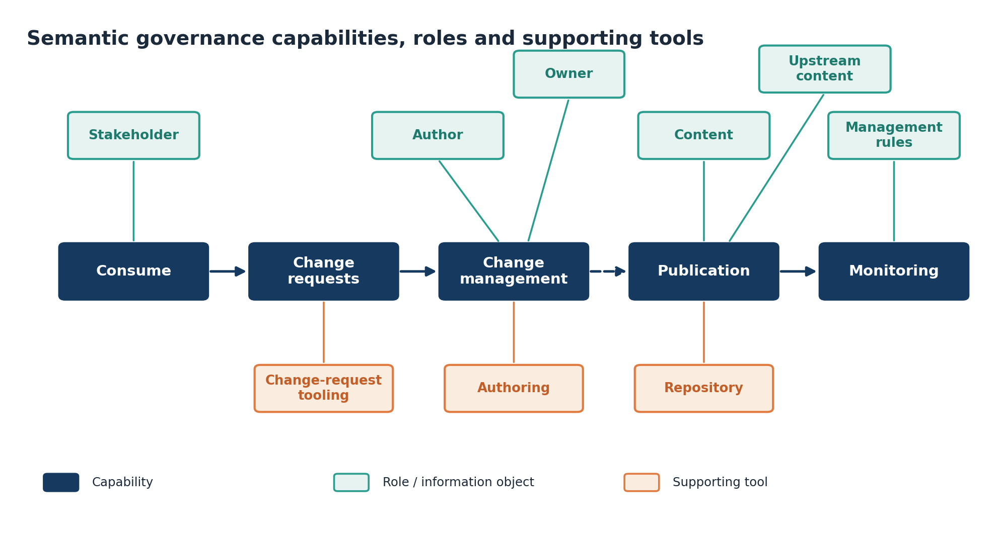
✎ edit📣 feedback Figure A.1 — Semantic governance capabilities, the roles that carry them out, and the supporting application components.
Footnotes
-
https://www.who.int/news/item/23-05-2025-world-health-assembly-endorses-extension-of-the-global-digital-health-strategy-to-2027#:~:text=Digital%20health%20has%20also%20gained,PAHO%20and%20other%20key%20partners. ↩
-
https://iris.who.int/server/api/core/bitstreams/a64d584f-015b-471f-9d86-9ea263cfb516/content ↩
-
National Institute of Standards and Technology (2011). NIST Cloud Computing Reference Architecture, Special Publication (NIST SP) 500-292. Liu, F., Tong, J., Mao, J., Bohn, R., Messina, J., Badger, M. and Leaf, D. Gaithersburg, MD: NIST. Available at: https://doi.org/10.6028/NIST.SP.500-292 (Accessed: 5 June 2026). ↩
-
The Open Group (2018). The TOGAF® Standard, Version 9.2. Available at: https://pubs.opengroup.org/architecture/togaf9-doc/arch/ (Accessed: 5 June 2026). ↩
-
World Health Organization, & International Telecommunication Union. (2020). Digital health platform handbook: building a digital information infrastructure (infostructure) for health. World Health Organization. https://www.who.int/publications/i/item/9789240013728 ↩
-
Clark J, Marin G, Ardic Alper OP, Galicia Rabadan GA. Digital Public Infrastructure and Development. Digital Transformation White Paper, Volume 1. © Washington, DC: World Bank.” (https://documents1.worldbank.org/curated/en/099031025172027713/pdf/P505739-84c5073b-9d40-4b83-a211-98b2263e87dd.pdf) ↩
-
G20 (2023). G20 Digital Economy Ministers' Meeting Outcome Document and Chair's Summary, Bengaluru, India, 19 August 2023. G20 Digital Economy Working Group, India Presidency. Available at: https://g7g20-documents.org/database/document/2023-g20-india-sherpa-track-digital-economy-ministers-ministers-language-g20-digital-economy-ministers-meeting-outcome-document-and-chair-summary (Accessed: 5 June 2026) ↩
-
Fetter, J., Rao, K. and Eaves, D. (2025). 2025 State of Digital Public Infrastructure Report. UCL Institute for Innovation and Public Purpose, IIPP Policy Report 2025/06. Available at: https://www.ucl.ac.uk/bartlett/publications/2025/nov/2025-state-digital-public-infrastructure-report (Accessed: 4 November 2025). ↩
-
Exemplars in Global Health (n.d.). CoWIN in India. Gates Ventures / Exemplars in Global Health. Available at: https://www.exemplars.health/emerging-topics/epidemic-preparedness-and-response/digital-health-tools/cowin-in-india (Accessed: 5 June 2026). ↩
-
Metsallik, J., Ross, P., Draheim, D. and Piho,G. (2018). Ten Years of the e-Health System in Estonia. CEUR Workshop Proceedings, Vol. 2336. Available at: https://ceur-ws.org/Vol-2336/MMHS2018_invited.pdf (Accessed: 5 June 2026). ↩
-
Report: Leveraging digital public infrastructure for sustainable health system transformation (2026) https://www.wiltonpark.org.uk/app/uploads/2026/03/WP3673-Report-web.pdf ↩
-
* These goals are expressed as outcomes rather than as health system inputs, and so are framed differently from WHO's six health system building blocks (service delivery, health workforce, health information systems, medical products, vaccines and technologies, health system financing, and leadership and governance). They nonetheless map closely onto them, while also reflecting more recent priorities such as person-centred health records and resilience. Leadership and governance is addressed in this document as a foundational principle rather than a goal. A mapping to the building blocks is provided in Annex [X] ↩
-
The Open Group (2022). The TOGAF® Standard, 10th Edition. The Open Group. Available at: https://www.opengroup.org/togaf ↩
-
* SNOMED CT requires a licence: it is available at no charge within countries that are Members of SNOMED International, while others license it directly. Countries should confirm their licensing position before adoption. SNOMED GPS is an open and freely accessible collection of SNOMED CT concepts that provides broad coverage of the SNOMED CT International Edition. It is intended to support adoption by providing a representative subset of concepts suitable for implementation, evaluation, and interoperability use cases. ↩
-
https://www.who.int/teams/digital-health-and-innovation/smart-guidelines ↩
-
A full-STAC remedy for global digital health transformation: open standards, technologies, architectures and content. https://doi.org/10.1093/oodh/oqad018 ↩
-
Archi is a free, open-source ArchiMate modelling tool, available under the MIT licence and maintained by Phillip Beauvoir and Jean-Baptiste Sarrodie at archimatetool.com. It runs on Windows, macOS, and Linux. Archi® is a registered trademark of Phillip Beauvoir; ArchiMate®, TOGAF®, and The Open Group® are registered trademarks of The Open Group. The reference architecture models are also exchangeable through The Open Group's ArchiMate Model Exchange File Format, so they may be opened and adapted in any conformant ArchiMate tool. ↩
-
The Open Group, The TOGAF® Standard, 10th Edition. The Open Group, 2022. ↩
-
The Open Group, ArchiMate® 3.2 Specification. The Open Group, 2022. ↩
-
A.E. LeFevre et al., “Avoiding the road to nowhere: policy insights on scaling up and sustaining digital health,” Global Policy 12(S6) (2021): 110–114 ↩
-
F. Huang, S. Blaschke and H. Lucas, “Beyond pilotitis: taking digital health interventions to the national level in China and Uganda,” Globalization and Health 13 (2017): 49 ↩
-
A.B. Labrique et al., “Best practices in scaling digital health in low and middle income countries,” Globalization and Health 14 (2018): 103. ↩
-
G. Hardin, “The Tragedy of the Commons,” Science 162, no. 3859 (1968): 1243–1248; ↩
-
E. Ostrom, Governing the Commons: The Evolution of Institutions for Collective Action (Cambridge: Cambridge University Press, 1990). ↩
-
T. Greenhalgh et al., “Beyond Adoption: A New Framework for Theorizing and Evaluating Nonadoption, Abandonment, and Challenges to the Scale-Up, Spread, and Sustainability of Health and Care Technologies,” Journal of Medical Internet Research 19, no. 11 (2017): e367. ↩
-
The OpenHIE terminology management maturity model https://wiki.ohie.org/download/attachments/9437189/Terminology_Services_%20Maturity%20Model-2018.pptx?version=1&modificationDate=1550671780655&api=v2 ↩
-
https://openconceptlab.org/2024/08/01/nhdd-conceptual-framework-nhdd-use-cases/ ↩
-
IBM, "What is interoperability in healthcare?" https://www.ibm.com/think/topics/interoperability-in-healthcare ↩
-
Recognised dimensions of health interoperability — technical/foundational, structural, semantic, and organisational — as used in widely adopted interoperability frameworks ↩
-
https://guides.ohie.org/arch-spec/openhie-component-specifications-1/openhie-interoperability-layer-iol ↩
-
GovStack Information Mediator Building Block — description, cross-cutting requirements (standardised interchange formats; asynchronous-first pub/sub), and functional requirements (distributed access points, signed and timestamped message logs, audit, monitoring, data-sharing-agreement governance) ↩
-
https://health.ec.europa.eu/ehealth-digital-health-and-care/digital-health-and-care/electronic-cross-border-health-services\_en ↩
-
https://health.ec.europa.eu/document/download/b744f30b-a05e-4b9c-9630-ad96ebd0b2f0_en?filename=ehn_guidelines_eprescriptions_en.pdf ↩
-
https://health.ec.europa.eu/document/download/e020f311-c35b-45ae-ba3d-03212b57fa65_en?filename=ehn_guidelines_patientsummary_en.pdf ↩
-
Regulation (EU) 2025/327 of the European Parliament and of the Council of 11 February 2025 on the European Health Data Space and amending Directive 2011/24/EU and Regulation (EU) 2024/2847. It was published in the Official Journal on 5 March 2025 and applies, with a phased timeline, from 26 March 2027 onward. https://eur-lex.europa.eu/eli/reg/2025/327/oj/eng ↩
-
GDHCN https://www.who.int/publications/m/item/global-digital-health-certification-network-(gdhcn) ↩
-
World Health Organization. Digital implementation investment guide (DIIG): integrating digital interventions into health programmes. Geneva: World Health Organization; 2020 ↩
-
Wilton Park, Leveraging digital public infrastructure for sustainable health system transformation, report of the dialogue held 23–25 February 2026. ↩
-
WHO SMART Guidelines (Standards-based, Machine-readable, Adaptive, Requirements-based, Testable). The digital adaptation kit (L2) defines generic personas among its standardised components, which are represented as computable actor definitions in the corresponding FHIR implementation guide (L3). WHO SMART guidelines: optimising country-level use of guideline recommendations in the digital age, The Lancet Digital Health, 2021. ↩
-
HL7 International (2023). HL7 FHIR Release 5. Health Level Seven International. Available at: https://hl7.org/fhir/ ↩
-
https://interoperable-europe.ec.europa.eu/collection/interoperability-test-bed-repository/solution/interoperability-test-bed ↩
-
Inglis Humphrey W, Smithies A, Prestt J, Fletcher M, Cresswell K. The NHS Digital Academy Digital Health Leadership Programme. In: Digital Professionalism in Health and Care: Developing the Workforce, Building the Future — Proceedings of the EFMI Special Topic Conference 2022. Studies in Health Technology and Informatics, vol. 298. IOS Press; 2022. p. 24–28. doi:10.3233/SHTI220901. https://journals.sagepub.com/doi/epdf/10.3233/SHTI220901 ↩
-
Wilton Park. Leveraging digital public infrastructure for sustainable health system transformation. Wilton Park, February 2026. In association with the Foreign, Commonwealth and Development Office, the World Health Organization, and Co-Develop. ↩
-
Regulation (EU) 2024/1689 of the European Parliament and of the Council of 13 June 2024 laying down harmonised rules on artificial intelligence (Artificial Intelligence Act). Official Journal of the European Union, L series, 12 July 2024. https://eur-lex.europa.eu/eli/reg/2024/1689/oj ↩
-
World Health Organization. Ethics and governance of artificial intelligence for health: WHO guidance. Geneva: World Health Organization; 2021. ↩
-
World Health Organization. Ethics and governance of artificial intelligence for health: guidance on large multi-modal models. Geneva: World Health Organization; 2024. Available at: https://www.who.int/publications/i/item/9789240084759 ↩
-
Council of Europe. Council of Europe Framework Convention on Artificial Intelligence and Human Rights, Democracy and the Rule of Law (CETS No. 225). Vilnius, 5 September 2024. https://www.coe.int/en/web/artificial-intelligence/the-framework-convention-on-artificial-intelligence ↩
-
Republic of Korea. Act on the Development of Artificial Intelligence and Establishment of Trust (AI Basic Act), Act No. 20676. Promulgated 21 January 2025; entered into force 22 January 2026. Official statute (Korean), National Law Information Center: https://www.law.go.kr English-language summary — US Library of Congress, Global Legal Monitor, 20 February 2026: https://www.loc.gov/item/global-legal-monitor/2026-02-20/south-korea-comprehensive-ai-legal-framework-takes-effect/ ↩
-
Republic of Peru. Ley N.º 31814, Ley que promueve el uso de la inteligencia artificial en favor del desarrollo económico y social del país. Diario Oficial El Peruano, 5 July 2023. (Implementing regulation approved by Supreme Decree, 2025.) Consolidated text, Congreso de la República: https://leyes.congreso.gob.pe/Documentos/2021_2026/ADLP/Texto_Consolidado/31814-TXM.pdf ↩
-
World Health Organization. Harnessing artificial intelligence for health. Department of Digital Health and Innovation. Available at: https://www.who.int/teams/digital-health-and-innovation/harnessing-artificial-intelligence-for-health ↩
-
https://www.who.int/publications/m/item/classifying-health-workers ↩
-
https://healthgeolab.net/DOCUMENTS/Guidance_Common_Geo-registry_Ve2.pdf ↩
-
https://iris.who.int/server/api/core/bitstreams/d895078b-b45b-4b2c-b216-b82c07b2d4f7/content ↩
-
https://www.who.int/news-room/questions-and-answers/item/global-health-facilities-database ↩
-
USAID GHSC-PSM Product Master Data Management Reference Guide (2020) https://www.ghsupplychain.org/sites/default/files/2021-11/2021_GHSC-PSM%20PMDM%20Reference%20Guide_Final.pdf ↩
-
https://www.gs1belu.org/sites/gs1belu/files/2020-07/20191029\_implementation\_gs1\_standards\_traceability\_medicines\_hc\_supply\_chain\_v20\_0.pdf ↩
-
https://www.cgdev.org/sites/default/files/improving-global-health-supply-chains-through-traceability.pdf ↩
-
https://digital.ahrq.gov/electronic-medical-record-systems ↩
-
https://www.cms.gov/priorities/key-initiatives/e-health/records ↩
-
https://guides.ohie.org/arch-spec/openhie-component-specifications-1/openhie-finance-and-insurance-service ↩
-
Karippacheril, Tina George; Alberro Encinas, Luis Iñaki; Cardenas Martinez, Ana Lucia; Daly, Conrad; Suri, Satyajit. 2024. Playbook on Digital Social Protection Delivery Systems: Towards Dynamic Inclusion and Interoperability. © World Bank. http://hdl.handle.net/10986/41527 ↩
-
Magoba Bridget, Gebrekrstos Negash Gebru, George S Odongo, Calle Hedberg, Adel Hussein Elduma, Joseph Sam Kanu, James Bangura, James Sylvester Squire, Monique A Foster, Digitalizing disease surveillance: experience from Sierra Leone, Health Policy and Planning, Volume 40, Issue 1, January 2025, Pages 85–96, https://doi.org/10.1093/heapol/czae039 ↩
-
Mugasha R, Kwiringira A, Ntono V, Nakiire L, Ayebazibwe I, Kyozira C, Muruta AN, Kasule JN, Byonanebye DM, Nanyondo J, Walwema R, Kakooza F, Lamorde M. Scaling Up and Enhancing the Functionality of the Electronic Integrated Diseases Surveillance and Response System in Uganda, 2020-2022: Description of the Journey, Challenges, and Lessons Learned. JMIR Public Health Surveill. 2025 Apr 14;11:e59783. doi: 10.2196/59783. PMID: 40228314; PMCID: PMC12011313. ↩
-
https://www.who.int/publications/i/item/WHO-AF-WHE-CPI-01-2019 ↩
-
https://iris.who.int/server/api/core/bitstreams/1e38533c-30b3-419e-89b5-94d63b30df6f/content ↩
-
https://www.who.int/teams/digital-health-and-innovation/smart-guidelines ↩